Apache Juneau™ is a single cohesive Java ecosystem consisting of the following parts:
<dependency>
<groupId>org.apache.juneau</groupId>
<artifactId>juneau-marshall</artifactId>
<version>7.2.0</version>
</dependency>
juneau-marshall-7.2.0.jar
org.apache.juneau.marshall_7.2.0.jar
The juneau-marshall artifact contains the API for defining serializers and parsers, and
marshalling support for JSON, XML, HTML, URL-Encoding, UON and others.
It also defines many convenience utility classes used throughout the framework.
One of the goals of Juneau was to make serialization as simple as possible.
In a single line of code, you should be able to serialize and parse most POJOs.
Despite this simplicity, Juneau provides lots of extensibility and configuration properties for tailoring how
POJOs are serialized and parsed.
The built-in serializers in Juneau are fast, efficient, and highly configurable.
They work by serializing POJOs directly to streams instead of using intermediate Document Object Model
objects.
In most cases, you can serialize objects in one line of code by using one of the default serializers:
// A simple bean
public class Person {
public String name = "John Smith";
public int age = 21;
}
// Serialize to JSON, XML, or HTML
Person p = new Person();
// Produces:
// "{\"name\":\"John Smith\",\"age\":21}"
String json = JsonSerializer.DEFAULT.serialize(p);
// Produces:
// "{name:'John Smith',age:21}"
String json = SimpleJsonSerializer.DEFAULT.serialize(p);
// Produces:
// <object>
// <name>John Smith</name>
// <age>21</age>
// </object>
String xml = XmlSerializer.DEFAULT.serialize(p);
// Produces:
// <table>
// <tr><th>key</th><th>value</th></tr>
// <tr><td>name</td><td>John Smith</td></tr>
// <tr><td>age</td><td>21</td></tr>
// </table>
String html = HtmlSerializer.DEFAULT.serialize(p);
// Produces:
// "(name='John Smith',age=21)"
String uon = UonSerializer.DEFAULT.serialize(p);
// Produces:
// "name='John+Smith'&age=21"
String urlencoding = UrlEncodingSerializer.DEFAULT.serialize(p);
// Produces:
// 82 A4 6E 61 6D 65 AA 4A 6F 68 6E 20 53 6D 69 74 68 A3 61 67 65 15
byte[] b = MsgPackSerializer.DEFAULT.serialize(p);
In addition to the default serializers, customized serializers can be created using various built-in options:
// Use one of the default serializers to serialize a POJO
String json = JsonSerializer.DEFAULT.serialize(someObject);
// Create a custom serializer for lax syntax using single quote characters
JsonSerializer serializer = JsonSerializer.create().simple().sq().build();
// Clone an existing serializer and modify it to use single-quotes
JsonSerializer serializer = JsonSerializer.DEFAULT.builder().sq().build();
// Serialize a POJO to JSON
String json = serializer.serialize(someObject);
Default serialization support is provided for Java primitives, Maps, Collections,
beans, and arrays.
Extensible support for other data types such as Calendars, Dates,
Iterators is available through the use of POJO swaps (described later).
The class hierarchy for the serializers (excluding specialized subclasses) are:
- {@link org.apache.juneau.serializer.Serializer}
- {@link org.apache.juneau.serializer.WriterSerializer}
- {@link org.apache.juneau.json.JsonSerializer}
- {@link org.apache.juneau.json.JsonSchemaSerializer}
- {@link org.apache.juneau.json.SimpleJsonSerializer}
- {@link org.apache.juneau.plaintext.PlainTextSerializer}
- {@link org.apache.juneau.jena.RdfSerializer}
- {@link org.apache.juneau.jena.N3Serializer}
- {@link org.apache.juneau.jena.NTripleSerializer}
- {@link org.apache.juneau.jena.RdfXmlSerializer}
- {@link org.apache.juneau.jena.RdfXmlAbbrevSerializer}
- {@link org.apache.juneau.jena.TurtleSerializer}
- {@link org.apache.juneau.uon.UonSerializer}
- {@link org.apache.juneau.httppart.UonPartSerializer}
- {@link org.apache.juneau.httppart.OpenApiPartSerializer}
- {@link org.apache.juneau.httppart.SimpleUonPartSerializer}
- {@link org.apache.juneau.urlencoding.UrlEncodingSerializer}
- {@link org.apache.juneau.xml.XmlSerializer}
- {@link org.apache.juneau.html.HtmlSerializer}
- {@link org.apache.juneau.html.HtmlSchemaSerializer}
- {@link org.apache.juneau.html.HtmlStrippedDocSerializer}
- {@link org.apache.juneau.html.HtmlDocSerializer}
- {@link org.apache.juneau.html.HtmlSchemaDocSerializer}
- {@link org.apache.juneau.soap.SoapXmlSerializer}
- {@link org.apache.juneau.xml.XmlDocSerializer}
- {@link org.apache.juneau.xmlschema.XmlSchemaSerializer}
- {@link org.apache.juneau.xmlschema.XmlSchemaDocSerializer}
- {@link org.apache.juneau.serializer.OutputStreamSerializer}
- {@link org.apache.juneau.jso.JsoSerializer}
- {@link org.apache.juneau.msgpack.MsgPackSerializer}
Parsers work by parsing input directly into POJOs instead of having to create intermediate Document Object
Models.
This allows them to parse input with minimal object creation.
Like the serializers, you can often parse objects in one line of code by using one of the default parsers:
// Use one of the predefined parsers.
Parser parser = JsonParser.DEFAULT;
// Parse a JSON object as a bean.
String json = "{name:'John Smith',age:21}";
Person p = parser.parse(json, Person.class);
// Or parse it into a generic Map.
Map m1 = parser.parse(json, Map.class);
// Parse a JSON string.
json = "'foobar'";
String s2 = parser.parse(json, String.class);
// Parse a JSON number as a Long or Float.
json = "123";
Long l3 = parser.parse(json, Long.class);
Float f3 = parser.parse(json, Float.class);
// Parse a JSON object as a HashMap<String,Person>.
json = "{a:{name:'John Smith',age:21},b:{name:'Joe Smith',age:42}}";
Map<String,Person> m4 = parser.parse(json, HashMap.class, String.class, Person.class)
// Parse a JSON object as a HashMap<String,LinkedList<Person>>.
json = "{a:[{name:'John Smith',age:21},{name:'Joe Smith',age:42}]}";
Map<String,List<Person>> m5 = parser.parse(json, HashMap.class, String.class,
LinkedList.class, Person.class)
// Parse a JSON array of integers as a Collection of Integers or int[] array.
json = "[1,2,3]";
List<Integer> l6 = parser.parse(json, LinkedList.class, Integer.class);
int[] i7 = parser.parse(json, int[].class);
The parsers can also be used to populating existing bean and collection objects:
// Use one of the predefined parsers.
Parser parser = JsonParser.DEFAULT;
// Populate the properties on an existing bean from a JSON object.
String json = "{name:'John Smith',age:21}";
Person p = new Person();
parser.parseIntoBean(json, p);
// Populate an existing list from a JSON array of numbers.
json = "[1,2,3]";
List<Integer> l2 = new LinkedList<Integer>();
parser.parseIntoCollection(json, l2, Integer.class);
// Populate an existing map from a JSON object containing beans.
json = "{a:{name:'John Smith',age:21},b:{name:'Joe Smith',age:42}}";
Map<String,Person> m3 = new TreeMap<String,Person>();
parser.parseIntoMap(json, m3, String.class, Person.class);
-
In the example above, we're parsing "lax" JSON (single quotes, unquoted attributes).
The JSON parser can handle any valid JSON syntax (such as quoted or unquoted attributes, single or double
quotes).
It can also handle JSON fragments and embedded Javascript comments.
Many of the JSON examples provided will use lax syntax which is easier to read since we don't have to deal
with escapes.
The class hierarchy for the parsers (excluding specialized subclasses) are:
- {@link org.apache.juneau.parser.Parser}
- {@link org.apache.juneau.parser.ReaderParser}
- {@link org.apache.juneau.json.JsonParser}
- {@link org.apache.juneau.plaintext.PlainTextParser}
- {@link org.apache.juneau.jena.RdfParser}
- {@link org.apache.juneau.jena.RdfXmlParser}
- {@link org.apache.juneau.jena.N3Parser}
- {@link org.apache.juneau.jena.NTripleParser}
- {@link org.apache.juneau.jena.TurtleParser}
- {@link org.apache.juneau.uon.UonParser}
- {@link org.apache.juneau.httppart.UonPartParser}
- {@link org.apache.juneau.httppart.OpenApiPartParser}
- {@link org.apache.juneau.urlencoding.UrlEncodingParser}
- {@link org.apache.juneau.xml.XmlParser}
- {@link org.apache.juneau.html.HtmlParser}
- {@link org.apache.juneau.parser.InputStreamParser}
- {@link org.apache.juneau.jso.JsoParser}
- {@link org.apache.juneau.msgpack.MsgPackParser}
{@link org.apache.juneau.marshall.Marshall Marshalls} are simple pairings of a {@link org.apache.juneau.serializer.Serializer}
and {@link org.apache.juneau.parser.Parser} with convenience methods for serializing and parsing POJOs.
- {@link org.apache.juneau.marshall.Marshall}
- {@link org.apache.juneau.marshall.Marshall#read(Object,Class) read(Object,Class)}
- {@link org.apache.juneau.marshall.Marshall#read(Object,Type,Type...) read(Object,Type,Type...)}
- {@link org.apache.juneau.marshall.Marshall#write(Object) write(Object)}
- {@link org.apache.juneau.marshall.Marshall#write(Object,Object) write(Object,Object)}
- {@link org.apache.juneau.marshall.Marshall#toString(Object) toString(Object)}
- {@link org.apache.juneau.marshall.Marshall#println(Object) println(Object)}
Marshalls are often cleaner to use on-the-fly since they have simplified names.
The following shows the {@link org.apache.juneau.marshall.Json} marshall in action:
// Using instance.
Json json = new Json();
MyPojo myPojo = json.read(string, MyPojo.class);
String string = json.write(myPojo);
// Using DEFAULT instance.
MyPojo myPojo = Json.DEFAULT.read(string, MyPojo.class);
String string = Json.DEFAULT.write(myPojo);
Marshalls exist for all supported languages.
- {@link org.apache.juneau.marshall.Marshall}
- {@link org.apache.juneau.marshall.CharMarshall}
- {@link org.apache.juneau.marshall.Html}
- {@link org.apache.juneau.marshall.Json}
- {@link org.apache.juneau.marshall.PlainText}
- {@link org.apache.juneau.marshall.SimpleJson}
- {@link org.apache.juneau.marshall.Uon}
- {@link org.apache.juneau.marshall.UrlEncoding}
- {@link org.apache.juneau.marshall.Xml}
- {@link org.apache.juneau.marshall.N3}
- {@link org.apache.juneau.marshall.NTriple}
- {@link org.apache.juneau.marshall.RdfXml}
- {@link org.apache.juneau.marshall.RdfXmlAbbrev}
- {@link org.apache.juneau.marshall.Turtle}
- {@link org.apache.juneau.marshall.StreamMarshall}
- {@link org.apache.juneau.marshall.Jso}
- {@link org.apache.juneau.marshall.MsgPack}
There is a separate set of serializers for serializing HTTP parts (query, form-data, headers, path variables, and plain-text request bodies).
The distinction is that these are designed to serialize directly to strings based on Open-API schema information.
// Schema information about our part.
HttpPartSchema schema = HttpPartSchema
.create("array")
.collectionFormat("pipes")
.items(
HttpPartSchema
.create("array")
.collectionFormat("csv")
.items(
HttpPartSchema.create("integer","int64")
)
)
.build();
// Our value to serialize
Object value = new long[][]{{1,2,3},{4,5,6},{7,8,9}};
// Produces "1,2,3|4,5,6|7,8,9"
String output = OpenApiPartSerializer.DEFAULT.serialize(HttpPartType.HEADER, schema, value);
The class hierarchy for the part serializers are:
- {@link org.apache.juneau.httppart.HttpPartSerializer}
- {@link org.apache.juneau.httppart.SimplePartSerializer} - Serializes directly to strings.
- {@link org.apache.juneau.httppart.UonPartSerializer} - Serializes to UON notation.
- {@link org.apache.juneau.httppart.OpenApiPartSerializer} - Serializes using Open-API schema rules.
- {@link org.apache.juneau.httppart.SimpleUonPartSerializer} - Serializes to UON notation for beans and maps only.
There is a separate set of parsers for parsing HTTP parts (query, form-data, headers, path variables, and plain-text request bodies).
The distinction is that these are designed to parse directly from strings based on Open-API schema information.
// Schema information about our part.
HttpPartSchema schema = HttpPartSchema
.create("array")
.collectionFormat("pipes")
.items(
HttpPartSchema
.create("array")
.collectionFormat("csv")
.items(
HttpPartSchema.create("integer","int64")
)
)
.build();
// Our input to parse.
String input = "1,2,3|4,5,6|7,8,9";
// Produces "[[1,2,3],[4,5,6],[7,8,9]]
long[][] value = OpenApiPartParser.DEFAULT.parse(HttpPartType.HEADER, schema, input, long[][].class);
The class hierarchy for the part serializers are:
- {@link org.apache.juneau.httppart.HttpPartParser}
- {@link org.apache.juneau.httppart.SimplePartParser} - Parses directly from strings.
- {@link org.apache.juneau.httppart.UonPartParser} - Parses from UON notation.
- {@link org.apache.juneau.httppart.OpenApiPartParser} - Parses using Open-API schema rules.
Serializers and parsers have a wide variety of configurable properties.
They all extend from the {@link org.apache.juneau.BeanContextBuilder} class that allows you to easily construct
new instances from scratch or build upon existing instances.
For example, the following code shows how to configure a JSON serializer:
WriterSerializer s = JsonSerializer
.create() // Create a JsonSerializerBuilder
.simple() // Simple mode
.ws() // Use whitespace
.sq() // Use single quotes
.build(); // Create a JsonSerializer
Configurable settings can also be set declaratively.
The following produces the same serializer.
WriterSerializer s = JsonSerializer
.create()
.set(JSON_simpleMode, true)
.set(SERIALIZER_useWhitespace, true)
.set(SERIALIZER_quoteChar, "'")
.build();
However, each of the serializers and parsers already contain reusable instances with common configurations.
For example, JSON has the following predefined reusable serializers and parsers:
- {@link org.apache.juneau.json.JsonSerializer}
- {@link org.apache.juneau.json.JsonSerializer#DEFAULT DEFAULT}
- {@link org.apache.juneau.json.JsonSerializer#DEFAULT_READABLE DEFAULT_READABLE}
- {@link org.apache.juneau.json.SimpleJsonSerializer}
- {@link org.apache.juneau.json.SimpleJsonSerializer#DEFAULT DEFAULT}
- {@link org.apache.juneau.json.SimpleJsonSerializer#DEFAULT_READABLE DEFAULT_READABLE}
- {@link org.apache.juneau.json.JsonParser}
- {@link org.apache.juneau.json.JsonParser#DEFAULT DEFAULT}
- {@link org.apache.juneau.json.JsonParser#DEFAULT_STRICT DEFAULT_STRICT}
These can be used directly, as follows:
// Serialize a POJO to LAX JSON.
String json = SimpleJsonSerializer.DEFAULT.serialize(myPojo);
For performance reasons, serializers and parsers are immutable.
However, they can be 'copied' and modified using the builder() method.
// Clone and customize an existing serializer.
WriterSerializer s = SimpleJsonSerializer.DEFAULT
.builder() // Create a new builder with copied settings.
.quoteChar('"') // Use a different quote character.
.build();
All serializers and parsers extend from the {@link org.apache.juneau.BeanContext} class.
Therefore, the following properties are common to all serializers and parsers:
- {@link org.apache.juneau.BeanContext}
- {@link org.apache.juneau.BeanContext#BEAN_beanClassVisibility BEAN_beanClassVisibility}
- {@link org.apache.juneau.BeanContext#BEAN_beanConstructorVisibility BEAN_beanConstructorVisibility}
- {@link org.apache.juneau.BeanContext#BEAN_beanDictionary BEAN_beanDictionary}
- {@link org.apache.juneau.BeanContext#BEAN_beanFieldVisibility BEAN_beanFieldVisibility}
- {@link org.apache.juneau.BeanContext#BEAN_beanFilters BEAN_beanFilters}
- {@link org.apache.juneau.BeanContext#BEAN_beanMapPutReturnsOldValue BEAN_beanMapPutReturnsOldValue}
- {@link org.apache.juneau.BeanContext#BEAN_beanMethodVisibility BEAN_beanMethodVisibility}
- {@link org.apache.juneau.BeanContext#BEAN_beansRequireDefaultConstructor BEAN_beansRequireDefaultConstructor}
- {@link org.apache.juneau.BeanContext#BEAN_beansRequireSerializable BEAN_beansRequireSerializable}
- {@link org.apache.juneau.BeanContext#BEAN_beansRequireSettersForGetters BEAN_beansRequireSettersForGetters}
- {@link org.apache.juneau.BeanContext#BEAN_beansRequireSomeProperties BEAN_beansRequireSomeProperties}
- {@link org.apache.juneau.BeanContext#BEAN_beanTypePropertyName BEAN_beanTypePropertyName}
- {@link org.apache.juneau.BeanContext#BEAN_debug BEAN_debug}
- {@link org.apache.juneau.BeanContext#BEAN_examples BEAN_examples}
- {@link org.apache.juneau.BeanContext#BEAN_excludeProperties BEAN_excludeProperties}
- {@link org.apache.juneau.BeanContext#BEAN_fluentSetters BEAN_fluentSetters}
- {@link org.apache.juneau.BeanContext#BEAN_ignoreInvocationExceptionsOnGetters BEAN_ignoreInvocationExceptionsOnGetters}
- {@link org.apache.juneau.BeanContext#BEAN_ignoreInvocationExceptionsOnSetters BEAN_ignoreInvocationExceptionsOnSetters}
- {@link org.apache.juneau.BeanContext#BEAN_ignorePropertiesWithoutSetters BEAN_ignorePropertiesWithoutSetters}
- {@link org.apache.juneau.BeanContext#BEAN_ignoreUnknownBeanProperties BEAN_ignoreUnknownBeanProperties}
- {@link org.apache.juneau.BeanContext#BEAN_ignoreUnknownNullBeanProperties BEAN_ignoreUnknownNullBeanProperties}
- {@link org.apache.juneau.BeanContext#BEAN_implClasses BEAN_implClasses}
- {@link org.apache.juneau.BeanContext#BEAN_includeProperties BEAN_includeProperties}
- {@link org.apache.juneau.BeanContext#BEAN_locale BEAN_locale}
- {@link org.apache.juneau.BeanContext#BEAN_mediaType BEAN_mediaType}
- {@link org.apache.juneau.BeanContext#BEAN_notBeanClasses BEAN_notBeanClasses}
- {@link org.apache.juneau.BeanContext#BEAN_notBeanPackages BEAN_notBeanPackages}
- {@link org.apache.juneau.BeanContext#BEAN_pojoSwaps BEAN_pojoSwaps}
- {@link org.apache.juneau.BeanContext#BEAN_propertyNamer BEAN_propertyNamer}
- {@link org.apache.juneau.BeanContext#BEAN_sortProperties BEAN_sortProperties}
- {@link org.apache.juneau.BeanContext#BEAN_timeZone BEAN_timeZone}
- {@link org.apache.juneau.BeanContext#BEAN_useEnumNames BEAN_useEnumNames}
- {@link org.apache.juneau.BeanContext#BEAN_useInterfaceProxies BEAN_useInterfaceProxies}
- {@link org.apache.juneau.BeanContext#BEAN_useJavaBeanIntrospector BEAN_useJavaBeanIntrospector}
In addition to the common properties above, the following properties are common to all serializers:
- {@link org.apache.juneau.BeanTraverseContext}
- {@link org.apache.juneau.BeanTraverseContext#BEANTRAVERSE_detectRecursions BEANTRAVERSE_detectRecursions}
- {@link org.apache.juneau.BeanTraverseContext#BEANTRAVERSE_ignoreRecursions BEANTRAVERSE_ignoreRecursions}
- {@link org.apache.juneau.BeanTraverseContext#BEANTRAVERSE_initialDepth BEANTRAVERSE_initialDepth}
- {@link org.apache.juneau.BeanTraverseContext#BEANTRAVERSE_maxDepth BEANTRAVERSE_maxDepth}
- {@link org.apache.juneau.serializer.Serializer}
- {@link org.apache.juneau.serializer.Serializer#SERIALIZER_addBeanTypes SERIALIZER_addBeanTypes}
- {@link org.apache.juneau.serializer.Serializer#SERIALIZER_addRootType SERIALIZER_addRootType}
- {@link org.apache.juneau.serializer.Serializer#SERIALIZER_listener SERIALIZER_listener}
- {@link org.apache.juneau.serializer.Serializer#SERIALIZER_sortCollections SERIALIZER_sortCollections}
- {@link org.apache.juneau.serializer.Serializer#SERIALIZER_sortMaps SERIALIZER_sortMaps}
- {@link org.apache.juneau.serializer.Serializer#SERIALIZER_trimEmptyCollections SERIALIZER_trimEmptyCollections}
- {@link org.apache.juneau.serializer.Serializer#SERIALIZER_trimEmptyMaps SERIALIZER_trimEmptyMaps}
- {@link org.apache.juneau.serializer.Serializer#SERIALIZER_trimNullProperties SERIALIZER_trimNullProperties}
- {@link org.apache.juneau.serializer.Serializer#SERIALIZER_trimStrings SERIALIZER_trimStrings}
- {@link org.apache.juneau.serializer.Serializer#SERIALIZER_uriContext SERIALIZER_uriContext}
- {@link org.apache.juneau.serializer.Serializer#SERIALIZER_uriRelativity SERIALIZER_uriRelativity}
- {@link org.apache.juneau.serializer.Serializer#SERIALIZER_uriResolution SERIALIZER_uriResolution}
- {@link org.apache.juneau.serializer.Serializer#SERIALIZER_useWhitespace SERIALIZER_useWhitespace}
- {@link org.apache.juneau.serializer.WriterSerializer}
- {@link org.apache.juneau.serializer.WriterSerializer#WSERIALIZER_maxIndent WSERIALIZER_maxIndent}
- {@link org.apache.juneau.serializer.WriterSerializer#WSERIALIZER_quoteChar WSERIALIZER_quoteChar}
- {@link org.apache.juneau.serializer.OutputStreamSerializer}
- {@link org.apache.juneau.serializer.OutputStreamSerializer#OSSERIALIZER_binaryFormat OSSERIALIZER_binaryFormat}
In addition to the common properties above, the following properties are common to all parsers:
- {@link org.apache.juneau.parser.Parser}
- {@link org.apache.juneau.parser.Parser#PARSER_autoCloseStreams PARSER_autoCloseStreams}
- {@link org.apache.juneau.parser.Parser#PARSER_debugOutputLines PARSER_debugOutputLines}
- {@link org.apache.juneau.parser.Parser#PARSER_listener PARSER_listener}
- {@link org.apache.juneau.parser.Parser#PARSER_strict PARSER_strict}
- {@link org.apache.juneau.parser.Parser#PARSER_trimStrings PARSER_trimStrings}
- {@link org.apache.juneau.parser.Parser#PARSER_unbuffered PARSER_unbuffered}
- {@link org.apache.juneau.parser.ReaderParser}
- {@link org.apache.juneau.parser.ReaderParser#RPARSER_fileCharset RPARSER_fileCharset}
- {@link org.apache.juneau.parser.ReaderParser#RPARSER_inputStreamCharset RPARSER_inputStreamCharset}
- {@link org.apache.juneau.parser.InputStreamParser}
- {@link org.apache.juneau.parser.InputStreamParser#ISPARSER_binaryFormat ISPARSER_binaryFormat}
The {@link org.apache.juneau.ObjectMap} and {@link org.apache.juneau.ObjectList} classes are generic Java
representations of JSON objects and arrays.
These classes can be used to create "unstructured" models for serialization (as opposed to "structured"
models consisting of beans).
If you want to quickly generate JSON/XML/HTML from generic maps/collections, or parse JSON/XML/HTML into
generic maps/collections, these classes work well.
These classes extend directly from the following JCF classes:
-
{@link java.util.LinkedHashMap java.util.LinkedHashMap}
-
{@link org.apache.juneau.ObjectMap org.apache.juneau.ObjectMap}
-
{@link java.util.LinkedList java.util.LinkedList}
-
{@link org.apache.juneau.ObjectMap org.apache.juneau.ObjectList}
The ObjectMap and ObjectList classes are very similar to the JSONObject and
JSONArray classes found in other libraries.
However, the names were chosen because the concepts of Maps and Lists are already familiar to
Java programmers, and these classes can be used with any of the serializers or parsers.
These object can be serialized in one of two ways:
-
Using the provided {@link org.apache.juneau.ObjectMap#serializeTo(java.io.Writer)} or
{@link org.apache.juneau.ObjectList#serializeTo(java.io.Writer)} methods.
-
Passing them to one of the {@link org.apache.juneau.serializer.Serializer} serialize methods.
-
Simply calling the {@link org.apache.juneau.ObjectMap#toString()} or {@link org.apache.juneau.ObjectList#toString()}
methods which will serialize it as Simplified JSON.
Any valid JSON can be parsed into an unstructured model consisting of generic
{@link org.apache.juneau.ObjectMap} and {@link org.apache.juneau.ObjectList} objects.
(In theory, any valid XML can also be parsed into an unstructured model, although this has not been
officially 'tested')
// Parse an arbitrary JSON document into an unstructered data model
// consisting of ObjectMaps, ObjectLists, and java primitive objects.
Parser parser = JsonParser.DEFAULT;
String json = "{a:{name:'John Smith',age:21},b:{name:'Joe Smith',age:42}}";
ObjectMap m = parser.parse(json, ObjectMap.class);
// Use ObjectMap API to extract data from the unstructured model.
int johnSmithAge = m.getObjectMap("a").getInt("age");
// Convert it back into JSON.
json = JsonSerializer.DEFAULT.serialize(m);
// Or convert it to XML.
String xml = XmlSerializer.DEFAULT.serialize(m);
// Or just use toString().
json = m.toString();
The ObjectMap and ObjectList classes have many convenience features:
// Convert the map to a bean.
MyBean m = objectMap.cast(MyBean.class);
// Find entries by multiple keys.
MyBean m = objectMap.find(MyBean.class, "key1", "key2");
// Fluent-style appenders.
objectMap.append("key1", "val1").append("key2", "val2");
// REST-like functions for manipulating nodes in the data structure using URL-like notation.
objectMap.getAt("foo/bar/myBean", MyBean.class);
objectMap.putAt("foo/bar/myBean", MyBean.class);
objectMap.postAt("foo/bar/myListOfBeans", MyBean.class);
objectMap.deleteAt("foo/bar/myBean");
// Copy with inclusion or exclusion.
ObjectMap m2 = objectMap.include("key1", "key2", "key3");
ObjectMap m3 = objectMap.exclude("key1", "key2", "key3");
// Serialize using another serializer.
String xml = objectMap.serializeTo(XmlSerializer.DEFAULT);
// Nested maps.
objectMap.setInner(objectMapInner);
-
As a general rule, if you do not specify a target type during parsing, or if the target type cannot be
determined through reflection, the parsers automatically generate ObjectMaps and ObjectLists.
Above the serializers and parsers are the {@link org.apache.juneau.serializer.SerializerGroup} and
{@link org.apache.juneau.parser.ParserGroup} classes.
These classes allow serializers and parsers to be retrieved by W3C-compliant HTTP Accept
and Content-Type values...
// Construct a new serializer group with configuration parameters that get applied to all serializers.
SerializerGroup sg = SerializerGroup.create()
.append(JsonSerializer.class, UrlEncodingSerializer.class);
.ws // or .useWhitespace(true)
.pojoSwaps(CalendarSwap.ISO8601DT.class)
.build();
// Find the appropriate serializer by Accept type and serialize our POJO to the specified writer.
sg.getSerializer("text/invalid, text/json;q=0.8, text/*;q:0.6, *\/*;q=0.0")
.serialize(myPersonObject, myWriter);
// Construct a new parser group with configuration parameters that get applied to all parsers.
ParserGroup pg = ParserGroup.create()
.append(JsonSerializer.class, UrlEncodingSerializer.class);
.pojoSwaps(CalendarSwap.ISO8601DT.class)
.build();
Person p = pg.getParser("text/json").parse(myReader, Person.class);
The REST servlet API builds upon the SerializerGroup and ParserGroup classes
to provide annotated REST servlets that automatically negotiate the HTTP media types and allow the developer
to work with requests and responses as POJOs.
All the serializers, parsers, and REST server/client classes use the following design pattern:
-
Context - A thread-safe read-only object.
- Heavy to construct and designed to be cached and reused.
- Created by ContextBuilder classes.
- Examples:
BeanContext, JsonSerializer
-
Session - A non-thread-safe single-use object with configuration combined from context and
runtime args such as locale/timezone.
- Lightweight objects that take a minimum amount of time to instantiate and are not typically reused.
- Created by
Context objects.
- Examples:
BeanSession, JsonSerializerSession
-
PropertyStore - A thread-safe read-only set of configuration properties.
- Heavier to create than
Sessions but lighter than Contexts.
- Each
Context contains one PropertyStore that defines all the configuration about that object.
- Created by PropertyStoreBuilder classes.
For example, the class hierarchy for JsonSerializer is:
Object
- {@link org.apache.juneau.Context}
- {@link org.apache.juneau.BeanContext}
- {@link org.apache.juneau.serializer.Serializer}
- {@link org.apache.juneau.serializer.WriterSerializer}
- {@link org.apache.juneau.json.JsonSerializer}
Each context object in the hierarchy define properties that can be stored in a PropertyStore
such as SERIALIZER_useWhitespace or JSON_simpleMode.
The class hierarchy for JsonSerializerBuilder is:
Object
- {@link org.apache.juneau.ContextBuilder}
- {@link org.apache.juneau.BeanContextBuilder}
- {@link org.apache.juneau.serializer.SerializerBuilder}
- {@link org.apache.juneau.serializer.WriterSerializerBuilder}
- {@link org.apache.juneau.json.JsonSerializerBuilder}
The class hierarchy for JsonSerializerSession is:
Object
- {@link org.apache.juneau.Session}
- {@link org.apache.juneau.BeanSession}
- {@link org.apache.juneau.serializer.SerializerSession}
- {@link org.apache.juneau.serializer.WriterSerializerSession}
- {@link org.apache.juneau.json.JsonSerializerSession}
The general idea behind a {@link org.apache.juneau.PropertyStore} is to serve as a reusable configuration of an artifact
(such as a serializer) such that the artifact can be cached and reused if the property stores are 'equal'.
For example, two serializers of the same type created with the same configuration will always end up being
the same serializer:
// Two serializers created with identical configurations will always be the same copy.
WriterSerializer s1 = JsonSerializer.create().pojoSwaps(MySwap.class).simple().build();
WriterSerializer s2 = JsonSerializer.create().set(JSON_simpleMode, true).pojoSwaps(MySwap.class).build();
assert(s1 == s2);
This has the effect of significantly improving performance especially if you're creating many
serializers and parsers.
The {@link org.apache.juneau.PropertyStoreBuilder} class is used to build up and instantiate immutable
PropertyStore objects.
In the example above, the property store being built looks like the following:
PropertyStore ps = PropertyStore
.create()
.set("BeanContext.pojoSwaps.lc", MySwap.class)
.set("JsonSerializer.simpleMode.b", true)
.build();
Property stores are immutable, comparable, and their hashcodes are calculated exactly one time.
That makes them particularly suited for use as hashmap keys, and thus for caching reusable serializers and parsers.
Refer to the {@link org.apache.juneau.PropertyStore} javadoc for a detailed explaination on how
property stores work.
By default, the Juneau framework can serialize and parse a wide variety of POJOs out-of-the-box.
However, two special classes are provided tailor how certain Java objects are handled by the framework.
These classes are:
- {@link org.apache.juneau.transform.BeanFilter} - Transforms that alter the way beans are handled.
- {@link org.apache.juneau.transform.PojoSwap} - Transforms that swap non-serializable POJOs with
serializable POJOs during serialization (and optionally vis-versa during parsing).
- {@link org.apache.juneau.transform.StringSwap} - Convenience subclass for swaps that convert
objects to strings.
- {@link org.apache.juneau.transform.MapSwap} - Convenience subclass for swaps that convert
objects to maps.
Transforms are added to serializers and parsers (and REST clients) using the following configuration properties:
- {@link org.apache.juneau.BeanContext}
- {@link org.apache.juneau.BeanContext#BEAN_beanFilters BEAN_beanFilters}
- {@link org.apache.juneau.BeanContext#BEAN_pojoSwaps BEAN_pojoSwaps}
Annotations are also provided for specifying transforms directly on classes and methods (all described in later sections):
-
{@link org.apache.juneau.annotation.Swap @Swap}
- Used to tailor how non-bean POJOs get interpreted by the framework.
-
{@link org.apache.juneau.annotation.Bean @Bean}
- Used to tailor how beans get interpreted by the framework.
-
{@link org.apache.juneau.annotation.BeanConstructor @BeanConstructor}
- Maps constructor arguments to property names on beans with read-only properties.
-
{@link org.apache.juneau.annotation.BeanIgnore @BeanIgnore}
- Ignore classes, fields, and methods from being interpreted as bean or bean components.
-
{@link org.apache.juneau.annotation.BeanProperty @BeanProperty}
- Used to tailor how bean properties get interpreted by the framework.
-
{@link org.apache.juneau.annotation.NameProperty @NameProperty}
- Identifies a setter as a method for setting the name of a POJO as it's known by its parent object.
-
{@link org.apache.juneau.annotation.ParentProperty @ParentProperty}
- Identifies a setter as a method for adding a parent reference to a child object.
-
{@link org.apache.juneau.annotation.URI @URI}
- Used to identify a class or bean property as a URI.
{@link org.apache.juneau.transform.PojoSwap PojoSwaps} are a critical component of Juneau.
They allow the serializers and parsers to handle Java objects that wouldn't normally be serializable.
Swaps are, simply put, 'object swappers' that swap in serializable objects for
non-serializable ones during serialization, and vis-versa during parsing.
Some examples of non-serializable POJOs are File, Reader,
Iterable, etc...
These are classes that aren't beans and cannot be represented as simple maps, collections, or primitives.
In the following example, we introduce a PojoSwap that will swap in ISO8601 strings for
Date objects:
// Sample swap for converting Dates to ISO8601 strings.
public class MyDateSwap extends PojoSwap<Date,String> {
// ISO8601 formatter.
private DateFormat format = new SimpleDateFormat("yyyy-MM-dd'T'HH:mm:ssZ");
// Converts a Date object to an ISO8601 string.
@Override /* PojoSwap */
public String swap(BeanSession session, Date o) {
return format.format(o);
}
// Converts an ISO8601 string to a Date object.
@Override /* PojoSwap */
public Date unswap(BeanSession session, String o, ClassMeta hint) throws Exception {
return format.parse(o);
}
}
The swap can then be associated with serializers and parsers like so:
// Sample bean with a Date field.
public class MyBean {
public Date date = new Date(112, 2, 3, 4, 5, 6);
}
// Create a new JSON serializer, associate our date swap with it, and serialize a sample bean.
WriterSerializer s = JsonSerializer.create().simple().pojoSwaps(MyDateSwap.class).build();
String json = s.serialize(new MyBean()); // == "{date:'2012-03-03T04:05:06-0500'}"
// Create a JSON parser, associate our date swap with it, and reconstruct our bean (including the date).
ReaderParser p = JsonParser.create().pojoSwaps(MyDateSwap.class).build();
MyBean bean = p.parse(json, MyBean.class);
int day = bean.date.getDay(); // == 3
The {@link org.apache.juneau.BeanMap#get(Object)} and {@link org.apache.juneau.BeanMap#put(String,Object)}
methods will automatically convert to swapped values as the following example shows:
// Create a new bean context and add our swap.
BeanContext bc = BeanContext.create().pojoSwaps(MyDateSwap.class).build();
// Create a new bean.
MyBean myBean = new MyBean();
// Wrap it in a bean map.
BeanMap<Bean> beanMap = bc.forBean(myBean);
// Use the get() method to get the date field as an ISO8601 string.
String date = (String)beanMap.get("date"); // == "2012-03-03T04:05:06-0500"
// Use the put() method to set the date field to an ISO8601 string.
beanMap.put("date", "2013-01-01T12:30:00-0500"); // Set it to a new value.
// Verify that the date changed on the original bean.
int year = myBean.date.getYear(); // == 113
Another example of a PojoSwap is one that converts byte[] arrays to
BASE64-encoded strings:
public class ByteArrayBase64Swap extends StringSwap<byte[]> {
@Override /* StringSwap */
public String swap(byte[] b) throws Exception {
ByteArrayOutputStream baos = new ByteArrayOutputStream();
OutputStream b64os = MimeUtility.encode(baos, "base64");
b64os.write(b);
b64os.close();
return new String(baos.toByteArray());
}
@Override /* StringSwap */
public byte[] unswap(String s, ClassMeta<?> hint) throws Exception {
byte[] b = s.getBytes();
ByteArrayInputStream bais = new ByteArrayInputStream(b);
InputStream b64is = MimeUtility.decode(bais, "base64");
byte[] tmp = new byte[b.length];
int n = b64is.read(tmp);
byte[] res = new byte[n];
System.arraycopy(tmp, 0, res, 0, n);
return res;
}
}
The following example shows the BASE64 swap in use:
// Create a JSON serializer and register the BASE64 encoding swap with it.
WriterSerializer s = JsonSerializer.create().simple().pojoSwaps(ByteArrayBase64Swap.class).build();
ReaderParser p = JsonParser.create().pojoSwaps(ByteArrayBase64Swap.class).build();
byte[] bytes = {1,2,3};
String json = s.serialize(bytes); // Produces "'AQID'"
bytes = p.parse(json, byte[].class); // Reproduces {1,2,3}
byte[][] bytes2d = {{1,2,3},{4,5,6},null};
json = s.serialize(bytes2d); // Produces "['AQID','BAUG',null]"
bytes2d = p.parse(json, byte[][].class); // Reproduces {{1,2,3},{4,5,6},null}
Several PojoSwaps are already provided for common Java objects:
- org.apache.juneau.transforms
-
{@link org.apache.juneau.transforms.ByteArrayBase64Swap}
-
{@link org.apache.juneau.transforms.CalendarSwap}
-
{@link org.apache.juneau.transforms.DateSwap}
-
{@link org.apache.juneau.transforms.EnumerationSwap}
-
{@link org.apache.juneau.transforms.IteratorSwap}
-
{@link org.apache.juneau.transforms.ReaderSwap}
-
{@link org.apache.juneau.transforms.XMLGregorianCalendarSwap}
In particular, the {@link org.apache.juneau.transforms.CalendarSwap} and
{@link org.apache.juneau.transforms.DateSwap} transforms provide a large number of customized swaps to
ISO, RFC, or localized strings.
Swaps have access to the session locale and timezone through the {@link org.apache.juneau.BeanSession#getLocale()} and
{@link org.apache.juneau.BeanSession#getTimeZone()} methods.
This allows you to specify localized swap values when needed.
If using the REST server API, the locale and timezone are set based on the Accept-Language and
Time-Zone headers on the request.
-
The 'swapped' class type must be a serializable type.
See the definition for Category 4 objects in {@doc PojoCategories}.
Swaps can also be defined per-media-type.
The {@link org.apache.juneau.transform.PojoSwap#forMediaTypes()} method can be overridden to
provide a set of media types that the swap is invoked on.
It's also possible to define multiple swaps against the same POJO as long as they're differentiated
by media type.
When multiple swaps are defined, the best-match media type is used.
In the following example, we define 3 swaps against the same POJO.
One for JSON, one for XML, and one for all other types.
public class PojoSwapTest {
public static class MyPojo {}
public static class MyJsonSwap extends PojoSwap<MyPojo,String> {
@Override /* PojoSwap */
public MediaType[] forMediaTypes() {
return MediaType.forStrings("*/json");
}
@Override /* PojoSwap */
public String swap(BeanSession session, MyPojo o) throws Exception {
return "It's JSON!";
}
}
public static class MyXmlSwap extends PojoSwap<MyPojo,String> {
@Override /* PojoSwap */
public MediaType[] forMediaTypes() {
return MediaType.forStrings("*/xml");
}
@Override /* PojoSwap */
public String swap(BeanSession session, MyPojo o) throws Exception {
return "It's XML!";
}
}
public static class MyOtherSwap extends PojoSwap<MyPojo,String> {
@Override /* PojoSwap */
public MediaType[] forMediaTypes() {
return MediaType.forStrings("*/*");
}
@Override /* PojoSwap */
public String swap(BeanSession session, MyPojo o) throws Exception {
return "It's something else!";
}
}
@Test
public void doTest() throws Exception {
SerializerGroup g = SerializerGroup.create()
.append(JsonSerializer.class, XmlSerializer.class, HtmlSerializer.class)
.sq()
.pojoSwaps(MyJsonSwap.class, MyXmlSwap.class, MyOtherSwap.class)
.build();
MyPojo myPojo = new MyPojo();
String json = g.getWriterSerializer("text/json").serialize(myPojo);
assertEquals("'It\\'s JSON!'", json);
String xml = g.getWriterSerializer("text/xml").serialize(myPojo);
assertEquals("<string>It's XML!</string>", xml);
String html = g.getWriterSerializer("text/html").serialize(myPojo);
assertEquals("<string>It's something else!</string>", html);
}
}
When multiple swaps match the same media type, a best-match algorithm is applied to find the correct
swap to use.
In later sections we describe how annotations can be used to shorten this syntax:
@Swaps({MyJsonSwap.class,MyXmlSwap.class,MyOtherSwap.class})
public static class MyPojo {}
@Swap(mediaTypes="*/json")
public static class MyJsonSwap extends PojoSwap<MyPojo,String> {...}
@Swap(mediaTypes="*/xml")
public static class MyXmlSwap extends PojoSwap<MyPojo,String> {...}
@Swap(mediaTypes="*/*")
public static class MyOtherSwap extends PojoSwap<MyPojo,String> {...}
In the previous sections, we defined two-way swaps, meaning swaps where the original objects could be
reconstructing during parsing.
However, there are certain kinds of POJOs that we may want to support for serializing, but that are not
possible to reconstruct during parsing.
For these, we can use one-way object swaps.
A one-way POJO swap is simply an object transform that only implements the {@code swap()} method.
The {@code unswap()} method is simply left unimplemented.
An example of a one-way swaps would be one that allows {@code Iterators} to be serialized as JSON arrays.
It can make sense to be able to render {@code Iterators} as arrays, but in general it's not possible to
reconstruct an {@code Iterator} during parsing.
public class IteratorSwap extends PojoSwap<Iterator,List> {
@Override /* PojoSwap */
public List swap(Iterator o) {
List l = new LinkedList();
while (o.hasNext())
l.add(o.next());
return l;
}
}
Here is an example of our one-way swap being used.
Note that trying to parse the original object will cause a {@link org.apache.juneau.parser.ParseException}
to be thrown.
// Create a JSON serializer that can serialize Iterators.
WriterSerializer s = JsonSerializer.create().simple().pojoSwaps(IteratorSwap.class).build();
// Construct an iterator we want to serialize.
Iterator i = new ObjectList(1,2,3).iterator();
// Serialize our Iterator
String json = s.serialize(i); // Produces "[1,2,3]"
// Try to parse it.
ReaderParser p = JsonParser.create().pojoSwaps(IteratorSwap.class).build();
i = p.parse(s, Iterator.class); // Throws ParseException!!!
{@link org.apache.juneau.annotation.Swap @Swap} can be used to associate a swap class using an
annotation.
This is often cleaner than using the builder pojoSwaps() method since you can keep
your swap class near your POJO class.
@Swap(MyPojoSwap.class)
public class MyPojo {
...
}
// Sample swap for converting MyPojo classes to a simple string.
public class MyPojoSwap extends PojoSwap<MyPojo,String> {
@Override /* PojoSwap */
public String swap(BeanSession session, MyPojo o) {
return o.toSomeSerializableForm();
}
}
Multiple swaps can be associated with a POJO by using the {@link org.apache.juneau.annotation.Swaps @Swaps} annotation:
@Swaps(
{
@Swap(MyJsonSwap.class),
@Swap(MyXmlSwap.class),
@Swap(MyOtherSwap.class)
}
)
public class MyPojo {}
Readers get serialized directly to the output of a serializer.
Therefore it's possible to implement a swap that provides fully-customized output.
public class MyJsonSwap extends PojoSwap<MyPojo,Reader> {
public MediaType[] forMediaTypes() {
return MediaType.forStrings("*/json");
}
public Reader swap(BeanSession session, MyPojo o) throws Exception {
return new StringReader("{message:'Custom JSON!'}");
}
}
The @Swap annotation can also be used on getters and setters as well to apply a swap
to individual property values
@BeanProperty(swap=MyPojoSwap.class)
public MyPojo getMyPojo();
The {@link org.apache.juneau.annotation.Swap#template() @Swap.template()} annotation allows you to associate
arbitrary contextual strings with swaps.
The primary purpose is for providing template names, such as for Apache FreeMarker, therefore
the name 'template'.
However, the usage of the string is open-ended.
For example, you could pair a template string like so:
@Swap(impl=FreeMarkerSwap.class, template="MyPojo.div.ftl")
public class MyPojo {}
The implementation of the FreeMarker swap would look something like this:
// Our templated swap class.
public class FreeMarkerSwap extends PojoSwap<Object,Reader> {
public MediaType[] forMediaTypes() {
// Make sure this only applies to the HTML serializer.
return MediaType.forStrings("*/html");
}
public Reader swap(BeanSession session, Object o, String template) throws Exception {
// Call some method that uses FreeMarker to convert 'o' to raw HTML using
// the 'MyPojo.div.ftl' template.
return getFreeMarkerReader(template, o);
}
}
Various methods can be defined on a class directly to affect how it gets serialized.
This can often be simpler than using PojoSwaps.
Objects serialized as Strings can be parsed back into their original objects by
implementing one of the following methods on the class:
-
public static T fromString(String) method.
Any of the following method names also work:
valueOf(String)
parse(String)
parseString(String)
forName(String)
forString(String)
-
public T(String) constructor.
Note that these methods cover conversion from several built-in Java types, meaning the parsers can
automatically construct these objects from strings:
fromString(String) - {@link java.util.UUID}
valueOf(String) - {@link java.lang.Boolean}, {@link java.lang.Byte},
{@link java.lang.Double}, {@link java.lang.Float},
{@link java.lang.Integer}, {@link java.lang.Long}, {@link java.lang.Short}, {@link java.sql.Date},
{@link java.sql.Time}, {@link java.sql.Timestamp}
parse(String) - {@link java.text.DateFormat}, {@link java.text.MessageFormat},
{@link java.text.NumberFormat}, {@link java.util.Date}, {@link java.util.logging.Level}
parseString(String) - {@link javax.xml.bind.DatatypeConverter}
forName(String) - {@link java.lang.Class}
If you want to force a bean-like class to be serialized as a string, you can use the
{@link org.apache.juneau.annotation.BeanIgnore @BeanIgnore} annotation on the class to force it to be
serialized to a string using the toString() method.
Serializing to other intermediate objects can be accomplished by defining a swap method directly on the
class:
public X swap(BeanSession) method, where X is any serializable
object.
The BeanSession parameter allows you access to various information about the current
serialization session.
For example, you could provide customized results based on the media type being produced
({@link org.apache.juneau.BeanSession#getMediaType()}).
The following example shows how an HTML5 form template object can be created that gets serialized as a
populated HTML5 {@link org.apache.juneau.dto.html5.Form} bean.
import static org.apache.juneau.dto.html5.HtmlBuilder.*;
/**
* A simple HTML form template whose serialized form is an HTML5 Form object.
*/
public class FormTemplate {
private String action;
private int value1;
private boolean value2;
// Some constructor that initializes our fields.
public FormTemplate(String action, int value1, boolean value2) {
this.action = action;
this.value1 = value1;
this.value2 = value2;
}
// Special swap method that converts this template to a serializable bean
public Form swap(BeanSession session) {
return form(action,
input("text").name("v1").value(value1),
input("text").name("v2").value(value2)
);
}
}
Swapped objects can be converted back into their original form by the parsers by specifying one of the
following methods:
public static T unswap(BeanSession, X) method where X is the
swap class type.
public T(X) constructor where X is the swap class type.
The following shows how our form template class can be modified to allow the parsers to reconstruct our
original object:
import static org.apache.juneau.dto.html5.HtmlBuilder.*;
/**
* A simple HTML form template whose serialized form is an HTML5 Form object.
* This time with parsing support.
*/
@Bean(beanDictionary=HtmlBeanDictionary.class)
public class FormTemplate {
private String action;
private int value1;
private boolean value2;
// Our 'unswap' constructor
public FormTemplate(Form f) {
this.action = f.getAttr("action");
this.value1 = f.getChild(Input.class, 0)
.getAttr(int.class, "value");
this.value2 = f.getChild(Input.class, 1)
.getAttr(boolean.class, "value");
}
public FormTemplate(String action, int value1, boolean value2) {
this.action = action;
this.value1 = value1;
this.value2 = value2;
}
public Form swap(BeanSession session) {
return form(action,
input("text").name("v1").value(value1),
input("text").name("v2").value(value2)
);
}
}
Surrogate classes are very similar in concept to PojoSwaps except they're simpler to define.
For example, let's say we want to be able to serialize the following class, but it's not serializable for
some reason (for example, there are no properties exposed):
// Not serializable because it's not a bean because it has no public properties.
public class MyNonSerializableClass {
protected String foo;
}
This could be solved with the following PojoSwap.
// A serializable bean with 1 property.
public class MySerializableSurrogate {
public String foo;
}
// A PojoSwap that swaps out our non-serializable object with our serializable object.
public class MySwap extends PojoSwap<MyNonSerializableClass,MySerializableSurrogate> {
@Override /* PojoSwap */
public MySerializableSurrogate swap(MyNonSerializableClass o) {
// Create some serializable class and manually copy the data into it.
MySerializableSurrogate s = new MySerializableSurrogate();
s.foo = o.foo;
return s;
}
}
However, the same can be accomplished by using a surrogate class that simply contains a constructor with
the non-serializable class as an argument:
public class MySerializableSurrogate {
public String foo;
// Constructor takes in our non-serializable object!
public MySerializableSurrogate(MyNonSerializableClass c) {
this.foo = c.foo;
}
}
The surrogate class is registered in the same way as a PojoSwap:
// Create a JSON serializer that can serialize Iterators.
WriterSerializer s = JsonSerializer.create().pojoSwaps(MySerializableSurrogate.class).build();
When the serializer encounters the non-serializable class, it will serialize an instance of the surrogate
instead.
See Also:
- {@link org.apache.juneau.transform.Surrogate}
The {@link org.apache.juneau.annotation.Bean @Bean} annotation is used to tailor how beans are
interpreted by the framework.
Bean property inclusion and ordering on a bean class can be done using the
{@link org.apache.juneau.annotation.Bean#properties() @Bean.properties()} annotation.
// Address class with only street/city/state properties (in that order).
// All other properties are ignored.
@Bean(properties="street,city,state")
public class Address { ... }
Bean properties can be excluded using the {@link org.apache.juneau.annotation.Bean#excludeProperties() @Bean.excludeProperties()}
annotation.
// Address class with only street/city/state properties (in that order).
// All other properties are ignored.
@Bean(excludeProperties="city,state"})
public class Address { ... }
Bean properties can be sorted alphabetically using {@link org.apache.juneau.annotation.Bean#sort() @Bean.sort()}
// Address class with only street/city/state properties (in that order).
// All other properties are ignored.
@Bean(sort=true)
public class MyBean { ... }
The {@link org.apache.juneau.annotation.Bean#propertyNamer() @Bean.propertyNamer()} annotation
is used to provide customized naming of properties.
Property namers are used to transform bean property names from standard form to some other form.
For example, the {@link org.apache.juneau.PropertyNamerDLC} will convert property names to
dashed-lowercase, and these will be used as attribute names in JSON and element names in XML.
// Define a class with dashed-lowercase property names.
@Bean(propertyNamer=PropertyNamerDashedLC.class)
public class MyBean { ... }
The {@link org.apache.juneau.annotation.Bean#interfaceClass @Bean.interfaceClass()} annotation is used
to limit properties on beans to specific interface classes.
When specified, only the list of properties defined on the interface class will be used during
serialization.
Additional properties on subclasses will be ignored.
// Parent class
@Bean(interfaceClass=A.class)
public abstract class A {
public String f0 = "f0";
}
// Child class
public class A1 extends A {
public String f1 = "f1";
}
JsonSerializer s = SimpleJsonSerializer.DEFAULT;
A1 a1 = new A1();
String r = s.serialize(a1);
assertEquals("{f0:'f0'}", r); // Note f1 is not serialized.
Note that this annotation can be used on the parent class so that it filters to all child classes.
Or can be set individually on the child classes.
The {@link org.apache.juneau.annotation.Bean#stopClass @Bean.stopClass()} annotation is another
way to limit which properties are serialized (except from the opposite direction).
It's identical in purpose to the stop class specified by {@link java.beans.Introspector#getBeanInfo(Class, Class)}.
Any properties in the stop class or in its base classes will be ignored during analysis.
For example, in the following class hierarchy, instances of C3 will include property
p3, but not p1 or p2.
public class C1 {
public int getP1();
}
public class C2 extends C1 {
public int getP2();
}
@Bean(stopClass=C2.class)
public class C3 extends C2 {
public int getP3();
}
The {@link org.apache.juneau.annotation.Bean#propertyFilter() @Bean.propertyFilter()} annotation
and {@link org.apache.juneau.transform.PropertyFilter} class can be used to perform interception
and inline handling of bean getter and setter calls.
// Register filter on bean class.
@Bean(propertyFilter=AddressPropertyFilter.class)
public class Address {
public String getTaxInfo() {...}
public void setTaxInfo(String s) {...}
}
// Property filter that strips out sensitive information in our bean.
public class AddressPropertyFilter extends PropertyFilter {
@Override /* PropertyFilter */
public Object readProperty(Object bean, String name, Object value) {
if ("taxInfo".equals(name))
return "redacted";
return value;
}
@Override /* PropertyFilter */
public Object writeProperty(Object bean, String name, Object value) {
AddressBook a = (Address)bean;
if ("taxInfo".equals(name) && "redacted".equals(value))
return TaxInfoUtils.lookUpByName(a.getStreet(), a.getCity(), a.getState());
return value;
}
}
The {@link org.apache.juneau.annotation.BeanProperty @BeanProperty} annotation is used to tailor how
individual bean properties are interpreted by the framework.
The {@link org.apache.juneau.annotation.BeanProperty#name() @BeanProperty.name()} annotation
is used to override the name of the bean property.
public class MyBean {
@BeanProperty(name="Bar")
public String getFoo() {...}
}
If the {@link org.apache.juneau.BeanContext#BEAN_beanFieldVisibility} setting on the bean context excludes this field
(e.g. the visibility is set to the default of PUBLIC, but the field is PROTECTED), this annotation
can be used to force the field to be identified as a property.
public class MyBean {
@BeanProperty
protected String getFoo() {...}
}
The bean property named "*" is the designated "dynamic property" which allows for "extra" bean
properties not otherwise defined.
This is similar in concept to the Jackson @JsonGetterAll and @JsonSetterAll
annotations, but generalized for all supported marshall languages.
The primary purpose is for backwards compatibility in parsing newer streams with addition
information into older beans.
The following shows various ways of using dynamic bean properties.
// Option #1 - A simple public Map field.
// The field name can be anything.
public class BeanWithDynaField {
@BeanProperty(name="*")
public Map<String,Object> extraStuff = new LinkedHashMap<String,Object>();
}
// Option #2 - Getters and setters.
// Method names can be anything.
// Getter must return a Map with String keys.
// Setter must take in two arguments, a String and Object.
public class BeanWithDynaMethods {
@BeanProperty(name="*")
public Map<String,Object> getMyExtraStuff() {
...
}
@BeanProperty(name="*")
public void setAnExtraField(String name, Object value) {
...
}
}
// Option #3 - Getter only.
// Properties will be added through the getter.
public class BeanWithDynaGetterOnly {
@BeanProperty(name="*")
public Map<String,Object> getMyExtraStuff() {
...
}
}
Similar rules apply for value types and swaps.
The property values optionally can be any serializable type or use swaps.
// A serializable type other than Object.
public class BeanWithDynaFieldWithListValues {
@BeanProperty(name="*")
public Map<String,List<String>> getMyExtraStuff() {
...
}
}
// A swapped value.
public class BeanWithDynaFieldWithSwappedValues {
@BeanProperty(name="*", swap=CalendarSwap.ISO8601DTZ.class)
public Map<String,Calendar> getMyExtraStuff() {
...
}
}
-
Note that if you're not interested in these additional properties, you can also use the
{@link org.apache.juneau.BeanContext#BEAN_ignoreUnknownBeanProperties} setting to ignore values
that don't fit into existing properties.
The {@link org.apache.juneau.annotation.BeanProperty#value() @BeanProperty.value()} annotation
is a synonym for {@link org.apache.juneau.annotation.BeanProperty#name() @BeanProperty.name()}.
Use it in cases where you're only specifying a name so that you can shorten your annotation.
The following annotations are equivalent:
@BeanProperty(name="foo")
@BeanProperty("foo")
The {@link org.apache.juneau.annotation.BeanProperty#type() @BeanProperty.type()} annotation
is used to identify a specialized class type for a generalized property.
Normally the type is inferred through reflection of the field type or getter return type.
However, you'll want to specify this value if you're parsing beans where the bean property class
is an interface or abstract class to identify the bean type to instantiate.
Otherwise, you may cause an {@link java.lang.InstantiationException} when trying to set these fields.
This property must denote a concrete class with a no-arg constructor.
public class MyBean {
// Identify concrete type as a HashMap.
@BeanProperty(type=HashMap.class)
public Map p1;
The {@link org.apache.juneau.annotation.BeanProperty#params() @BeanProperty.params()} annotation
is for bean properties of type map or collection.
It's used to identify the class types of the contents of the bean property object when
the general parameter types are interfaces or abstract classes.
public class MyBean {
// This is a HashMap<String,Integer>.
@BeanProperty(type=HashMap.class, params={String.class,Integer.class})
public Map p1;
}
The {@link org.apache.juneau.annotation.BeanProperty#properties() @BeanProperty.properties()}
annotation is used to limit which child properties are rendered by the serializers.
It can be used on any of the following bean property types:
- Beans - Only render the specified properties of the bean.
- Maps - Only render the specified entries in the map.
- Bean/Map arrays - Same, but applied to each element in the array.
- Bean/Map collections - Same, but applied to each element in the collection.
public class MyClass {
// Only render 'f1' when serializing this bean property.
@BeanProperty(properties={"f1"})
public MyChildClass x1 = new MyChildClass();
}
public class MyChildClass {
public int f1 = 1;
public int f2 = 2;
}
// Renders "{x1:{f1:1}}"
String json = JsonSerializer.DEFAULT.serialize(new MyClass());
The {@link org.apache.juneau.annotation.BeanProperty#format() @BeanProperty.format()}
annotation specifies a String format for converting a bean property value to a formatted string.
// Serialize a float as a string with 2 decimal places.
@BeanProperty(format="$%.2f")
public float price;
The {@link org.apache.juneau.annotation.BeanConstructor @BeanConstructor} annotation is used to
map constructor arguments to property names on bean with read-only properties.
Since method parameter names are lost during compilation, this annotation essentially redefines
them so that they are available at runtime.
The definition of a read-only bean is a bean with properties with only getters, like shown below:
// Our read-only bean.
public class Person {
private final String name;
private final int age;
@BeanConstructor(properties="name,age"})
public Person(String name, int age) {
this.name = name;
this.age = age;
}
// Read only properties.
// Getters, but no setters.
public String getName() {
return name;
}
public int getAge() {
return age;
}
}
// Parsing into a read-only bean.
String json = "{name:'John Smith',age:45}";
Person p = JsonParser.DEFAULT.parse(json);
String name = p.getName(); // "John Smith"
int age = p.getAge(); // 45
Beans can also be defined with a combination of read-only and read-write properties.
The {@link org.apache.juneau.annotation.BeanIgnore @BeanIgnore} annotation is used to
ignore classes, fields, and methods from being interpreted as beans or bean components.
When applied to classes, objects will be converted to strings even though they look like beans.
// Not really a bean! Use toString() instead!
@BeanIgnore
public class MyBean {...}
When applied to fields and getters/setters, they will be ignored as bean properties.
public class MyBean {
// Not a bean property!
@BeanIgnore
public String foo;
// Not a bean property!
@BeanIgnore
public String getBar() {...}
}
The {@link org.apache.juneau.annotation.NameProperty @NameProperty} annotation is used to
identify a setter as a method for setting the name of a POJO as it's known by its parent object.
A commonly-used case is when you're parsing a JSON map containing beans where one of the bean
properties is the key used in the map.
// JSON
{
id1: {name: 'John Smith', sex: 'M'},
id2: {name: 'Jane Doe', sex: 'F'}
}
public class Person {
@NameProperty
public String id; // Value gets assigned from object key
public String name;
public char sex;
}
The {@link org.apache.juneau.annotation.ParentProperty @ParentProperty} annotation is used to
identify a setter as a method for adding a parent reference to a child object.
A commonly-used case is when you're parsing beans and a child bean has a reference to a parent bean.
public class AddressBook {
public List<Person> people;
}
public class Person {
@ParentProperty
public AddressBook addressBook; // A reference to the containing address book.
public String name;
public char sex;
}
Parsers will automatically set this field for you in the child beans.
Juneau parsers can use builders to instantiate POJOs.
This is useful in cases where you want to create beans with read-only properties.
Note that while it's possible to do this using the {@link org.apache.juneau.annotation.BeanConstructor @BeanConstructor}
annotation, using builders can often be cleaner.
A typical builder usage is shown below:
MyBean b = MyBean.create().foo("foo").bar(123).build();
The code for such a builder is shown below:
public class MyBean {
// Read-only properties.
public final String foo;
public final int bar;
// Private constructor.
private MyBean(MyBeanBuilder b) {
this.foo = b.foo;
this.bar = b.bar;
}
// Static method that creates a builder.
public static MyBeanBuilder create() {
return new MyBeanBuilder();
}
// Builder class.
public static class MyBeanBuilder {
private String foo;
private int bar;
// Method that creates the bean.
public MyBean build() {
return new MyBean(this);
}
// Bean property setters.
@BeanProperty
public MyBeanBuilder foo(String foo) {
this.foo = foo;
return this;
}
@BeanProperty
public MyBeanBuilder bar(int bar) {
this.bar = bar;
return this;
}
}
}
The POJO class can be any type including beans.
Builders MUST be beans with one or more writable properties.
The bean properties themselves do not need to be readable (i.e. getters are optional).
Builders require two parts:
- A way to detect and instantiate a builder using reflection.
- A way to instantiate a POJO from a builder.
The first can be accomplished through any of the following:
- A static
create() method on the POJO class that returns a builder instance.
public static MyBuilder create() {...}
- A public constructor on the POJO class that takes in a single parameter that implements the {@link org.apache.juneau.transform.Builder} interface.
The builder class must have a public no-arg constructor.
public MyPojo(MyBuilder b) {...}
- A {@link org.apache.juneau.annotation.Builder @Builder} annotation on the POJO class.
The builder class must have a public no-arg constructor.
@Builder(MyBuilder.class)
public class MyPojo {...}
The second can be accomplished through any of the following:
See Also:
- {@link org.apache.juneau.annotation.Builder}
- {@link org.apache.juneau.transform.Builder}
The {@link org.apache.juneau.transform.BeanFilter} class is the programmatic equivalent to the
{@link org.apache.juneau.annotation.Bean @Bean} annotation.
In practice, it's usually simpler to use the {@link org.apache.juneau.annotation.Bean @Bean} and
{@link org.apache.juneau.annotation.BeanProperty @BeanProperty} annotations on your bean classes.
However, bean filters make it possible to accomplish the same when you can't add annotations
to existing code.
Bean filters are defined through {@link org.apache.juneau.transform.BeanFilterBuilder BeanFilterBuilders}.
In the previous examples, we defined this bean annotation:
@Bean(properties="street,city,state")
public class Address { ... }
The programmatic equivalent would be:
public class AddressFilter extends BeanFilterBuilder<Address> {
// Must provide a no-arg constructor!
public AddressFilter() {
includeProperties("street,city,state"); // The properties we want exposed.
}
}
Bean filters are added to serializers and parsers using the following:
- {@link org.apache.juneau.BeanContext#BEAN_beanFilters}
- {@link org.apache.juneau.BeanContextBuilder#beanFilters(Object...)}
For example:
// Create a new JSON serializer and associate a bean filter with it.
WriterSerializer s = JsonSerializer
.create()
.beanFilters(AddressFilter.class)
.build();
Note that if you use the annotation, you do NOT need to set anything on the serializers/parsers.
The annotations will be detected and bean filters will automatically be created for them.
The {@link org.apache.juneau.BeanContextBuilder#beanFilters(Object...)} method also allows you to pass in interfaces.
Any class that's not a subclass of {@link org.apache.juneau.transform.BeanFilterBuilder} get interpreted
as bean interface classes.
These cause bean implementations of those interfaces to only expose the properties defined on the
interface.
// An interface with the 3 properties we want serialized.
public interface AddressInterface {
public String getStreet();
public String getCity();
public String getState();
}
// Our bean implementation.
public class Address implements AddressInterface {
public String getStreet() {...};
public String getCity() {...};
public String getState() {...};
public String getCountry() {...};
}
// Create a new JSON serializer that only exposes street,city,state on Address bean.
// The 'country' field will be ignored.
WriterSerializer s = JsonSerializer
.create()
.beanFilters(AddressInterface.class)
.build();
Occasionally, you may want to limit bean properties to only those defined on a parent class or interface.
This is accomplished through interface filters.
Interface filters are defined through the following:
- {@link org.apache.juneau.BeanContext#BEAN_beanFilters}
- {@link org.apache.juneau.annotation.Bean#interfaceClass() @Bean.interfaceClass()}
- {@link org.apache.juneau.transform.BeanFilterBuilder#interfaceClass(Class)}
For example, let's define the following interface and implementation:
// Interface
public class MyInterface {
public String getFoo();
}
// Implementation
public class MyInterfaceImpl implements MyInterface {
public String getFoo() {...}
public String getBar() {...}
}
Suppose we only want to render the properties defined on our interface, not the implementation.
To do so, we can define the following bean filter:
// Define transform that limits properties to only those defined on MyClass
public class MyInterfaceFilter extends BeanFilter<MyInterface> {
public MyInterfaceFilter() {
interfaceClass(MyInterface.class);
}
}
When serialized, the serialized bean will only include properties defined on the interface.
WriterSerializer s = JsonSerializer
.create()
.simple()
.beanFilters(MyInterfaceFilter.class)
.build();
MyInterface o = new MyInterfaceImpl();
// Prints "{foo:'foo'}"
// bar is ignored because it's not on the interface
String json = s.serialize(o);
The {@link org.apache.juneau.BeanContextBuilder#beanFilters(Object...)} method will automatically interpret any
non-BeanFilter classes passed in as meaning interface classes.
So in the previous example, the BeanFilter class could have been avoided altogether by just
passing in MyInterface.class to the serializer, like so:
WriterSerializer s = JsonSerializer
.create()
.beanFilters(MyInterface.class) Shortcut!
.build();
The annotation equivalent is {@link org.apache.juneau.annotation.Bean#interfaceClass() Bean#interfaceClass()}.
@Bean(interfaceClass=MyInterface.class)
public class MyInterfaceImpl implements MyInterface {
public String getFoo() {...}
public String getBar() {...}
}
The annotation can be used in a couple of ways.
Using the annotation on an interface will be inherited by all children.
@Bean(interfaceClass=MyInterface.class)
public class MyInterface {
public String getFoo();
}
The annotation can be used on parent classes as well.
Child beans will only serialize properties defined on the parent class.
@Bean(interfaceClass=MyAbstractClass.class)
public abstract class MyAbstractClass {
public String getFoo() {...};
}
Whereas interface filters limit properties defined on child classes, stop filters
do the opposite and limit properties defined on parent classes.
Stop classes are defined through the following:
- {@link org.apache.juneau.annotation.Bean#stopClass() @Bean.stopClass()}
- {@link org.apache.juneau.transform.BeanFilterBuilder#stopClass(Class)}
Stop classes are identical in purpose to the stop class specified by {@link java.beans.Introspector#getBeanInfo(Class, Class)}.
Any properties in the stop class or in its base classes will be ignored during serialization.
For example, in the following class hierarchy, instances of C3 will include property p3,
but not p1 or p2.
public class C1 {
public int getP1();
}
public class C2 extends C1 {
public int getP2();
}
@Bean(stopClass=C2.class)
public class C3 extends C2 {
public int getP3();
}
// Serializes property 'p3', but NOT 'p1' or 'p2'.
String json = JsonSerializer.DEFAULT.serialize(new C3());
Juneau serializers treat instances of Readers and InputStreams special by
simply serializing their contents directly to the output stream or writer.
This allows you to embed fully customized serializer output.
public class MyBean {
// A bean property that produces raw JSON.
public Reader f1 = new StringReader("{'foo':'bar'}");
}
// Produces "{f1:{'foo':'bar'}}"
String json = SimpleJsonSerializer.DEFAULT
.toString(new MyBean());
Note that if you're serializing Readers and InputStreams, it's up to you to make sure you're producing
valid output (in this case JSON).
A more typical scenario where this is useful is by using swaps to convert POJOs to Readers whose
contents are determined via the {@link org.apache.juneau.BeanSession#getMediaType()} method.
In the following example, we're customizing the JSON output for a particular bean type, but leaving
all other renditions as-is:
@Swap(MyBeanSwapSometimes.class)
public class MyBean {...}
// A swap that produces specialized output for JSON, but default serialization for
// all other media types.
public class MyBeanSwapSometimes extends PojoSwap<MyBean,Object> {
public Object swap(BeanSession session, MyPojo o) throws Exception {
MediaType mt = session.getMediaType();
if (mt.hasSubType("json"))
return new StringReader("{myPojo:'foobar'}"); // Custom JSON output
return o; // Otherwise serialize it as a normal bean
}
}
-
Due to the nature of the RDF serializers, Readers and InputStreams are serialized as literals,
not as RDF text.
This is due to the fact that the RDF serializers use a DOM for serialization, so we don't have
access to the underlying stream.
While parsing into beans, Juneau attempts to determine the class types of bean properties through
reflection on the bean property getter or setter.
Often this is insufficient if the property type is an interface or abstract class that cannot be
instantiated.
This is where bean names and dictionaries come into play.
Bean names and dictionaries are used for identifying class types when they cannot be inferred through
reflection.
Bean classes are given names through the {@link org.apache.juneau.annotation.Bean#typeName() @Bean.typeName()}
annotation.
These names are then added to the serialized output as virtual "_type" properties (or element
names in XML).
On the parsing side, these type names are resolved to classes through the use of bean dictionaries.
For example, if a bean property is of type Object, then the serializer will add
"_type" attributes so that the class can be determined during parsing.
@Bean(typeName="foo")
public class Foo {
// A bean property where the object types cannot be inferred since it's an Object[].
@BeanProperty(beanDictionary={Bar.class,Baz.class})
public Object[] x = new Object[]{new Bar(), new Baz()};
}
@Bean(typeName="bar")
public class Bar {}
@Bean(typeName="baz")
public class Baz {}
When serialized as JSON, "_type" attributes would be added when needed to infer the type during
parsing:
{
x: [
{_type:'bar'},
{_type:'baz'}
]
}
Type names can be represented slightly differently in different languages.
For example, the dictionary name is used as element names when serialized to XML.
This allows the typeName annotation to be used as a shortcut for defining element names for
beans.
When serialized as XML, the bean is rendered as:
<foo>
<x>
<bar/>
<baz/>
</x>
</foo>
Bean dictionaries are registered through the following:
- {@link org.apache.juneau.annotation.BeanProperty#beanDictionary() @BeanProperty.beanDictionary()}
- On individual bean properties through the annotation.
- {@link org.apache.juneau.annotation.Bean#beanDictionary() @Bean.beanDictionary()}
- On all properties on a bean and all subclasses.
- {@link org.apache.juneau.BeanContext#BEAN_beanDictionary}
- Configuration property on serializers and parsers.
- {@link org.apache.juneau.BeanContextBuilder#beanDictionary(Object...)}
- Builder method on serializers and parsers.
The bean dictionary setting can consist of any of the following types:
- Any bean class that specifies a value for {@link org.apache.juneau.annotation.Bean#typeName() @Bean.typeName()}.
- Any subclass of {@link org.apache.juneau.BeanDictionaryList} containing a collection of bean classes with type name annotations.
- Any subclass of {@link org.apache.juneau.BeanDictionaryMap} containing a mapping of type names to classes without type name annotations.
- Any array or collection of the objects above.
// Create a parser and tell it which classes to try to resolve.
ReaderParser p = JsonParser
.create()
.beanDictionary(Foo.class, Bar.class)
.build();
// Same, but use property.
ReaderParser p = JsonParser
.create()
.addTo(BEAN_beanDictionary, Foo.class)
.addTo(BEAN_beanDictionary, Bar.class)
.build();
// Use the predefined HTML5 bean dictionary which is a BeanDictionaryList.
ReaderParser p = HtmlParser
.create()
.beanDictionary(HtmlBeanDictionary.class)
.build();
The "_type" property name can be overridden through the following:
- {@link org.apache.juneau.annotation.Bean#typePropertyName() @Bean.typePropertyName()}
- On individual beans through the annotation.
- {@link org.apache.juneau.BeanContext#BEAN_beanTypePropertyName}
- Configuration property on serializers and parsers.
- {@link org.apache.juneau.BeanContextBuilder#beanTypePropertyName(String)}
- Builder method on serializers and parsers.
When using the annotation, you'll typically want to define it on an interface class so that it can
be inherited by all subclasses.
@Bean(typePropertyName="mytype", beanDictionary={MyClass1.class,MyClass2.class})
public interface MyInterface {...}
@Bean(typeName="C1")
public class MyClass1 implements MyInterface {...}
@Bean(typeName="C2")
public class MyClass2 implements MyInterface {...}
MyInterface[] x = new MyInterface[]{ new MyClass1(), new MyClass2() };
// Produces "[{mytype:'C1',...},{mytype:'C2',...}]"
String json = SimpleJsonSerializer.DEFAULT.serialize(x);
-
Type names do not need to be universally unique.
However, they must be unique within a dictionary.
-
The following reserved words cannot be used as type names:
object, array, number, boolean, null.
-
Serialized type names are DISABLED by default.
They must be enabled on the serializer using the
{@link org.apache.juneau.serializer.Serializer#SERIALIZER_addBeanTypes}
configuration property.
In addition to the bean type name support described above, simplified support is provided
for bean subtypes.
Bean subtypes are similar in concept to bean type names, except for the following differences:
- You specify the list of possible subclasses through an annotation on a parent bean class.
- You do not need to register the subtype classes on the bean dictionary of the parser.
In the following example, the abstract class has two subclasses:
// Abstract superclass
@Bean(
beanDictionary={A1.class, A2.class}
)
public abstract class A {
public String f0 = "f0";
}
// Subclass 1
@Bean(typeName="A1")
public class A1 extends A {
public String f1;
}
// Subclass 2
@Bean(typeName="A2")
public class A2 extends A {
public String f2;
}
When serialized, the subtype is serialized as a virtual "_type" property:
JsonSerializer s = SimpleJsonSerializer.DEFAULT;
A1 a1 = new A1();
a1.f1 = "f1";
String r = s.serialize(a1);
assertEquals("{_type:'A1',f1:'f1',f0:'f0'}", r);
The following shows what happens when parsing back into the original object.
JsonParser p = JsonParser.DEFAULT;
A a = p.parse(r, A.class);
assertTrue(a instanceof A1);
The {@link org.apache.juneau.BeanContext#BEAN_useInterfaceProxies} setting (enabled by default) allows
the Juneau parsers to parse content into virtual beans (bean interfaces without implementation classes).
For example, the following code creates an instance of the specified unimplemented interface:
// Our unimplemented interface
public interface Address {
String getStreet();
void setStreet(String x);
String getCity();
void setCity(String x);
StateEnum getState();
void setState(StateEnum x);
int getZip();
void setZip(int zip);
}
// Our code
Address address = JsonParser.DEFAULT.parse(
"{street:'123 Main St', city:'Anywhere', state:'PR', zip:12345}",
Address.class
);
int zip = address.getZip();
address.setState(StateEnum.NY);
Getter and setter values can be any {@doc PojoCategories parsable} values, even other virtual beans.
Under-the-covers, a virtual bean is simply a proxy interface on top of an existing BeanMap
instance. From a programmatic point-of-view, they're indistinguishable from real beans, and can be
manipulated and serialized like any other bean.
Virtual beans can also be created programmatically using the BeanContext class:
Address address = BeanContext.DEFAULT.createSession().newBean(Address.class);
The Juneau Serializer API is designed to be used against POJO tree structures.
It expects that there not be loops in the POJO model (e.g. children with references to parents, etc...).
If you try to serialize models with loops, you will usually cause a StackOverflowError to
be thrown (if {@link org.apache.juneau.BeanTraverseContext#BEANTRAVERSE_maxDepth} is not reached
first).
If you still want to use the Juneau serializers on such models, Juneau provides the
{@link org.apache.juneau.BeanTraverseContext#BEANTRAVERSE_detectRecursions} setting.
It tells the serializer to look for instances of an object in the current branch of the tree and skip
serialization when a duplicate is encountered.
For example, let's make a POJO model out of the following classes:
public class A {
public B b;
}
public class B {
public C c;
}
public class C {
public A a;
}
Now we create a model with a loop and serialize the results.
// Clone an existing serializer and set property for detecting recursions.
JsonSerializer s = SimpleJsonSerializer.DEFAULT_READABLE.builder().detectRecursions(true).build();
// Create a recursive loop.
A a = new A();
a.b = new B();
a.b.c = new C();
a.b.c.a = a;
// Serialize to JSON.
String json = s.serialize(a);
What we end up with is the following, which does not serialize the contents of the c field:
{
b: {
c: {
}
}
}
Without recursion detection enabled, this would cause a stack-overflow error.
Recursion detection introduces a performance penalty of around 20%.
For this reason the setting is disabled by default.
The Juneau parsers are not limited to parsing back into the original bean classes.
If the bean classes are not available on the parsing side, the parser can also be used to
parse into a generic model consisting of Maps, Collections, and primitive
objects.
You can parse into any Map type (e.g. HashMap, TreeMap), but
using {@link org.apache.juneau.ObjectMap} is recommended since it has many convenience methods
for converting values to various types.
The same is true when parsing collections. You can use any Collection (e.g. HashSet,
LinkedList) or array (e.g. Object[], String[],
String[][]), but using {@link org.apache.juneau.ObjectList} is recommended.
When the map or list type is not specified, or is the abstract Map, Collection,
or List types, the parser will use ObjectMap and ObjectList by
default.
For example, given the following JSON:
{
id: 1,
name: 'John Smith',
uri: 'http://sample/addressBook/person/1',
addressBookUri: 'http://sample/addressBook',
birthDate: '1946-08-12T00:00:00Z',
addresses: [
{
uri: 'http://sample/addressBook/address/1',
personUri: 'http://sample/addressBook/person/1',
id: 1,
street: '100 Main Street',
city: 'Anywhereville',
state: 'NY',
zip: 12345,
isCurrent: true
}
]
}
We can parse this into a generic ObjectMap:
// Parse JSON into a generic POJO model.
ObjectMap m = JsonParser.DEFAULT.parse(json, ObjectMap.class);
// Convert it back to JSON.
String json = SimpleJsonSerializer.DEFAULT_READABLE.serialize(m);
What we end up with is the exact same output.
Even the numbers and booleans are preserved because they are parsed into Number and
Boolean objects when parsing into generic models.
{
id: 1,
name: 'John Smith',
uri: 'http://sample/addressBook/person/1',
addressBookUri: 'http://sample/addressBook',
birthDate: '1946-08-12T00:00:00Z',
addresses: [
{
uri: 'http://sample/addressBook/address/1',
personUri: 'http://sample/addressBook/person/1',
id: 1,
street: '100 Main Street',
city: 'Anywhereville',
state: 'NY',
zip: 12345,
isCurrent: true
}
]
}
Once parsed into a generic model, various convenience methods are provided on the ObjectMap
and ObjectList classes to retrieve values:
// Parse JSON into a generic POJO model.
ObjectMap m = JsonParser.DEFAULT.parse(json, ObjectMap.class);
// Get some simple values.
String name = m.getString("name");
int id = m.getInt("id");
// Get a value convertable from a String.
URI uri = m.get(URI.class, "uri");
// Get a value using a swap.
CalendarSwap swap = new CalendarSwap.ISO8601DTZ();
Calendar birthDate = m.get(swap, "birthDate");
// Get the addresses.
ObjectList addresses = m.getObjectList("addresses");
// Get the first address and convert it to a bean.
Address address = addresses.get(Address.class, 0);
As a general rule, parsing into beans is often more efficient than parsing into generic models.
And working with beans is often less error prone than working with generic models.
The following parsers can be configured to read continuous streams of objects from the same input stream:
- {@link org.apache.juneau.json.JsonParser}
- {@link org.apache.juneau.uon.UonParser}
- {@link org.apache.juneau.msgpack.MsgPackParser}
The {@link org.apache.juneau.json.JsonParser} and {@link org.apache.juneau.uon.UonParser}
classes can read continuous streams by using the {@link org.apache.juneau.parser.Parser#PARSER_unbuffered PARSER_unbuffered}
setting.
This prevents the parsers from using an internal buffer that would read past the end of the currently
parsed POJO.
// If you're calling parse on the same input multiple times, use a session instead of the parser directly.
ReaderParserSession p = JsonParser.create().unbuffered().build().createSession();
Object x;
Reader r;
r = new StringReader("{foo:'bar'}{baz:'qux'}");
x = p.parse(r, ObjectMap.class); // {foo:'bar'}
x = p.parse(r, ObjectMap.class); // {baz:'qux'}
r = reader("[123][456]");
x = p.parse(r, int[].class); // [123]
x = p.parse(r, int[].class); // [456]
Note that this isn't perfect in all cases since you can't combine two JSON numbers into a single
reader (e.g. "123" + "456" = "123456").
For obvious reasons, do not use the following properties when reading continuous streams:
- {@link org.apache.juneau.json.JsonParser#JSON_validateEnd}
- {@link org.apache.juneau.uon.UonParser#UON_validateEnd}
- {@link org.apache.juneau.parser.Parser#PARSER_autoCloseStreams}
The {@link org.apache.juneau.msgpack.MsgPackParser} class doesn't use any internal buffering to begin with, so it can be used with
continuous streams without any special properties.
Juneau serializers have sophisticated support for transforming relative URIs to absolute form.
The classes and settings that control the behavior are:
- {@link org.apache.juneau.UriResolver}
- {@link org.apache.juneau.UriContext}
- {@link org.apache.juneau.UriRelativity}
- {@link org.apache.juneau.UriResolution}
- {@link org.apache.juneau.serializer.Serializer}
- {@link org.apache.juneau.serializer.Serializer#SERIALIZER_uriContext}
- {@link org.apache.juneau.serializer.Serializer#SERIALIZER_uriRelativity}
- {@link org.apache.juneau.serializer.Serializer#SERIALIZER_uriResolution}
The following example shows a bean containing URIs of various forms and how they end up serialized.
// Our bean with properties containing various kinds of URIs.
public class TestURIs {
public URI
f1a = URI.create("http://www.apache.org/f1a"),
f1b = URI.create("/f1b"),
f1c = URI.create("/f1c/x/y"),
f1d = URI.create("f1d"),
f1e = URI.create("f1e/x/y"),
f1f = URI.create(""),
f2a = URI.create("context:/f2a/x"),
f2b = URI.create("context:/f2b"),
f2c = URI.create("context:/"),
f2d = URI.create("context:/.."),
f3a = URI.create("servlet:/f3a/x"),
f3b = URI.create("servlet:/f3b"),
f3c = URI.create("servlet:/"),
f3d = URI.create("servlet:/.."),
f4a = URI.create("request:/f4a/x"),
f4b = URI.create("request:/f4b"),
f4c = URI.create("request:/"),
f4d = URI.create("request:/..");;
}
// Create a serializer.
WriterSerializer s = JsonSerializer
create()
.simple()
.uriContext("{authority:'http://foo.com:123',contextRoot:'/myContext',servletPath:'/myServlet',pathInfo:'/myPath'}")
.uriResolution(ABSOLUTE)
.uriRelativity(RESOURCE)
.build();
// Produces:
// {
// f1a:'http://www.apache.org/f1a',
// f1b:'http://foo.com:123/f1b',
// f1c:'http://foo.com:123/f1c/x/y',
// f1d:'http://foo.com:123/myContext/myServlet/f1d',
// f1e:'http://foo.com:123/myContext/myServlet/f1e/x/y',
// f1f:'http://foo.com:123/myContext/myServlet',
// f2a:'http://foo.com:123/myContext/f2a/x',
// f2b:'http://foo.com:123/myContext/f2b',
// f2c:'http://foo.com:123/myContext',
// f2d:'http://foo.com:123'
// f3a:'http://foo.com:123/myContext/myServlet/f3a/x',
// f3b:'http://foo.com:123/myContext/myServlet/f3b',
// f3c:'http://foo.com:123/myContext/myServlet',
// f3d:'http://foo.com:123/myContext',
// f4a:'http://foo.com:123/myContext/myServlet/myPath/f4a/x',
// f4b:'http://foo.com:123/myContext/myServlet/myPath/f4b',
// f4c:'http://foo.com:123/myContext/myServlet/myPath',
// f4d:'http://foo.com:123/myContext/myServlet'
// }
String json = s.serialize(new TestURIs());
URI resolution is controlled by the following settings:
- {@link org.apache.juneau.serializer.Serializer#SERIALIZER_uriContext}
Setting that defines the URI contextual information used to resolve relative URIs.
- {@link org.apache.juneau.serializer.Serializer#SERIALIZER_uriRelativity}
Setting that defines how relative URIs should be interpreted.
Possible values:
- {@link org.apache.juneau.UriRelativity#RESOURCE}
Relative URIs should be considered relative to the servlet URI.
(e.g. "http://host:port/context-root/servlet-path").
- {@link org.apache.juneau.UriRelativity#PATH_INFO}
Relative URIs should be considered relative to the request URI.
(e.g. "http://host:port/context-root/servlet-path/path-info").
- {@link org.apache.juneau.serializer.Serializer#SERIALIZER_uriResolution}
Setting that defines the final format of serialized URIs.
Possible values:
- {@link org.apache.juneau.UriResolution#ABSOLUTE}
Resolve to an absolute URL.
(e.g. "http://host:port/context-root/servlet-path/path-info").
- {@link org.apache.juneau.UriResolution#ROOT_RELATIVE}
Resolve to a root-relative URL.
(e.g. "/context-root/servlet-path/path-info").
- {@link org.apache.juneau.UriResolution#NONE}
Don't do any URL resolution.
Juneau automatically interprets any {@link java.net.URL} and {@link java.net.URI} objects as URIs and will
resolve them accordingly.
The {@link org.apache.juneau.annotation.URI @URI} annotation can be used to extend that to other bean
properties and class types so that they also get interpreted as URIs.
For example:
// Applied to a class whose toString() method returns a URI.
@URI
public class MyURI {
@Override /* Object */
public String toString() {
return "http://localhost:9080/foo/bar";
}
}
// Applied to bean properties
public class MyBean {
@URI
public String beanUri;
@URI
public String getParentUri() {
...
}
}
Juneau was developed independently from Jackson, but shares many of the same features and capabilities.
Whereas Jackson was created to work primarily with JSON, Juneau was created to work for multiple languages.
Therefore, the terminology and annotations in Juneau are similar, but language-agnostic.
The following charts describe equivalent features between the two libraries:
Annotations
| Jackson | Juneau |
|---|
@JsonGetter
@JsonSetter
|
{@link org.apache.juneau.annotation.BeanProperty @BeanProperty}
|
@JsonAnyGetter
@JsonAnySetter
|
{@link org.apache.juneau.annotation.BeanProperty#name() @BeanProperty(name="*")}
|
@JsonIgnore
@JsonIgnoreType
|
{@link org.apache.juneau.annotation.BeanIgnore @BeanIgnore}
|
@JsonIgnoreProperties({...}) |
{@link org.apache.juneau.annotation.Bean#excludeProperties @Bean(excludeProperties="...")}
|
@JsonAutoDetect(fieldVisibility=...) |
No equivalent annotation, but can be controlled via:
{@link org.apache.juneau.BeanContext#BEAN_beanFieldVisibility}
{@link org.apache.juneau.BeanContext#BEAN_beanMethodVisibility}
Future annotation support planned.
|
@JsonCreator
@JsonProperty
|
{@link org.apache.juneau.annotation.BeanConstructor @BeanConstructor}
|
| @JacksonInject |
No equivalent.
Future support planned.
|
@JsonSerialize
@JsonDeserialize
|
Juneau uses swaps to convert non-serializable object to serializable forms:
{@link org.apache.juneau.annotation.Swap @Swap}
|
| @JsonInclude |
No equivalent annotation, but can be controlled via various settings:
{@link org.apache.juneau.BeanContext}
{@link org.apache.juneau.serializer.Serializer}
Future annotation support planned.
|
| @JsonPropertyOrder |
{@link org.apache.juneau.annotation.Bean#properties @Bean(properties="...")}
{@link org.apache.juneau.annotation.Bean#sort @Bean(sort=x)}
|
@JsonValue
@JsonRawValue
|
Can be replicated using swaps with Reader swapped values.
|
The following chart shows POJOs categorized into groups and whether they can be serialized or parsed:
| Group | Description | Examples | Can
serialize? | Can
parse? |
|---|
| 1 |
Java primitives and primitive objects |
- {@code String}
- {@code Integer}
- {@code Float}
- {@code Boolean}
|
yes |
yes |
| 2 |
Java Collections Framework objects and Java arrays |
|
|
|
| 2a |
With standard keys/values
Map keys are group [1, 4a, 6a] objects.
Map, Collection, and array values are group [1, 2, 3ac, 4a, 6a] objects.
|
HashSet<String,Integer>
TreeMap<Integer,Bean>
List<int[][]>
Bean[]
|
yes |
yes |
| 2b |
With non-standard keys/values
Map keys are group [2, 3, 4b, 5, 6b, 7] objects.
Map, Collection, and array values are group [3b, 4b, 5, 6b, 7] objects.
|
HashSet<Bean,Integer>
TreeMap<Integer,Reader>
|
yes |
no |
| 3 |
Java Beans |
|
|
|
| 3a |
With standard properties
These are beans that have one or more properties defined by public getter
or public fields.
Properties can also be defined as final read-only fields and passed in as constructor args.
Property values are group [1, 2, 3ac, 4a, 6a] objects.
|
|
yes |
yes |
| 3b |
With non-standard properties or not true beans
These include true beans that have one or more properties defined by getter
and setter methods or properties, but property types include group [3b, 4b, 5, 6b, 7] objects.
This also includes classes that look like beans but aren't true beans.
For example, classes that have getters but not setters, or classes without no-arg constructors.
|
|
yes |
no |
| 3c |
Virtual beans
These are unimplemented bean interfaces with properties of type [1, 2, 3ac, 4a, 6a] objects.
Parsers will automatically create interface proxies on top of BeanMap instances.
|
|
yes |
yes |
| 3d |
Read-only beans without setters
The same as 3a, but without property setters or constructor args.
|
|
yes |
no |
| 4 |
Swapped objects
These are objects that are not directly serializable, but have
{@link org.apache.juneau.transform.PojoSwap PojoSwaps} associated with them.
The purpose of a POJO swap is to convert an object to another object that is easier to serialize
and parse.
For example, the {@link org.apache.juneau.transforms.DateSwap.ISO8601DT} class can be used to
serialize {@link java.util.Date} objects to ISO8601 strings, and parse them back into
{@link java.util.Date} objects.
|
|
|
|
| 4a |
2-way swapped to group [1, 2a, 3ac] objects
For example, a swap that converts a {@code Date} to a {@code String}.
|
java.util.Date
java.util.GregorianCalendar
|
yes |
yes |
| 4b |
1-way swapped to group [1, 2, 3] objects
For example, a swap that converts an {@code Iterator} to a {@code List}.
This would be one way, since you cannot reconstruct an {@code Iterator}.
|
|
yes |
no |
| 5 |
Readers and InputStreams
Contents are serialized directly to the output stream or writer.
Typically used for low-level language-specific replacement of POJOs using per-Media-Type
POJO swaps.
|
- {@code FileInputStream}
- {@code StringReader}
|
yes |
no |
| 6 |
Non-serializable objects with standard methods for converting to a serializable form
|
|
|
|
| 6a |
Classes with a method that converts it to a serializable form:
public X swap(BeanSession); where X is in groups
[1, 2a, 3ac].
public String toString(); where the string is any meaningful data.
And a method that converts it back into the original object:
public static T fromString(String);
public static T valueOf(String);
public static T parse(String);
public static T parseString(String);
public static T forName(String);
public static T forString(String);
public T(X); where X is in groups [1, 2a, 3ac].
public static T unswap(BeanSession,X); where X is in
groups [1, 2a, 3ac].
|
java.lang.Class
java.sql.Time
java.sql.Timestamp
java.text.MessageFormat
java.text.NumberFormat
java.util.Date
java.util.UUID
java.util.logging.Level
javax.xml.bind.DatatypeConverter
|
yes |
yes |
| 6b |
Classes that only have a method to convert to a serializable form:
public X swap(BeanSession); where X is in groups
[1, 2, 3].
public String toString(); where the string is any meaningful data.
|
|
yes |
no |
| 7 |
All other objects
Anything that doesn't fall into one of the groups above are simply converted to {@code Strings}
using the {@code toString()} method.
|
|
yes |
no |
-
Serializers are designed to work on tree-shaped POJO models.
These are models where there are no referential loops (e.g. leaves with references to nodes, or nodes
in one branch referencing nodes in another branch).
There is a serializer setting {@code detectRecursions} to look for and handle these kinds of loops
(by setting these references to null), but it is not enabled by default since it introduces
a moderate performance penalty.
Juneau supports converting arbitrary POJOs to and from JSON using ultra-efficient serializers and parsers.
The JSON serializer converts POJOs directly to JSON without the need for intermediate DOM objects using a
highly-efficient state machine.
Likewise, the JSON parser creates POJOs directly from JSON without the need for intermediate DOM objects.
The following example shows JSON for a typical bean:
public class Person {
// Bean properties
public String name;
@Swap(CalendarSwap.ISO8601DTZ.class) public Calendar birthDate;
public List<Address> addresses;
// Getters/setters omitted
}
public class Address {
// Bean properties
public String street, city;
public StateEnum state;
public int zip;
public boolean isCurrent;
// Getters/setters omitted
}
Person p = new Person()
.name("John Smith")
.birthDate("1946-08-12T00:00:00Z")
.addresses(
new Address()
.street("100 Main Street")
.city("Anywhereville")
.state(NY)
.zip(12345)
.isCurrent(true);
);
{
"name": "John Smith",
"birthDate": "1946-08-12T00:00:00Z",
"addresses": [
{
"street": "100 Main Street",
"city": "Anywhereville",
"state": "NY",
"zip": 12345,
"isCurrent": true
}
]
}
{
name: 'John Smith',
birthDate: '1946-08-12T00:00:00Z',
addresses: [
{
street: '100 Main Street',
city: 'Anywhereville',
state: 'NY',
zip: 12345,
isCurrent: true
}
]
}
The JSON data type produced depends on the Java object type being serialized.
-
Primitives and primitive objects are converted to JSON primitives.
-
Beans and Maps are converted to JSON objects.
-
Collections and arrays are converted to JSON arrays.
-
Anything else is converted to JSON strings.
| POJO type |
JSON type |
Example |
Serialized form |
| String |
String |
serialize("foobar"); |
'foobar'
|
| Number |
Number |
serialize(123); |
123
|
| Boolean |
Boolean |
serialize(true); |
true
|
| Null |
Null |
serialize(null); |
null
|
| Beans with properties of any type on this list |
Object |
serialize(new MyBean()); |
{p1:'val1',p2:true}
|
| Maps with values of any type on this list |
Object |
serialize(new TreeMap()); |
{key1:'val1',key2:true}
|
| Collections and arrays of any type on this list |
Array |
serialize(new Object[]{1,"foo",true}); |
[1,'foo',true]
|
In addition, swaps can be used to convert non-serializable POJOs into serializable forms, such as converting
Calendar object to ISO8601 strings, or byte[] arrays to Base-64
encoded strings.
The {@link org.apache.juneau.json.JsonSerializer} class is used to serialize POJOs into JSON.
The JSON serializer provides the following settings:
- {@doc juneau-marshall.ConfigurableProperties.Common Common Properties}
- {@doc juneau-marshall.ConfigurableProperties.CommonSerializer Common Serializer Properties}
- {@link org.apache.juneau.json.JsonSerializer}
- {@link org.apache.juneau.json.JsonSerializer#JSON_addBeanTypes JSON_addBeanTypes}
- {@link org.apache.juneau.json.JsonSerializer#JSON_escapeSolidus JSON_escapeSolidus}
- {@link org.apache.juneau.json.JsonSerializer#JSON_simpleMode JSON_simpleMode}
The following pre-configured serializers are provided for convenience:
- {@link org.apache.juneau.json.JsonSerializer}
- {@link org.apache.juneau.json.JsonSerializer#DEFAULT DEFAULT}
- {@link org.apache.juneau.json.JsonSerializer#DEFAULT_READABLE DEFAULT_READABLE}
- {@link org.apache.juneau.json.SimpleJsonSerializer}
- {@link org.apache.juneau.json.SimpleJsonSerializer#DEFAULT DEFAULT}
- {@link org.apache.juneau.json.SimpleJsonSerializer#DEFAULT_READABLE DEFAULT_READABLE}
The {@link org.apache.juneau.json.SimpleJsonSerializer} class can be used to serialized POJOs into Simplified JSON notation.
Simplified JSON is identical to JSON except for the following:
- JSON attributes are only quoted when necessary.
- Uses single-quotes for quoting.
// Some free-form JSON.
ObjectMap m = new ObjectMap()
.append("foo", "x1")
.append("_bar", "x2")
.append(" baz ", "x3")
.append("123", "x4")
.append("return", "x5");
.append("", "x6");
// Serialized to standard JSON
{
"foo": "x1",
"_bar": "x2",
" baz ": "x3",
"123": "x4",
"return": "x5",
"": "x6"
}
// Serialized to simplified JSON
{
foo: 'x1',
_bar: 'x2',
' baz ': 'x3', // Quoted due to embedded spaces.
'123': 'x4', // Quoted to prevent confusion with number.
'return': 'x5', // Quoted because it's a keyword.
'': 'x6' // Quoted because it's an empty string.
}
The advantage to simplified JSON is you can represent it in a Java String in minimal form with minimal escaping.
This is particularly useful in cases such as unit testing where you can easily validate POJOs by simplifying them to Simplified JSON and do a simple string comparison.
WriterSerializer ws = SimpleJsonSerializer.DEFAULT;
assertEquals("{foo:'bar',baz:123}", ws.toString(myPojo));
See Also:
- {@link org.apache.juneau.json.JsonSerializer#JSON_simpleMode}
The {@link org.apache.juneau.json.JsonParser} class is used to parse JSON into POJOs.
The JSON parser provides the following settings:
- {@doc juneau-marshall.ConfigurableProperties.Common Common Properties}
- {@doc juneau-marshall.ConfigurableProperties.CommonParser Common Parser Properties}
- {@link org.apache.juneau.json.JsonParser}
- {@link org.apache.juneau.json.JsonParser#JSON_validateEnd JSON_validateEnd}
The following pre-configured parsers are provided for convenience:
- {@link org.apache.juneau.json.JsonParser}
- {@link org.apache.juneau.json.JsonParser#DEFAULT DEFAULT}
- {@link org.apache.juneau.json.JsonParser#DEFAULT_STRICT DEFAULT_STRICT}
The JSON parser supports ALL valid JSON, including:
-
Javascript comments.
-
Single or double quoted values.
-
Quoted (strict) or unquoted (non-strict) attributes.
-
JSON fragments (such as string, numeric, or boolean primitive values).
-
Concatenated strings.
The {@link org.apache.juneau.json.annotation.Json @Json} annotation
is used to override the behavior of {@link org.apache.juneau.json.JsonSerializer} on individual bean classes or properties.
The annotation can be applied to beans as well as other objects serialized to other types (e.g. strings).
- {@link org.apache.juneau.json.annotation.Json}
- {@link org.apache.juneau.json.annotation.Json#wrapperAttr() wrapperAttr}
The {@link org.apache.juneau.json.annotation.Json#wrapperAttr() @Json(wrapperAttr)} annotation
can be used to wrap beans inside a JSON object with a specified attribute name.
@Json(wrapperAttr="personBean")
public class Person {
public String name = "John Smith";
}
The following shows the JSON representation with and without the annotation present:
| Without annotation |
With annotation |
|
{
name: 'John Smith'
}
|
{
personBean: {
name: 'John Smith'
}
}
|
Juneau provides the {@link org.apache.juneau.json.JsonSchemaSerializer} class for generating JSON-Schema
documents that describe the output generated by the {@link org.apache.juneau.json.JsonSerializer} class.
This class shares the same properties as JsonSerializer.
For convenience the {@link org.apache.juneau.json.JsonSerializer#getSchemaSerializer()} method has been
added for creating instances of schema serializers from the regular serializer instance.
public class Person {
// Bean properties
public String name;
public Calendar birthDate;
public List<Address> addresses;
// Getters/setters omitted
}
public class Address {
// Bean properties
public String street, city;
public StateEnum state;
public int zip;
public boolean isCurrent;
// Getters/setters omitted
}
The code for creating our POJO model and generating JSON-Schema is shown below:
// Get the one of the default schema serializers.
JsonSchemaSerializer s = JsonSchemaSerializer.DEFAULT_SIMPLE_READABLE;
// Get the JSON Schema for the POJO.
String jsonSchema = s.serialize(new Person());
// This also works.
jsonSchema = s.serialize(Person.class);
{
type: 'object',
description: 'org.apache.juneau.sample.Person',
properties: {
name: {
type: 'string',
description: 'java.lang.String'
},
birthDate: {
type: 'string',
description: 'java.util.Calendar'
},
addresses: {
type: 'array',
description: 'java.util.LinkedList<org.apache.juneau.sample.Address>',
items: {
type: 'object',
description: 'org.apache.juneau.sample.Address',
properties: {
street: {
type: 'string',
description: 'java.lang.String'
},
city: {
type: 'string',
description: 'java.lang.String'
},
state: {
type: 'string',
description: 'java.lang.String'
},
zip: {
type: 'number',
description: 'int'
},
isCurrent: {
type: 'boolean',
description: 'boolean'
}
}
}
}
}
}
Juneau supports converting arbitrary POJOs to and from XML using ultra-efficient serializers and parsers.
The XML serializer converts POJOs directly to XML without the need for intermediate DOM objects.
Likewise, the XML parser uses a STaX parser and creates POJOs directly without intermediate DOM objects.
Unlike frameworks such as JAXB, Juneau does not require POJO classes to be annotated to produce and consume
XML.
However, several XML annotations are provided for handling namespaces and fine-tuning the format of the XML produced.
The following example shows XML for a typical bean:
@Bean(typeName="person")
public class Person {
// Bean properties
public String name;
@Swap(CalendarSwap.ISO8601DTZ.class) public Calendar birthDate;
public List<Address> addresses;
// Getters/setters omitted
}
@Bean(typeName="address")
public class Address {
// Bean properties
public String street, city;
public StateEnum state;
public int zip;
public boolean isCurrent;
// Getters/setters omitted
}
Person p = new Person()
.name("John Smith")
.birthDate("1946-08-12T00:00:00Z")
.addresses(
new Address()
.street("100 Main Street")
.city("Anywhereville")
.state(NY)
.zip(12345)
.isCurrent(true);
);
<person>
<name>John Smith</name>
<birthDate>1946-08-12T04:00:00Z</birthDate>
<addresses>
<address>
<street>100 Main Street</street>
<city>Anywhereville</city>
<state>NY</state>
<zip>12345</zip>
<isCurrent>true</isCurrent>
</address>
</addresses>
</person>
Juneau produces JSON-equivalent XML, meaning any valid JSON document can be losslessly converted into an XML
equivalent.
In fact, all of the Juneau serializers and parsers are built upon this JSON-equivalence.
The following examples show how different data types are represented in XML.
They mirror how the data structures are represented in JSON.
Simple types
The representation of loose (not a direct bean property value) simple types are shown below:
| Data type |
JSON example |
XML |
| string |
'foo' |
<string>foo</string> |
| boolean |
true |
<boolean>true</boolean> |
| integer |
123 |
<number>123</number> |
| float |
1.23 |
<number>1.23</number> |
| null |
null |
<null/> |
Maps
Loose maps and beans use the element <object> for encapsulation.
_type attributes are added to bean properties or map entries if the type cannot be inferred
through reflection (e.g. an Object or superclass/interface value type).
| Data type |
JSON example |
XML |
|
Map<String,String>
|
{
k1: 'v1'
k2: null
}
|
<object>
<k1>v1</k1>
<k2 _type='null'/>
</object>
|
|
Map<String,Number>
|
{
k1: 123,
k2: 1.23,
k3: null
}
|
<object>
<k1>123</k1>
<k2>1.23</k2>
<k3 _type='null'/>
</object>
|
|
Map<String,Object>
|
{
k1: 'v1'
k2: 123,
k3: 1.23,
k4: true,
k5: null
}
|
<object>
<k1>v1</k1>
<k2 _type='number'>123</k2>
<k3 _type='number'>1.23</k3>
<k4 _type='boolean'>true</k4>
<k5 _type='null'/>
</object>
|
Arrays
Loose collections and arrays use the element <array> for encapsulation.
| Data type |
JSON example |
XML |
|
String[]
|
[
'foo'
null
]
|
<array>
<string>foo</string>
<null/>
</array>
|
|
Number[]
|
[
123,
1.23,
null
]
|
<array>
<number>123</number>
<number>1.23</number>
<null/>
</array>
|
|
Object[]
|
[
'foo',
123,
1.23,
true,
null
]
|
<array>
<string>foo</string>
<number>123</number>
<number>1.23</number>
<boolean>true</boolean>
<null/>
</array>
|
|
String[][]
|
[
['foo', null],
null,
]
|
<array>
<array>
<string>foo</string>
<null/>
</array>
<null/>
</array>
|
|
int[]
|
[
123
]
|
<array>
<number>123</number>
</array>
|
|
boolean[]
|
[
true
]
|
<array>
<boolean>true</boolean>
</array>
|
|
List<String>
|
[
'foo'
null
]
|
<array>
<string>foo</string>
<null/>
</array>
|
|
List<Number>
|
[
123,
1.23,
null
]
|
<array>
<number>123</number>
<number>1.23</number>
<null/>
</array>
|
|
List<Object>
|
[
'foo',
123,
1.23,
true,
null
]
|
<array>
<string>foo</string>
<number>123</number>
<number>1.23</number>
<boolean>true</boolean>
<null/>
</array>
|
Beans
| Data type |
JSON example |
XML |
|
class MyBean {
public String a;
public int b;
public Object c; // String value
public Object d; // Integer value
public MyBean2 e;
public String[] f;
public int[] g;
}
class MyBean2 {
String h;
}
|
{
a: 'foo',
b: 123,
c: 'bar',
d: 456,
e: {
h: 'baz'
}
f: ['qux']
g: [789]
}
|
<object>
<a>foo</a>
<b>123</b>
<c>bar</c>
<d _type='number'>456</d>
<e>
<h>baz</h>
</e>
<f>
<string>qux</string>
</f>
<g>
<number>789</number>
</g>
</object>
|
Beans with Map properties
| Data type |
JSON example |
XML |
|
class MyBean {
public Map<String,String> a;
public Map<String,Number> b;
public Map<String,Object> c;
}
|
{
a: {
k1: 'foo'
},
b: {
k2: 123
},
c: {
k3: 'bar',
k4: 456,
k5: true,
k6: null
}
}
|
<object>
<a>
<k1>foo</k1>
</a>
<b>
<k2>123</k2>
</b>
<c>
<k3>bar</k3>
<k4 _type='number'>456</k4>
<k5 _type='boolean'>true</k5>
<k6 _type='null'/>
</c>
</object>
|
The {@link org.apache.juneau.xml.XmlSerializer} class is used to serialize POJOs into XML.
The {@link org.apache.juneau.xml.XmlDocSerializer} class is the same, but serializes a <?xml?> header
at the top of the file.
The XML serializers provide the following settings:
- {@doc juneau-marshall.ConfigurableProperties.Common Common Properties}
- {@doc juneau-marshall.ConfigurableProperties.CommonSerializer Common Serializer Properties}
- {@link org.apache.juneau.xml.XmlSerializer}
- {@link org.apache.juneau.xml.XmlSerializer#XML_addBeanTypes XML_addBeanTypes}
- {@link org.apache.juneau.xml.XmlSerializer#XML_addNamespaceUrisToRoot XML_addNamespaceUrisToRoot}
- {@link org.apache.juneau.xml.XmlSerializer#XML_autoDetectNamespaces XML_autoDetectNamespaces}
- {@link org.apache.juneau.xml.XmlSerializer#XML_defaultNamespace XML_defaultNamespace}
- {@link org.apache.juneau.xml.XmlSerializer#XML_enableNamespaces XML_enableNamespaces}
- {@link org.apache.juneau.xml.XmlSerializer#XML_namespaces XML_namespaces}
- {@link org.apache.juneau.xml.XmlSerializer#XML_xsNamespace XML_xsNamespace}
The following pre-configured serializers are provided for convenience:
- {@link org.apache.juneau.xml.XmlSerializer}
- {@link org.apache.juneau.xml.XmlSerializer#DEFAULT DEFAULT}
- {@link org.apache.juneau.xml.XmlSerializer#DEFAULT_JUNEAU_NAMESPACE DEFAULT_JUNEAU_NAMESPACE}
- {@link org.apache.juneau.xml.XmlSerializer#DEFAULT_NS DEFAULT_NS}
- {@link org.apache.juneau.xml.XmlSerializer#DEFAULT_NS_SQ DEFAULT_NS_SQ}
- {@link org.apache.juneau.xml.XmlSerializer#DEFAULT_NS_SQ_READABLE DEFAULT_NS_SQ_READABLE}
- {@link org.apache.juneau.xml.XmlSerializer#DEFAULT_SQ DEFAULT_SQ}
- {@link org.apache.juneau.xml.XmlSerializer#DEFAULT_SQ_READABLE DEFAULT_SQ_READABLE}
- {@link org.apache.juneau.xml.XmlSerializer#DEFAULT_XS_NAMESPACE DEFAULT_XS_NAMESPACE}
The {@link org.apache.juneau.xml.XmlParser} class is used to parse XML into POJOs.
The XML parser provides the following settings:
- {@doc juneau-marshall.ConfigurableProperties.Common Common Properties}
- {@doc juneau-marshall.ConfigurableProperties.CommonParser Common Parser Properties}
- {@link org.apache.juneau.xml.XmlParser}
- {@link org.apache.juneau.xml.XmlParser#XML_eventAllocator XML_eventAllocator}
- {@link org.apache.juneau.xml.XmlParser#XML_preserveRootElement XML_preserveRootElement}
- {@link org.apache.juneau.xml.XmlParser#XML_reporter XML_reporter}
- {@link org.apache.juneau.xml.XmlParser#XML_resolver XML_resolver}
- {@link org.apache.juneau.xml.XmlParser#XML_validating XML_validating}
The following pre-configured parsers are provided for convenience:
- {@link org.apache.juneau.xml.XmlParser}
- {@link org.apache.juneau.xml.XmlParser#DEFAULT DEFAULT}
The {@link org.apache.juneau.annotation.Bean#typeName() @Bean.typeName()} annotation can be used to
override the Juneau default name on bean elements.
Types names serve two distinct purposes:
- To override the element name.
- To serve as a class identifier so that the bean class can be inferred during parsing if it
cannot automatically be inferred through reflection.
| Data type |
JSON example |
Without annotation |
With annotation |
|
@Bean(typeName="X")
class MyBean {
public String a;
public int b;
}
|
{
a: 'foo',
b: 123
}
|
<object>
<a>foo</id>
<b>123</name>
</object>
|
<X>
<a>foo</id>
<b>123</name>
</X>
|
On bean properties, a _type attribute will be added if a type name is present and the bean
class cannot be inferred through reflection.
In the following example, a type attribute is used on property 'b' but not property 'a' since
'b' is of type Object and therefore the bean class cannot be inferred.
| Java |
Without annotation |
With annotation |
|
class MyBean {
public BeanX a = new BeanX();
public Object b = new BeanX();
}
@Bean(typeName="X")
class BeanX {
public String fx = "foo";
}
|
<object>
<a>
<fx>foo</fx>
</a>
<b>
<fx>foo</fx>
</b>
</object>
|
<object>
<a>
<fx>foo</fx>
</a>
<b _type='X'>
<fx>foo</fx>
</b>
</object>
|
-
string, number, boolean, object,
array, and null are reserved keywords that cannot be used as type names.
Beans with type names are often used in conjunction with the
{@link org.apache.juneau.annotation.Bean#beanDictionary() @Bean.beanDictionary()} and
{@link org.apache.juneau.annotation.BeanProperty#beanDictionary() @BeanProperty.beanDictionary()}
annotations so that the beans can be resolved at parse time.
These annotations are not necessary during serialization, but are needed during parsing in order to
resolve the bean types.
The following examples show how type names are used under various circumstances.
Pay special attention to when _type attributes are and are not used.
| Java |
XML |
|
@Bean(beanDictionary={BeanX.class})
class BeanWithArrayPropertiesWithTypeNames {
public BeanX[] b1 = new BeanX[]{
new BeanX()
};
public Object[] b2 = new BeanX[]{
new BeanX()
};
public Object[] b3 = new Object[]{
new BeanX()
};
}
|
<object>
<b1>
<X>
<fx>foo</fx>
</X>
</b1>
<b2>
<X>
<fx>foo</fx>
</X>
</b2>
<b3>
<X>
<fx>foo</fx>
</X>
</b3>
</object>
|
|
@Bean(beanDictionary={BeanX.class})
class BeanWith2dArrayPropertiesWithTypeNames {
public BeanX[][] b1 = new BeanX[][]{{
new BeanX()
}};
public Object[][] b2 = new BeanX[][]{{
new BeanX()
}};
public Object[][] b3 = new Object[][]{{
new BeanX()
}};
}
|
<object>
<b1>
<array>
<X>
<fx>foo</fx>
</X>
</array>
</b1>
<b2>
<array>
<X>
<fx>foo</fx>
</X>
</array>
</b2>
<b3>
<array>
<X>
<fx>foo</fx>
</X>
</array>
</b3>
</object>
|
|
@Bean(beanDictionary={BeanX.class})
class BeanWithMapPropertiesWithTypeNames {
public Map<String,BeanX> b1 = new HashMap<>() {{
put("k1", new BeanX());
}};
public Map<String,Object> b2 = new HashMap<>() {{
put("k2", new BeanX());
}}
}
|
<object>
<b1>
<k1>
<fx>foo</fx>
</k1>
</b1>
<b2>
<k2 _type='X'>
<fx>foo</fx>
</k2>
</b2>
</object>
|
Bean type names are also used for resolution when abstract fields are used.
The following examples show how they are used in a variety of circumstances.
| Java |
XML |
|
@Bean(beanDictionary={A.class})
class BeanWithAbstractFields {
public A a = new A();
public IA ia = new A();
public AA aa = new A();
public Object o = new A();
}
interface IA {}
abstract class AA implements IA {}
@Bean(typeName="A")
class A extends AA {
public String fa = "foo";
}
|
<object>
<a>
<fa>foo</fa>
</a>
<ia _type='A'>
<fa>foo</fa>
</ia>
<aa _type='A'>
<fa>foo</fa>
</aa>
<o _type='A'>
<fa>foo</fa>
</o>
</object>
|
|
@Bean(beanDictionary={A.class})
class BeanWithAbstractArrayFields {
public A[] a = new A[]{new A()};
public IA[] ia1 = new A[]{new A()};
public IA[] ia2 = new IA[]{new A()};
public AA[] aa1 = new A[]{new A()};
public AA[] aa2 = new AA[]{new A()};
public Object[] o1 = new A[]{new A()};
public Object[] o2 = new Object[]{new A()};
}
|
<object>
<a>
<A>
<fa>foo</fa>
</A>
</a>
<ia1>
<A>
<fa>foo</fa>
</A>
</ia1>
<ia2>
<A>
<fa>foo</fa>
</A>
</ia2>
<aa1>
<A>
<fa>foo</fa>
</A>
</aa1>
<aa2>
<A>
<fa>foo</fa>
</A>
</aa2>
<o1>
<A>
<fa>foo</fa>
</A>
</o1>
<o2>
<A>
<fa>foo</fa>
</A>
</o2>
</object>
|
|
@Bean(beanDictionary={A.class})
class BeanWithAbstractMapFields {
public Map<String,A> a = new HashMap<>() {{
put("k1", new A());
}};
public Map<String,AA> b = new HashMap<>() {{
put("k2", new A());
}};
public Map<String,Object> c = new HashMap<>() {{
put("k3", new A());
}};
}
|
<object>
<a>
<k1>
<fa>foo</fa>
</k1>
</a>
<b>
<k2 _type='A'>
<fa>foo</fa>
</k2>
</b>
<c>
<k3 _type='A'>
<fa>foo</fa>
</k3>
</c>
</object>
|
|
@Bean(beanDictionary={A.class})
class BeanWithAbstractMapArrayFields {
public Map<String,A[]> a = new LinkedHashMap<>() {{
put("a1", new A[]{new A()});
}};
public Map<String,IA[]> ia = new LinkedHashMap<>() {{
put("ia1", new A[]{new A()});
put("ia2", new IA[]{new A()});
}};
public Map<String,AA[]> aa = new LinkedHashMap<>() {{
put("aa1", new A[]{new A()});
put("aa2", new AA[]{new A()});
}};
public Map<String,Object[]> o = newLinkedHashMap<>() {{
put("o1", new A[]{new A()});
put("o2", new AA[]{new A()});
}};
}
|
<object>
<a>
<a1>
<A>
<fa>foo</fa>
</A>
</a1>
</a>
<ia>
<ia1>
<A>
<fa>foo</fa>
</A>
</ia1>
<ia2>
<A>
<fa>foo</fa>
</A>
</ia2>
</ia>
<aa>
<aa1>
<A>
<fa>foo</fa>
</A>
</aa1>
<aa2>
<A>
<fa>foo</fa>
</A>
</aa2>
</aa>
<o>
<o1>
<A>
<fa>foo</fa>
</A>
</o1>
<o2>
<A>
<fa>foo</fa>
</A>
</o2>
</o>
</object>
|
On a side note, characters that cannot be represented in XML 1.0 are encoded using a simple encoding.
Note in the examples below, some characters such as '\n', '\t', and '\r'
can be represented as XML entities when used in text but not in element names. Other characters such as
'\b' and '\f' cannot be encoded in XML 1.0 at all without inventing our own notation.
Whitespace characters in element names are encoded as well as whitespace end characters in text.
| Java |
XML |
|
class BeanWithSpecialCharacters {
public String a = " \b\f\n\t\r ";
}
|
<object>
<a>_x0020_ _x0008__x000C_
	
 _x0020_</a>
</object>
|
|
@Bean(typeName=" \b\f\n\t\r ")
class BeanWithNamesWithSpecialCharacters {
@BeanProperty(name=" \b\f\n\t\r ")
public String a = " \b\f\n\t\r ";
}
|
<_x0020__x0020__x0008__x000C__x000A__x0009__x000D__x0020__x0020_>
<_x0020__x0020__x0008__x000C__x000A__x0009__x000D__x0020__x0020_>
_x0020_ _x0008__x000C_
	
 _x0020_
</_x0020__x0020__x0008__x000C__x000A__x0009__x000D__x0020__x0020_>
</_x0020__x0020__x0008__x000C__x000A__x0009__x000D__x0020__x0020_>
|
While it's true that these characters CAN be represented in XML 1.1, it's impossible to parse XML 1.1
text in Java without the XML containing an XML declaration.
Unfortunately, this, and the uselessness of the
{@link javax.xml.stream.XMLInputFactory#IS_REPLACING_ENTITY_REFERENCES} setting in Java
forced us to make some hard design decisions that may not be the most elegant.
The {@link org.apache.juneau.xml.annotation.Xml#childName() @Xml.childName()} annotation can be used to
specify the name of XML child elements for bean properties of type collection or array.
| Data type |
JSON example |
Without annotation |
With annotation |
|
class MyBean {
@Xml(childName="X")
public String[] a;
@Xml(childName="Y")
public int[] b;
}
|
{
a: ['foo','bar'],
b: [123,456]
}
|
<object>
<a>
<string>foo</string>
<string>bar</string>
</a>
<b>
<number>123</number>
<number>456</number>
</b>
</object>
|
<object>
<a>
<X>foo</X>
<X>bar</X>
</a>
<b>
<Y>123</Y>
<Y>456</Y>
</b>
</object>
|
|
class MyBean {
@Xml(childName="child")
public int[] a;
}
|
{
a: [123,456]
}
|
<object>
<a>
<string>foo</string>
<string>bar</string>
</a>
</object>
|
<object>
<a>
<child>foo</child>
<child>bar</child>
</a>
</object>
|
The {@link org.apache.juneau.xml.annotation.Xml#format() @Xml.format()} annotation can be used to tweak
the XML format of a POJO.
The value is set to an enum value of type {@link org.apache.juneau.xml.annotation.XmlFormat}.
This annotation can be applied to both classes and bean properties.
The {@link org.apache.juneau.xml.annotation.XmlFormat#ATTR} format can be applied to bean properties to
serialize them as XML attributes instead of elements.
Note that this only supports properties of simple types (e.g. strings, numbers, booleans).
| Data type |
JSON example |
Without annotation |
With annotation |
|
class MyBean {
@Xml(format=XmlFormat.ATTR)
public String a;
}
|
{
a: 'foo'
}
|
<object>
<a>foo</a>
</object>
|
<object a='foo'/>
|
The {@link org.apache.juneau.xml.annotation.XmlFormat#ATTRS} format can be applied to bean classes to
force all bean properties to be serialized as XML attributes instead of child elements.
| Data type |
JSON example |
Without annotation |
With annotation |
|
@Xml(format=XmlFormat.ATTRS)
class MyBean {
public String a;
public int b;
}
|
{
a: 'foo',
b: 123
}
|
<object>
<a>foo</a>
<b>123</b>
</object>
|
<object a='foo' b='123'/>
|
The {@link org.apache.juneau.xml.annotation.XmlFormat#ELEMENT} format can be applied to bean properties
to override the {@link org.apache.juneau.xml.annotation.XmlFormat#ATTRS} format applied on the bean
class.
| Data type |
JSON example |
Without annotation |
With annotation |
|
@Xml(format=XmlFormat.ATTRS)
class MyBean {
public String a;
@Xml(format=XmlFormat.ELEMENT)
public int b;
}
|
{
a: 'foo',
b: 123
}
|
<object>
<a>foo</a>
<b>123</b>
</object>
|
<object a='foo'>
<b>123</b>
</object>
|
The {@link org.apache.juneau.xml.annotation.XmlFormat#ATTRS} format can be applied to a single bean
property of type Map<String,Object> to denote arbitrary XML attribute values on the
element.
These can be mixed with other {@link org.apache.juneau.xml.annotation.XmlFormat#ATTR} annotated
properties, but there must not be an overlap in bean property names and map keys.
| Data type |
JSON example |
Without annotation |
With annotation |
|
class MyBean {
@Xml(format=XmlFormat.ATTRS)
public Map<String,Object> a;
@Xml(format=XmlFormat.ATTR)
public int b;
}
|
{
a: {
k1: 'foo',
k2: 123,
},
b: 456
}
|
<object>
<a>
<k1>foo</k1>
<k2 _type='number'>123</k2>
</a>
<b>456</b>
</object>
|
<object k1='foo' k2='123' b='456'/>
|
The {@link org.apache.juneau.xml.annotation.XmlFormat#COLLAPSED} format can be applied to bean properties
of type array/Collection.
This causes the child objects to be serialized directly inside the bean element.
This format must be used in conjunction with {@link org.apache.juneau.xml.annotation.Xml#childName() @Xml.childName()}
to differentiate which collection the values came from if you plan on parsing the output back into beans.
Note that child names must not conflict with other property names.
| Data type |
JSON example |
Without annotation |
With annotation |
|
class MyBean {
@Xml(childName="A",format=XmlFormat.COLLAPSED)
public String[] a;
@Xml(childName="B",format=XmlFormat.COLLAPSED)
public int[] b;
}
|
{
a: ['foo','bar'],
b: [123,456]
}
|
<object>
<a>
<string>foo</string>
<string>bar</string>
</a>
<b>
<number>123</number>
<number>456</number>
</b>
</object>
|
<object>
<A>foo</A>
<A>bar</A>
<B>123</B>
<B>456</B>
</object>
|
The {@link org.apache.juneau.xml.annotation.XmlFormat#ELEMENTS} format can be applied to a single bean
property of either a simple type or array/Collection.
It allows free-form child elements to be formed.
All other properties on the bean MUST be serialized as attributes.
| Data type |
JSON example |
With annotation |
|
class MyBean {
@Xml(format=XmlFormat.ATTR)
public String a;
@Xml(format=XmlFormat.ELEMENTS)
public String b;
}
|
{
a: 'foo',
b: 'bar'
}
|
<object a='foo'>
<string>bar</string>
</object>
|
|
class MyBean {
@Xml(format=XmlFormat.ATTR)
public String a;
@Xml(format=XmlFormat.ELEMENTS)
public Object[] b;
}
|
{
a: 'foo',
b: [
'bar',
'baz',
123,
true,
null
]
}
|
<object a='foo'>
<string>bar</string>
<string>baz</string>
<number>123</number>
<boolean>true</boolean>
<null/>
</object>
|
The {@link org.apache.juneau.xml.annotation.XmlFormat#MIXED} format is similar to
{@link org.apache.juneau.xml.annotation.XmlFormat#ELEMENTS} except elements names on primitive types
(string/number/boolean/null) are stripped from the output.
This format particularly useful when combined with bean dictionaries to produce mixed content.
The bean dictionary isn't used during serialization, but it is needed during parsing to resolve bean
types.
The {@link org.apache.juneau.xml.annotation.XmlFormat#MIXED_PWS} format identical to
{@link org.apache.juneau.xml.annotation.XmlFormat#MIXED} except whitespace characters are preserved in
the output.
| Data type |
JSON example |
Without annotations |
With annotations |
|
class MyBean {
@Xml(format=XmlFormat.MIXED)
@BeanProperty(beanDictionary={MyBeanX.class, MyBeanY.class})
public Object[] a;
}
@Bean(typeName="X")
class MyBeanX {
@Xml(format=XmlFormat.ATTR)
public String b;
}
@Bean(typeName="Y")
class MyBeanY {
@Xml(format=XmlFormat.ATTR)
public String c;
}
|
{
a: [
'foo',
{ _type:'X', b:'bar' }
'baz',
{ _type:'Y', b:'qux' },
'quux'
]
}
|
<object>
<a>
<string>foo</string>
<object>
<b>bar</b>
</object>
<string>baz</string>
<object>
<b>qux</b>
</object>
<string>quux</string>
</a>
</object>
|
<object>foo<X b='bar'/>baz<Y c='qux'/>quux</object>
|
Whitespace (tabs and newlines) are not added to MIXED child nodes in readable-output mode.
This helps ensures strings in the serialized output can be losslessly parsed back into their original
forms when they contain whitespace characters.
If the {@link javax.xml.stream.XMLInputFactory#IS_REPLACING_ENTITY_REFERENCES} setting was not useless
in Java, we could support lossless readable XML for MIXED content.
But as of Java 8, it still does not work.
XML suffers from other deficiencies as well that affect MIXED content.
For example, <X></X> and <X/> are equivalent in XML and
indistinguishable by the Java XML parsers.
This makes it impossible to differentiate between an empty element and an element containing an empty
string.
This causes empty strings to get lost in translation.
To alleviate this, we use the constructs "_xE000_" to represent an empty string, and
"_x0020_" to represent leading and trailing spaces.
The examples below show how whitespace is handled under various circumstances:
| Data type |
XML |
|
@Bean(typeName="X")
class MyBean {
@Xml(format=XmlFormat.TEXT)
public String a = null;
}
|
<X/>
|
|
@Bean(typeName="X")
class MyBean {
@Xml(format=XmlFormat.TEXT)
public String a = "";
}
|
<X>_xE000_</X>
|
|
@Bean(typeName="X")
class MyBean {
@Xml(format=XmlFormat.TEXT)
public String a = " ";
}
|
<X>_x0020_</X>
|
|
@Bean(typeName="X")
class MyBean {
@Xml(format=XmlFormat.TEXT)
public String a = " ";
}
|
<X>_x0020__x0020_</X>
|
|
@Bean(typeName="X")
class MyBean {
@Xml(format=XmlFormat.TEXT)
public String a = " foobar ";
}
|
<X>_x0020_ foobar _x0020_</X>
|
|
@Bean(typeName="X")
class MyBean {
@Xml(format=XmlFormat.TEXT_PWS)
public String a = null;
}
|
<X/>
|
|
@Bean(typeName="X")
class MyBean {
@Xml(format=XmlFormat.TEXT_PWS)
public String a = "";
}
|
<X>_xE000_</X>
|
|
@Bean(typeName="X")
class MyBean {
@Xml(format=XmlFormat.TEXT_PWS)
public String a = " ";
}
|
<X> </X>
|
|
@Bean(typeName="X")
class MyBean {
@Xml(format=XmlFormat.TEXT_PWS)
public String a = " ";
}
|
<X> </X>
|
|
@Bean(typeName="X")
class MyBean {
@Xml(format=XmlFormat.TEXT_PWS)
public String a = " foobar ";
}
|
<X> foobar </X>
|
|
@Bean(typeName="X")
class MyBean {
@Xml(format=XmlFormat.MIXED)
public String[] a = null;
}
|
<X/>
|
|
@Bean(typeName="X")
class MyBean {
@Xml(format=XmlFormat.MIXED)
public String a[] = new String[]{""};
}
|
<X>_xE000_</X>
|
|
@Bean(typeName="X")
class MyBean {
@Xml(format=XmlFormat.MIXED)
public String a[] = new String[]{" "};
}
|
<X>_x0020_</X>
|
|
@Bean(typeName="X")
class MyBean {
@Xml(format=XmlFormat.MIXED)
public String a[] = new String[]{" "};
}
|
<X>_x0020__x0020_</X>
|
|
@Bean(typeName="X")
class MyBean {
@Xml(format=XmlFormat.MIXED)
public String a[] = new String[]{
" foobar "
};
}
|
<X>_x0020_ foobar _x0020_</X>
|
|
@Bean(typeName="X")
class MyBean {
@Xml(format=XmlFormat.MIXED_PWS)
public String[] a = null;
}
|
<X/>
|
|
@Bean(typeName="X")
class MyBean {
@Xml(format=XmlFormat.MIXED_PWS)
public String a[] = new String[]{""};
}
|
<X>_xE000_</X>
|
|
@Bean(typeName="X")
class MyBean {
@Xml(format=XmlFormat.MIXED_PWS)
public String a[] = new String[]{" "};
}
|
<X> </X>
|
|
@Bean(typeName="X")
class MyBean {
@Xml(format=XmlFormat.MIXED_PWS)
public String a[] = new String[]{" "};
}
|
<X> </X>
|
|
@Bean(typeName="X")
class MyBean {
@Xml(format=XmlFormat.MIXED_PWS)
public String a[] = new String[]{
" foobar "
};
}
|
<X> foobar </X>
|
It should be noted that when using MIXED, you are not guaranteed to parse back the exact
same content since side-by-side strings in the content will end up concatenated when parsed.
The {@link org.apache.juneau.xml.annotation.XmlFormat#TEXT} format is similar to
{@link org.apache.juneau.xml.annotation.XmlFormat#MIXED} except it's meant for solitary objects that
get serialized as simple child text nodes.
Any object that can be serialize to a String can be used.
The {@link org.apache.juneau.xml.annotation.XmlFormat#TEXT_PWS} is the same except whitespace is
preserved in the output.
| Data type |
JSON example |
Without annotations |
With annotations |
|
class MyBean {
@Xml(format=XmlFormat.TEXT)
public String a;
}
|
{
a: 'foo'
}
|
<object>
<a>foo</a>
</object>
|
<object>foo</object>
|
The {@link org.apache.juneau.xml.annotation.XmlFormat#XMLTEXT} format is similar to
{@link org.apache.juneau.xml.annotation.XmlFormat#TEXT} except it's meant for strings containing XML
that should be serialized as-is to the document.
Any object that can be serialize to a String can be used.
During parsing, the element content gets parsed with the rest of the document and then re-serialized to
XML before being set as the property value.
This process may not be perfect (e.g. double quotes may be replaced by single quotes, etc...).
| Data type |
JSON example |
With TEXT annotation |
With XMLTEXT annotation |
|
class MyBean {
@Xml(format=XmlFormat.XMLTEXT)
public String a;
}
|
{
a: 'Some <b>XML</b> text'
}
|
<object>Some <b>XML</b> text</object>
|
<object>Some <b>XML</b> text</object>
|
Let's go back to the example of our original Person bean class, but add some namespace annotations:
@Xml(prefix="per")
@Bean(typeName="person")
public class Person {
// Bean properties
public String name;
@Swap(CalendarSwap.ISO8601DTZ.class) public Calendar birthDate;
public List<Address> addresses;
// Getters/setters omitted
}
@Xml(prefix="addr")
@Bean(typeName="address")
public class Address {
// Bean properties
@Xml(prefix="mail") public String street, city;
@Xml(prefix="mail") public StateEnum state;
@Xml(prefix="mail") public int zip;
public boolean isCurrent;
// Getters/setters omitted
}
The namespace URLs can either be defined as part of the {@link org.apache.juneau.xml.annotation.Xml @Xml}
annotation, or can be defined at the package level with the {@link org.apache.juneau.xml.annotation.XmlSchema @XmlSchema}
annotation.
Below shows it defined at the package level:
@XmlSchema(
prefix="ab", // Default namespace
xmlNs={
@XmlNs(prefix="ab", namespaceURI="http://www.apache.org/addressBook/"),
@XmlNs(prefix="per", namespaceURI="http://www.apache.org/person/"),
@XmlNs(prefix="addr", namespaceURI="http://www.apache.org/address/"),
@XmlNs(prefix="mail", namespaceURI="http://www.apache.org/mail/")
}
)
package org.apache.juneau.examples.addressbook;
Person p = new Person()
.name("John Smith")
.birthDate("1946-08-12T00:00:00Z")
.addresses(
new Address()
.street("100 Main Street")
.city("Anywhereville")
.state(NY)
.zip(12345)
.isCurrent(true);
);
// Create a new serializer with readable output, this time with namespaces enabled.
// Note that this is identical to XmlSerializer.DEFAULT_NS_SQ_READABLE.
XmlSerializer s = XmlSerializer.create().ns().ws().sq().build();
String xml = s.serialize(p);
Now when we run this code, we'll see namespaces added to our output:
<per:person>
<per:name>John Smith</per:name>
<per:birthDate>1946-08-12T04:00:00Z</per:birthDate>
<per:addresses>
<addr:address>
<mail:street>100 Main Street</mail:street>
<mail:city>Anywhereville</mail:city>
<mail:state>NY</mail:state>
<mail:zip>12345</mail:zip>
<addr:isCurrent>true</addr:isCurrent>
</addr:address>
</per:addresses>
</per:person>
Enabling the {@link org.apache.juneau.xml.XmlSerializer#XML_addNamespaceUrisToRoot} setting results
in the namespace URLs being added to the root node:
<per:person
xmlns='http://www.apache.org/2013/Juneau'
xmlns:per='http://www.apache.org/person/'
xmlns:addr='http://www.apache.org/address/'
xmlns:mail='http://www.apache.org/mail/'
>
<per:name>John Smith</per:name>
<per:birthDate>1946-08-12T04:00:00Z</per:birthDate>
<per:addresses>
<addr:address>
<mail:street>100 Main Street</mail:street>
<mail:city>Anywhereville</mail:city>
<mail:state>NY</mail:state>
<mail:zip>12345</mail:zip>
<addr:isCurrent>true</addr:isCurrent>
</addr:address>
</per:addresses>
</per:person>
We can simplify the output by setting the default namespace on the serializer so that all the elements do
not need to be prefixed:
// Create a new serializer with readable output, this time with namespaces enabled.
XmlSerializer s = XmlSerializer.create().ws().sq().ns()
.defaultNamespaceUri("http://www.apache.org/person/")
.build();
This produces the following equivalent where the elements don't need prefixes since they're already in the
default document namespace:
<person
xmlns:juneau='http://www.apache.org/2013/Juneau'
xmlns='http://www.apache.org/person/'
xmlns:addr='http://www.apache.org/address/'
xmlns:mail='http://www.apache.org/mail/'
>
<name>John Smith</name>
<birthDate>1946-08-12T04:00:00Z</birthDate>
<addresses>
<addr:address>
<mail:street>100 Main Street</mail:street>
<mail:city>Anywhereville</mail:city>
<mail:state>NY</mail:state>
<mail:zip>12345</mail:zip>
<addr:isCurrent>true</addr:isCurrent>
</addr:address>
</addresses>
</person>
One important property on the XML serializer class is
{@link org.apache.juneau.xml.XmlSerializer#XML_autoDetectNamespaces XML_autoDetectNamespaces}.
This property tells the serializer to make a first-pass over the data structure to look for namespaces
defined on classes and bean properties.
In high-performance environments, you may want to consider disabling auto-detection and providing your
own explicit list of namespaces to the serializer to avoid this scanning step.
The following code will produce the same output as before, but will perform slightly better since it
avoids this pre-scan step.
// Create a new serializer with readable output, this time with namespaces enabled.
XmlSerializer s = XmlSerializer.create()
.ws()
.sq()
.autoDetectNamespaces(false)
.namespaces("{per:'http://www.apache.org/person/'}")
.build();
Juneau provides the {@link org.apache.juneau.xmlschema.XmlSchemaSerializer} class for generating XML-Schema
documents that describe the output generated by the {@link org.apache.juneau.xml.XmlSerializer} class.
This class shares the same properties as XmlSerializer.
Since the XML output differs based on settings on the XML serializer class, the XML-Schema serializer
class must have the same property values as the XML serializer class it's describes.
To help facilitate creating an XML Schema serializer with the same properties as the corresponding
XML serializer, the {@link org.apache.juneau.xml.XmlSerializer#getSchemaSerializer()} method
has been added.
XML-Schema requires a separate file for each namespace.
Unfortunately, does not mesh well with the Juneau serializer architecture which serializes to single writers.
To get around this limitation, the schema serializer will produce a single output, but with multiple
schema documents separated by the null character ('\u0000') to make it simple to split apart.
Lets start with an example where everything is in the same namespace.
We'll use the classes from before, but remove the references to namespaces.
Since we have not defined a default namespace, everything is defined under the default Juneau namespace.
@Bean(typeName="person")
public class Person {
// Bean properties
public String name;
@Swap(CalendarSwap.ISO8601DTZ.class) public Calendar birthDate;
public List<Address> addresses;
// Getters/setters omitted
}
@Bean(typeName="address")
public class Address {
// Bean properties
public String street, city;
public StateEnum state;
public int zip;
public boolean isCurrent;
// Getters/setters omitted
}
The code for creating our POJO model and generating XML Schema is shown below:
// Create a new serializer with readable output.
XmlSerializer s = XmlSerializer.create()
.ws()
.ns()
.sq()
.addNamespaceUrisToRoot(true)
.build();
// Create the equivalent schema serializer.
XmlSchemaSerializer ss = s.getSchemaSerializer();
// Get the XML Schema corresponding to the XML generated above.
String xmlSchema = ss.serialize(new Person());
<schema
xmlns='http://www.w3.org/2001/XMLSchema'
targetNamespace='http://www.apache.org/2013/Juneau'
elementFormDefault='qualified'
xmlns:juneau='http://www.apache.org/2013/Juneau'>
<element name='person' _type='juneau:org.apache.juneau.examples.addressbook.Person'/>
<complexType name='org.apache.juneau.examples.addressbook.Person'>
<sequence>
<element name='name' _type='string' minOccurs='0'/>
<element name='birthDate' _type='juneau:java.util.Calendar' minOccurs='0'/>
<element name='addresses' _type='juneau:java.util.LinkedList_x003C_org.apache.juneau.examples.addressbook.Address_x003E_' minOccurs='0'/>
</sequence>
</complexType>
<complexType name='java.util.Calendar'>
<sequence>
<any processContents='skip' maxOccurs='unbounded' minOccurs='0'/>
</sequence>
</complexType>
<complexType name='java.util.LinkedList_x003C_org.apache.juneau.examples.addressbook.Address_x003E_'>
<sequence>
<choice minOccurs='0' maxOccurs='unbounded'>
<element name='address' _type='juneau:org.apache.juneau.examples.addressbook.Address'/>
<element name='null' _type='string'/>
</choice>
</sequence>
</complexType>
<complexType name='org.apache.juneau.examples.addressbook.Address'>
<sequence>
<element name='street' _type='string' minOccurs='0'/>
<element name='city' _type='string' minOccurs='0'/>
<element name='state' _type='string' minOccurs='0'/>
<element name='zip' _type='integer' minOccurs='0'/>
<element name='isCurrent' _type='boolean' minOccurs='0'/>
</sequence>
</complexType>
</schema>
Now if we add in some namespaces, we'll see how multiple namespaces are handled.
@Xml(prefix="per")
@Bean(typeName="person")
public class Person {
// Bean properties
public String name;
@Swap(CalendarSwap.ISO8601DTZ.class) public Calendar birthDate;
public List<Address> addresses;
// Getters/setters omitted
}
@Xml(prefix="addr")
@Bean(typeName="address")
public class Address {
// Bean properties
@Xml(prefix="mail") public String street, city;
@Xml(prefix="mail") public StateEnum state;
@Xml(prefix="mail") public int zip;
public boolean isCurrent;
// Getters/setters omitted
}
The schema consists of 4 documents separated by a '\u0000' character.
<schema
xmlns='http://www.w3.org/2001/XMLSchema'
targetNamespace='http://www.apache.org/2013/Juneau'
elementFormDefault='qualified'
xmlns:juneau='http://www.apache.org/2013/Juneau'
xmlns:per='http://www.apache.org/person/'
xmlns:addr='http://www.apache.org/address/'
xmlns:mail='http://www.apache.org/mail/'>
<import namespace='http://www.apache.org/person/' schemaLocation='per.xsd'/>
<import namespace='http://www.apache.org/address/' schemaLocation='addr.xsd'/>
<import namespace='http://www.apache.org/mail/' schemaLocation='mail.xsd'/>
<complexType name='int'>
<simpleContent>
<extension base='integer'/>
</simpleContent>
</complexType>
<complexType name='java.lang.String'>
<simpleContent>
<extension base='string'/>
</simpleContent>
</complexType>
<complexType name='java.net.URI'>
<simpleContent>
<extension base='string'/>
</simpleContent>
</complexType>
<complexType name='java.util.Calendar'>
<sequence>
<any processContents='skip' maxOccurs='unbounded' minOccurs='0'/>
</sequence>
</complexType>
<complexType name='java.util.LinkedList_x003C_org.apache.juneau.examples.addressbook.Address_x003E_'>
<sequence>
<choice minOccurs='0' maxOccurs='unbounded'>
<element name='address' _type='addr:org.apache.juneau.examples.addressbook.Address'/>
<element name='null' _type='string'/>
</choice>
</sequence>
</complexType>
<complexType name='boolean'>
<simpleContent>
<extension base='boolean'/>
</simpleContent>
</complexType>
</schema>
[\u0000]
<schema
xmlns='http://www.w3.org/2001/XMLSchema'
targetNamespace='http://www.apache.org/person/'
elementFormDefault='qualified'
attributeFormDefault='qualified'
xmlns:juneau='http://www.apache.org/2013/Juneau'
xmlns:per='http://www.apache.org/person/'
xmlns:addr='http://www.apache.org/address/'
xmlns:mail='http://www.apache.org/mail/'>
<import namespace='http://www.apache.org/2013/Juneau' schemaLocation='juneau.xsd'/>
<import namespace='http://www.apache.org/address/' schemaLocation='addr.xsd'/>
<import namespace='http://www.apache.org/mail/' schemaLocation='mail.xsd'/>
<element name='person' _type='per:org.apache.juneau.examples.addressbook.Person'/>
<complexType name='org.apache.juneau.examples.addressbook.Person'>
<sequence>
<any minOccurs='0' maxOccurs='unbounded'/>
</sequence>
<attribute name='uri' _type='string'/>
</complexType>
<element name='name' _type='juneau:java.lang.String'/>
<element name='birthDate' _type='juneau:java.util.Calendar'/>
<element name='addresses' _type='juneau:java.util.LinkedList_x003C_org.apache.juneau.examples.addressbook.Address_x003E_'/>
</schema>
[\u0000]
<schema
xmlns='http://www.w3.org/2001/XMLSchema'
targetNamespace='http://www.apache.org/address/'
elementFormDefault='qualified'
attributeFormDefault='qualified'
xmlns:juneau='http://www.apache.org/2013/Juneau'
xmlns:per='http://www.apache.org/person/'
xmlns:addr='http://www.apache.org/address/'
xmlns:mail='http://www.apache.org/mail/'>
<import namespace='http://www.apache.org/2013/Juneau' schemaLocation='juneau.xsd'/>
<import namespace='http://www.apache.org/person/' schemaLocation='per.xsd'/>
<import namespace='http://www.apache.org/mail/' schemaLocation='mail.xsd'/>
<complexType name='org.apache.juneau.examples.addressbook.Address'>
<sequence>
<any minOccurs='0' maxOccurs='unbounded'/>
</sequence>
</complexType>
<element name='isCurrent' _type='juneau:boolean'/>
</schema>
[\u0000]
<schema
xmlns='http://www.w3.org/2001/XMLSchema'
targetNamespace='http://www.apache.org/mail/'
elementFormDefault='qualified'
attributeFormDefault='qualified'
xmlns:juneau='http://www.apache.org/2013/Juneau'
xmlns:per='http://www.apache.org/person/'
xmlns:addr='http://www.apache.org/address/'
xmlns:mail='http://www.apache.org/mail/'>
<import namespace='http://www.apache.org/2013/Juneau' schemaLocation='juneau.xsd'/>
<import namespace='http://www.apache.org/person/' schemaLocation='per.xsd'/>
<import namespace='http://www.apache.org/address/' schemaLocation='addr.xsd'/>
<element name='street' _type='juneau:java.lang.String'/>
<element name='city' _type='juneau:java.lang.String'/>
<element name='state' _type='juneau:java.lang.String'/>
<element name='zip' _type='juneau:int'/>
</schema>
For convenience, the {@link org.apache.juneau.xmlschema.XmlSchemaSerializer
#getValidator(SerializerSession,Object)} method is provided to create a
{@link javax.xml.validation.Validator} using the input from the serialize method.
Juneau supports converting arbitrary POJOs to and from HTML.
Built on top of the existing XML parser, it also uses a STaX parser and creates POJOs directly without intermediate DOM objects.
The primary use case for HTML serialization is rendering POJOs in easy-to-read format in REST interfaces.
The following examples show how different data types are represented in HTML.
They mirror how the data structures are represented in JSON.
Simple types
The representation for simple types mirror those produced by the XML serializer.
Tags are added to help differentiate data types when they cannot be inferred through reflection.
These tags are ignored by browsers and treated as plain text.
| Data type |
JSON example |
HTML |
| string |
'foo' |
<string>foo</string> |
| boolean |
true |
<boolean>true</boolean> |
| integer |
123 |
<number>123</number> |
| float |
1.23 |
<number>1.23</number> |
| null |
null |
<null/> |
Maps
Maps and beans are represented as tables.
The _type attribute is added to differentiate between objects (maps/beans) and arrays
(arrays/collections).
| Data type |
JSON example |
HTML |
|
Map<String,String>
|
{
k1: 'v1'
k2: null
}
|
<table _type='object'>
<tr>
<td>k1</td>
<td>v1</td>
</tr>
<tr>
<td>k2</td>
<td><null/></td>
</tr>
</table>
|
|
Map<String,Number>
|
{
k1: 123,
k2: 1.23,
k3: null
}
|
<table _type='object'>
<tr>
<td>k1</td>
<td>123</td>
</tr>
<tr>
<td>k2</td>
<td>1.23</td>
</tr>
<tr>
<td>k3</td>
<td><null/></td>
</tr>
</table>
|
|
Map<String,Object>
|
{
k1: 'v1'
k2: 123,
k3: 1.23,
k4: true,
k5: null
}
|
<table _type='object'>
<tr>
<td>k1</td>
<td>v1</td>
</tr>
<tr>
<td>k2</td>
<td><number>123</number></td>
</tr>
<tr>
<td>k3</td>
<td><number>1.23</number></td>
</tr>
<tr>
<td>k4</td>
<td><boolean>true</boolean></td>
</tr>
<tr>
<td>k5</td>
<td><null/></td>
</tr>
</table>
|
Arrays
Collections and arrays are represented as ordered lists.
| Data type |
JSON example |
HTML |
|
String[]
|
[
'foo'
null
]
|
<ul>
<li>foo</li>
<li><null/></li>
</ul>
|
|
Number[]
|
[
123,
1.23,
null
]
|
<ul>
<li>123</li>
<li>1.23</li>
<li><null/></li>
</ul>
|
|
Object[]
|
[
'foo',
123,
1.23,
true,
null
]
|
<ul>
<li>foo</li>
<li><number>123</number></li>
<li><number>1.23</number></li>
<li><boolean>true</boolean></li>
<li><null/></li>
</ul>
|
|
String[][]
|
[
['foo', null],
null,
]
|
<ul>
<li>
<ul>
<li>foo</li>
<li><null/></li>
</ul>
</li>
<li><null/></li>
</ul>
|
|
int[]
|
[
123
]
|
<ul>
<li>123</li>
</ul>
|
|
boolean[]
|
[
true
]
|
<ul>
<li>true</li>
</ul>
|
Collections
| Data type |
JSON example |
HTML |
|
List<String>
|
[
'foo'
null
]
|
<ul>
<li>foo</li>
<li><null/></li>
</ul>
|
|
List<Number>
|
[
123,
1.23,
null
]
|
<ul>
<li>123</li>
<li>1.23</li>
<li><null/></li>
</ul>
|
|
List<Object>
|
[
'foo',
123,
1.23,
true,
null
]
|
<ul>
<li>foo</li>
<li><number>123</number></li>
<li><number>1.23</number></li>
<li><boolean>true</boolean></li>
<li><null/></li>
</ul>
|
Beans
| Data type |
JSON example |
HTML |
|
class MyBean {
public String a;
public int b;
public Object c; // String value
public Object d; // Integer value
public MyBean2 e;
public String[] f;
public int[] g;
}
class MyBean2 {
String h;
}
|
{
a: 'foo',
b: 123,
c: 'bar',
d: 456,
e: {
h: 'baz'
}
f: ['qux']
g: [789]
}
|
<table _type='object'>
<tr>
<td>a</td>
<td>foo</td>
</tr>
<tr>
<td>b</td>
<td>123</td>
</tr>
<tr>
<td>c</td>
<td>bar</td>
</tr>
<tr>
<td>d</td>
<td><number>456</number></td>
</tr>
<tr>
<td>e</td>
<td>
<table _type='object'>
<tr>
<td>h</td>
<td>qux</td>
</tr>
</table>
</td>
</tr>
<tr>
<td>f</td>
<td>
<ul>
<li>baz</li>
</ul>
</td>
</tr>
<tr>
<td>g</td>
<td>
<ul>
<li>789</li>
</ul>
</td>
</tr>
</table>
|
Beans with Map properties
| Data type |
JSON example |
HTML |
|
class MyBean {
public Map<String,String> a;
public Map<String,Number> b;
public Map<String,Object> c;
}
|
{
a: {
k1: 'foo'
},
b: {
k2: 123
},
c: {
k3: 'bar',
k4: 456,
k5: true,
k6: null
}
}
|
<table _type='object'>
<tr>
<td>a</td>
<td>
<table _type='object'>
<tr>
<td>k1</td>
<td>foo</td>
</tr>
</table>
</td>
</tr>
<tr>
<td>b</td>
<td>
<table _type='object'>
<tr>
<td>k2</td>
<td>123</td>
</tr>
</table>
</td>
</tr>
<tr>
<td>c</td>
<td>
<table _type='object'>
<tr>
<td>k3</td>
<td>bar</td>
</tr>
<tr>
<td>k4</td>
<td><number>456</number></td>
</tr>
<tr>
<td>k5</td>
<td><boolean>true</boolean></td>
</tr>
<tr>
<td>k6</td>
<td><null/></td>
</tr>
</table>
</td>
</tr>
</table>
|
The {@link org.apache.juneau.html.HtmlSerializer} class is used to serialize POJOs into HTML.
The {@link org.apache.juneau.html.HtmlDocSerializer} class is the same, but wraps the serialized POJO
inside a document template consisting of header, nav, aside, and footer sections.
The HTML serializers provides the following settings:
- {@doc juneau-marshall.ConfigurableProperties.Common Common Properties}
- {@doc juneau-marshall.ConfigurableProperties.CommonSerializer Common Serializer Properties}
- {@link org.apache.juneau.html.HtmlSerializer}
- {@link org.apache.juneau.html.HtmlSerializer#HTML_addBeanTypes HTML_addBeanTypes}
- {@link org.apache.juneau.html.HtmlSerializer#HTML_addKeyValueTableHeaders HTML_addKeyValueTableHeaders}
- {@link org.apache.juneau.html.HtmlSerializer#HTML_detectLabelParameters HTML_detectLabelParameters}
- {@link org.apache.juneau.html.HtmlSerializer#HTML_detectLinksInStrings HTML_detectLinksInStrings}
- {@link org.apache.juneau.html.HtmlSerializer#HTML_labelParameter HTML_labelParameter}
- {@link org.apache.juneau.html.HtmlSerializer#HTML_uriAnchorText HTML_uriAnchorText}
- {@link org.apache.juneau.html.HtmlDocSerializer}
- {@link org.apache.juneau.html.HtmlDocSerializer#HTMLDOC_aside HTMLDOC_aside}
- {@link org.apache.juneau.html.HtmlDocSerializer#HTMLDOC_footer HTMLDOC_footer}
- {@link org.apache.juneau.html.HtmlDocSerializer#HTMLDOC_head HTMLDOC_head}
- {@link org.apache.juneau.html.HtmlDocSerializer#HTMLDOC_header HTMLDOC_header}
- {@link org.apache.juneau.html.HtmlDocSerializer#HTMLDOC_nav HTMLDOC_nav}
- {@link org.apache.juneau.html.HtmlDocSerializer#HTMLDOC_navlinks HTMLDOC_navlinks}
- {@link org.apache.juneau.html.HtmlDocSerializer#HTMLDOC_noResultsMessage HTMLDOC_noResultsMessage}
- {@link org.apache.juneau.html.HtmlDocSerializer#HTMLDOC_nowrap HTMLDOC_nowrap}
- {@link org.apache.juneau.html.HtmlDocSerializer#HTMLDOC_script HTMLDOC_script}
- {@link org.apache.juneau.html.HtmlDocSerializer#HTMLDOC_style HTMLDOC_style}
- {@link org.apache.juneau.html.HtmlDocSerializer#HTMLDOC_stylesheet HTMLDOC_stylesheet}
- {@link org.apache.juneau.html.HtmlDocSerializer#HTMLDOC_template HTMLDOC_template}
The following pre-configured serializers are provided for convenience:
- {@link org.apache.juneau.html.HtmlSerializer}
- {@link org.apache.juneau.html.HtmlSerializer#DEFAULT }
- {@link org.apache.juneau.html.HtmlSerializer#DEFAULT_SQ }
- {@link org.apache.juneau.html.HtmlSerializer#DEFAULT_SQ_READABLE }
- {@link org.apache.juneau.html.HtmlDocSerializer}
- {@link org.apache.juneau.html.HtmlDocSerializer#DEFAULT }
The {@link org.apache.juneau.html.HtmlParser} class is used to parse HTML into POJOs.
They can also parse the contents produced by {@link org.apache.juneau.html.HtmlDocSerializer}.
The HTML parser provides the following settings:
- {@doc juneau-marshall.ConfigurableProperties.Common Common Properties}
- {@doc juneau-marshall.ConfigurableProperties.CommonParser Common Parser}
The following pre-configured parsers are provided for convenience:
- {@link org.apache.juneau.html.HtmlParser}
- {@link org.apache.juneau.html.HtmlParser#DEFAULT DEFAULT}
The {@link org.apache.juneau.html.annotation.Html @Html} annotation can be used to customize how POJOs are serialized to HTML on a per-class/field/method basis.
- {@link org.apache.juneau.html.annotation.Html}
- {@link org.apache.juneau.html.annotation.Html#anchorText() anchorText}
- {@link org.apache.juneau.html.annotation.Html#format() format}
- {@link org.apache.juneau.html.annotation.Html#link() link}
- {@link org.apache.juneau.html.annotation.Html#noTableHeaders() noTableHeaders}
- {@link org.apache.juneau.html.annotation.Html#noTables() noTables}
- {@link org.apache.juneau.html.annotation.Html#render() render}
The {@link org.apache.juneau.html.annotation.Html#link @Html(link)} annotation adds a hyperlink to a bean property when rendered as HTML.
public class FileSpace {
// Add a hyperlink to this bean property.
@Html(link="servlet:/drive/{drive}")
public String getDrive() {...}
}
The {@link org.apache.juneau.html.annotation.Html#anchorText @Html(anchorText)} annotation is used to specify the anchor text of a hyperlink.
// Produces <a href='...'>CLICK ME!</a> when serialized to HTML.
public class FileSpace {
// Add a hyperlink to this bean property.
@Html(link="servlet:/drive/{drive}", anchorText="CLICK ME!")
public String getDrive() {...}
}
The {@link org.apache.juneau.html.annotation.Html#format @Html(format)} annotation is used to specify what format to use for HTML elements.
For example, the HTML beans defined in the {@link org.apache.juneau.dto.html5} package use format=XML so that
the beans get serialized as standard XML:
// Parent class of all HTML DTO beans.
@Html(format=XML)
public abstract class HtmlElement {...}
The {@link org.apache.juneau.html.annotation.Html#noTableHeaders @Html(noTableHeaders)} annotation is used to prevent beans from being serialized with table headers.
The {@link org.apache.juneau.html.annotation.Html#noTables @Html(noTables)} annotation is used to force beans to be serialized as trees instead of tables
The {@link org.apache.juneau.html.annotation.Html#render @Html(render)} annotation allows for custom rendering of bean property values when serialized as HTML.
Using this class, you can alter the CSS style and HTML content of the bean property.
The following example shows two render classes that customize the appearance of the pctFull and
status columns in the code below:
import static org.apache.juneau.dto.html5.HtmlBuilder.*;
// Our bean class
public class FileSpace {
private final String drive;
private final long total, available;
public FileSpace(String drive, long total, long available) {
this.drive = drive;
this.total = total;
this.available = available;
}
@Html(link="drive/{drive}")
public String getDrive() {
return drive;
}
public long getTotal() {
return total;
}
public long getAvailable() {
return available;
}
@Html(render=FileSpacePctRender.class)
public float getPctFull() {
return ((100 * available) / total);
}
@Html(render=FileSpaceStatusRender.class)
public FileSpaceStatus getStatus() {
float pf = getPctFull();
if (pf < 80)
return FileSpaceStatus.OK;
if (pf < 90)
return FileSpaceStatus.WARNING;
return FileSpaceStatus.SEVERE;
}
}
// Possible values for the getStatus() method
public enum FileSpaceStatus {
OK, WARNING, SEVERE;
}
// Custom render for getPctFull() method
public class FileSpacePctRender extends HtmlRender<Float> {
@Override
public String getStyle(SerializerSession session, Float value) {
if (value < 80)
return "background-color:lightgreen;text-align:center";
if (value < 90)
return "background-color:yellow;text-align:center";
return "background-color:red;text-align:center;border:;animation:color_change 0.5s infinite alternate";
}
@Override
public Object getContent(SerializerSession session, Float value) {
if (value >= 90)
return div(
String.format("%.0f%%", value),
style("@keyframes color_change { from { background-color: red; } to { background-color: yellow; }")
);
return String.format("%.0f%%", value);
}
}
// Custom render for getStatus() method
public class FileSpaceStatusRender extends HtmlRender<FileSpaceStatus> {
@Override
public String getStyle(SerializerSession session, FileSpaceStatus value) {
return "text-align:center";
}
@Override
public Object getContent(SerializerSession session, FileSpaceStatus value) {
switch (value) {
case OK: return img().src(URI.create("servlet:/htdocs/ok.png"));
case WARNING: return img().src(URI.create("servlet:/htdocs/warning.png"));
default: return img().src(URI.create("servlet:/htdocs/severe.png"));
}
}
}
{@link org.apache.juneau.html.HtmlDocSerializer} is an extension of {@link org.apache.juneau.html.HtmlSerializer}
that wraps serialized POJOs in a complete HTML document.
- {@link org.apache.juneau.html.HtmlDocSerializer}
- {@link org.apache.juneau.html.HtmlDocSerializer#HTMLDOC_aside HTMLDOC_aside}
- {@link org.apache.juneau.html.HtmlDocSerializer#HTMLDOC_footer HTMLDOC_footer}
- {@link org.apache.juneau.html.HtmlDocSerializer#HTMLDOC_head HTMLDOC_head}
- {@link org.apache.juneau.html.HtmlDocSerializer#HTMLDOC_header HTMLDOC_header}
- {@link org.apache.juneau.html.HtmlDocSerializer#HTMLDOC_nav HTMLDOC_nav}
- {@link org.apache.juneau.html.HtmlDocSerializer#HTMLDOC_navlinks HTMLDOC_navlinks}
- {@link org.apache.juneau.html.HtmlDocSerializer#HTMLDOC_noResultsMessage HTMLDOC_noResultsMessage}
- {@link org.apache.juneau.html.HtmlDocSerializer#HTMLDOC_nowrap HTMLDOC_nowrap}
- {@link org.apache.juneau.html.HtmlDocSerializer#HTMLDOC_script HTMLDOC_script}
- {@link org.apache.juneau.html.HtmlDocSerializer#HTMLDOC_style HTMLDOC_style}
- {@link org.apache.juneau.html.HtmlDocSerializer#HTMLDOC_stylesheet HTMLDOC_stylesheet}
- {@link org.apache.juneau.html.HtmlDocSerializer#HTMLDOC_template HTMLDOC_template}
This class is used extensively in the creation of POJO-based user interfaces in the REST API.
/**
* Sample REST resource that prints out a simple "Hello world!" message.
*/
@RestResource(
path="/helloWorld",
htmldoc=@HtmlDoc(
navlinks={
"up: request:/..",
"options: servlet:/?method=OPTIONS"
},
aside={
"<div style='max-width:400px' class='text'>",
" <p>This page shows a resource that simply response with a 'Hello world!' message</p>",
" <p>The POJO serialized is a simple String.</p>",
"</div>"
}
)
)
public class HelloWorldResource extends BasicRestServlet {...}
The {@link org.apache.juneau.html.HtmlDocSerializer#HTMLDOC_template HTMLDOC_template} setting defines
a template for the HTML page being generated.
The default template is described next.
The {@link org.apache.juneau.html.BasicHtmlDocTemplate} class defines a default template for HTML documents
created by {@link org.apache.juneau.html.HtmlDocSerializer}.
The HTML document created by this template consists of the following structure:
<html>
<head>
<style type='text/css'>
CSS styles and links to stylesheets
</style>
</head>
<body>
<header>
Page header
</header>
<nav>
Navigation links
</nav>
<aside>
Side-bar text
</aside>
<article>
Contents of serialized object
</article>
<footer>
Footer message
</footer>
</body>
</html>
Custom page templates can be created by implementing the {@link org.apache.juneau.html.HtmlDocTemplate}
interface and associating it with your {@link org.apache.juneau.html.HtmlDocSerializer} using the {@link org.apache.juneau.html.HtmlDocSerializer#HTMLDOC_template HTMLDOC_template}
setting.
- {@link org.apache.juneau.html.HtmlDocTemplate}
- {@link org.apache.juneau.html.HtmlDocTemplate#writeTo(HtmlDocSerializerSession,HtmlWriter,Object) writeTo(HtmlDocSerializerSession,HtmlWriter,Object)}
The interface implementation is open-ended allowing you to define the contents of the page any way you wish.
The {@link org.apache.juneau.html.HtmlSchemaSerializer} class is the HTML-equivalent to the
{@link org.apache.juneau.json.JsonSchemaSerializer} class.
It's used to generate HTML versions of JSON-Schema documents that describe the output generated by the
{@link org.apache.juneau.json.JsonSerializer} class.
public class Person {
// Bean properties
public String name;
public Calendar birthDate;
public List<Address> addresses;
// Getters/setters omitted
}
public class Address {
// Bean properties
public String street, city;
public StateEnum state;
public int zip;
public boolean isCurrent;
// Getters/setters omitted
}
The code for creating our POJO model and generating HTML-Schema is shown below:
// Get the one of the default schema serializers.
HtmlSchemaSerializer s = HtmlSchemaSerializer.DEFAULT_SIMPLE_READABLE;
// Get the HTML Schema for the POJO.
String htmlSchema = s.serialize(new Person());
// This also works.
htmlSchema = s.serialize(Person.class);
The result is the HTML table shown below:
| type |
object |
| properties |
| name |
|
| birthDate |
|
| addresses |
| type |
array |
| items |
| type |
object |
| properties |
| street |
|
| city |
|
| state |
|
| zip |
| type |
integer |
| format |
int32 |
|
| isCurrent |
|
|
|
|
|
Juneau supports converting arbitrary POJOs to and from UON strings using ultra-efficient serializers
and parsers.
The serializer converts POJOs directly to UON strings without the need for intermediate DOM objects
using a highly-efficient state machine.
Likewise, the parser creates POJOs directly from UON strings without the need for intermediate DOM
objects.
Juneau uses UON (URL-Encoded Object Notation) for representing POJOs.
The UON specification can be found here.
The following example shows JSON for a typical bean:
public class Person {
// Bean properties
public String name;
@Swap(CalendarSwap.ISO8601DTZ.class) public Calendar birthDate;
public List<Address> addresses;
// Getters/setters omitted
}
public class Address {
// Bean properties
public String street, city;
public StateEnum state;
public int zip;
public boolean isCurrent;
// Getters/setters omitted
}
Person p = new Person()
.name("John Smith")
.birthDate("1946-08-12T00:00:00Z")
.addresses(
new Address()
.street("100 Main Street")
.city("Anywhereville")
.state(NY)
.zip(12345)
.isCurrent(true);
);
(
name='John+Smith',
birthDate='1946-08-12T00:00:00Z',
addresses=@(
(
street='100 Main Street',
city=Anywhereville,
state=NY,
zip=12345,
isCurrent=true
)
)
)
| Java type | JSON equivalent | UON |
|---|
| Maps/beans |
OBJECT |
a1=(b1=x1,b2=x2)
a1=(b1=(c1=x1,c2=x2))
|
| Collections/arrays |
ARRAY |
a1=@(x1,x2)
a1=@(@(x1,x2),@(x3,x4))
a1=@((b1=x1,b2=x2),(c1=x1,c2=x2))
|
| Booleans |
BOOLEAN |
a1=true&a2=false
|
| int/float/double/... |
NUMBER |
a1=123&a2=1.23e1
|
| null |
NULL |
a1=null
|
| String |
STRING |
a1=foobar
a1='true'
a1='null'
a1='123'
a1=' string with whitespace '
a1='string with ~'escaped~' quotes'
|
Refer to the UON specification for a complete set of syntax rules.
The {@link org.apache.juneau.uon.UonSerializer} class is used to serialize POJOs into UON.
The UON serializers provides the following settings:
- {@doc juneau-marshall.ConfigurableProperties.Common Common Properties}
- {@doc juneau-marshall.ConfigurableProperties.CommonSerializer Common Serializer Properties}
- {@link org.apache.juneau.uon.UonSerializer}
- {@link org.apache.juneau.uon.UonSerializer#UON_addBeanTypes UON_addBeanTypes}
- {@link org.apache.juneau.uon.UonSerializer#UON_encoding UON_encoding}
- {@link org.apache.juneau.uon.UonSerializer#UON_paramFormat UON_paramFormat}
The following pre-configured serializers are provided for convenience:
- {@link org.apache.juneau.uon.UonSerializer}
- {@link org.apache.juneau.uon.UonSerializer#DEFAULT DEFAULT}
- {@link org.apache.juneau.uon.UonSerializer#DEFAULT_ENCODING DEFAULT_ENCODING}
- {@link org.apache.juneau.uon.UonSerializer#DEFAULT_READABLE DEFAULT_READABLE}
The {@link org.apache.juneau.uon.UonParser} class is used to parse UON into POJOs.
The UON parser provides the following settings:
- {@doc juneau-marshall.ConfigurableProperties.Common Common Properties}
- {@doc juneau-marshall.ConfigurableProperties.CommonParser Common Parser Properties}
- {@link org.apache.juneau.uon.UonParser}
- {@link org.apache.juneau.uon.UonParser#UON_decoding UON_decoding}
- {@link org.apache.juneau.uon.UonParser#UON_validateEnd UON_validateEnd}
The following pre-configured parsers are provided for convenience:
- {@link org.apache.juneau.uon.UonParser}
- {@link org.apache.juneau.uon.UonParser#DEFAULT DEFAULT}
- {@link org.apache.juneau.uon.UonParser#DEFAULT_DECODING DEFAULT_DECODING}
Juneau supports converting arbitrary POJOs to and from URL-encoded strings using ultra-efficient serializers
and parsers.
The serializer converts POJOs directly to URL-encoded strings without the need for intermediate DOM objects
using a highly-efficient state machine.
Likewise, the parser creates POJOs directly from URL-encoded strings without the need for intermediate DOM
objects.
Juneau uses UON (URL-Encoded Object Notation) for representing POJOs as URL-Encoded values in key-value pairs.
The UON specification can be found here.
The following example shows JSON for a typical bean:
public class Person {
// Bean properties
public String name;
@Swap(CalendarSwap.ISO8601DTZ.class) public Calendar birthDate;
public List<Address> addresses;
// Getters/setters omitted
}
public class Address {
// Bean properties
public String street, city;
public StateEnum state;
public int zip;
public boolean isCurrent;
// Getters/setters omitted
}
Person p = new Person()
.name("John Smith")
.birthDate("1946-08-12T00:00:00Z")
.addresses(
new Address()
.street("100 Main Street")
.city("Anywhereville")
.state(NY)
.zip(12345)
.isCurrent(true);
);
name='John+Smith'
&birthDate='1946-08-12T00:00:00Z'
&addresses=@(
(
street='100 Main Street',
city=Anywhereville,
state=NY,
zip=12345,
isCurrent=true
)
)
| Java type | JSON equivalent | UON |
|---|
| Maps/beans |
OBJECT |
a1=(b1=x1,b2=x2)
a1=(b1=(c1=x1,c2=x2))
|
| Collections/arrays |
ARRAY |
a1=@(x1,x2)
a1=@(@(x1,x2),@(x3,x4))
a1=@((b1=x1,b2=x2),(c1=x1,c2=x2))
|
| Booleans |
BOOLEAN |
a1=true&a2=false
|
| int/float/double/... |
NUMBER |
a1=123&a2=1.23e1
|
| null |
NULL |
a1=null
|
| String |
STRING |
a1=foobar
a1='true'
a1='null'
a1='123'
a1=' string with whitespace '
a1='string with ~'escaped~' quotes'
|
Refer to the UON specification for a complete set of syntax rules.
The {@link org.apache.juneau.urlencoding.UrlEncodingSerializer} class is used to serialize POJOs into URL-Encoding.
The URL-Encoding serializers provides the following settings:
- {@doc juneau-marshall.ConfigurableProperties.Common Common Properties}
- {@doc juneau-marshall.ConfigurableProperties.CommonSerializer Common Serializer Properties}
- {@link org.apache.juneau.urlencoding.UrlEncodingSerializer}
- {@link org.apache.juneau.urlencoding.UrlEncodingSerializer#URLENC_expandedParams URLENC_expandedParams}
The following pre-configured serializers are provided for convenience:
- {@link org.apache.juneau.urlencoding.UrlEncodingSerializer}
- {@link org.apache.juneau.urlencoding.UrlEncodingSerializer#DEFAULT DEFAULT}
- {@link org.apache.juneau.urlencoding.UrlEncodingSerializer#DEFAULT_EXPANDED DEFAULT_EXPANDED}
- {@link org.apache.juneau.urlencoding.UrlEncodingSerializer#DEFAULT_PLAINTEXT DEFAULT_PLAINTEXT}
- {@link org.apache.juneau.urlencoding.UrlEncodingSerializer#DEFAULT_READABLE DEFAULT_READABLE}
The {@link org.apache.juneau.urlencoding.UrlEncodingParser} class is used to parse URL-Encoding into POJOs.
The URL-Encoding parser provides the following settings:
- {@doc juneau-marshall.ConfigurableProperties.Common Common Properties}
- {@doc juneau-marshall.ConfigurableProperties.CommonParser Common Parser Properties}
- {@link org.apache.juneau.urlencoding.UrlEncodingParser}
- {@link org.apache.juneau.urlencoding.UrlEncodingParser#URLENC_expandedParams URLENC_expandedParams}
The following pre-configured parsers are provided for convenience:
- {@link org.apache.juneau.urlencoding.UrlEncodingParser}
- {@link org.apache.juneau.urlencoding.UrlEncodingParser#DEFAULT DEFAULT}
The {@link org.apache.juneau.urlencoding.annotation.UrlEncoding @UrlEncoding} annotation
is used to override the behavior of {@link org.apache.juneau.urlencoding.UrlEncodingSerializer} on individual bean classes or properties.
- {@link org.apache.juneau.urlencoding.annotation.UrlEncoding}
- {@link org.apache.juneau.urlencoding.annotation.UrlEncoding#expandedParams() expandedParams}
The {@link org.apache.juneau.urlencoding.annotation.UrlEncoding#expandedParams() expandedParams} setting is
used to force bean properties of type array or Collection to be expanded into multiple key/value pairings.
It's identical in behavior to using the {@link org.apache.juneau.urlencoding.UrlEncodingSerializer#URLENC_expandedParams}
and {@link org.apache.juneau.urlencoding.UrlEncodingParser#URLENC_expandedParams} properties, but applies to only individual bean properties.
Juneau supports converting arbitrary POJOs to and from MessagePack using ultra-efficient serializers
and parsers.
MessagePack is a compact binary form of JSON.
The serialization support for MessagePack mirrors that of JSON.
The {@link org.apache.juneau.msgpack.MsgPackSerializer} class is used to serialize POJOs into MessagePack.
The MessagePack serializer provides the following settings:
- {@doc juneau-marshall.ConfigurableProperties.Common Common Properties}
- {@doc juneau-marshall.ConfigurableProperties.CommonSerializer Common Serializer Properties}
- {@link org.apache.juneau.msgpack.MsgPackSerializer}
- {@link org.apache.juneau.msgpack.MsgPackSerializer#MSGPACK_addBeanTypes MSGPACK_addBeanTypes}
The following pre-configured serializers are provided for convenience:
- {@link org.apache.juneau.msgpack.MsgPackSerializer}
- {@link org.apache.juneau.msgpack.MsgPackSerializer#DEFAULT DEFAULT}
The {@link org.apache.juneau.msgpack.MsgPackParser} class is used to parse MessagePack into POJOs.
The MessagePack parser provides the following settings:
- {@doc juneau-marshall.ConfigurableProperties.Common Common Properties}
- {@doc juneau-marshall.ConfigurableProperties.CommonParser Common Parser Properties}
The following pre-configured parsers are provided for convenience:
- {@link org.apache.juneau.msgpack.MsgPackParser}
- {@link org.apache.juneau.msgpack.MsgPackParser#DEFAULT DEFAULT}
Juneau supports converting arbitrary POJOs to and from strings using OpenAPI-based schema rules.
The relevant classes for using OpenAPI-based serialization are:
- {@link org.apache.juneau.httppart.OpenApiPartSerializer} - Converts POJOs to strings.
- {@link org.apache.juneau.httppart.OpenApiPartParser} - Converts strings to POJOs.
- {@link org.apache.juneau.httppart.HttpPartSchema} - Defines the schema for your POJO.
The {@link org.apache.juneau.httppart.HttpPartSchema} class is used to define the formatting and
validations for a POJO.
It's used in conjunction with the serializer and parser to produce and consume HTTP parts based on
OpenAPI rules.
Later in the rest-server and rest-client sections, we also describe how the following annotations
can be applied to method parameters and class types to define the schema for various HTTP parts:
- {@link org.apache.juneau.http.annotation.Body Body}
- {@link org.apache.juneau.http.annotation.Header Header}
- {@link org.apache.juneau.http.annotation.Query Query}
- {@link org.apache.juneau.http.annotation.FormData FormData}
- {@link org.apache.juneau.http.annotation.Path Path}
Unlike the other Juneau serializers and parsers that convert input and output directly to-and-from POJOs,
the OpenAPI serializers and parsers use intermediate objects based on the type and format
of the schema.
The following table shows the "natural" intermediate type of the object based on the type/format:
| Type | Format | Intermediate Java Type |
|---|
string or empty |
byte
binary
binary-spaced |
byte[] |
date
date-time |
{@link java.util.Calendar} |
uon |
No intermediate type.
(serialized directly to/from POJO) |
| empty |
{@link java.lang.String} |
boolean |
empty |
{@link java.lang.Boolean} |
integer |
int32 |
{@link java.lang.Integer} |
int64 |
{@link java.lang.Long} |
number |
float |
{@link java.lang.Float} |
double |
{@link java.lang.Double} |
array |
empty |
Arrays of intermediate types on this list. |
uon |
No intermediate type.
(serialized directly to/from POJO) |
object |
empty |
Map<String,Object> |
uon |
No intermediate type.
(serialized directly to/from POJO) |
The valid POJO types for serializing/parsing are based on the intermediate types above.
As a general rule, any POJOs that are the intermediate type or transformable to or from
the intermediate type are valid POJO types.
For example, the following POJO type can be transformed to and from a byte array.
// Sample POJO class convertable to and from a byte[].
public class MyPojo {
// Constructor used by parser.
public MyPojo(byte[] fromBytes) {...}
// toX method used by serializer.
public byte[] toBytes() {...}
}
This example shows how that POJO can be converted to a BASE64-encoded string.
// Construct a POJO.
MyPojo myPojo = ...;
// Define a schema.
HttpPartSchema schema = HttpPartSchema.create().type("string").format("byte").build();
// Convert POJO to BASE64-encoded string.
HttpPartSerializer s = OpenApiPartSerializer.DEFAULT;
String httpPart = s.serialize(schema, myPojo);
// Convert BASE64-encoded string back into a POJO.
HttpPartParser p = OpenApiPartParser.DEFAULT;
myPojo = p.parse(schema, httpPart, MyPojo.class);
In addition to defining format, the schema also allows for validations of the serialized form.
// Construct a POJO.
MyPojo myPojo = ...;
// Define a schema.
// Serialized string must be no smaller than 100 characters.
HttpPartSchema schema = HttpPartSchema.create().type("string").format("byte").minLength(100).build();
// Convert POJO to BASE64-encoded string.
HttpPartSerializer s = OpenApiPartSerializer.DEFAULT;
String httpPart;
try {
httpPart = s.serialize(schema, myPojo);
} catch (SchemaValidationException e) {
// Oops, output too small.
}
// Convert BASE64-encoded string back into a POJO.
HttpPartParser p = OpenApiPartParser.DEFAULT;
try {
myPojo = p.parse(schema, httpPart, MyPojo.class);
} catch (SchemaValidationException e) {
// Oops, input too small.
}
It looks simple, but the implementation is highly sophisticated being able to serialize and parse and validate using complex schemas.
The next sections go more into depth on serializing and parsing various POJO types.
The {@link org.apache.juneau.httppart.OpenApiPartSerializer} class is used to convert POJOs to HTTP parts.
Later we'll describe how to use HTTP-Part annotations to define OpenAPI schemas for serialization and parsing
of HTTP parts.
The following example is a preview showing an HTTP body defined as pipe-delimited list of comma-delimited numbers (e.g. "1,2,3|4,5,6|7,8,9"):
@RestMethod(method="POST", path="/2dLongArray")
public void post2dLongArray(
@Body(
schema=@Schema(
items=@Items(
collectionFormat="pipes",
items=@SubItems(
collectionFormat="csv",
type="integer",
format="int64",
minimum="0",
maximum="100"
minLength=1,
maxLength=10
)
)
minLength=1,
maxLength=10
)
)
Long[][] body
) {...}
Under-the-covers, this gets converted to the following schema object:
import static org.apache.juneau.httppart.HttpPartSchema.*;
HttpPartSchema schema = create()
.items(
create()
.collectionFormat("pipes")
.items(
create()
.collectionFormat("csv")
.type("integer")
.format("int64")
.minimum("0")
.maximum("100")
.minLength(1)
.maxLength=(10)
)
)
.build();
The following code shows how the schema above can be used to create our pipe+csv list of numbers:
// Our POJO being serialized.
Long[][] input = ....
// The serializer to use.
HttpPartSerializer s = OpenApiPartSerializer.DEFAULT;
// Convert POJO to a string.
try {
String httpPart = s.serialize(schema, input);
} catch (SchemaValidationException e) {
// Oops, one of the restrictions were not met.
}
As a general rule, any POJO convertible to the intermediate type for the type/format of the schema can
be serialized using the OpenAPI serializer.
Here are the rules of POJO types allowed for various type/format combinations:
| Type | Format | Valid parameter types |
|---|
string or empty |
byte
binary
binary-spaced |
byte[] (default)
- {@link java.io.InputStream}
- {@link java.io.Reader} - Read into String and then converted using {@link java.lang.String#getBytes()}.
- {@link java.lang.Object} - Converted to String and then converted using {@link java.lang.String#getBytes()}.
- Any POJO transformable to a
byte[] via the following methods:
public byte[] toBytes() {...}
public byte[] toFoo() {...} (any method name starting with "to")
- Any POJO transformable to a
byte[] via a {@link org.apache.juneau.transform.PojoSwap}.
|
date
date-time |
- {@link java.util.Calendar} (default)
- {@link java.util.Date}
- Any POJO transformable to a {@link java.util.Calendar} via the following methods:
public Calendar toCalendar() {...}
public Calendar toFoo() {...} (any method name starting with "to")
- Any POJO transformable to a {@link java.util.Calendar} via a {@link org.apache.juneau.transform.PojoSwap}.
|
uon |
- Any {@doc PojoCategories Serializable POJO} type.
|
| empty |
- {@link java.lang.String} (default)
- Any POJO transformable to a {@link java.lang.String} via the following methods:
public String toString() {...}
- Any POJO transformable to a {@link java.lang.String} via a {@link org.apache.juneau.transform.PojoSwap}.
|
boolean |
empty |
- {@link java.lang.Boolean} (default)
- boolean
- {@link java.lang.String} - Converted to a {@link java.lang.Boolean}.
- Any POJO transformable to a {@link java.lang.Boolean} via the following methods:
public Boolean toBoolean() {...}
public Boolean toFoo() {...} (any method name starting with "to")
- Any POJO transformable to a {@link java.lang.Boolean} via a {@link org.apache.juneau.transform.PojoSwap}.
|
integer |
int32 |
- {@link java.lang.Integer} (default)
- int
- {@link java.lang.String} - Converted to an {@link java.lang.String}.
- Any POJO transformable to an {@link java.lang.Integer} via the following methods:
public Integer toInteger() {...}
public Integer toFoo() {...} (any method name starting with "to")
- Any POJO transformable to an {@link java.lang.Integer} via a {@link org.apache.juneau.transform.PojoSwap}.
|
int64 |
- {@link java.lang.Long} (default)
- long
- {@link java.lang.String} - Converted to a {@link java.lang.Long}.
- Any POJO transformable to a {@link java.lang.Long} via the following methods:
public Long toLong() {...}
public Long toFoo() {...} (any method name starting with "to")
- Any POJO transformable to a {@link java.lang.Long} via a {@link org.apache.juneau.transform.PojoSwap}.
|
number |
float |
- {@link java.lang.Float} (default)
- float
- {@link java.lang.String} - Converted to a {@link java.lang.Float}.
- Any POJO transformable to a {@link java.lang.Float} via the following methods:
public Float toFloat() {...}
public Float toFoo() {...} (any method name starting with "to")
- Any POJO transformable to a {@link java.lang.Float} via a {@link org.apache.juneau.transform.PojoSwap}.
|
double |
- {@link java.lang.Double} (default)
- double
- {@link java.lang.String} - Converted to a {@link java.lang.Double}.
- Any POJO transformable to a {@link java.lang.Double} via the following methods:
public Double toDouble() {...}
public Double toFoo() {...} (any method name starting with "to")
- Any POJO transformable to a {@link java.lang.Double} via a {@link org.apache.juneau.transform.PojoSwap}.
|
array |
empty |
- Arrays or Collections of any defaults on this list.
- Any POJO transformable to arrays of the default types (e.g.
Integer[], Boolean[][], etc...).
For example:
public Boolean[][] toFoo() {...} (any method name starting with "to")
- Any POJO transformable to arrays of the default types via a {@link org.apache.juneau.transform.PojoSwap}
|
uon |
- Any {@doc PojoCategories Serializable POJO} type.
|
object |
empty |
Map<String,Object> (default)
- Beans with properties of anything on this list.
- Any POJO transformable to a map via a {@link org.apache.juneau.transform.PojoSwap}
|
uon |
- Any {@doc PojoCategories Serializable POJO} type.
|
For arrays, an example of "Any POJO transformable to arrays of the default types" is:
// Sample POJO class convertable to a Long[][].
public class MyPojo {
// toX method used by serializer.
public Long[][] to2dLongs() {...}
}
In the example above, our POJO class can be used to create our pipe-delimited list of comma-delimited numbers:
// Our POJO being serialized.
MyPojo input = ....
// The serializer to use.
HttpPartSerializer s = OpenApiPartSerializer.DEFAULT;
// Convert POJO to a string.
try {
String httpPart = s.serialize(schema, input);
} catch (SchemaValidationException e) {
// Oops, one of the restrictions were not met.
}
The object type is not officially part of the OpenAPI standard.
However, Juneau supports serializing Maps and beans to HTTP parts using UON notation.
The following shows an example of a bean with several properties of various types.
public class MyBean {
private static byte[] FOOB = "foo".getBytes();
public String f1 = "foo";
public byte[] f2 = FOOB;
public byte[] f3 = FOOB;
public byte[] f4 = FOOB;
public Calendar f5 = parseIsoCalendar("2012-12-21T12:34:56Z");
public String f6 = "foo";
public int f7 = 1;
public Long f8 = 2l;
public float f9 = 1.0;
public Double f10 = 1.0;
public Boolean f11 = true;
public Object fExtra = "1";
}
We define the following schema:
import static org.apache.juneau.httppart.HttpPartSchema.*;
HttpPartSchema ps = schema("object")
.property("f1", schema("string"))
.property("f2", schema("string", "byte"))
.property("f3", schema("string", "binary"))
.property("f4", schema("string", "binary-spaced"))
.property("f5", schema("string", "date-time"))
.property("f6", schema("string", "uon"))
.property("f7", schema("integer"))
.property("f8", schema("integer", "int64"))
.property("f9", schema("number"))
.property("f10", schema("number", "double"))
.property("f11", schema("boolean"))
.additionalProperties(schema("integer"))
.build();
Then we serialize our bean:
HttpPartSerializer s = OpenApiPartSerializer.DEFAULT;
String httpPart = s.serialize(schema, new MyBean());
The results of this serialization is shown below:
(
f1=foo,
f2=Zm9v,
f3=666F6F,
f4='66 6F 6F',
f5=2012-12-21T12:34:56Z,
f6=foo,
f7=1,
f8=2,
f9=1.0,
f10=1.0,
f11=true,
fExtra=1
)
The following is an example of a bean with various array property types:
public class MyBean {
private static byte[] FOOB = "foo".getBytes();
public String[] f1 = new String[]{"a,b",null},
public byte[][] f2 = new byte[][]{FOOB,null},
public byte[][] f3 = new byte[][]{FOOB,null},
public byte[][] f4 = new byte[][]{FOOB,null},
public Calendar[] f5 = new Calendar[]{parseIsoCalendar("2012-12-21T12:34:56Z"),null},
public String[] f6 = new String[]{"a","b",null},
public int[] f7 = new int[]{1,2,null},
public Integer[] f8 = new Integer[]{3,4,null},
public float[] f9 = new float[]{1f,2f,null},
public Float[] f10 = new Float[]{3f,4f,null},
public Boolean[] f11 = new Boolean[]{true,false,null},
public Object[] fExtra = new Object[]{1,"2",null};
}
For this bean, we define the following schema:
HttpPartSchema ps = schema("object")
.property("f1", schema("array").items(schema("string")))
.property("f2", schema("array").items(schema("string", "byte")))
.property("f3", schema("array").items(schema("string", "binary")))
.property("f4", schema("array").items(schema("string", "binary-spaced")))
.property("f5", schema("array").items(schema("string", "date-time")))
.property("f6", schema("array").items(schema("string", "uon")))
.property("f7", schema("array").items(schema("integer")))
.property("f8", schema("array").items(schema("integer", "int64")))
.property("f9", schema("array").items(schema("number")))
.property("f10", schema("array").items(schema("number", "double")))
.property("f11", schema("array").items(schema("boolean")))
.additionalProperties(schema("array").items(schema("integer")))
.build();
Serializing this bean produces the following output:
(
f1=@('a,b',null),
f2=@(Zm9v,null),
f4=@(2012-12-21T12:34:56Z,null),
f5=@(666F6F,null),
f6=@('66 6F 6F',null),
f7=@(a,b,null),
f8=@(1,2,null),
f9=@(3,4,null),
f10=@(1.0,2.0,null),
f11=@(3.0,4.0,null),
f12=@(true,false,null),
fExtra=@(1,2,null)
)
Other Notes:
-
Array properties can also use CSV/SSV/PIPES for array notation.
Various notations can be mixed throughout.
-
Schemas and POJOs can be defined arbitrarily deep.
-
Schemas are optional.
They can be skipped or partially defined.
-
We make our best attempt to convert the input to the matching type.
However, you will get
SerializeExceptions if you attempt an impossible conversion.
(e.g. trying to serialize the string "foo" as a boolean).
The {@link org.apache.juneau.httppart.OpenApiPartParser} class is used to convert HTTP parts back into POJOs.
The following is the previous example of a schema that defines the format of a pipe-delimited list of comma-delimited numbers (e.g. "1,2,3|4,5,6|7,8,9"):
import static org.apache.juneau.httppart.HttpPartSchema.*;
HttpPartSchema schema = create()
.items(
create()
.collectionFormat("pipes")
.items(
create()
.collectionFormat("csv")
.type("integer")
.format("int64")
.minimum("0")
.maximum("100")
.minLength(1)
.maxLength=(10)
)
)
.build();
The following code shows how the schema above can be used to parse our input into a POJO:
// Our input being parsed.
String input = "1,2,3|4,5,6|7,8,9"
// The parser to use.
HttpPartParser p = OpenApiPartParser.DEFAULT;
// Convert string to a POJO.
try {
Long[][] pojo = p.parse(schema, input, Long[][].class);
} catch (SchemaValidationException e) {
// Oops, one of the restrictions were not met.
}
As a general rule, any POJO convertible from the intermediate type for the type/format of the schema can
be parsed using the OpenAPI parser.
Here are the rules of POJO types allowed for various type/format combinations:
| Type | Format | Valid parameter types |
|---|
string or empty |
byte
binary
binary-spaced |
byte[] (default)
- {@link java.io.InputStream} - Returns a {@link java.io.ByteArrayInputStream}.
- {@link java.io.Reader} - Returns a {@link java.io.InputStreamReader} wrapped around a {@link java.io.ByteArrayInputStream}.
- {@link java.lang.String} - Constructed using {@link java.lang.String#String(byte[])}.
- {@link java.lang.Object} - Returns the default
byte[].
- Any POJO transformable from a
byte[] (via constructors or static create methods).
|
date
date-time |
- {@link java.util.Calendar} (default)
- {@link java.util.Date}
- {@link java.util.GregorianCalendar}
- {@link java.lang.String} - Converted using {@link java.util.Calendar#toString()}.
- {@link java.lang.Object} - Returns the default {@link java.util.Calendar}.
- Any POJO transformable from a {@link java.util.Calendar} (via constructors or static create methods).
|
uon |
- Any {@doc PojoCategories Parsable POJO} type.
|
| empty |
- {@link java.lang.String} (default)
- {@link java.lang.Object} - Returns the default {@link java.lang.String}.
- Any POJO transformable from a {@link java.lang.String} (via constructors, static create methods, or swaps).
|
boolean |
empty |
- {@link java.lang.Boolean} (default)
- boolean
- {@link java.lang.String}
- {@link java.lang.Object} - Returns the default {@link java.lang.Boolean}.
- Any POJO transformable from a {@link java.lang.Boolean} (via constructors, static create methods, or swaps).
|
integer |
int32 |
- {@link java.lang.Integer} (default)
- Any subclass of {@link java.lang.Number}
- Any primitive number: (e.g int, float...)
- {@link java.lang.String}
- {@link java.lang.Object} - Returns the default {@link java.lang.Integer}.
- Any POJO transformable from an {@link java.lang.Integer} (via constructors, static create methods, or swaps).
|
int64 |
- {@link java.lang.Long} (default)
- Any subclass of {@link java.lang.Number}
- Any primitive number: (e.g int, float...)
- {@link java.lang.String}
- {@link java.lang.Object} - Returns the default {@link java.lang.Long}.
- Any POJO transformable from an {@link java.lang.Long} (via constructors, static create methods, or swaps).
|
number |
float |
- {@link java.lang.Float} (default)
- Any subclass of {@link java.lang.Number}
- Any primitive number: (e.g int, float...)
- {@link java.lang.String}
- {@link java.lang.Object} - Returns the default {@link java.lang.Float}.
- Any POJO transformable from an {@link java.lang.Float} (via constructors, static create methods, or swaps).
|
double |
- {@link java.lang.Double} (default)
- Any subclass of {@link java.lang.Number}
- Any primitive number: (e.g int, float...)
- {@link java.lang.String}
- {@link java.lang.Object} - Returns the default {@link java.lang.Double}.
- Any POJO transformable from an {@link java.lang.Double} (via constructors, static create methods, or swaps).
|
array |
empty |
- Arrays or Collections of anything on this list.
- Any POJO transformable from arrays of the default types (e.g.
Integer[], Boolean[][], etc...).
|
uon |
- Any {@doc PojoCategories Parsable POJO} type.
|
object |
empty |
Map<String,Object> (default)
- Beans with properties of anything on this list.
- Maps with string keys.
|
uon |
- Any {@doc PojoCategories Parsable POJO} type.
|
For arrays, an example of "Any POJO transformable from arrays of the default types" is:
// Sample POJO class convertable from a Long[][].
public class MyPojo {
// Constructor used by parser.
public MyPojo(Long[][] from2dLongs) {...}
}
In the example above, our POJO class can be constructed from our pipe-delimited list of comma-delimited numbers:
// Our input being parsed.
String input = "1,2,3|4,5,6|7,8,9"
// The parser to use.
HttpPartParser p = OpenApiPartParser.DEFAULT;
// Convert string to a POJO.
try {
MyPojo pojo = p.parse(schema, input, MyPojo.class);
} catch (SchemaValidationException e) {
// Oops, one of the restrictions were not met.
}
Just like serialization, the object type is not officially part of the OpenAPI standard, but
Juneau supports parsing HTTP parts in UON notation to Maps and beans.
The following shows an example of a bean with several properties of various types.
public class MyBean {
public String f1;
public byte[] f2;
public byte[] f3;
public byte[] f4;
public Calendar f5;
public String f6;
public int f7;
public Long f8;
public float f9;
public Double f10;
public Boolean f11;
public Object fExtra;
}
We define the following schema again:
import static org.apache.juneau.httppart.HttpPartSchema.*;
HttpPartSchema ps = schema("object")
.property("f1", schema("string"))
.property("f2", schema("string", "byte"))
.property("f3", schema("string", "binary"))
.property("f4", schema("string", "binary-spaced"))
.property("f5", schema("string", "date-time"))
.property("f6", schema("string", "uon"))
.property("f7", schema("integer"))
.property("f8", schema("integer", "int64"))
.property("f9", schema("number"))
.property("f10", schema("number", "double"))
.property("f11", schema("boolean"))
.additionalProperties(schema("integer"))
.build();
Then we parse our input into our POJO:
String input =
"(f1=foo,f2=Zm9v,f3=666F6F,f4='66 6F 6F',f5=2012-12-21T12:34:56Z,f6=foo,"
+ "f7=1,f8=2,f9=1.0,f10=1.0,f11=true,fExtra=1)";
HttpPartParser p = OpenApiPartParser.DEFAULT;
MyBean b = p.parse(schema, input, MyBean.class);
Note that serializing into generic Object properties would have produced similar results:
public class MyBean {
public Object f1;
public Object f2;
public Object f3;
public Object f4;
public Object f5;
public Object f6;
public Object f7;
public Object f8;
public Object f9;
public Object f10;
public Object f11;
public Object fExtra;
}
We can also parse into Maps as well:
String input =
"(f1=foo,f2=Zm9v,f3=666F6F,f4='66 6F 6F',f5=2012-12-21T12:34:56Z,f6=foo,"
+ "f7=1,f8=2,f9=1.0,f10=1.0,f11=true,fExtra=1)";
HttpPartParser p = OpenApiPartParser.DEFAULT;
ObjectMap m = p.parse(schema, input, ObjectMap.class);
Other Notes:
-
Array properties can also use CSV/SSV/PIPES for array notation.
Various notations can be mixed throughout.
-
Schemas and POJOs can be defined arbitrarily deep.
-
Schemas are optional.
They can be skipped or partially defined.
-
We make our best attempt to convert the output to the matching type.
However, you will get
ParseExceptions if you attempt an impossible conversion.
(e.g. trying to parse the string "foo" into a boolean).
-
Reuse instances of serializers and parsers whenever possible.
They are designed to be thread safe and maintain internal caches of bean metadata to increase performance.
-
The {@link org.apache.juneau.BeanTraverseContext#BEANTRAVERSE_detectRecursions BEANTRAVERSE_detectRecursions}
option on the {@link org.apache.juneau.serializer.Serializer} class can cause a performance penalty of
around 20%.
Therefore, it's recommended that this option be used only when necessary.
-
In general, JSON serialization and parsing is about 20% faster than XML.
JSON is also more compact than XML.
MessagePack is fastest and most compact of all.
-
The RDF parsers are SLOW.
RDF simply isn't efficient with node traversal, so creating tree structures out of RDF models
is highly inefficient.
-
The {@link org.apache.juneau.parser.Parser} methods that take in {@link org.apache.juneau.ClassMeta}
parameters are slightly faster than methods that
take in {@link java.lang.Class} or {@link java.lang.Object} parameters, since the latter methods involve
hash lookups to resolve to {@link org.apache.juneau.ClassMeta} parameters.
<dependency>
<groupId>org.apache.juneau</groupId>
<artifactId>juneau-config</artifactId>
<version>7.2.0</version>
</dependency>
juneau-config-7.2.0.jar
org.apache.juneau.config_7.2.0.jar
The juneau-config library contains a powerful API for creating and using INI-style config files.
# A set of entries
[Section1]
# An integer
key1 = 1
# A boolean
key2 = true
# An array
key3 = 1,2,3
# A POJO
key4 = http://bar
Config files are access through the {@link org.apache.juneau.config.Config} class which
are created through the {@link org.apache.juneau.config.ConfigBuilder} class.
Builder creator methods are provided on the Config class:
// Create a Config object
Config c = Config.create().name("MyConfig.cfg").build();
// Shortcut
Config c = Config.create("MyConfig.cfg").build();
Once instantiated, reading values from the config are simple:
// Read values from section #1
int key1 = c.getInt("Section1/key1");
boolean key2 = c.getBoolean("Section1/key2");
int[] key3 = c.getObject("Section1/key3", int[].class);
URL key4 = c.getObject("Section1/key4", URL.class);
The config language may look simple, but it is a very powerful feature with many capabilities including:
-
Support for storing and retrieving any of the following data types:
- Primitives
- POJOs
- Beans
- Arrays, Maps, and Collections of anything
- Binary data
-
Transactional modifications with commit/rollback capabilities.
-
A listener API.
-
Filesystem watcher integration allowing changes on the file system to be reflected in real-time.
-
Modifications through the Config class (e.g. add/remove/modify sections and keys, add/remove comments and whitespace, etc...)
DO NOT cause loss of formatting in the file.
All existing whitespace and comments are preserved for you!
-
Value encoding for added security.
-
Support for SVL variables.
-
Directly populate beans from config sections.
-
Accessing config sections through Java interface proxies.
-
An extensible storage API allows you to write your own config storage (e.g. storage in databases or the cloud).
-
Each config file contains zero or more sections containing zero or more entries:
[Section1]
key1 = 1
[Section2]
key1 = 2
-
Unicode escapes can be used in values.
key1 = \u0070\u0075\u0062\u006c\u0069\u0063
-
Comment lines start with the '#' character and can be placed on lines before sections and entries:
# A comment about this section
[Section1]
# A comment about this entry
key1 = 1
-
Comments can also be placed on the same line as entries:
key1 = 1 # A comment about this entry
-
Values containing '#' must be escaped to prevent identification as a comment character:
valueContainingPound = Value containing \u0023 character
Likewise, '\' should be escaped to prevent confusion with unicode escapes.
-
Values containing newlines can span multiple lines.
Subsequent lines start with a tab character.
multiLineValue =
line 1,
line 2,
line 3
When retrieved, the above translates to "line1,\nline2,\nline3".
-
Leading and trailing whitespace on values are ignored.
-
Whitespace is not ignored within multi-line values (except for the leading tab character on each line).
-
Blank lines can be used anywhere in the file.
# A comment line
# Another comment line
[Section1]
...
-
Values located before any sections are considered part of the no-name section, meaning
they are accessed simply by key and not section/key.
# Top of file
# Use config.getString("key1") to retrieve.
key1 = val1
# The first section
[Section1]
# Use config.getString("Section1/key2") to retrieve.
key2 = val2
-
Section and key names must be at least one character long and not consist of any of the following
characters:
/ \ [ ] = #
-
Whitespace in section and key names is technically allowed but discouraged.
Configuration files can contain entries for anything from primitive types up to complex hierarchies of POJOs consisting of maps, collections, and/or beans.
The most common case for configuration values are primitives.
# A string
key1 = foo
# A boolean
key2 = true
# An integer
key3 = 123
# A long
key4 = 10000000000
# Doubles
key5 = 6.67e−11
key6 = Infinity
The following methods are provided for accessing primitive values:
- {@link org.apache.juneau.config.Config}
- {@link org.apache.juneau.config.Config#getString(String) getString(String)}
- {@link org.apache.juneau.config.Config#getString(String,String) getString(String,String)}
- {@link org.apache.juneau.config.Config#getBoolean(String) getBoolean(String)}
- {@link org.apache.juneau.config.Config#getBoolean(String,boolean) getBoolean(String,boolean)}
- {@link org.apache.juneau.config.Config#getInt(String) getInt(String)}
- {@link org.apache.juneau.config.Config#getInt(String,int) getInt(String,int)}
- {@link org.apache.juneau.config.Config#getLong(String) getLong(String)}
- {@link org.apache.juneau.config.Config#getLong(String,long) getLong(String,long)}
- {@link org.apache.juneau.config.Config#getFloat(String) getFloat(String)}
- {@link org.apache.juneau.config.Config#getFloat(String,float) getFloat(String,long)}
- {@link org.apache.juneau.config.Config#getDouble(String) getDouble(String)}
- {@link org.apache.juneau.config.Config#getDouble(String,double) getDouble(String,long)}
On integers and longs, "K", "M", and "G" can be used to identify kilo, mega, and giga.
key1 = 100K # Same as 1024000
key2 = 100M # Same as 104857600
Numbers can also use hexadecimal and octal notation:
hex1 = 0x12FE
hex2 = 0X12FE
octal1 = 01234
Strings with newlines are treated as multi-line values that get broken into separate lines:
key1 = This is a particularly long sentence that we want to split
onto separate lines.
Typically, multi-line values are started on the next line for clarity like so:
key1 =
This is a particularly long sentence that we want to split
onto separate lines.
The following methods are provided for accessing POJO values:
- {@link org.apache.juneau.config.Config}
- {@link org.apache.juneau.config.Config#getObject(String,Class) getObject(String,Class)}
- {@link org.apache.juneau.config.Config#getObjectWithDefault(String,Object,Class) getObjectWithDefault(String,T,Class)}
In theory, any {@doc PojoCategories parsable} POJO type can be represented
as a config value.
However in practice, we're typically talking about the following:
- Objects convertible from Strings.
- Beans.
An example of an object convertible from a String was already shown in an example above.
In that case, it was a URL which has a public constructor that takes in a String:
# A POJO
key4 = http://bar
// Read values from section #1
URL key4 = c.getObject("Section1/key4", URL.class);
Beans are represented as {@doc juneau-marshall.JsonDetails.SimplifiedJson Simplified JSON} by default:
// Contact information
[ContactInfo]
address =
{
street: '123 Main Street',
city: 'Anywhere',
state: 'NY',
zip: 12345
}
// Example bean
public class Address {
public String street, city;
public StateEnum state;
public int zip;
}
// Example usage
Config c = Config.create("MyConfig.cfg").build();
Address myAddress = c.getObject("ContactInfo/address", Address.class);
The format for beans depends on the serializer and parser registered on the Config which
is defined in the builder via the following methods:
- {@link org.apache.juneau.config.ConfigBuilder}
- {@link org.apache.juneau.config.ConfigBuilder#serializer(Class) serializer(Class)}
- {@link org.apache.juneau.config.ConfigBuilder#serializer(WriterSerializer) serializer(WriterSerializer)}
- {@link org.apache.juneau.config.ConfigBuilder#parser(Class) parser(Class)}
- {@link org.apache.juneau.config.ConfigBuilder#parser(ReaderParser) parser(ReaderParser)}
The default parser can also be overridden on the following getters:
- {@link org.apache.juneau.config.Config}
- {@link org.apache.juneau.config.Config#getObject(String,Parser,Class) getObject(String,Parser,Class)}
- {@link org.apache.juneau.config.Config#getObjectWithDefault(String,Parser,Object,Class) getObjectWithDefault(String,T,Parser,Class)}
The following methods are provided for accessing arrays:
- {@link org.apache.juneau.config.Config}
- {@link org.apache.juneau.config.Config#getStringArray(String) getStringArray(String)}
- {@link org.apache.juneau.config.Config#getStringArray(String,String[]) getStringArray(String,String)}
- {@link org.apache.juneau.config.Config#getObject(String,Class) getObject(String,Class)}
- {@link org.apache.juneau.config.Config#getObject(String,Parser,Class) getObject(String,Parser,Class)}
The getStringArray() methods allow you to retrieve comma-delimited lists of values:
key1 = foo, bar, baz
String[] key1 = c.getStringArray("key1");
String arrays can also be represented in JSON when using the getObject() methods:
key1 = ['foo','bar','baz']
String[] key1 = c.getObject("key1", String.class);
Primitive arrays can also be retrieved using the getObject() methods:
key1 = [1,2,3]
int[] key1 = c.getObject("key1", int[].class);
Arrays of POJOs can also be retrieved using the getObject() methods:
addresses =
[
{
street: '123 Main Street',
city: 'Anywhere',
state: 'NY',
zip: 12345
},
{
street: '456 Main Street',
city: 'Anywhere',
state: 'NY',
zip: 12345
}
]
Address[] addresses = c.getObject("addresses", Address[].class);
The following methods are provided for accessing maps and collections:
- {@link org.apache.juneau.config.Config}
- {@link org.apache.juneau.config.Config#getObject(String,Type,Type...) getObject(String,Type,Type...)}
- {@link org.apache.juneau.config.Config#getObject(String,Parser,Type,Type...) getObject(String,Parser,Type,Type...)}
- {@link org.apache.juneau.config.Config#getObjectWithDefault(String,Object,Type,Type...) getObjectWithDefault(String,T,Type,Type...)}
- {@link org.apache.juneau.config.Config#getObjectWithDefault(String,Parser,Object,Type,Type...) getObjectWithDefault(String,T,Parser,Type,Type...)}
The Type,Type... arguments allow you to specify the component types for maps and collections.
List class arguments can be followed by zero or one arguments representing the entry types.
Map class arguments can be followed by zero or two arguments representing the key and value types.
The arguments can be chained to produce any data structure consisting of maps, collections, or POJOs.
Examples are shown below:
getObject("...", List.class)
Produces: List<?>
getObject("...", LinkedList.class)
Produces: LinkedList<?>
getObject("...", HashSet.class, Integer.class)
Produces: HashSet<Integer>
getObject("...", Map.class)
Produces: Map<?,?>
getObject("...", HashMap.class)
Produces: HashMap<?,?>
getObject("...", LinkedHashMap.class, String.class, MyBean.class)
Produces: LinkedHashMap<String,MyBean>
getObject("...", HashMap.class, Integer.class, ArrayList.class, MyBean[].class)
Produces: LinkedHashMap<Integer,ArrayList<MyBean[]>>
addresses =
[
{
street: '123 Main Street',
city: 'Anywhere',
state: 'NY',
zip: 12345
},
{
street: '456 Main Street',
city: 'Anywhere',
state: 'NY',
zip: 12345
}
]
List<Address> addresses = c.getObject("addresses", ArrayList.class, Address.class);
Oftentimes, it might be useful to parse into the {@link org.apache.juneau.ObjectList} and {@link org.apache.juneau.ObjectMap}
classes that provide the various convenience methods for working with JSON-like data structures:
ObjectMap m = c.getObject("key1", ObjectMap.class);
ObjectList l = c.getObject("key2", ObjectList.class);
The following methods are provided for accessing binary data:
- {@link org.apache.juneau.config.Config}
- {@link org.apache.juneau.config.Config#getBytes(String) getBytes(String)}
- {@link org.apache.juneau.config.Config#getBytes(String,byte[]) getBytes(String,byte[])}
Binary data can be represented in 3 formats:
- BASE-64 (default)
Example: "Zm9vYmFycw=="
- Hexadecimal
Example: "666F6F62617273"
- Spaced hexadecimal
Example: "66 6F 6F 62 61 72 73"
The binary data format is controlled via the following setting:
- {@link org.apache.juneau.config.Config#CONFIG_binaryFormat}
For example:
key = Zm9vYmFycw==
byte[] bytes = c.getBytes("key");
Binary lines can be split up into separate lines for readability:
key =
Zm9vYm
Fycw==
Binary data line wrapping can be controlled via the following setting:
- {@link org.apache.juneau.config.Config#CONFIG_binaryLineLength}
Config files can contain variables that get resolved dynamically using the previously-described {@link org.apache.juneau.svl.VarResolver} API.
#--------------------------
# My section
#--------------------------
[MySection]
# A system property
locale = $S{java.locale, en_US}
# An environment variable
path = $E{PATH, unknown}
# Another value in this config file
anotherLocale = $C{MySection/locale}
# Look for system property, or env var if that doesn't exist, or a default value if that doesn't exist.
nested = $S{mySystemProperty,$E{MY_ENV_VAR,$C{MySection/anotherLocale}}}
# A POJO with embedded variables
aBean = {foo:'$S{foo}',baz:$C{MySection/anInt}}
Config c = Config.create().build();
Locale locale = cf.getObject("MySection/locale", Locale.class);
String path = cf.getString("MySection/path");
int sameAsAnInt = cf.getInt("MySection/sameAsAnInt");
ABean bean = cf.getObject("MySection/aBean", ABean.class);
By default, Configs use the {@link org.apache.juneau.svl.VarResolver#DEFAULT} variable resolver
which provides support for the following variables and constructs:
- {@link org.apache.juneau.svl.vars.SystemPropertiesVar} -
$S{key[,default]}
- {@link org.apache.juneau.svl.vars.EnvVariablesVar} -
$E{key[,default]}
- {@link org.apache.juneau.config.vars.ConfigVar} -
$C{key[,default]}
The variable resolver is controlled via the following setting:
- {@link org.apache.juneau.config.Config#CONFIG_varResolver}
Additionally, the following method can be used to retrieve a Config with a different variable resolver:
- {@link org.apache.juneau.config.Config#resolving(VarResolverSession)}
The default variable resolver also provides the following logic variables for performing simple logical operations:
- {@link org.apache.juneau.svl.vars.IfVar} -
$IF{arg,then[,else]}
- {@link org.apache.juneau.svl.vars.SwitchVar} -
$SW{arg,pattern1:then1[,pattern2:then2...]}
- {@link org.apache.juneau.svl.vars.CoalesceVar} -
$CO{arg1[,arg2...]}
- {@link org.apache.juneau.svl.vars.PatternMatchVar} -
$PM{arg,pattern}
- {@link org.apache.juneau.svl.vars.NotEmptyVar} -
$NE{arg}
- {@link org.apache.juneau.svl.vars.UpperCaseVar} -
$UC{arg}
- {@link org.apache.juneau.svl.vars.LowerCaseVar} -
$LC{arg}
The $IF variable can be used for simple if/else logic:
# Value set to 'foo' if myBooleanProperty is true
key1 =
$IF{
$S{myBooleanProperty},
foo
}
# Value set to 'foo' if myBooleanProperty is true, 'bar' if false.
key2 =
$IF{
$S{myBooleanProperty},
foo,
bar
}
# Value set to key1 value if myBooleanProperty is true, key2 value if false.
key3 =
$IF{
$S{myBooleanProperty},
$C{key1},
$C{key2}
}
The $SW variable can be used for switch blocks based on pattern matching:
# Shell command depends on the OS
shellCommand =
$SW{
$LC{$S{os.name}},
*win*: bat,
linux: bash,
*: sh
}
The $CO variable can be used for coalescing of values (finding the first non-null/empty match):
# Debug flag can be enabled by system property or environment variable.
debug =
$CO{
$S{debug},
$E{DEBUG},
false
}
The $PM variable can be used for calculating boolean values:
# Debug flag can be enabled by system property or environment variable.
isWindows =
$PM{
$LC{$S{os.name}},
*win*
}
Encoded entries allow for sensitive information such as passwords to be obfuscated.
Encoded entries are denoted with a '*' character at the end of the key name.
For example, the following password is marked for encoding:
[MyHost]
url = http://localhost:9080/foo
user = me
password* = {AwwJVhwUQFZEMg==}
The default encoder is {@link org.apache.juneau.config.encode.ConfigXorEncoder} which is a simple XOR+Base64 encoder.
Custom encoders can be used to provide your own encoding support by implementing the {@link org.apache.juneau.config.encode.ConfigEncoder} interface.
- {@link org.apache.juneau.config.encode.ConfigEncoder}
- {@link org.apache.juneau.config.encode.ConfigEncoder#encode(String,String) encode(String,String)}
- {@link org.apache.juneau.config.encode.ConfigEncoder#decode(String,String) decode(String,String)}
- {@link org.apache.juneau.config.encode.ConfigEncoder#isEncoded(String) isEncoded(String)}
Encoders are controlled via the following setting:
- {@link org.apache.juneau.config.Config#CONFIG_encoder}
Encoded values can be set to plain-text values.
The curly brackets around the value identify whether the value has been encoded or not.
Unencoded values are encoded when the file is saved using the {@link org.apache.juneau.config.Config#commit()} method.
They can also be encoded immediately by calling {@link org.apache.juneau.config.Config#encodeEntries()}.
Config sections can be retrieved in-bulk using
{@link org.apache.juneau.config.Config#getSectionAsMap(String)}.
// Example config file
[MyAddress]
street = 123 Main Street
city = Anywhere
state = NY
zip = 12345
// Example usage
Config c = Config.create("MyConfig.cfg").build();
ObjectMap m = c.getSectionAsMap("MyAddress");
String street = m.getString("street");
String city = m.getString("city");
String state = m.getString("state");
int zip = m.getInt("zip");
Maps created this way are snapshot copies of the section at the time of the method call.
Config files can also be used to directly populate beans using
{@link org.apache.juneau.config.Config#getSectionAsBean(String,Class,boolean)}.
// Example config file
[MyAddress]
street = 123 Main Street
city = Anywhere
state = NY
zip = 12345
// Example bean
public class Address {
public String street, city;
public StateEnum state;
public int zip;
}
// Example usage
Config c = Config.create("MyConfig.cfg").build();
Address myAddress = c.getSectionAsBean("MyAddress", Address.class);
Like maps, beans created this way are snapshot copies of the section at the time of the method call.
Config sections can also be accessed via interface proxies using
{@link org.apache.juneau.config.Config#getSectionAsInterface(String,Class)}.
While section maps and beans retrieve copies of the configuration data at the time of the method
call, section interfaces can also be use to set values in the underlying configuration.
// Example config file
[MySection]
string = foo
int = 123
enum = ONE
bean = {foo:'bar',baz:123}
int3dArray = [[[123,null],null],null]
bean1d3dListMap = {key:[[[[{foo:'bar',baz:123}]]]]}
// Example interface.
// Setters are optional.
public interface MyConfigInterface {
String getString();
void setString(String x);
int getInt();
void setInt(int x);
MyEnum getEnum();
void setEnum(MyEnum x);
MyBean getBean();
void setBean(MyBean x);
int[][][] getInt3dArray();
void setInt3dArray(int[][][] x);
Map<String,List<MyBean[][][]>> getBean1d3dListMap();
void setBean1d3dListMap(Map<String,List<MyBean[][][]>> x);
}
// Example usage.
Config c = Config.create("MyConfig.cfg").build();
MyConfigInterface ci = c.getSectionAsInterface("MySection", MyConfigInterface.class);
// Read a value.
int myInt = ci.getInt();
// Write a value.
ci.setBean(new MyBean());
// Commit your changes to the store.
c.commit();
The following methods allow you to add, remove, and modify entries and sections in a config file:
- {@link org.apache.juneau.config.Config}
- {@link org.apache.juneau.config.Config#set(String,Object) set(String,Object)}
- {@link org.apache.juneau.config.Config#set(String,Object,Serializer) set(String,Object,Serializer)}
- {@link org.apache.juneau.config.Config#set(String,Object,Serializer,ConfigMod,String,List) set(String,Object,Serializer,ConfigMod,String,List)}
- {@link org.apache.juneau.config.Config#set(String,Object,Serializer,ConfigMod[],String,List) set(String,Object,Serializer,ConfigMod[],String,List)}
- {@link org.apache.juneau.config.Config#set(String,String) set(String,String)}
- {@link org.apache.juneau.config.Config#remove(String) remove(String)}
- {@link org.apache.juneau.config.Config#setSection(String,List) setSection(String,List)}
- {@link org.apache.juneau.config.Config#setSection(String,List,Map) setSection(String,List,Map)}
- {@link org.apache.juneau.config.Config#removeSection(String) removeSection(String)}
// Construct the sample config file programmatically
Config c = Config.create("MyConfig.cfg").build()
.set("key1", 1)
.set("key2", true)
.set("key3", new int[]{1,2,3})
.set("key4", new URI("http://foo"))
.set("Section1/key1", 2)
.set("Section1/key2", false)
.set("Section1/key3", new int[]{4,5,6})
.set("Section1/key4", new URI("http://bar"))
.commit();
The method {@link org.apache.juneau.config.Config#set(String,Object,Serializer,ConfigMod[],String,List)} can be used
for adding comments and pre-lines to entries, and specifying encoded values.
// Set an encoded value with some comments.
c.set("key1", 1, null, ConfigMod.ENCODED, "Same-line comment",
Arrays.asList(
"# Comment 1", "", "# Comment 2"
)
);
# Comment 1
# Comment 2
key1 = 1 # Same-line comment
The last 4 arguments in {@link org.apache.juneau.config.Config#set(String,Object,Serializer,ConfigMod[],String,List)}
are optional in that if you pass null, the current value will not be overwritten.
To unset the same-line comment, you should pass in a blank string.
To remove pre-lines, you should pass in an empty list.
Sections can be added with optional pre-lines using the setSection methods:
// Set an encoded value with some comments.
c.setSection("NewSection",
Arrays.asList(
"# Section comment 1", "", "# Section comment 2"
)
);
# Section comment 1
# Section comment 2
[NewSection]
Changes made to the configuration are transactional in nature.
They are kept in memory until you call the {@link org.apache.juneau.config.Config#commit()} method.
Until then, you still see the modified values when you call any of the getters, but the modified values
exist only in memory.
Changes can be rolled back using the {@link org.apache.juneau.config.Config#rollback()} method.
In general, external file modifications will be detected immediately in the Config
object when a watcher thread is enabled (explained later).
Otherwise, they are detected when a commit is performed.
The Config object maintains an in-memory record of all changes that have been applied to it
through getters and setters.
When the underlying file changes, the new contents are loaded and the in-memory changes are then
applied to the new configuration.
This provides the benefits of real-time updates of configurations while not losing any changes made in the JVM.
If the commit() method is called on the Config objects after the file system
contents have been modified, we will then reload the configuration from the file system, apply the
changes, and then try to save to the file system again (up to 10 times).
If the same entry is both internally and externally modified, the external modification will be
overwritten (although both change events will be seen by listeners).
Setter methods that take in a Serializer can be used to provide custom serialization of entries
instead of using the predefined serializer.
// Set an XML value instead of JSON.
c.set("key1", myAddress, XmlSerializer.DEFAULT_SQ_READABLE);
key1 =
<address>
<street>123 Main Street</street>
<city>Anywhere</city>
<state>NY</state>
<zip>12345</zip>
</address>
The value can then be retrieved using the equivalent parser:
Address myAddress = c.getObject("key1", XmlParser.DEFAULT, Address.class);
The following methods can be used to bulk-load configuration values:
- {@link org.apache.juneau.config.Config}
- {@link org.apache.juneau.config.Config#setSection(String,List,Map) setSection(String,List,Map)}
- {@link org.apache.juneau.config.Config#load(Map) load(Map)}
- {@link org.apache.juneau.config.Config#load(Reader,boolean) load(Reader,boolean)}
- {@link org.apache.juneau.config.Config#load(String,boolean) load(String,boolean)}
Changes can then be committed using the {@link org.apache.juneau.config.Config#commit()} method.
Configuration change events can be listened for using the following methods:
- {@link org.apache.juneau.config.Config}
- {@link org.apache.juneau.config.Config#addListener(ConfigEventListener) addListener(ConfigEventListener)}
- {@link org.apache.juneau.config.Config#removeListener(ConfigEventListener) removeListener(ConfigEventListener)}
The {@link org.apache.juneau.config.event.ConfigEventListener} interface consists of the following method:
- {@link org.apache.juneau.config.event.ConfigEventListener}
- {@link org.apache.juneau.config.event.ConfigEventListener#onConfigChange(List) onConfigChange(List<ConfigEvent>)}
The {@link org.apache.juneau.config.event.ConfigEvent} class provides access to all the information about the updated entry:
- {@link org.apache.juneau.config.event.ConfigEvent}
- {@link org.apache.juneau.config.event.ConfigEvent#getType() getType()}
- {@link org.apache.juneau.config.event.ConfigEvent#getSection() getSection()}
- {@link org.apache.juneau.config.event.ConfigEvent#getKey() getKey()}
- {@link org.apache.juneau.config.event.ConfigEvent#getValue() getValue()}
- {@link org.apache.juneau.config.event.ConfigEvent#getModifiers() getModifiers()}
- {@link org.apache.juneau.config.event.ConfigEvent#getComment() getComment()}
- {@link org.apache.juneau.config.event.ConfigEvent#getPreLines() getPreLines}
The listener method is triggered:
- After {@link org.apache.juneau.config.Config#commit()} is called.
- When the file changes on the file system.
In both cases, the listener is triggered after the changes have been committed.
final Config c = Config.create("MyConfig.cfg").build();
// Add a listener for changes to MySection/key1
c.addListener(
new ConfigEventListener() {
@Override
public void onConfigChange(List<ConfigEvent> events) {
for (ConfigEvent event : events) {
if (event.getType() == SET_ENTRY) {
String section = event.getSection();
String key = event.getKey();
if (section.equals("MySection") && key.equals("key1")) {
// Get the new value from the event.
String newVal = event.getValue();
// Or get the new value from the config (since the change has already been committed).
newVal = c.getString("MySection/key1");
}
}
}
}
}
)
The following methods are used for serializing Config objects back into INI files:
- {@link org.apache.juneau.config.Config}
- {@link org.apache.juneau.config.Config#writeTo(Writer) writeTo(Writer)}
- {@link org.apache.juneau.config.Config#toString() toString()}
Both methods are thread safe.
The Config class implements the {@link org.apache.juneau.Writable} which means it can be
returned as-is by REST methods to be serialized as INI text.
Configuration files are stored in entities called Stores.
The methods that need to be implemented on a store are:
- {@link org.apache.juneau.config.store.ConfigStore}
- {@link org.apache.juneau.config.store.ConfigStore#read(String) read(String)} - Read a config file.
- {@link org.apache.juneau.config.store.ConfigStore#write(String,String,String) write(String,String,String)} - Write a config file.
- {@link org.apache.juneau.config.store.ConfigStore#update(String,String) update(String,String)} - Update the contents of a config file.
Read is self-explanatory:
public String read(String name) {
// Return the contents of the specified configuration.
}
Write is slightly trickier:
public String write(String name, String oldContents, String newContents) {
// If the old contents match the current stored contents, the new contents will get stored,
// and the method returns null indicating success.
// If the old contents DO NOT match the current stored contents (i.e. it was modified in some way),
// the new contents are NOT stored, and the method returns the current stored contents.
// If the old contents are null, then just always write the new contents.
}
The update method is called whenever the stored file gets modified externally:
public String update(String name, String newContents) {
// Do something with the updated contents.
}
Two configuration stores are provided by default:
- {@link org.apache.juneau.config.store.ConfigFileStore} - File-system storage.
- {@link org.apache.juneau.config.store.ConfigMemoryStore} - In-memory storage.
The store is defined on the Config object via the following setting:
- {@link org.apache.juneau.config.Config#CONFIG_store}
// Create a config with in-memory storage.
Config c = Config.create("MyConfig.cfg").store(ConfigMemoryStore.DEFAULT).build();
The default store used is {@link org.apache.juneau.config.store.ConfigFileStore#DEFAULT} which defines
the execution directory as the file system directory to store and retrieve files.
The {@link org.apache.juneau.config.store.ConfigMemoryStore} class is simply an in-memory storage
location for configuration files.
There is no hard persistence and is used primarily for testing purposes.
However, the implementation provides a good idea on how stores work (especially the write method):
public class ConfigMemoryStore extends ConfigStore {
// Some methods ommitted.
private final ConcurrentHashMap<String,String> cache = new ConcurrentHashMap<>();
@Override /* ConfigStore */
public synchronized String read(String name) {
return emptyIfNull(cache.get(name));
}
@Override /* ConfigStore */
public synchronized String write(String name, String expectedContents, String newContents) {
// This is a no-op.
if (isEquals(expectedContents, newContents))
return null;
String currentContents = read(name);
if (expectedContents != null && ! isEquals(currentContents, expectedContents))
return currentContents;
update(name, newContents);
// Success!
return null;
}
@Override /* ConfigStore */
public synchronized ConfigMemoryStore update(String name, String newContents) {
cache.put(name, newContents);
super.update(name, newContents); // Trigger any listeners.
return this;
}
}
The {@link org.apache.juneau.config.store.ConfigFileStore} is the typical store used for configuration files.
It provides the following configurable settings:
- {@link org.apache.juneau.config.store.ConfigFileStore}
- {@link org.apache.juneau.config.store.ConfigFileStore#FILESTORE_charset FILESTORE_charset}
- {@link org.apache.juneau.config.store.ConfigFileStore#FILESTORE_directory FILESTORE_directory}
- {@link org.apache.juneau.config.store.ConfigFileStore#FILESTORE_updateOnWrite FILESTORE_updateOnWrite}
- {@link org.apache.juneau.config.store.ConfigFileStore#FILESTORE_useWatcher FILESTORE_useWatcher}
- {@link org.apache.juneau.config.store.ConfigFileStore#FILESTORE_watcherSensitivity FILESTORE_watcherSensitivity}
// Create a config store with a watcher thread and high sensitivity.
ConfigFileStore fs = ConfigFileStore.create().directory("configs").useWatcher().watcherSensitivity(HIGH).build();
// Create a config using the store defined above.
Config c = Config.create("MyConfig.cfg").store(fs).build();
The ConfigStore API has been written to allow easy development of custom configuration storage classes.
The example below shows a starting point for an implementation based on polling a relational database.
Completing it is left as an exercise:
public class ConfigSqlStore extends ConfigStore {
// Configurable properties
static final String
CONFIGSQLSTORE_jdbcUrl = "ConfigSqlStore.jdbcUrl.s",
CONFIGSQLSTORE_tableName = "ConfigSqlStore.tableName.s",
CONFIGSQLSTORE_nameColumn = "ConfigSqlStore.nameColumn.s",
CONFIGSQLSTORE_valueColumn = "ConfigSqlStore.valueColumn.s",
CONFIGSQLSTORE_pollInterval = "ConfigSqlStore.pollInterval.i";
// Instance fields
private final String jdbcUrl;
private final String tableName, nameColumn, valueColumn;
private final Timer watcher;
private final ConcurrentHashMap<String,String> cache = new ConcurrentHashMap<>();
// Constructor called from builder.
protected ConfigSqlStore(PropertyStore ps) {
super(ps);
this.jdbcUrl = getStringProperty(CONFIGSQLSTORE_jdbcUrl, "jdbc:derby:mydb");
this.tableName = getStringProperty(CONFIGSQLSTORE_tableName);
this.nameColumn = getStringProperty(CONFIGSQLSTORE_nameColumn);
this.valueColumn = getStringProperty(CONFIGSQLSTORE_valueColumn);
int pollInterval = getStringProperty(CONFIGSQLSTORE_pollInterval, 600);
TimerTask timerTask = new TimerTask() {
@Override
public void run() {
ConfigSqlStore.this.poll();
}
};
this.watcher = new Timer("MyTimer");
watcher.scheduleAtFixedRate(timerTask, 0, pollInterval * 10000);
}
private synchronized void poll() {
// Loop through all our entries and find the latest values.
for (Map.Entry<String,String> e : cache.entrySet()) {
String name = e.getKey();
String cacheContents = e.getValue();
String newContents = getDatabaseValue(name);
// Change detected!
if (! cacheContents.equals(newContents))
update(name, newContents);
}
}
// Reads the value from the database.
protected String getDatabaseValue(String name) {
// Implement me!
}
@Override /* ConfigStore */
public synchronized String read(String name) {
String contents = cache.get(name);
if (contents == null) {
contents = getDatabaseValue(name);
update(name, contents);
}
return contents;
}
@Override /* ConfigStore */
public synchronized String write(String name, String expectedContents, String newContents) {
// This is a no-op.
if (isEquals(expectedContents, newContents))
return null;
String currentContents = read(name);
if (expectedContents != null && ! isEquals(currentContents, expectedContents))
return currentContents;
update(name, newContents);
// Success!
return null;
}
@Override /* ConfigStore */
public synchronized ConfigSqlStore update(String name, String newContents) {
cache.put(name, newContents);
super.update(name, newContents); // Trigger any listeners.
return this;
}
@Override /* Closeable */
public synchronized void close() {
if (watcher != null)
watcher.cancel();
}
}
The purpose of the builder class is to simply set values in the {@link org.apache.juneau.PropertyStore}
that's passed to the ConfigStore:
public class ConfigSqlStoreBuilder extends ConfigStoreBuilder {
public ConfigSqlStoreBuilder() {
super();
}
public ConfigSqlStoreBuilder(PropertyStore ps) {
super(ps);
}
public ConfigSqlStoreBuilder jdbcUrl(String value) {
super.set(CONFIGSQLSTORE_jdbcUrl, value);
return this;
}
public ConfigSqlStoreBuilder tableName(String value) {
super.set(CONFIGSQLSTORE_tableName, value);
return this;
}
public ConfigSqlStoreBuilder nameColumn(String value) {
super.set(CONFIGSQLSTORE_nameColumn, value);
return this;
}
public ConfigSqlStoreBuilder valueColumn(String value) {
super.set(CONFIGSQLSTORE_valueColumn, value);
return this;
}
public ConfigSqlStoreBuilder pollInterval(int value) {
super.set(CONFIGSQLSTORE_pollInterval, value);
return this;
}
@Override /* ContextBuilder */
public ConfigFileStore build() {
return new ConfigFileStore(getPropertyStore());
}
}
The ConfigStore class has the following listener methods:
- {@link org.apache.juneau.config.store.ConfigStore}
- {@link org.apache.juneau.config.store.ConfigStore#register(String,ConfigStoreListener) register(String,ConfigStoreListener)} - Register a listener on the specified config name.
- {@link org.apache.juneau.config.store.ConfigStore#unregister(String,ConfigStoreListener) unregister(String,ConfigStoreListener)} - Unregister a listener on the specified config name.
Note that this is a different listener than {@link org.apache.juneau.config.event.ConfigEventListener}.
In this case, we're just listening for changed files:
- {@link org.apache.juneau.config.store.ConfigStoreListener}
- {@link org.apache.juneau.config.store.ConfigStoreListener#onChange(String)} - Called when file changes. New contents are passed in.
This listener is used by the Config class to listen for changes on the file system so that it can be
updated in real-time.
The following settings can be used to create read-only Config objects:
- {@link org.apache.juneau.config.Config#CONFIG_readOnly}
// Create a read-only config
Config c = Config.create("MyConfig.cfg").readOnly().build();
This causes all methods that make modifications to throw {@link java.lang.UnsupportedOperationException}.
In general, it's good practice to close Config if you're only creating them temporarily so that
their listeners get unregistered from the underlying storage APIs.
// Create a transient config.
Config c = Config.create("MyConfig.cfg").build();
// Do stuff with it.
// Then close the config to unregister the listeners.
c.close();
<dependency>
<groupId>org.apache.juneau</groupId>
<artifactId>juneau-rest-server</artifactId>
<version>7.2.0</version>
</dependency>
juneau-rest-server-7.2.0.jar
org.apache.juneau.rest.server_7.2.0.jar
The juneau-rest-server library allows you to quickly wrap POJOs and expose them as full-fledged REST
resources served up in a servlet container using a bare-minimum amount of code.
The primary goal for Juneau was to make it as easy as possible to implement easy-to-read and self-documenting
REST resources using very little code.
One of the biggest advantages of the Juneau REST framework over similar architectures is that it hides the
serialization layer from the developer.
The developer can work entirely with POJOs and let the Juneau framework handle all the serialization and
parsing work.
The developer need never know what the Accept or Content-Type or Accept-Encoding (etc...)
header values are because those details are all handled by the framework.
The API builds upon the existing JEE Servlet API.
The root class, {@link org.apache.juneau.rest.RestServlet} is nothing but a specialized
{@link javax.servlet.http.HttpServlet}, and the {@link org.apache.juneau.rest.RestRequest} and
{@link org.apache.juneau.rest.RestResponse} classes are nothing more than specialized
{@link javax.servlet.http.HttpServletRequest} and {@link javax.servlet.http.HttpServletResponse} objects.
This allows maximum flexibility for the developer since you can let Juneau handle operations such as
serialization, or you can revert to the existing servlet APIs to do low-level processing of requests yourself.
It also means you need nothing more than a Servlet container such as Jetty to use the REST framework.
Features
-
Serializes POJOs to JSON, XML, HTML, URL-Encoding, UON, RDF/XML, N-Triple, Turtle, N3, SOAP, or
Java-serialized-object based on value of Accept header.
No user code is required to handle these types.
- Extensible design that provides ability to override existing content type handlers, or add the
ability to handle other kinds of content types.
-
Parses content of POST/PUT request bodies to POJOs.
-
Automatic built-in ability to serialize POJO metadata to JSON+SCHEMA, XML+SCHEMA, or HTML+SCHEMA based on
Accept header.
-
Automatic negotiation of output Writer based on HTTP headers.
- Automatic handling of Accept-Charset header for all character sets supported by the JVM.
- Automatic handling of Accept-Encoding header with registered encoders.
-
Automatic error handling.
- Automatic 401 errors (Unauthorized) on failed guards.
- Automatic 404 errors (Not Found) on unmatched path patterns.
- Automatic 405 errors (Method Not Implemented) on unimplemented methods.
- Automatic 406 errors (Not Acceptable) when no matching serializer was found to handle the
Accept header.
- Automatic 412 errors (Precondition Failed) when all matchers failed to match.
- Automatic 415 errors (Unsupported Media Type) when no matching parser was found was found to handle
the Content-Type header.
- Automatic 500 errors on uncaught exceptions.
-
Support for parsing all HTTP parts (headers, query, formData, path variables) using Swagger formatting rules and validations.
Not limited to simple POJOs, but rather you can represent arbitrarily-complex POJOs in any HTTP part using UON notation.
-
Auto-created Swagger JSON and Swagger UI available through OPTIONS requests of resources.
-
Various useful debugging features that make debugging using a browser extremely simple...
- Ability to pass HTTP header values as URL GET parameters (e.g. &Accept=text/xml).
- Ability to pass HTTP content on PUT/POST requests as a URL GET parameter
(e.g. &content=(foo=bar)).
- Ability to simulate non-GET requests using a &method GET parameter
(e.g. &method=POST).
- Ability to force "text/plain" on response using GET parameter &plainText=true.
-
Ability to implement overloaded HTTP methods through the use of the &method attribute
(e.g. &method=FOO).
-
Ability to match URL patterns (e.g. /foo/{fooId}/bar/{barId}) against URLs
(e.g. /foo/123/bar/456/bing).
-
Ability to associate guards at the resource or method levels through annotations.
Typically useful for security, but can be used for a variety of purposes.
-
Ability to associate converters at the resource or method levels through annotations.
Typically useful for performing conversions on input and output, such as for supporting older input and
output formats.
Many of the examples in this document are pulled directly from juneau-examples-rest.
A REST resource is simply a Java class annotated with {@link org.apache.juneau.rest.annotation.RestResource}.
The most common case is a class that extends {@link org.apache.juneau.rest.RestServlet}, which itself is simply an
extension of {@link javax.servlet.http.HttpServlet} which allows it to be deployed as a servlet.
In this example, we define a resource called HelloWorldResource.
This example is located in the juneau-examples-rest project.
It's assumed the reader is familiar with defining servlets in web applications.
Like any servlet, we could define our resource in the web.xml file of the web application like so...
<?xml version="1.0" encoding="UTF-8"?>
<web-app version="2.3">
<servlet>
<servlet-name>HelloWorldResource</servlet-name>
<servlet-class>com.foo.sample.HelloWorldResource</servlet-class>
</servlet>
<servlet-mapping>
<servlet-name>HelloWorldResource</servlet-name>
<url-pattern>/*</url-pattern>
</servlet-mapping>
</web-app>
Our servlet code is shown below:
// Sample REST resource that prints out a simple "Hello world!" message.
@RestResource(
path="/helloWorld",
title="Hello World",
description="An example of the simplest-possible resource",
htmldoc=@HtmlDoc(
navlinks={
"up: request:/..",
"options: servlet:/?method=OPTIONS"
},
aside={
"<div style='max-width:400px' class='text'>",
" <p>This page shows a resource that simply response with a 'Hello world!' message</p>",
" <p>The POJO serialized is a simple String.</p>",
"</div>"
}
)
)
public class HelloWorldResource extends BasicRestServlet {
@RestMethod(name=GET, path="/*", summary="Responds with \"Hello world!\"")
public String sayHello() {
return "Hello world!";
}
}
This is what it looks like in a browser:
http://localhost:10000/helloWorld
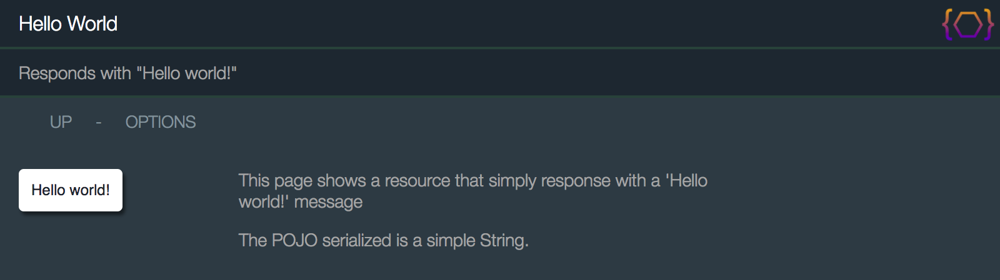
It doesn't much simpler than that.
In this case, we're simply returning a string that will be converted to any of the supported languages (e.g.
JSON, XML, HTML, ...).
However, we could have returned any POJO consisting of beans, maps, collections, etc...
The {@link org.apache.juneau.rest.BasicRestServlet} class that we're using here is a subclass of
{@link org.apache.juneau.rest.RestServlet} that provides default support for a variety of content types.
Implementers can choose to use this class, or create their own subclass of
{@link org.apache.juneau.rest.RestServlet} with their own specialized serializers and parsers.
The class hierarchy for the REST servlet class is shown below:
-
{@link javax.servlet.http.HttpServlet javax.servlet.http.HttpServlet}
-
{@link org.apache.juneau.rest.RestServlet org.apache.juneau.rest.RestServlet}
Contains all the main logic.
- {@link org.apache.juneau.rest.BasicRestServlet org.apache.juneau.rest.BasicRestServlet}
Provides a default set of serializers, parsers, options page, stylesheet, and other common settings.
- {@link org.apache.juneau.rest.BasicRestServletGroup org.apache.juneau.rest.BasicRestServletGroup}
A default implementation for "router" pages.
The servlets with RDF support require Jena on the classpath.
All other serializers and parsers do not have any external library dependencies.
For this reason, we have separate servlets for supporting RDF so that you don't need Jena if you don't need to
support RDF.
Everything is configured through the following classes which you will see a lot:
- {@link org.apache.juneau.rest.RestContext} - Each resource class instance has one copy that holds all of its configuration.
- {@link org.apache.juneau.rest.RestContextBuilder} - Builder for the class above.
REST resources are deployed in one of two ways:
- Deployed in a J2EE container as a servlet.
- Deployed as a child of another REST resource.
When deployed in a J2EE container, you MUST extend from one of the servlet classes.
When deployed as a child of another resource, you MAY extend from one of the servlet classes but it's
not necessary.
The only requirement is that the class be annotated with @RestResource and have one of the following constructors:
public T()
public T(RestContextBuilder)
And even that requirement is relaxed if you implement your own REST resource resolver (described later).
For example:
// Top level resource is deployed like any other servlet and must subclass from RestServlet.
@RestResource(
path="/top",
children={
ChildResource.class // Accessed via URI "/top/child"
}
)
public class TopLevelResource extends BasicRestServlet {...}
// Child resources can inherit from RestServlet but it's not a requirement.
@RestResource(
path="/child"
)
public class ChildResource extends WhateverYouWant {...}
That's all there is to it!
There's no code scanning, module configuration/initialization classes, or anything complex like that.
It's just a servlet.
The {@link org.apache.juneau.rest.RestServlet} class is the entry point for your REST resources.
It extends directly from HttpServlet and is deployed like any other servlet.
When the servlet init() method is called, it triggers the code to find and process the @RestResource
annotations on that class and all child classes.
These get constructed into a {@link org.apache.juneau.rest.RestContext} object that holds all the configuration
information about your resource in a read-only object.
Most developers are not going to be using the RestServlet class itself, and instead will
extend from one of the preconfigured default servlets such as {@link org.apache.juneau.rest.BasicRestServlet}.
The RestServlet class by itself is not configured with any serializers and parsers, and therefore
not very useful on it's own.
However, the class does provide a couple of convenience methods to be aware of:
{@link org.apache.juneau.rest.RestServlet} extends HttpServlet
- {@link org.apache.juneau.rest.RestServlet#init(ServletConfig) init(ServletConfig)} - Can override to provide custom initialization.
- {@link org.apache.juneau.rest.RestServlet#service(HttpServletRequest,HttpServletResponse) service(HttpServletRequest,HttpServletResponse)} - Can override to provide custom request handling.
- {@link org.apache.juneau.rest.RestServlet#destroy() destroy()} - Can override to provide custom cleanup.
- {@link org.apache.juneau.rest.RestServlet#getContext() getContext()} - Returns all aspects of the configuration of your resource pulled from all annotations on the class/parent-classes and methods.
- {@link org.apache.juneau.rest.RestServlet#log(Level,String,Object...) log(Level,String,Object...)} - Convenience logging method.
- {@link org.apache.juneau.rest.RestServlet#log(Level,Throwable,String,Object...) log(Level,Throwable,String,Object...)} - Convenience logging method.
The {@link org.apache.juneau.rest.BasicRestServlet} class is a subclass of {@link org.apache.juneau.rest.RestServlet}
preconfigured with the following:
- A default set of serializers and parsers (pretty much all of them except for the RDF ones).
- Some basic HTML boilerplate for the HTML representation of your POJOs.
- Support for auto-generated Swagger documentation through OPTIONS page requests.
- Configuration of default CSS stylesheets.
- Default contents for HTML views.
The contents of the class is shown below.
You should notice that very little code is being used and everything is configurable through
annotations:
@RestResource(
// Allow OPTIONS requests to be simulated using ?method=OPTIONS query parameter.
allowedMethodParams="OPTIONS",
// HTML-page specific settings.
htmldoc=@HtmlDoc(
// Basic page navigation links.
navlinks={
"up: request:/..",
"options: servlet:/?method=OPTIONS"
}
),
// POJO swaps to apply to all serializers/parsers.
pojoSwaps={
// Use the SwaggerUI swap when rendering Swagger beans.
SwaggerUI.class
},
// Properties to apply to all serializers/parsers and REST-specific API objects.
properties={
// Add descriptions to the following types when not specified:
@Property(name=JSONSCHEMA_addDescriptionsTo, value="bean,collection,array,map,enum"),
// Automatically add examples to the following types:
@Property(name=JSONSCHEMA_addExamplesTo, value="bean,collection,array,map"),
// Don't generate schema information on the Swagger bean itself or HTML beans.
@Property(name=INFOPROVIDER_ignoreTypes, value="Swagger,org.apache.juneau.dto.html5.*")
},
// Shortcut for boolean properties.
flags={
// Use $ref references for bean definitions to reduce duplication in Swagger.
JSONSCHEMA_useBeanDefs
}
)
public abstract class BasicRestServlet extends RestServlet implements BasicRestConfig {
/**
* [OPTIONS /*] - Show resource options.
*
* @param req The HTTP request.
* @return A bean containing the contents for the OPTIONS page.
*/
@RestMethod(name=OPTIONS, path="/*",
summary="Swagger documentation",
description="Swagger documentation for this resource.",
htmldoc=@HtmlDoc(
// Override the nav links for the swagger page.
navlinks={
"back: servlet:/",
"json: servlet:/?method=OPTIONS&Accept=text/json&plainText=true"
},
// Never show aside contents of page inherited from class.
aside="NONE"
)
)
public Swagger getOptions(RestRequest req) {
// Localized Swagger for this resource is available through the RestRequest object.
return req.getSwagger();
}
}
Additional annotations are pulled in from the {@link org.apache.juneau.rest.BasicRestConfig} interface which simply
exists to define a common set of annotations.
Notice that it has no code at all.
@RestResource(
// Default serializers for all Java methods in the class.
serializers={
HtmlDocSerializer.class,
HtmlStrippedDocSerializer.class,
HtmlSchemaDocSerializer.class,
JsonSerializer.class,
JsonSerializer.Simple.class,
JsonSchemaSerializer.class,
XmlDocSerializer.class,
XmlSchemaDocSerializer.class,
UonSerializer.class,
UrlEncodingSerializer.class,
MsgPackSerializer.class,
SoapXmlSerializer.class,
PlainTextSerializer.class
},
// Default parsers for all Java methods in the class.
parsers={
JsonParser.class,
JsonParser.Simple.class,
XmlParser.class,
HtmlParser.class,
UonParser.class,
UrlEncodingParser.class,
MsgPackParser.class,
PlainTextParser.class
},
// Properties to apply to all serializers/parsers and REST-specific API objects.
properties={
// Enable automatic resolution of URI objects to root-relative values.
@Property(name=SERIALIZER_uriResolution, value="ROOT_RELATIVE")
},
// HTML-page specific settings
htmldoc=@HtmlDoc(
// Default page header contents.
header={
"<h1>$R{resourceTitle}</h1>", // Use @RestResource(title)
"<h2>$R{methodSummary,resourceDescription}</h2>", // Use either @RestMethod(summary) or @RestResource(description)
"$C{REST/header}" // Extra header HTML defined in external config file.
},
// Basic page navigation links.
navlinks={
"up: request:/.."
},
// Default stylesheet to use for the page.
// Can be overridden from external config file.
// Default is DevOps look-and-feel (aka Depression look-and-feel).
stylesheet="$C{REST/theme,servlet:/htdocs/themes/devops.css}",
// Default contents to add to the <head> section of the HTML page.
// Use it to add a favicon link to the page.
head={
"<link rel='icon' href='$U{$C{REST/favicon}}'/>"
},
// No default page footer contents.
// Can be overridden from external config file.
footer="$C{REST/footer}",
// By default, table cell contents should not wrap.
nowrap="true"
),
// Optional external configuration file.
config="$S{juneau.configFile}",
// These are static files that are served up by the servlet under the specified sub-paths.
// For example, "/servletPath/htdocs/javadoc.css" resolves to the file "[servlet-package]/htdocs/javadoc.css"
// By default, we define static files through the external configuration file.
staticFiles={"$C{REST/staticFiles}"}
)
public interface BasicRestConfig {}
Your top-level resource will simply extend from this class, as shown in the Hello World example
from a couple sections back.
It's important to notice that the @RestResource annotation is inheritable and overridable from parent
class and interfaces.
They'll all get merged into a single set of annotation values for the resource class.
Not shown but equally important is that all of the annotations shown have programmatic equivalents via the {@link org.apache.juneau.rest.RestContextBuilder} class
which can be manipulated during servlet initialization.
(As a general rule, all annotations throughout Juneau have programmatic equivalents.)
There's a lot going on in this class.
But not to worry, the details will be described later.
Child Resources are REST servlets or objects that are linked to parent resources through the
{@link org.apache.juneau.rest.annotation.RestResource#children() @RestResource.children()} annotation.
/** Parent Resource */
@RestResource(
path="/parent",
children={FooResource.class}
)
public MyResource extends BasicRestServlet {...}
/** Child Resource */
@RestResource(
path="/foo" // Path relative to parent resource.
)
public FooResource {...} // Note that we don't need to extend from RestServlet.
The path of the child resource gets appended to the path of the parent resource.
So in the example above, the child resource is accessed through the URL /parent/foo.
A HUGE advantage of using child resources is that they do not need to be declared in the JEE web.xml
file.
Initialization of and access to the child resources occurs through the parent resource.
Children can be nested arbitrary deep to create complex REST interfaces with a single top-level REST servlet.
See Also:
- {@link org.apache.juneau.rest.RestContext#REST_children}
The {@link org.apache.juneau.rest.BasicRestServletGroup} class provides a default "router" page for
child resources when a parent resource is nothing more than a grouping of child resources.
The RootResources class in the Samples project is an example of a router page:
/**
* Sample REST resource showing how to implement a "router" resource page.
*/
@RestResource(
path="/",
title="Root resources",
description="Example of a router resource page.",
children={
HelloWorldResource.class,
MethodExampleResource.class,
RequestEchoResource.class,
TempDirResource.class,
AddressBookResource.class,
SampleRemoteInterfaceServlet.class,
PhotosResource.class,
AtomFeedResource.class,
JsonSchemaResource.class,
SqlQueryResource.class,
CodeFormatterResource.class,
UrlEncodedFormResource.class,
SourceResource.class,
ConfigResource.class,
LogsResource.class,
DockerRegistryResource.class,
ShutdownResource.class
}
)
public class RootResources extends BasicRestServletGroup {
// NO CODE!!!
}
When you bring up this resource in a browser, you see the following that provides a list
of navigable links to your child resources:
http://localhost:10000
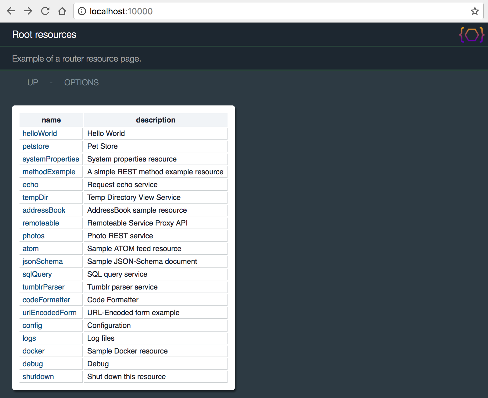
The {@link org.apache.juneau.rest.BasicRestServletGroup} class is nothing more than a subclass of
{@link org.apache.juneau.rest.BasicRestServlet} with a getChildren() method mapped to the servlet
root path.
The method returns a POJO with is just a linked-list of beans with name/description properties.
// The entire contents of the BasicRestServletGroup class.
public class BasicRestServletGroup extends BasicRestServlet {
@RestMethod(name=GET, path="/", description="Child resources")
public ChildResourceDescriptions getChildren(RestRequest req) {
return new ChildResourceDescriptions(this, req);
}
}
By default, you can add the {@link org.apache.juneau.rest.annotation.RestResource @RestResource}
to any class as long as it has one of the following constructors:
public T()
public T(RestContextBuilder)
The latter constructor can be used to get access to the {@link org.apache.juneau.rest.RestContextBuilder} object to make
any configurations to the resource before it's initialized.
Resource object resolution is controlled through the following API:
- {@link org.apache.juneau.rest.RestResourceResolver}
- {@link org.apache.juneau.rest.BasicRestResourceResolver}
This API can be extended to provide your own custom resource resolution.
Later topics discuss how to use this API to instantiate resources using Spring.
See Also:
- {@link org.apache.juneau.rest.RestContext#REST_resourceResolver}
Lifecycle hooks allow you to hook into lifecycle events of the servlet/resource creation and REST calls.
For example, if you want to add an initialization method to your resource:
@RestResource(...)
public class MyResource {
// Our database.
private Map<Integer,Object> myDatabase;
@RestHook(INIT)
public void initMyDatabase(RestContextBuilder builder) throws Exception {
myDatabase = new LinkedHashMap<>();
}
}
Or if you want to intercept REST calls:
@RestResource(...)
public class MyResource {
// Add a request attribute to all incoming requests.
@RestHook(PRE_CALL)
public void onPreCall(RestRequest req) {
req.setAttribute("foo", "bar");
}
}
The hook events can be broken down into two categories:
- Resource lifecycle events:
- {@link org.apache.juneau.rest.annotation.HookEvent#INIT INIT} - Right before initialization.
- {@link org.apache.juneau.rest.annotation.HookEvent#POST_INIT POST_INIT} - Right after initialization.
- {@link org.apache.juneau.rest.annotation.HookEvent#POST_INIT_CHILD_FIRST POST_INIT_CHILD_FIRST} - Right after initialization, but run child methods first.
- {@link org.apache.juneau.rest.annotation.HookEvent#DESTROY DESTROY} - Right before servlet destroy.
- REST call lifecycle events:
- {@link org.apache.juneau.rest.annotation.HookEvent#START_CALL START_CALL} - At the beginning of a REST call.
- {@link org.apache.juneau.rest.annotation.HookEvent#PRE_CALL PRE_CALL} - Right before the @RestMethod method is invoked.
- {@link org.apache.juneau.rest.annotation.HookEvent#POST_CALL POST_CALL} - Right after the @RestMethod method is invoked.
- {@link org.apache.juneau.rest.annotation.HookEvent#END_CALL END_CALL} - At the end of the REST call after the response has been flushed.
See Also:
- {@link org.apache.juneau.rest.annotation.RestHook}
The {@link org.apache.juneau.rest.annotation.RestResource @RestResource} annotation is the primary way of defining
and configuring REST resource classes.
The functionality of the class itself is covered in detail in the topics below.
The {@link org.apache.juneau.rest.annotation.RestResource @RestResource} annotation can also be used on parents and interfaces of resource classes.
When multiple annotations are defined at different levels, the annotation values are combined.
This is a particularly useful feature because it allows you to define your own configured parent
resource classes that can be extended by all your child resources so that they all share common
settings.
| Annotation |
Inheritence Rules |
| {@link org.apache.juneau.rest.annotation.RestResource#guards() guards()} |
Guards on child are combined with those on parent class.
Guards are executed child-to-parent in the order they appear in the annotation.
Guards on methods are executed before those on classes.
|
| {@link org.apache.juneau.rest.annotation.RestResource#converters() converters()} |
Converters on child are combined with those on parent class.
Converters are executed child-to-parent in the order they appear in the annotation.
Converters on methods are executed before those on classes.
|
| {@link org.apache.juneau.rest.annotation.RestResource#beanFilters() beanFilters()} |
Bean filters on child override those on parent class.
{@link org.apache.juneau.rest.Inherit} class can be used to inherit and augment values from parent.
{@link org.apache.juneau.rest.None} class can be used to suppress inheriting from parent.
|
| {@link org.apache.juneau.rest.annotation.RestResource#pojoSwaps() pojoSwaps()} |
POJO swaps on child override those on parent class.
{@link org.apache.juneau.rest.Inherit} class can be used to inherit and augment values from parent.
{@link org.apache.juneau.rest.None} class can be used to suppress inheriting from parent.
|
| {@link org.apache.juneau.rest.annotation.RestResource#properties() properties()} |
Properties on child are combined with those on parent class.
Properties are applied parent-to-child in the order they appear in the annotation.
Properties on methods take precedence over those on classes.
|
| {@link org.apache.juneau.rest.annotation.RestResource#serializers() serializers()} |
Serializers on child override those on parent class.
{@link org.apache.juneau.rest.Inherit} class can be used to inherit and augment values from parent.
{@link org.apache.juneau.rest.None} class can be used to suppress inheriting from parent.
Serializers on methods take precedence over those on classes.
|
| {@link org.apache.juneau.rest.annotation.RestResource#parsers() parsers()} |
Parsers on child override those on parent class.
{@link org.apache.juneau.rest.Inherit} class can be used to inherit and augment values from parent.
{@link org.apache.juneau.rest.None} class can be used to suppress inheriting from parent.
Parsers on methods take precedence over those on classes.
|
| {@link org.apache.juneau.rest.annotation.RestResource#responseHandlers() responseHandlers()} |
Response handlers on child are combined with those on parent class.
|
| {@link org.apache.juneau.rest.annotation.RestResource#encoders() encoders()} |
Encoders on child are combined with those on parent class.
|
| {@link org.apache.juneau.rest.annotation.RestResource#defaultRequestHeaders() defaultRequestHeaders()} |
Headers on child are combined with those on parent class.
Headers are applied parent-to-child in the order they appear in the annotation.
Headers on methods take precedence over those on classes.
|
| {@link org.apache.juneau.rest.annotation.RestResource#defaultResponseHeaders() defaultResponseHeaders()} |
Headers on child are combined with those on parent class.
Headers are applied parent-to-child in the order they appear in the annotation.
|
| {@link org.apache.juneau.rest.annotation.RestResource#children() children()} |
Children on child are combined with those on parent class.
Children are list parent-to-child in the order they appear in the annotation.
|
| {@link org.apache.juneau.rest.annotation.RestResource#path() path()} |
Path is searched for in child-to-parent order.
|
| {@link org.apache.juneau.rest.annotation.RestResource#title() title()} |
Label is searched for in child-to-parent order.
|
| {@link org.apache.juneau.rest.annotation.RestResource#description() description()} |
Description is searched for in child-to-parent order.
|
| {@link org.apache.juneau.rest.annotation.RestResource#config() config()} |
Config file is searched for in child-to-parent order.
|
| {@link org.apache.juneau.rest.annotation.RestResource#staticFiles() staticFiles()} |
Static files on child are combined with those on parent class.
Static files are are executed child-to-parent in the order they appear in the annotation.
|
The {@link org.apache.juneau.rest.RestContext} object is the workhorse class for all of the configuration
of a single REST resource class.
It's by-far the most important class in the REST API.
Every class annotated with @RestResource ends up with an instance of this object.
The object itself is read-only and unchangeable.
It is populated through the following:
- {@link org.apache.juneau.rest.annotation.RestResource} - Settings copied from the annotation during servlet initialization.
- {@link org.apache.juneau.rest.RestContextBuilder} - Builder used during servlet initialization.
The annotation should be self-explanatory at this point.
The builder allows you to perform all of the same configuration as the annotation programmatically.
The {@link org.apache.juneau.rest.RestContextBuilder} class extends {@link org.apache.juneau.BeanContextBuilder}
allowing you to programmatically set any properties defined on that builder class.
It also implements {@link javax.servlet.ServletConfig}
To access this object, simply pass it in as a constructor argument or in an INIT hook:
// Option #1 - Pass in through constructor.
public MyResource(RestContextBuilder builder) {
builder
.pojoSwaps(CalendarSwap.RFC2822DTZ.class)
.set(PARSER_debug, true);
}
// Option #2 - Use an INIT hook.
@RestHook(INIT)
public void init(RestContextBuilder builder) throws Exception {
builder
.pojoSwaps(CalendarSwap.RFC2822DTZ.class)
.set(PARSER_debug, true);
}
Warning: The builder class is huge.
Through it, you can configure bean/serializer/parser settings, define config files, children,
resource finders, info providers, etc...
REST Java methods are identified on REST servlets using the
{@link org.apache.juneau.rest.annotation.RestMethod @RestMethod} annotation.
The annotation allows the framework to identify the available REST methods through reflection.
@RestMethod(name=GET, path="/")
public String sayHello() {
return "Hello world!";
}
When the name and/or path values are not specified, their values are inferred
from the Java method name.
The HTTP method can be inferred from the Java method by starting the method name with any of the following:
get
put
post
delete
options
head
trace
patch
If path is not defined, it's inferred from the Java method name (minus the prefix above).
// Method="GET", path="/foo"
@RestMethod
public String getFoo() {...}
// Method="DELETE", path="/foo"
@RestMethod
public String deleteFoo() {...}
// Method="GET", path="/foo"
// "GET" is default
@RestMethod
public String foo() {...}
// Method="GET", path="/"
@RestMethod(path="/")
public String foo() {...}
// Method="GET", path="/"
@RestMethod
public String get() {...}
// Method="POST", path="/"
@RestMethod
public String post() {...}
If name and path are both specified, the Java method name can be anything.
Java methods can contain any of the following parameters in any order:
-
Parameters based on class types:
- Request/response objects:
- {@link org.apache.juneau.rest.RestRequest} - The request object.
- {@link javax.servlet.http.HttpServletRequest} - The superclass of
RestRequest.
- {@link org.apache.juneau.rest.RestResponse} - The response object.
- {@link javax.servlet.http.HttpServletResponse} - The superclass of
RestResponse.
- Parsed request header values:
- {@link org.apache.juneau.http.Accept}
- {@link org.apache.juneau.http.AcceptCharset}
- {@link org.apache.juneau.http.AcceptEncoding}
- {@link org.apache.juneau.http.AcceptLanguage}
- {@link org.apache.juneau.http.Authorization}
- {@link org.apache.juneau.http.CacheControl}
- {@link org.apache.juneau.http.Connection}
- {@link org.apache.juneau.http.ContentLength}
- {@link org.apache.juneau.http.ContentType}
- {@link org.apache.juneau.http.Date}
- {@link org.apache.juneau.http.Expect}
- {@link org.apache.juneau.http.From}
- {@link org.apache.juneau.http.Host}
- {@link org.apache.juneau.http.IfMatch}
- {@link org.apache.juneau.http.IfModifiedSince}
- {@link org.apache.juneau.http.IfNoneMatch}
- {@link org.apache.juneau.http.IfRange}
- {@link org.apache.juneau.http.IfUnmodifiedSince}
- {@link org.apache.juneau.http.MaxForwards}
- {@link org.apache.juneau.http.Pragma}
- {@link org.apache.juneau.http.ProxyAuthorization}
- {@link org.apache.juneau.http.Range}
- {@link org.apache.juneau.http.Referer}
- {@link org.apache.juneau.http.TE}
- {@link org.apache.juneau.http.UserAgent}
- {@link org.apache.juneau.http.Upgrade}
- {@link org.apache.juneau.http.Via}
- {@link org.apache.juneau.http.Warning}
- {@link java.util.TimeZone}
- Direct streams on request/response:
- {@link java.io.InputStream}
- {@link javax.servlet.ServletInputStream}
- {@link java.io.Reader}
- {@link java.io.OutputStream}
- {@link javax.servlet.ServletOutputStream}
- {@link java.io.Writer}
- Localization:
- {@link java.util.ResourceBundle} - Client-localized resource bundle.
- {@link org.apache.juneau.utils.MessageBundle} - A resource bundle with additional features.
- {@link java.util.Locale} - Client locale.
- Request APIs:
- {@link org.apache.juneau.rest.RequestHeaders} - API for accessing request headers.
- {@link org.apache.juneau.rest.RequestQuery} - API for accessing request query parameters.
- {@link org.apache.juneau.rest.RequestFormData} - API for accessing request form data.
- {@link org.apache.juneau.rest.RequestPath} - API for accessing path variables.
- {@link org.apache.juneau.rest.RequestBody} - API for accessing request body.
- Other:
- {@link org.apache.juneau.http.HttpMethod} - The method name matched (when using
@RestMethod(name="*"))
- {@link org.apache.juneau.rest.RestLogger} - Logger with additional features.
- {@link org.apache.juneau.rest.RestContext} - The resource read-only context.
- {@link org.apache.juneau.parser.Parser} - The parser matching the request content type.
- {@link org.apache.juneau.parser.ReaderParser} - The reader parser matching the request content type.
- {@link org.apache.juneau.parser.InputStreamParser} - The input stream parser matching the request content type.
- {@link org.apache.juneau.dto.swagger.Swagger} - The auto-generated Swagger doc.
- {@link org.apache.juneau.config.Config} - The external config for the resource.
- {@link org.apache.juneau.rest.RequestProperties} - API for modifying request-time configuration properties.
- Annotated parameters:
- {@link org.apache.juneau.http.annotation.Path} - Variables in matched URL path patterns.
- {@link org.apache.juneau.http.annotation.FormData} - Multipart form post parameter values.
- {@link org.apache.juneau.http.annotation.HasFormData} - Denotes whether the form data parameter exists.
- {@link org.apache.juneau.http.annotation.Query} - Query parameters. Using this prevents the HTTP body from being processed as a URL-Encoded form post.
- {@link org.apache.juneau.http.annotation.HasQuery} - Denotes whether the query parameter exists.
- {@link org.apache.juneau.http.annotation.Header} - A header value.
- {@link org.apache.juneau.http.annotation.Body} - The HTTP content parsed as a POJO.
- {@link org.apache.juneau.rest.annotation.Method} - The HTTP method name.
- {@link org.apache.juneau.http.annotation.Request} - HTTP request parts available through a proxy bean interface.
- {@link org.apache.juneau.http.annotation.Response} - HTTP response parts available through a POJO.
- {@link org.apache.juneau.http.annotation.ResponseHeader} - HTTP response header.
- {@link org.apache.juneau.http.annotation.ResponseStatus} - HTTP response status code.
@RestMethod(name=GET, path="/example1/{a1}/{a2}/{a3}/*")
public String doGetExample1(
RestRequest req,
RestResponse res,
@Method String method,
@Path("a1") String a1,
@Path("a2") int a2,
@Path("a3") UUID a3,
@Query("p1") int p1,
@Query("p2") String p2,
@Query("p3") UUID p3,
@HasQuery("p3") boolean hasP3,
@Path("/*") String remainder,
@Header("Accept-Language") String lang,
@Header("Accept") String accept,
@Header("DNT") int doNotTrack,
RequestProperties properties,
ResourceBundle nls
) {
// Do something with all of those
}
Notes:
- All annotations have programmatic equivalents on the {@link org.apache.juneau.rest.RestRequest} class.
See Also:
- {@link org.apache.juneau.rest.RestContext#REST_paramResolvers} - For configuring custom parameter types.
The {@link org.apache.juneau.rest.RestRequest} object is an extension of the HttpServletRequest class
with various built-in convenience methods for use in building REST interfaces.
It can be accessed by passing it as a parameter on your REST Java method:
@RestMethod(...)
public Object myMethod(RestRequest req) {...}
There are many useful methods on this object, but the main ones are shown below:
{@link org.apache.juneau.rest.RestRequest} extends HttpServletRequest
- {@link org.apache.juneau.rest.RestRequest#getHeaders() getHeaders()} - HTTP request headers.
- {@link org.apache.juneau.rest.RestRequest#getQuery() getQuery()} - Query parameters.
- {@link org.apache.juneau.rest.RestRequest#getFormData() getFormData()} - Form-data parameters.
- {@link org.apache.juneau.rest.RestRequest#getBody() getBody()} - HTTP request body.
- {@link org.apache.juneau.rest.RestRequest#getPathMatch() getPathMatch()} - Path match variables.
- {@link org.apache.juneau.rest.RestRequest#getLogger() getLogger()} - Logging.
- {@link org.apache.juneau.rest.RestRequest#getInfoProvider() getInfoProvider()} - Swagger documentation provider.
- {@link org.apache.juneau.rest.RestRequest#getSwagger() getSwagger()} - Generated Swagger information.
- {@link org.apache.juneau.rest.RestRequest#getConfig() getConfig()} - External configuration API.
- {@link org.apache.juneau.rest.RestRequest#getVarResolverSession() getVarResolverSession()} - String variable resolver.
- {@link org.apache.juneau.rest.RestRequest#getMessageBundle() getMessageBundle()} - Localized messages.
- {@link org.apache.juneau.rest.RestRequest#getProperties() getProperties()} - Configuration properties.
- {@link org.apache.juneau.rest.RestRequest#getClasspathReaderResource(String,boolean,MediaType) getClasspathReaderResource(String,boolean,MediaType)} - Various methods for retrieving static files from classpath.
The {@link org.apache.juneau.rest.RestResponse} object is an extension of the HttpServletResponse class
with various built-in convenience methods for use in building REST interfaces.
It can be accessed by passing it as a parameter on your REST Java method:
@RestMethod(...)
public Object myMethod(RestResponse req) {...}
Some important methods on this class are:
{@link org.apache.juneau.rest.RestResponse} extends HttpServletResponse
- {@link org.apache.juneau.rest.RestResponse#setOutput(Object) setOutput(Object)} - Set response output programmatically.
- {@link org.apache.juneau.rest.RestResponse#getHtmlDocBuilder() getHtmlDocBuilder()} - Set HTTP page contents programmatically.
- {@link org.apache.juneau.rest.RestResponse#getDirectWriter(String) getDirectWriter(String)} - Direct access to underlying response writer.
The {@link org.apache.juneau.rest.RequestBody} object is the API for accessing the body of an HTTP request.
It can be accessed by passing it as a parameter on your REST Java method:
@RestMethod(...)
public Object myMethod(RequestBody body) {...}
@RestMethod(...)
public void doPost(RequestBody body) {
// Convert body to a linked list of Person objects.
List<Person> l = body.asType(LinkedList.class, Person.class);
...
}
Some important methods on this class are:
- {@link org.apache.juneau.rest.RequestBody}
- {@link org.apache.juneau.rest.RequestBody#getReader() getReader()} - Get body as a Reader.
- {@link org.apache.juneau.rest.RequestBody#getInputStream() getInputStream()} - Get body as an InputStream.
- {@link org.apache.juneau.rest.RequestBody#asType(Class) asType(Class)} - Get body converted to a POJO.
- {@link org.apache.juneau.rest.RequestBody#asType(Type,Type...) asType(Type,Type...)} - Get body converted to a map or collection of POJOs.
- {@link org.apache.juneau.rest.RequestBody#asString() asString()} - Get body as a simple string.
- {@link org.apache.juneau.rest.RequestBody#asHex() asHex()} - Get body as a hex-encoded string.
- {@link org.apache.juneau.rest.RequestBody#asSpacedHex() asSpacedHex()} - Get body as spaced-hex-encoded string.
See Also:
- {@link org.apache.juneau.http.annotation.Body}
The {@link org.apache.juneau.rest.RequestHeaders} object is the API for accessing the headers of an HTTP request.
It can be accessed by passing it as a parameter on your REST Java method:
@RestMethod(...)
public Object myMethod(RequestHeaders headers) {...}
@RestMethod(...)
public Object myMethod(RequestHeaders headers) {
// Add a default value.
headers.addDefault("ETag", DEFAULT_UUID);
// Get a header value as a POJO.
UUID etag = headers.get("ETag", UUID.class);
// Get a standard header.
CacheControl = headers.getCacheControl();
}
Some important methods on this class are:
{@link org.apache.juneau.rest.RequestHeaders} extends TreeMap<String,String[]>
- {@link org.apache.juneau.rest.RequestHeaders#get(String,Class) get(String,Class)} - Get header value converted to a POJO.
- {@link org.apache.juneau.rest.RequestHeaders#get(String,Type,Type...) get(String,Type,Type)} - Get header value converted to a map or collection of POJOs.
- {@link org.apache.juneau.rest.RequestHeaders#getString(String,String) getString(String,String)} - Get header value as a simple string.
- {@link org.apache.juneau.rest.RequestHeaders#getInt(String,int) getInt(String,int)} - Get header value as an integer.
- {@link org.apache.juneau.rest.RequestHeaders#getBoolean(String,boolean) getBoolean(String,boolean)} - Get header value as a boolean.
- {@link org.apache.juneau.rest.RequestHeaders#addDefault(String,Object) addDefault(String,Object)} - Programmatically set a default value for a header.
See Also:
- {@link org.apache.juneau.http.annotation.Header}
The {@link org.apache.juneau.rest.RequestQuery} object is the API for accessing the GET query parameters of an HTTP request.
It can be accessed by passing it as a parameter on your REST Java method:
@RestMethod(...)
public Object myMethod(RequestQuery query) {...}
@RestMethod(...)
public Object myMethod(RequestQuery query) {
// Get query parameters converted to various types.
int p1 = query.get("p1", 0, int.class);
String p2 = query.get("p2", String.class);
UUID p3 = query.get("p3", UUID.class);
}
An important distinction between the behavior of this object and HttpServletRequest.getParameter(String) is
that the former will NOT load the body of the request on FORM POSTS and will only look at parameters
found in the query string.
This can be useful in cases where you're mixing GET parameters and FORM POSTS and you don't want to
inadvertently read the body of the request to get a query parameter.
Some important methods on this class are:
{@link org.apache.juneau.rest.RequestQuery} extends LinkedHashMap<String,String[]>
- {@link org.apache.juneau.rest.RequestQuery#get(String,Class) get(String,Class)} - Get query parameter value converted to a POJO.
- {@link org.apache.juneau.rest.RequestQuery#get(String,Type,Type...) get(String,Type,Type)} - Get query parameter value converted to a map or collection of POJOs.
- {@link org.apache.juneau.rest.RequestQuery#getString(String,String) getString(String,String)} - Get query parameter value as a simple string.
- {@link org.apache.juneau.rest.RequestQuery#getInt(String,int) getInt(String,int)} - Get query parameter value as an integer.
- {@link org.apache.juneau.rest.RequestQuery#getBoolean(String,boolean) getBoolean(String,boolean)} - Get query parameter value as a boolean.
- {@link org.apache.juneau.rest.RequestQuery#addDefault(String,Object) addDefault(String,Object)} - Programmatically set a default value for a query parameter.
- {@link org.apache.juneau.rest.RequestQuery#getSearchArgs() getSearchArgs()} - Returns query parameter search arguments.
See Also:
- {@link org.apache.juneau.http.annotation.Query}
- {@link org.apache.juneau.http.annotation.HasQuery}
The {@link org.apache.juneau.rest.RequestFormData} object is the API for accessing the HTTP request body as form data.
It can be accessed by passing it as a parameter on your REST Java method:
@RestMethod(...)
public Object myMethod(RequestFormData query) {...}
@RestMethod(...)
public Object myMethod(RequestFormData formData) {
// Get query parameters converted to various types.
int p1 = formData.get("p1", 0, int.class);
String p2 = formData.get("p2", String.class);
UUID p3 = formData.get("p3", UUID.class);
}
Note that this object does NOT take GET parameters into account and only returns values found in the body of the request.
Some important methods on this class are:
{@link org.apache.juneau.rest.RequestFormData} extends LinkedHashMap<String,String[]>
- {@link org.apache.juneau.rest.RequestFormData#get(String,Class) get(String,Class)} - Get form-data parameter values converted to a POJO.
- {@link org.apache.juneau.rest.RequestFormData#get(String,Type,Type...) get(String,Type,Type)} - Get form-data parameter value converted to a map or collection of POJOs.
- {@link org.apache.juneau.rest.RequestFormData#getString(String,String) getString(String,String)} - Get form-data parameter value as a simple string.
- {@link org.apache.juneau.rest.RequestFormData#getInt(String,int) getInt(String,int)} - Get form-data parameter value as an integer.
- {@link org.apache.juneau.rest.RequestFormData#getBoolean(String,boolean) getBoolean(String,boolean)} - Get form-data parameter value as a boolean.
- {@link org.apache.juneau.rest.RequestFormData#addDefault(String,Object) addDefault(String,Object)} - Programmatically set a default value for a form-data parameter.
See Also:
- {@link org.apache.juneau.http.annotation.FormData}
- {@link org.apache.juneau.http.annotation.HasFormData}
The {@link org.apache.juneau.rest.annotation.RestMethod#path() @RestMethod.path()} annotation allows
you to define URL path patterns to match against.
These patterns can contain variables of the form "{xxx}" that can be passed in directly to the
Java methods as extra parameters.
In the following example, 3 separate GET request handlers are defined with different path patterns.
Note how the variables are passed in as additional arguments on the method, and how those arguments are
automatically converted to the specified class type...
// Default method
@RestMethod(name=GET, path="/*")
public void doGetDefault() {
...
}
// Method with path pattern
@RestMethod(name=GET, path="/xxx")
public void doGetNoArgs(...) {
...
}
// Method with path pattern with arguments
@RestMethod(name=GET, path="/xxx/{foo}/{bar}/{baz}/{bing}")
public void doGetWithArgs(@Path("foo") String foo, @Path("bar") int bar, @Path("baz") MyEnum baz, @Path("bing") UUID bing) {
...
}
By default, path patterns are matched using a best-match heuristic.
When overlaps occur, URLs are matched from most-specific to most-general order:
// Try first
@RestMethod(name=GET, path="/foo/bar")
public void method1() {
...
}
// Try second
@RestMethod(name=GET, path="/foo/{bar}")
public void method2(...) {
...
}
// Try third
@RestMethod(name=GET, path="/foo/*")
public void method3(...) {
...
}
// Try last
@RestMethod(name=GET, path="/*")
public void method4(...) {
...
}
The match heuristic behavior can be overridden by the
{@link org.apache.juneau.rest.annotation.RestMethod#priority() @RestMethod.priority()} annotation
property.
However, in practice this is almost never needed.
Paths that end with "/*" will do a prefix match on the incoming URL.
Any remainder after the match can be accessed through
{@link org.apache.juneau.rest.RequestPath#getRemainder()} or parameters with the
@Path("/*") annotation.
On the other hand, paths that don't end with "/*" (e.g. "/" or "/foo") will
require an exact URL match, and if any remainder exists, a 404 (not found) error will be thrown.
The following example shows the distinction.
@RestMethod(name=GET, path="/*")
public void doGet(@Path("/*") String remainder) {
// URL path pattern can have remainder accessible through req.getRemainder().
}
@RestMethod(name=PUT, path="/")
public void doPut() {
// URL path pattern must match exactly and will cause a 404 error if a remainder exists.
}
Annotations are provided for easy access to URL parameters with automatic conversion to any {@doc PojoCategories parsable} type.
For example, the following example can process the URL "/urlWithParams?foo=foo&bar=[1,2,3]&baz=067e6162-3b6f-4ae2-a171-2470b63dff00"...
// Example GET request with access to query parameters
@RestMethod(name=GET, path="/urlWithParams")
public String doGetWithParams(@Query("foo") String foo, @Query("bar") int bar, @Query("baz") UUID baz) throws Exception {
return "GET /urlWithParams?foo="+foo+"&bar="+bar+"&baz="+baz;
}
See Also:
- {@link org.apache.juneau.rest.RestContext#REST_path}
- {@link org.apache.juneau.http.annotation.Path}
- {@link org.apache.juneau.rest.RequestPath}
The {@link org.apache.juneau.rest.RequestPath} object is the API for accessing the matched variables
and remainder on the URL path.
@RestMethod(...)
public Object myMethod(RequestPathMatch path) {...}
@RestMethod(..., path="/{foo}/{bar}/{baz}/*")
public void doGet(RequestPathMatch path) {
// Example URL: /123/qux/true/quux
int foo = pm.getInt("foo"); // =123
String bar = pm.getString("bar"); // =qux
boolean baz = pm.getBoolean("baz"); // =true
String remainder = pm.getRemainder(); // =quux
}
Some important methods on this class are:
{@link org.apache.juneau.rest.RequestPath} extends TreeMap<String,String>
- {@link org.apache.juneau.rest.RequestPath#get(String,Class) get(String,Class)} - Get path match variable converted to a POJO.
- {@link org.apache.juneau.rest.RequestPath#get(String,Type,Type...) get(String,Type,Type)} - Get path match variable converted to a map or collection of POJOs.
- {@link org.apache.juneau.rest.RequestPath#getString(String) getString(String)} - Get patch match variable as a simple string.
- {@link org.apache.juneau.rest.RequestPath#getInt(String) getInt(String)} - Get path match variable as an integer.
- {@link org.apache.juneau.rest.RequestPath#getBoolean(String) getBoolean(String)} - Get path match variable as a boolean.
- {@link org.apache.juneau.rest.RequestPath#getRemainder() getRemainder()} - Get the path match remainder.
See Also:
- {@link org.apache.juneau.http.annotation.Path}
The return type can be any serializable POJO as defined in {@doc PojoCategories}.
It can also be void if the method is not sending any output (e.g. a request redirect) or is
setting the output using the {@link org.apache.juneau.rest.RestResponse#setOutput(Object)} method.
@RestMethod(name=GET)
public String doGet() {
return "Hello World!";
}
Out-of-the-box, besides POJOs, the following return types are handled as special cases:
- {@link java.io.InputStream}
The contents are simply piped to the output stream returned by
{@link org.apache.juneau.rest.RestResponse#getNegotiatedOutputStream()}.
Note that you should call {@link org.apache.juneau.rest.RestResponse#setContentType(String)} to set
the Content-Type header if you use this object type.
- {@link java.io.Reader}
The contents are simply piped to the output stream returned by
{@link org.apache.juneau.rest.RestResponse#getNegotiatedWriter()}.
Note that you should call {@link org.apache.juneau.rest.RestResponse#setContentType(String)} to set
the Content-Type header if you use this object type.
- {@link org.apache.juneau.Streamable}
Interface that identifies that an object can be serialized directly to an output stream.
- {@link org.apache.juneau.Writable}
Interface that identifies that an object can be serialized directly to a writer.
- {@link org.apache.juneau.utils.ZipFileList}
Special interface for sending zip files as responses.
This is controlled through the following extensible API:
- {@link org.apache.juneau.rest.ResponseHandler}
- {@link org.apache.juneau.rest.reshandlers.DefaultHandler}
- {@link org.apache.juneau.rest.reshandlers.InputStreamHandler}
- {@link org.apache.juneau.rest.reshandlers.ReaderHandler}
REST Java methods can generate output in any of the following ways:
-
By returning a serializable POJO, or any of the following:
{@link java.io.Reader}, {@link java.io.InputStream}, {@link org.apache.juneau.Streamable},
{@link org.apache.juneau.Writable}
-
By calling {@link org.apache.juneau.rest.RestResponse#setOutput(Object)} with any of the types above.
-
By accessing the {@link java.io.Writer} directly by calling
{@link org.apache.juneau.rest.RestResponse#getNegotiatedWriter()} and writing the output yourself.
// Equivalent method 1
@RestMethod(name=GET, path="/example1/{personId}")
public Person doGet1(@Path("personId") UUID personId) {
Person p = getPersonById(personId);
return p;
}
// Equivalent method 2
@RestMethod(name=GET, path="/example2/{personId}")
public void doGet2(RestResponse res, @Path("personId") UUID personId) {
Person p = getPersonById(personId);
res.setOutput(p);
}
// (Sorta) Equivalent method 3
// (Ignores any converters or method-level properties)
@RestMethod(name=GET, path="/example3/{personId}")
public void doGet3(RestRequest req, RestResponse res, @Path("personId") UUID personId) {
Person p = getPersonById(personId);
String accept = req.getHeader("Accept", "text/json");
WriterSerializer s = res.getSerializerGroup().getWriterSerializer(accept);
res.setContentType(s.getResponseContentType());
s.serialize(p, res.getNegotiatedWriter());
}
See Also:
- {@link org.apache.juneau.rest.RestContext#REST_responseHandlers} - For configuring custom response handlers.
The {@link org.apache.juneau.rest.helper.ReaderResource} class is a convenience object for defining thread-safe
reusable character-based responses.
In essence, it's a container for character data with optional response headers and support for
resolving SVL variables.
- {@link org.apache.juneau.rest.helper.ReaderResourceBuilder}
- {@link org.apache.juneau.rest.helper.ReaderResourceBuilder#contents(Object...) contents(Object...)}
- {@link org.apache.juneau.rest.helper.ReaderResourceBuilder#header(String,Object) header(String,Object)}
- {@link org.apache.juneau.rest.helper.ReaderResourceBuilder#mediaType(MediaType) mediaType(MediaType)}
- {@link org.apache.juneau.rest.helper.ReaderResourceBuilder#varResolver(VarResolverSession) varResolver(VarResolverSession)}
The class is annotated with {@link org.apache.juneau.http.annotation.Response @Response}
which allows it to be returned as responses by REST methods.
@RestMethod
public Object sayHello(RestRequest req) {
// Return a reader resource loaded from a file with support for request-time SVL variables.
return ReaderResource.create()
.contents(new File("helloWorld.txt"))
.varResolver(req.getVarResolver())
.header("Cache-Control", "no-cache")
.mediaType(TEXT_PLAIN)
.build();
}
The {@link org.apache.juneau.rest.helper.StreamResource} class is the binary equivalent to the {@link org.apache.juneau.rest.helper.ReaderResource} object.
In essence, it's a container for binary data with optional response headers.
- {@link org.apache.juneau.rest.helper.StreamResourceBuilder}
- {@link org.apache.juneau.rest.helper.StreamResourceBuilder#contents(Object...) contents(Object...)}
- {@link org.apache.juneau.rest.helper.StreamResourceBuilder#header(String,Object) header(String,Object)}
- {@link org.apache.juneau.rest.helper.StreamResourceBuilder#mediaType(MediaType) mediaType(MediaType)}
The class is annotated with {@link org.apache.juneau.http.annotation.Response @Response}
which allows it to be returned as responses by REST methods.
@RestMethod(...)
public Object showPicture(RestRequest req) {
// Return a stream resource loaded from a file.
return StreamResource.create()
.contents(new File("mypicture.png"))
.header("Cache-Control", "no-cache")
.mediaType(IMAGE_PNG)
.build();
}
{@link org.apache.juneau.rest.RestMatcher RestMatchers} are used to allow multiple Java methods to be
tied to the same HTTP method and path, but differentiated by some request attribute such as a specific
header value.
// GET method that gets invoked for administrators
@RestMethod(name=GET, path="/*", matchers=IsAdminMatcher.class)
public Object doGetForAdmin() {
...
}
// GET method that gets invoked for everyone else
@RestMethod(name=GET, path="/*")
public Object doGetForEveryoneElse() {
...
}
The interface for matchers is simple:
public class IsAdminMatcher extends RestMatcher {
@Override /* RestMatcher */
public boolean matches(RestRequest req) {
return req.isUserInRole("ADMINS_GROUP");
}
}
Notes:
-
If no methods are found with a matching matcher, a 412 Precondition Failed status is returned.
-
If multiple matchers are specified on the same method, ONLY ONE matcher needs to match for the
method to be invoked.
-
Note that you CANNOT define identical paths on different methods UNLESS you use matchers.
That includes paths that are only different in variable names (e.g. "/foo/{bar}" and
"/foo/{baz}").
If you try to do so, a ServletException will be thrown on startup.
-
Methods with matchers take precedence over methods without.
Otherwise, methods are attempted in the order they appear in the class.
See Also:
- {@link org.apache.juneau.rest.annotation.RestMethod#matchers}
- {@link org.apache.juneau.rest.matchers.MultipartFormDataMatcher}
- {@link org.apache.juneau.rest.matchers.UrlEncodedFormMatcher}
Predefined response beans are provided for all standard HTTP responses.
These can be used as-is or extended to provide customized HTTP responses.
@RestMethod(name="POST", path="/pets")
public Ok addPet(@Body Pet pet) {
addPet(Pet);
// Predefined "200 OK" response bean.
return new Ok(); // Could also use Ok.OK instance
}
@RestMethod(name="POST", path="/pets")
public SeeOther addPet(@Body Pet pet) {
addPet(Pet);
// Predefined "302 See Other" response bean with redirect to /pets.
return new SeeOther("servlet:/pets");
}
- {@link org.apache.juneau.rest.response}
- {@link org.apache.juneau.rest.response.Accepted}
- {@link org.apache.juneau.rest.response.AlreadyReported}
- {@link org.apache.juneau.rest.response.Continue}
- {@link org.apache.juneau.rest.response.Created}
- {@link org.apache.juneau.rest.response.EarlyHints}
- {@link org.apache.juneau.rest.response.Found}
- {@link org.apache.juneau.rest.response.IMUsed}
- {@link org.apache.juneau.rest.response.MovedPermanently}
- {@link org.apache.juneau.rest.response.MultipleChoices}
- {@link org.apache.juneau.rest.response.MultiStatus}
- {@link org.apache.juneau.rest.response.NoContent}
- {@link org.apache.juneau.rest.response.NonAuthoritiveInformation}
- {@link org.apache.juneau.rest.response.NotModified}
- {@link org.apache.juneau.rest.response.Ok}
- {@link org.apache.juneau.rest.response.PartialContent}
- {@link org.apache.juneau.rest.response.PermanentRedirect}
- {@link org.apache.juneau.rest.response.Processing}
- {@link org.apache.juneau.rest.response.ResetContent}
- {@link org.apache.juneau.rest.response.SeeOther}
- {@link org.apache.juneau.rest.response.SwitchingProtocols}
- {@link org.apache.juneau.rest.response.TemporaryRedirect}
- {@link org.apache.juneau.rest.response.UseProxy}
These predefined response beans are an example of {@link org.apache.juneau.http.annotation.Response @Response}-annotated
objects that are describe in detail later.
Without going into details, this is how the {@link org.apache.juneau.rest.response.SeeOther} is defined:
@Response(
code=303 // Set automatically on response,
description="See Other" // Used in generated Swagger
)
public class SeeOther {
private final String message;
private final URI location;
// Constructors omitted.
// Used to populate Location response header.
@ResponseHeader(name="Location")
public URI getLocation() {
return location;
}
// Used during serialization.
@ResponseBody
public String toString() {
return message;
}
}
The {@link org.apache.juneau.rest.helper.SeeOtherRoot} class shows how these predefined beans can be extended.
@Response(
description="Redirect to servlet root" // Override description in generated Swagger.
)
public class SeeOtherServletRoot extends SeeOther {
public SeeOtherServletRoot() {
super(URI.create("servlet:/"));
}
}
Note that the runtime behavior of the following code is identical to the example above.
However, the important distinction is that in the previous example, the 302 response would show in
the generated Swagger (since we can see the response through reflection), whereas it will NOT show up
in the following example (since all we see is an Object response).
@RestMethod(name="POST", path="/pets")
public Object addPet(@Body Pet pet) {
addPet(Pet);
// Note the Object return type.
return new SeeOther("servlet:/pets");
}
Exceptions are defined for all standardized HTTP responses.
These can be used to trigger HTTP errors simply by throwing an exception.
These are identical in behavior to the Predefined Responses in the previous section, except these are meant
to be thrown instead of returned.
@RestMethod(name="GET", path="/user/login")
public Ok login(
@FormData("username") String username,
@FormData("password") String password,
) throws Unauthorized
{
if (! isOK(username, password))
throw new Unauthorized("You're not welcome!");
return Ok.OK;
}
- {@link org.apache.juneau.rest.exception}
- {@link org.apache.juneau.rest.exception.BadRequest}
- {@link org.apache.juneau.rest.exception.Conflict}
- {@link org.apache.juneau.rest.exception.ExpectationFailed}
- {@link org.apache.juneau.rest.exception.FailedDependency}
- {@link org.apache.juneau.rest.exception.Forbidden}
- {@link org.apache.juneau.rest.exception.Gone}
- {@link org.apache.juneau.rest.exception.HttpVersionNotSupported}
- {@link org.apache.juneau.rest.exception.InsufficientStorage}
- {@link org.apache.juneau.rest.exception.InternalServerError}
- {@link org.apache.juneau.rest.exception.LengthRequired}
- {@link org.apache.juneau.rest.exception.Locked}
- {@link org.apache.juneau.rest.exception.LoopDetected}
- {@link org.apache.juneau.rest.exception.MethodNotAllowed}
- {@link org.apache.juneau.rest.exception.MisdirectedRequest}
- {@link org.apache.juneau.rest.exception.NetworkAuthenticationRequired}
- {@link org.apache.juneau.rest.exception.NotAcceptable}
- {@link org.apache.juneau.rest.exception.NotExtended}
- {@link org.apache.juneau.rest.exception.NotFound}
- {@link org.apache.juneau.rest.exception.NotImplemented}
- {@link org.apache.juneau.rest.exception.PayloadTooLarge}
- {@link org.apache.juneau.rest.exception.PreconditionFailed}
- {@link org.apache.juneau.rest.exception.PreconditionRequired}
- {@link org.apache.juneau.rest.exception.RangeNotSatisfiable}
- {@link org.apache.juneau.rest.exception.RequestHeaderFieldsTooLarge}
- {@link org.apache.juneau.rest.exception.ServiceUnavailable}
- {@link org.apache.juneau.rest.exception.TooManyRequests}
- {@link org.apache.juneau.rest.exception.Unauthorized}
- {@link org.apache.juneau.rest.exception.UnavailableForLegalReasons}
- {@link org.apache.juneau.rest.exception.UnprocessableEntity}
- {@link org.apache.juneau.rest.exception.UnsupportedMediaType}
- {@link org.apache.juneau.rest.exception.UpgradeRequired}
- {@link org.apache.juneau.rest.exception.UriTooLong}
- {@link org.apache.juneau.rest.exception.VariantAlsoNegotiates}
These exception extend from {@link java.lang.RuntimeException}, so they can optionally be specified in the thrown
declaration of the method.
The important distinction is that when part of the thrown declaration, they show up in the generated Swagger
documentation, whereas they don't if not. This behavior can be used to define what error conditions show in your Swagger doc.
The {@link org.apache.juneau.rest.helper} package contains several predefined beans to help when constructing
REST interfaces.
- {@link org.apache.juneau.rest.helper}
- {@link org.apache.juneau.rest.helper.BeanDescription}
- {@link org.apache.juneau.rest.helper.ChildResourceDescriptions}
- {@link org.apache.juneau.rest.helper.ReaderResource}
- {@link org.apache.juneau.rest.helper.ReaderResourceBuilder}
- {@link org.apache.juneau.rest.helper.ResourceDescription}
- {@link org.apache.juneau.rest.helper.ResourceDescriptions}
- {@link org.apache.juneau.rest.helper.SeeOtherRoot}
- {@link org.apache.juneau.rest.helper.StreamResource}
- {@link org.apache.juneau.rest.helper.StreamResourceBuilder}
ResourceDescription, ResourceDescrptions
The {@link org.apache.juneau.rest.helper.ResourceDescription} class is a bean with name/description
properties for labeling and linking to child resources.
The following examples is pulled from the REST examples:
@Resource
public class PredefinedLabelsResource {
@RestMethod(name=GET, path="/")
public ResourceDescription[] getChildMethods() {
return new ResourceDescription[] {
new ResourceDescription("beanDescription", "BeanDescription"),
new ResourceDescription("htmlLinks", "HtmlLink")
};
}
}
It get rendered as a table of name/description columns with links to child methods:

The internals of the class show it simply has two bean properties with a link annotation
defined on the name property:
public class ResourceDescription {
// Renders as hyperlink when serialized as HTML.
@Html(link="servlet:/{name}")
public String getName() {...}
public String getDescription() {...}
}
{@link org.apache.juneau.rest.helper.ResourceDescriptions} is a convenience class for doing the same.
The example above can also be written as follows (which you'll notice is more concise):
@Resource
public class PredefinedLabelsResource {
@RestMethod(name=GET, path="/")
public ResourceDescriptions getChildMethods() {
return new ResourceDescriptions()
.append("beanDescription", "BeanDescription")
.append("htmlLinks", "HtmlLink");
}
}
@HtmlLink, LinkString
The {@link org.apache.juneau.html.annotation.HtmlLink @HtmlLink} annotation can also be useful
for rendering custom hyperlinks:
@RestMethod
public MyLink[] htmlLinks() {
return new MyLink[] {
new MyLink("apache", "http://apache.org"),
new MyLink("juneau", "http://juneau.apache.org")
};
}
@HtmlLink(nameProperty="name", hrefProperty="href")
public class MyLink {
// Simple bean properties.
public String name, href;
public MyLink(String name, String href) {
this.name = name;
this.href = href;
}
}
The {@link org.apache.juneau.dto.LinkString LinkString} bean is a predefined @HtmlLink bean provided
to simplify specifying actions.
The following is equivalent to above.
@RestMethod
public LinkString[] htmlLinks() {
return new LinkString[] {
new LinkString("apache", "http://apache.org"),
new LinkString("juneau", "http://juneau.apache.org")
};
}
Both examples render the following consisting of a list of hyperlinks:

In all other languages, it gets serialized as a simple bean with two properties.
BeanDescription
The {@link org.apache.juneau.rest.helper.BeanDescription} class provides a simple view
of a bean and it's properties.
@RestMethod(name=GET, path="/beanDescription")
public BeanDescription getBeanDescription() {
return new BeanDescription(Person.class);
}
This example renders the following:

ChildResourceDescriptions
The {@link org.apache.juneau.rest.helper.ChildResourceDescriptions} is a convenience bean for generating
a table of child resources.
The {@link org.apache.juneau.rest.BasicRestServletGroup} class uses this to generate router pages:
@RestResource
public abstract class BasicRestServletGroup extends BasicRestServlet {
@RestMethod(name=GET, path="/", summary="Navigation page")
public ChildResourceDescriptions getChildren(RestRequest req) throws Exception {
return new ChildResourceDescriptions(req);
}
}
Note that all it requires is a {@link org.apache.juneau.rest.RestRequest} object and it will generate a router
page using reflection against the resource class.
For example, the RootResources page in the REST examples renders the child resources attached to the root resource:

The RootResources page consists of the following and extends from the {@link org.apache.juneau.rest.BasicRestServletGroup} class:
@RestResource(
...
children={
HelloWorldResource.class,
PetStoreResource.class,
SystemPropertiesResource.class,
MethodExampleResource.class,
RequestEchoResource.class,
AddressBookResource.class,
SampleRemoteInterfaceServlet.class,
DtoExamples.class,
PhotosResource.class,
SqlQueryResource.class,
CodeFormatterResource.class,
UrlEncodedFormResource.class,
TempDirResource.class,
ConfigResource.class,
LogsResource.class,
DockerRegistryResource.class,
DebugResource.class,
ShutdownResource.class
}
)
public class RootResources extends BasicRestServletJenaGroup {}
SeeOtherRoot
The {@link org.apache.juneau.rest.helper.SeeOtherRoot} class can be used to redirect to the root URI
of a resource class.
@RestMethod(name="POST", path="/pets")
public SeeOtherRoot addPet(@Body Pet pet) {
addPet(Pet);
// Redirects to the servlet root URL.
return SeeOtherRoot.INSTANCE;
}
The runtime behavior is the same as the following:
@RestMethod(name="POST", path="/pets")
public SeeOther addPet(@Body Pet pet) {
addPet(Pet);
// Redirects to the servlet root URL.
return new SeeOther(URI.create("servlet:/"));
}
One distinction is that the former defines the description "Redirect to servlet root" in the generated Swagger documentation.
Parameters annotated with any of the following are parsed using the registered {@link org.apache.juneau.httppart.OpenApiPartParser} and
therefore support OpenAPI syntax and validation:
- {@link org.apache.juneau.http.annotation.Header Header}
- {@link org.apache.juneau.http.annotation.Query Query}
- {@link org.apache.juneau.http.annotation.FormData FormData}
- {@link org.apache.juneau.http.annotation.Path Path}
- {@link org.apache.juneau.http.annotation.Body Body} ({@link org.apache.juneau.http.annotation.Body#usePartParser usePartParser} flag must be set)
For example, the following shows how a pipe-delimited list of comma-delimited numbers (e.g. "1,2,3|4,5,6|7,8,9") in a query parameter can be converted to a 2-dimensional array of Longs:
@RestMethod(method="GET", path="/testQuery")
public void testQuery(
@Query(
name="queryParamName",
collectionFormat="pipes",
items=@SubItems(
collectionFormat="csv",
type="integer",
format="int64",
minimum="0",
maximum="100"
minLength=1,
maxLength=10
),
minLength=1,
maxLength=10
)
Long[][] queryParameter
) {...}
Input will be converted based on the types and formats defined in the schema definition.
Input validations such as minLength/maxLength that don't match the input will result in automatic 400 Bad Request responses.
The following shows the same for a request body:
@RestMethod(method="POST", path="/testBody")
public void testBody(
@Body(
usePartParser=true,
schema=@Schema(
items=@Items(
collectionFormat="pipes",
items=@SubItems(
collectionFormat="csv",
type="integer",
format="int64",
minimum="0",
maximum="100"
minLength=1,
maxLength=10
)
),
minLength=1,
maxLength=10
)
)
Long[][] body
) {...}
The list of valid POJO types for parameters depends on type and format of the value or items/entries of the value.
For example, instead of Longs in the example above, we could also define a 2-dimensional array of POJOs convertible from Longs:
@RestMethod(method="POST", path="/2dLongArray")
public void testBody(@Body(...) MyPojo[][] body) {...}
// POJO convertible from a Long.
public class MyPojo {
public MyPojo(Long input) {...}
}
Or even POJOs that take in arrays of Longs[]:
@RestMethod(method="POST", path="/2dLongArray")
public void testBody(@Body(...) MyPojo[] body) {...}
// POJO convertible from a Long[].
public class MyPojo {
public MyPojo(Long[] input) {...}
}
Or even POJOs that take in the whole 2-dimensional array:
@RestMethod(method="POST", path="/2dLongArray")
public void testBody(@Body(...) MyPojo body) {...}
// POJO convertible from a Long[][].
public class MyPojo {
public MyPojo(Long[][] input) {...}
}
As you can see, the complexity of possible input types expands significantly.
For more information about valid parameter types, see {@doc juneau-marshall.OpenApiDetails.Parsers OpenAPI Parsers}
Parameters annotated with any of the following are serialized using the registered {@link org.apache.juneau.httppart.OpenApiPartSerializer} and
therefore support OpenAPI syntax and validation:
- {@link org.apache.juneau.http.annotation.ResponseHeader ResponseHeader}
- {@link org.apache.juneau.http.annotation.Response Response} ({@link org.apache.juneau.http.annotation.Response#usePartSerializer usePartSerializer} flag must be set)
For example, the following shows how a pipe-delimited list of comma-delimited numbers (e.g. "1,2,3|4,5,6|7,8,9") in a response header can be converted to a 2-dimensional array of Longs:
@RestMethod(method="GET", path="/testResponseHeader")
public void testResponseHeader(
@ResponseHeader(
name="My-Header",
collectionFormat="pipes",
items=@SubItems(
collectionFormat="csv",
type="integer",
format="int64",
minimum="0",
maximum="100"
minLength=1,
maxLength=10
),
minLength=1,
maxLength=10
)
Value<Long[][]> header
) {
header.set(new Long[][]{...});
}
The following shows the same for a response body:
@RestMethod(method="GET", path="/testResponseBody")
public void testResponseBody(
@Response(
usePartSerializer=true,
schema=@Schema(
items=@Items(
collectionFormat="pipes",
items=@SubItems(
collectionFormat="csv",
type="integer",
format="int64",
minimum="0",
maximum="100"
minLength=1,
maxLength=10
)
),
minLength=1,
maxLength=10
)
)
Value<Long[][]> responseBody
) {...}
For more information about the valid parameter types, see {@doc juneau-marshall.OpenApiDetails.Serializers OpenAPI Serializers}
The annotations used for defining the schema for request HTTP parts are:
- {@link org.apache.juneau.http.annotation.Body Body}
- {@link org.apache.juneau.http.annotation.Header Header}
- {@link org.apache.juneau.http.annotation.FormData FormData}
- {@link org.apache.juneau.http.annotation.Query Query}
- {@link org.apache.juneau.http.annotation.Path Path}
- {@link org.apache.juneau.http.annotation.HasFormData HasFormData}
- {@link org.apache.juneau.http.annotation.HasQuery HasQuery}
The annotations used for defining the schema for response HTTP parts are:
- {@link org.apache.juneau.http.annotation.ResponseBody ResponseBody}
- {@link org.apache.juneau.http.annotation.ResponseHeader ResponseHeader}
- {@link org.apache.juneau.http.annotation.ResponseStatus ResponseStatus}
- {@link org.apache.juneau.http.annotation.Response Response}
The sub-annotations used in the annotation above are:
- {@link org.apache.juneau.http.annotation.Schema Schema}
- {@link org.apache.juneau.http.annotation.Items Items}
Other Notes:
-
Annotation parameter values will be aggregated when used on POJO parent and child classes.
Values on child classes override values on parent classes.
-
Annotation parameter values will be aggregated when used on both POJOs and REST methods.
Values on methods override values on POJO classes.
The {@link org.apache.juneau.http.annotation.Body @Body} annotation is used to identify POJOs to be used as the body of an HTTP request.
- {@link org.apache.juneau.http.annotation.Body Body}
- {@link org.apache.juneau.http.annotation.Body#api() api} - Free-form Swagger JSON.
- {@link org.apache.juneau.http.annotation.Body#description() description} - Description.
- {@link org.apache.juneau.http.annotation.Body#example() example} - Serialized example.
- {@link org.apache.juneau.http.annotation.Body#examples() examples} - Serialized examples per media type.
- {@link org.apache.juneau.http.annotation.Body#partParser() partParser} - Override the part parser.
- {@link org.apache.juneau.http.annotation.Body#required() required} - Input validation. Body must be present.
- {@link org.apache.juneau.http.annotation.Body#schema() schema} - Swagger schema.
- {@link org.apache.juneau.http.annotation.Body#usePartParser() usePartParser} - Use the HTTP-Part parser for parsing body.
- {@link org.apache.juneau.http.annotation.Body#value() value} - Free-form Swagger JSON.
// Defined on parameter
@RestMethod(name=POST)
public void addPet(@Body Pet pet) {...}
// Defined on POJO class
@RestMethod(name=POST)
public void addPet(Pet pet) {...}
@Body
public class Pet {...}
This is functionally equivalent to the following code:
@RestMethod(name=POST)
public void addPet(RestRequest req) {
Person person = req.getBody().asType(Pet.class);
...
}
Any of the following types can be used for the parameter or POJO class (matched in the specified order):
-
{@link java.io.Reader}
@Body annotation is optional.
Content-Type is ignored.
-
{@link java.io.InputStream}
@Body annotation is optional.
Content-Type is ignored.
-
Any {@doc PojoCategories Parsable POJO} type.
Content-Type is required to identify correct parser.
-
Objects convertible from {@link java.io.Reader} by having one of the following non-deprecated methods:
public T(Reader in) {...}
public static T create(Reader in) {...}
public static T fromReader(Reader in) {...}
Content-Type must not be present or match an existing parser so that it's not parsed as a POJO.
-
Objects convertible from {@link java.io.InputStream} by having one of the following non-deprecated methods:
public T(InputStream in) {...}
public static T create(InputStream in) {...}
public static T fromInputStream(InputStream in) {...}
Content-Type must not be present or match an existing parser so that it's not parsed as a POJO.
-
Objects convertible from {@link java.lang.String} by having one of the following non-deprecated methods:
public T(String in) {...}
public static T create(String in) {...}
public static T fromString(String in) {...}
public static T parse(String in) {...}
public static T parseString(String in) {...}
public static T forName(String in) {...}
public static T forString(String in) {...}
Note that this also includes all enums.
If the {@link org.apache.juneau.http.annotation.Body#usePartParser usePartParser} flag is set on the annotation,
then the body can be parsed using the registered {@link org.apache.juneau.httppart.HttpPartParser} which by default
is {@link org.apache.juneau.httppart.OpenApiPartParser}.
For example, the following shows how a pipe-delimited list of comma-delimited numbers (e.g. "1,2,3|4,5,6|7,8,9") can be converted to a 2-dimensional array of Longs:
// Body is a pipe-delimited list of comma-delimited lists of longs.
@RestMethod(method="POST", path="/testBody")
public void testBody(
@Body(
usePartParser=true,
schema=@Schema(
items=@Items(
collectionFormat="pipes",
items=@SubItems(
collectionFormat="csv",
type="integer",
format="int64",
minimum="0",
maximum="100"
minLength=1,
maxLength=10
)
),
minLength=1,
maxLength=10
)
)
Long[][] body
) {...}
Input will be converted based on the types and formats defined in the schema definition.
Input validations such as minLength/maxLength that don't match the input will result in automatic 400 Bad Request responses.
For more information about valid parameter types when using OpenAPI parsing, see {@doc juneau-marshall.OpenApiDetails.Parsers OpenAPI Parsers}
The @Body annotation is also used for supplying swagger information about the body of the request.
This information is used to populate the auto-generated Swagger documentation and UI.
// Normal
@Body(
description="Pet object to add to the store",
required=true,
example="{name:'Doggie',price:9.99,species:'Dog',tags:['friendly','cute']}"
)
// Free-form
// Note the extra field
@Body({
"description: 'Pet object to add to the store',",
"required: true,",
"example: {name:'Doggie',price:9.99,species:'Dog',tags:['friendly','cute']},"
"x-extra: 'extra field'"
})
{@doc DefaultRestSvlVariables} (e.g. "$L{my.localized.variable}")
are supported on annotation fields.
// Localized
@Body(
description="$L{PetObjectDescription}"
)
Other Notes:
-
Annotation parameter values will be aggregated when used on POJO parent and child classes.
Values on child classes override values on parent classes.
-
Annotation parameter values will be aggregated when used on both POJOs and REST methods.
Values on methods override values on POJO classes.
See Also:
- {@link org.apache.juneau.rest.RequestBody}
- {@doc juneau-rest-server.OpenApiSchemaPartParsing}
The {@link org.apache.juneau.http.annotation.FormData @FormData} annotation is used to retrieve request form post entries.
- {@link org.apache.juneau.http.annotation.FormData FormData}
- {@link org.apache.juneau.http.annotation.FormData#_default() _default} - Default value if not present.
- {@link org.apache.juneau.http.annotation.FormData#_enum() _enum} - Input validation. Must match one of the values.
- {@link org.apache.juneau.http.annotation.FormData#allowEmptyValue() allowEmptyValue} - Input validation. Allow empty value.
- {@link org.apache.juneau.http.annotation.FormData#api() api()} - Free-form Swagger JSON.
- {@link org.apache.juneau.http.annotation.FormData#collectionFormat() collectionFormat} - How collections of items are formatted.
- {@link org.apache.juneau.http.annotation.FormData#description() description} - Description.
- {@link org.apache.juneau.http.annotation.FormData#example() example()} - Serialized example.
- {@link org.apache.juneau.http.annotation.FormData#exclusiveMaximum() exclusiveMaximum} - Input validation. Whether maximum is exclusive.
- {@link org.apache.juneau.http.annotation.FormData#exclusiveMinimum() exclusiveMinimum} - Input validation. Whether minimum is exclusive.
- {@link org.apache.juneau.http.annotation.FormData#format() format} - The schema type format.
- {@link org.apache.juneau.http.annotation.FormData#items() items} - The schema of items in a collection.
- {@link org.apache.juneau.http.annotation.FormData#maximum() maximum} - Input validation. Maximum numeric value.
- {@link org.apache.juneau.http.annotation.FormData#maxItems() maxItems} - Input validation. Maximum number of items in a collection.
- {@link org.apache.juneau.http.annotation.FormData#maxLength() maxLength} - Input validation. Maximum length of a string.
- {@link org.apache.juneau.http.annotation.FormData#minimum() minimum} - Input validation. Minimum numeric value.
- {@link org.apache.juneau.http.annotation.FormData#minItems() minItems} - Input validation. Minimum number of items in a collection.
- {@link org.apache.juneau.http.annotation.FormData#minLength() minLength} - Input validation. Minimum length of a string.
- {@link org.apache.juneau.http.annotation.FormData#multipleOf() multipleOf} - Input validation. Number must be a multiple of.
- {@link org.apache.juneau.http.annotation.FormData#name() name} - Form data entry name.
- {@link org.apache.juneau.http.annotation.FormData#parser() parser} - Override the part parser.
- {@link org.apache.juneau.http.annotation.FormData#pattern() pattern} - Input validation. Must match regular expression.
- {@link org.apache.juneau.http.annotation.FormData#required() required} - Input validation. Form data entry must be present.
- {@link org.apache.juneau.http.annotation.FormData#type() type} - The schema type.
- {@link org.apache.juneau.http.annotation.FormData#uniqueItems() uniqueItems} - Input validation. Collections must contain unique items only.
- {@link org.apache.juneau.http.annotation.FormData#value() value} - Free-form Swagger JSON.
The most typical scenario is to simply use the value field to define form data parameter names:
@RestMethod(name=POST)
public void doPost(
@FormData("p1") int p1,
@FormData("p2") String p2,
@FormData("p3") UUID p3) {...}
This is functionally equivalent to the following code:
@RestMethod(name=POST)
public void doPost(RestRequest req) {
RequestFormData fd = req.getFormData();
int p1 = fd.get("p1", 0, int.class);
String p2 = fd.get("p2", String.class);
UUID p3 = fd.get("p3", UUID.class);
}
The special name "*" (or blank) can be used to represent all values.
When used, the data type must be a Map or bean.
// Multiple values passed as a map.
@RestMethod(name=POST)
public void doPost(@FormData("*") Map<String,Object> map) {...}
// Same, but name "*" is inferred.
@RestMethod(name=POST)
public void doPost(@FormData Map<String,Object> map) {...}
// Multiple values passed as a bean.
@RestMethod(name=POST)
public void doPost(@FormData MyBean bean) {...}
The registered {@link org.apache.juneau.rest.RestContext#REST_partParser REST_partParser} is used to convert strings
to POJOs and controls what POJO types are supported.
By default, this is the {@link org.apache.juneau.httppart.OpenApiPartParser} which supports the standard Swagger-based rules for parsing.
For example, the following shows how a pipe-delimited list of comma-delimited numbers (e.g. "1,2,3|4,5,6|7,8,9") can be converted to a 2-dimensional array of Longs:
@RestMethod(method="POST", path="/testFormData")
public void testFormData(
@FormData(
name="formDataParamName",
collectionFormat="pipes",
items=@SubItems(
collectionFormat="csv",
type="integer",
format="int64",
minimum="0",
maximum="100"
minLength=1,
maxLength=10
),
minLength=1,
maxLength=10
)
Long[][] formDataParameter
) {...}
Input will be converted based on the types and formats defined in the schema definition.
Input validations such as minLength/maxLength that don't match the input will result in automatic 400 Bad Request responses.
For more information about valid parameter types, see {@doc juneau-marshall.OpenApiDetails.Parsers OpenAPI Parsers}
The @FormData annotation is also used for supplying swagger information about the HTTP part.
This information is used to populate the auto-generated Swagger documentation and UI.
// Normal
@FormData(
name="name",
description="Pet name",
required=true,
example="Doggie"
)
// Free-form
// Note the extra field
@FormData(
name="name",
api={
"description: 'Pet name',",
"required: true,",
"example: 'Doggie',"
"x-extra: 'extra field'"
}
)
{@doc DefaultRestSvlVariables} (e.g. "$L{my.localized.variable}")
are supported on annotation fields.
@FormData(
description="$L{PetNameDescription}"
)
Notes:
-
This annotation should not be combined with the {@link org.apache.juneau.http.annotation.Body @Body} annotation or {@link org.apache.juneau.rest.RestRequest#getBody()} method
for
application/x-www-form-urlencoded POST posts, since it will trigger the underlying servlet
API to parse the body content as key-value pairs resulting in empty content.
The {@link org.apache.juneau.http.annotation.Query @Query} annotation can be used to retrieve a URL parameter in the URL string without triggering the
servlet to drain the body content.
See Also:
- {@link org.apache.juneau.rest.RequestFormData}
- {@doc juneau-rest-server.OpenApiSchemaPartParsing}
This annotation can be used to detect the existence of a parameter when it's not set to a particular value.
- {@link org.apache.juneau.http.annotation.HasFormData HasFormData}
@RestMethod(name=POST)
public void doPost(@HasFormData("p1") boolean p1) {...}
This is functionally equivalent to the following code:
@RestMethod(name=POST)
public void doPost(RestRequest req) {
boolean p1 = req.hasFormData("p1");
...
}
The parameter type must be either boolean or {@link java.lang.Boolean}.
The following table shows the behavioral differences between @HasFormData and @FormData:
Body content |
@HasFormData("a") |
@FormData("a") |
a=foo |
true |
"foo" |
a= |
true |
"" |
a |
true |
null |
b=foo |
false |
null |
Important note concerning FORM posts
This annotation should not be combined with the {@link org.apache.juneau.http.annotation.Body @Body} annotation or {@link org.apache.juneau.rest.RestRequest#getBody()} method
for application/x-www-form-urlencoded POST posts, since it will trigger the underlying servlet API to
parse the body content as key-value pairs, resulting in empty content.
The {@link org.apache.juneau.http.annotation.HasQuery @HasQuery} annotation can be used to check for the existing of a URL parameter in the URL string
without triggering the servlet to drain the body content.
The {@link org.apache.juneau.http.annotation.Query @Query} annotation is used to retrieve request URL query parameters.
It's identical to {@link org.apache.juneau.http.annotation.FormData @FormData}, but only retrieves the parameter from the URL string, not URL-encoded form posts.
- {@link org.apache.juneau.http.annotation.Query Query}
- {@link org.apache.juneau.http.annotation.Query#_default() _default} - Default value if not present.
- {@link org.apache.juneau.http.annotation.Query#_enum() _enum} - Input validation. Must match one of the values.
- {@link org.apache.juneau.http.annotation.Query#allowEmptyValue() allowEmptyValue} - Input validation. Allow empty value.
- {@link org.apache.juneau.http.annotation.Query#api() api} - Free-form Swagger JSON.
- {@link org.apache.juneau.http.annotation.Query#collectionFormat() collectionFormat} - How collections of items are formatted.
- {@link org.apache.juneau.http.annotation.Query#description() description} - Description.
- {@link org.apache.juneau.http.annotation.Query#example() example} - Serialized example.
- {@link org.apache.juneau.http.annotation.Query#exclusiveMaximum() exclusiveMaximum} - Input validation. Whether maximum is exclusive.
- {@link org.apache.juneau.http.annotation.Query#exclusiveMinimum() exclusiveMinimum} - Input validation. Whether minimum is exclusive.
- {@link org.apache.juneau.http.annotation.Query#format() format} - The schema type format.
- {@link org.apache.juneau.http.annotation.Query#items() items} - The schema of items in a collection.
- {@link org.apache.juneau.http.annotation.Query#maximum() maximum} - Input validation. Maximum numeric value.
- {@link org.apache.juneau.http.annotation.Query#maxItems() maxItems} - Input validation. Maximum number of items in a collection.
- {@link org.apache.juneau.http.annotation.Query#maxLength() maxLength} - Input validation. Maximum length of a string.
- {@link org.apache.juneau.http.annotation.Query#minimum() minimum} - Input validation. Minimum numeric value.
- {@link org.apache.juneau.http.annotation.Query#minItems() minItems} - Input validation. Minimum number of items in a collection.
- {@link org.apache.juneau.http.annotation.Query#minLength() minLength} - Input validation. Minimum length of a string.
- {@link org.apache.juneau.http.annotation.Query#multipleOf() multipleOf} - Input validation. Number must be a multiple of.
- {@link org.apache.juneau.http.annotation.Query#name() name} - Query parameter name.
- {@link org.apache.juneau.http.annotation.Query#parser() parser} - Override the part parser.
- {@link org.apache.juneau.http.annotation.Query#pattern() pattern} - Input validation. Must match regular expression.
- {@link org.apache.juneau.http.annotation.Query#required() required} - Input validation. Query parameter must be present.
- {@link org.apache.juneau.http.annotation.Query#type() type} - The schema type.
- {@link org.apache.juneau.http.annotation.Query#uniqueItems() uniqueItems} - Input validation. Collections must contain unique items only.
- {@link org.apache.juneau.http.annotation.Query#value() value} - Free-form Swagger JSON.
Unlike {@link org.apache.juneau.http.annotation.FormData @FormData}, using this annotation does not result in the servlet reading the contents of
URL-encoded form posts.
Therefore, this annotation can be used in conjunction with the {@link org.apache.juneau.http.annotation.Body @Body} annotation or
{@link org.apache.juneau.rest.RestRequest#getBody()} method for application/x-www-form-urlencoded POST calls.
The most typical scenario is to simply use the value field to define query parameter names:
@RestMethod(name=GET)
public void doGet(
@Query("p1") int p1,
@Query("p2") String p2,
@Query("p3") UUID p3) {...}
This is functionally equivalent to the following code:
@RestMethod(name=GET)
public void doGet(RestRequest req) {
RequestQuery q = req.getQuery();
int p1 = q.get("p1", 0, int.class);
String p2 = q.get("p2", String.class);
UUID p3 = q.get("p3", UUID.class);
}
The special name "*" (or blank) can be used to represent all values.
When used, the data type must be a Map or bean.
// Multiple values passed as a map.
@RestMethod(name=GET)
public void doGet(@Query("*") Map<String,Object> map) {...}
// Same, but name "*" is inferred.
@RestMethod(name=GET)
public void doGet(@Query Map<String,Object> map) {...}
// Multiple values passed as a bean.
@RestMethod(name=GET)
public void doGet(@Query MyBean bean) {...}
The registered {@link org.apache.juneau.rest.RestContext#REST_partParser REST_partParser} is used to convert strings
to POJOs and controls what POJO types are supported.
By default, this is the {@link org.apache.juneau.httppart.OpenApiPartParser} which supports the standard Swagger-based rules for parsing.
For example, the following shows how a pipe-delimited list of comma-delimited numbers (e.g. "1,2,3|4,5,6|7,8,9") can be converted to a 2-dimensional array of Longs:
@RestMethod(method="GET", path="/testQuery")
public void testQuery(
@Query(
name="queryParamName",
collectionFormat="pipes",
items=@SubItems(
collectionFormat="csv",
type="integer",
format="int64",
minimum="0",
maximum="100"
minLength=1,
maxLength=10
),
minLength=1,
maxLength=10
)
Long[][] queryParameter
) {...}
Input will be converted based on the types and formats defined in the schema definition.
Input validations such as minLength/maxLength that don't match the input will result in automatic 400 Bad Request responses.
For more information about valid parameter types, see {@doc juneau-marshall.OpenApiDetails.Parsers OpenAPI Parsers}
The @Query annotation is also used for supplying swagger information about the HTTP part.
This information is used to populate the auto-generated Swagger documentation and UI.
// Normal
@Query(
name="name",
description="Pet name",
required=true,
example="Doggie"
)
// Free-form
// Note the extra field
@Query(
name="name",
api={
"description: 'Pet name',",
"required: true,",
"example: 'Doggie',"
"x-extra: 'extra field'"
}
)
{@doc DefaultRestSvlVariables} (e.g. "$L{my.localized.variable}")
are supported on annotation fields.
@Query(
description="$L{PetNameDescription}"
)
See Also:
- {@link org.apache.juneau.rest.RequestQuery}
- {@doc juneau-rest-server.OpenApiSchemaPartParsing}
Identical to {@link org.apache.juneau.http.annotation.HasFormData @HasFormData}, but only checks the existing of the parameter in the URL string, not
URL-encoded form posts.
- {@link org.apache.juneau.http.annotation.HasQuery HasQuery}
Unlike {@link org.apache.juneau.http.annotation.HasFormData @HasFormData}, using this annotation does not result in the servlet reading the contents
of URL-encoded form posts.
Therefore, this annotation can be used in conjunction with the {@link org.apache.juneau.http.annotation.Body @Body} annotation or
{@link org.apache.juneau.rest.RestRequest#getBody()} method for application/x-www-form-urlencoded POST calls.
@RestMethod(name=GET)
public void doGet(@HasQuery("p1") boolean p1) {...}
This is functionally equivalent to the following code:
@RestMethod(name=GET)
public void doGet(RestRequest req) {
boolean p1 = req.hasQuery("p1");
...
}
The parameter type must be either boolean or {@link java.lang.Boolean}.
The following table shows the behavioral differences between @HasQuery and @Query:
Query content |
@HasQuery("a") |
@Query("a") |
?a=foo |
true |
"foo" |
?a= |
true |
"" |
?a |
true |
null |
?b=foo |
false |
null |
The {@link org.apache.juneau.http.annotation.Header @Header} annotation is used to retrieve request headers.
- {@link org.apache.juneau.http.annotation.Header Header}
- {@link org.apache.juneau.http.annotation.Header#_default() _default} - Default value if not present.
- {@link org.apache.juneau.http.annotation.Header#_enum() _enum} - Input validation. Must match one of the values.
- {@link org.apache.juneau.http.annotation.Header#allowEmptyValue() allowEmptyValue} - Input validation. Allow empty value.
- {@link org.apache.juneau.http.annotation.Header#api() api} - Free-form Swagger JSON.
- {@link org.apache.juneau.http.annotation.Header#collectionFormat() collectionFormat} - How collections of items are formatted.
- {@link org.apache.juneau.http.annotation.Header#description() description} - Description.
- {@link org.apache.juneau.http.annotation.Header#example() example} - Serialized example.
- {@link org.apache.juneau.http.annotation.Header#exclusiveMaximum() exclusiveMaximum} - Input validation. Whether maximum is exclusive.
- {@link org.apache.juneau.http.annotation.Header#exclusiveMinimum() exclusiveMinimum} - Input validation. Whether minimum is exclusive.
- {@link org.apache.juneau.http.annotation.Header#format() format} - The schema type format.
- {@link org.apache.juneau.http.annotation.Header#items() items} - The schema of items in a collection.
- {@link org.apache.juneau.http.annotation.Header#maximum() maximum} - Input validation. Maximum numeric value.
- {@link org.apache.juneau.http.annotation.Header#maxItems() maxItems} - Input validation. Maximum number of items in a collection.
- {@link org.apache.juneau.http.annotation.Header#maxLength() maxLength} - Input validation. Maximum length of a string.
- {@link org.apache.juneau.http.annotation.Header#minimum() minimum} - Input validation. Minimum numeric value.
- {@link org.apache.juneau.http.annotation.Header#minItems() minItems} - Input validation. Minimum number of items in a collection.
- {@link org.apache.juneau.http.annotation.Header#minLength() minLength} - Input validation. Minimum length of a string.
- {@link org.apache.juneau.http.annotation.Header#multipleOf() multipleOf} - Input validation. Number must be a multiple of.
- {@link org.apache.juneau.http.annotation.Header#name() name} - Header name.
- {@link org.apache.juneau.http.annotation.Header#parser() parser} - Override the part parser.
- {@link org.apache.juneau.http.annotation.Header#pattern() pattern} - Input validation. Must match regular expression.
- {@link org.apache.juneau.http.annotation.Header#required() required} - Input validation. Header must be present.
- {@link org.apache.juneau.http.annotation.Header#type() type} - The schema type.
- {@link org.apache.juneau.http.annotation.Header#uniqueItems() uniqueItems} - Input validation. Collections must contain unique items only.
- {@link org.apache.juneau.http.annotation.Header#value() value} - Free-form Swagger JSON.
The most typical scenario is to simply use the value field to define header parameter names:
@RestMethod(name=GET)
public void doGet(@Header("ETag") UUID etag) {...}
This is functionally equivalent to the following code:
@RestMethod(name=GET)
public void doGet(RestRequest req) {
RequestHeaders h = req.getHeaders();
UUID etag = h.get("ETag", UUID.class);
}
The special name "*" (or blank) can be used to represent all values.
When used, the data type must be a Map or bean.
// Multiple values passed as a map.
@RestMethod(name=GET)
public void doGet(@Header("*") Map<String,Object> map) {...}
// Same, but name "*" is inferred.
@RestMethod(name=GET)
public void doGet(@Header Map<String,Object> map) {...}
// Multiple values passed as a bean.
@RestMethod(name=GET)
public void doGet(@Header MyBean bean) {...}
The registered {@link org.apache.juneau.rest.RestContext#REST_partParser REST_partParser} is used to convert strings
to POJOs and controls what POJO types are supported.
By default, this is the {@link org.apache.juneau.httppart.OpenApiPartParser} which supports the standard Swagger-based rules for parsing.
For example, the following shows how a pipe-delimited list of comma-delimited numbers (e.g. "1,2,3|4,5,6|7,8,9") can be converted to a 2-dimensional array of Longs:
@RestMethod(method="GET", path="/testHeader")
public void testHeader(
@Header(
name="My-Header",
collectionFormat="pipes",
items=@SubItems(
collectionFormat="csv",
type="integer",
format="int64",
minimum="0",
maximum="100"
minLength=1,
maxLength=10
),
minLength=1,
maxLength=10
)
Long[][] myHeader
) {...}
Input will be converted based on the types and formats defined in the schema definition.
Input validations such as minLength/maxLength that don't match the input will result in automatic 400 Bad Request responses.
For more information about valid parameter types, see {@doc juneau-marshall.OpenApiDetails.Parsers OpenAPI Parsers}
The @Header annotation is also used for supplying swagger information about the HTTP part.
This information is used to populate the auto-generated Swagger documentation and UI.
// Normal
@Header(
name="Pet-Name",
description="Pet name",
required=true,
example="Doggie"
)
// Free-form
// Note the extra field
@Header(
name="Pet-Name",
api={
"description: 'Pet name',",
"required: true,",
"example: 'Doggie',"
"x-extra: 'extra field'"
}
)
{@doc DefaultRestSvlVariables} (e.g. "$L{my.localized.variable}")
are supported on annotation fields.
@Header(
description="$L{PetNameDescription}"
)
See Also:
- {@link org.apache.juneau.rest.RequestHeaders}
- {@doc juneau-rest-server.OpenApiSchemaPartParsing}
The {@link org.apache.juneau.http.annotation.Path @Path} annotation is used to retrieve request path parameters.
- {@link org.apache.juneau.http.annotation.Path Path}
- {@link org.apache.juneau.http.annotation.Path#_enum() _enum} - Input validation. Must match one of the values.
- {@link org.apache.juneau.http.annotation.Path#allowEmptyValue() allowEmptyValue} - Input validation. Allow empty value.
- {@link org.apache.juneau.http.annotation.Path#api() api} - Free-form Swagger JSON.
- {@link org.apache.juneau.http.annotation.Path#collectionFormat() collectionFormat} - How collections of items are formatted.
- {@link org.apache.juneau.http.annotation.Path#description() description} - Description.
- {@link org.apache.juneau.http.annotation.Path#example() example} - Serialized example.
- {@link org.apache.juneau.http.annotation.Path#exclusiveMaximum() exclusiveMaximum} - Input validation. Whether maximum is exclusive.
- {@link org.apache.juneau.http.annotation.Path#exclusiveMinimum() exclusiveMinimum} - Input validation. Whether minimum is exclusive.
- {@link org.apache.juneau.http.annotation.Path#format() format} - The schema type format.
- {@link org.apache.juneau.http.annotation.Path#items() items} - The schema of items in a collection.
- {@link org.apache.juneau.http.annotation.Path#maximum() maximum} - Input validation. Maximum numeric value.
- {@link org.apache.juneau.http.annotation.Path#maxLength() maxLength} - Input validation. Maximum length of a string.
- {@link org.apache.juneau.http.annotation.Path#minimum() minimum} - Input validation. Minimum numeric value.
- {@link org.apache.juneau.http.annotation.Path#minLength() minLength} - Input validation. Minimum length of a string.
- {@link org.apache.juneau.http.annotation.Path#multipleOf() multipleOf} - Input validation. Number must be a multiple of.
- {@link org.apache.juneau.http.annotation.Path#name() name} - Path variable name.
- {@link org.apache.juneau.http.annotation.Path#parser() parser} - Override the part parser.
- {@link org.apache.juneau.http.annotation.Path#pattern() pattern} - Input validation. Must match regular expression.
- {@link org.apache.juneau.http.annotation.Path#type() type} - The schema type.
- {@link org.apache.juneau.http.annotation.Path#value() value} - Free-form Swagger JSON.
The most typical scenario is to simply use the value field to define path parameter names:
@RestMethod(name=GET, path="/myurl/{foo}/{bar}/{baz}/*")
public void doGet(
@Path("foo") String foo,
@Path("bar") int bar,
@Path("baz") UUID baz,
@Path("/*") String remainder
) {...}
This is functionally equivalent to the following code:
@RestMethod(name=GET, path="/myurl/{foo}/{bar}/{baz}/*")
public void doGet(RestRequest req) {
RequestPath p = req.getPathMatch();
String foo = p.getString("foo");
int bar = p.get("bar", int.class);
UUID baz = p.get("baz", UUID.class);
String remainder = p.getRemainder();
}
Note that the path variable name "/*" can be used to represent the remainder of the path match.
The special name "*" (or blank) can be used to represent all values.
When used, the data type must be a Map or bean.
// Multiple values passed as a map.
@RestMethod(name=GET, path="/{a}/{b}/{c}/*")
public void doGet(@Path("*") Map<String,Object> map) {...}
// Same, but name "*" is inferred.
@RestMethod(name=GET, path="/{a}/{b}/{c}/*")
public void doGet(@Path Map<String,Object> map) {...}
// Multiple values passed as a bean.
@RestMethod(name=GET, path="/{a}/{b}/{c}/*")
public void doGet(@Path MyBean bean) {...}
The registered {@link org.apache.juneau.rest.RestContext#REST_partParser REST_partParser} is used to convert strings
to POJOs and controls what POJO types are supported.
By default, this is the {@link org.apache.juneau.httppart.OpenApiPartParser} which supports the standard Swagger-based rules for parsing.
For example, the following shows how a pipe-delimited list of comma-delimited numbers (e.g. "1,2,3|4,5,6|7,8,9") can be converted to a 2-dimensional array of Longs:
@RestMethod(method="POST", path="/testPath/{pathParam}")
public void testPath(
@Path(
name="pathParam",
collectionFormat="pipes",
items=@SubItems(
collectionFormat="csv",
type="integer",
format="int64",
minimum="0",
maximum="100"
minLength=1,
maxLength=10
),
minLength=1,
maxLength=10
)
Long[][] pathParameter
) {...}
Input will be converted based on the types and formats defined in the schema definition.
Input validations such as minLength/maxLength that don't match the input will result in automatic 400 Bad Request responses.
For more information about valid parameter types, see {@doc juneau-marshall.OpenApiDetails.Parsers OpenAPI Parsers}
The @Path annotation is also used for supplying swagger information about the HTTP part.
This information is used to populate the auto-generated Swagger documentation and UI.
// Normal
@Path(
name="name",
description="Pet name",
required=true,
example="Doggie"
)
// Free-form
// Note the extra field
@Path(
name="name",
api={
"description: 'Pet name',",
"required: true,",
"example: 'Doggie',"
"x-extra: 'extra field'"
}
)
{@doc DefaultRestSvlVariables} (e.g. "$L{my.localized.variable}")
are supported on annotation fields.
@Path(
description="$L{PetNameDescription}"
)
See Also:
- {@link org.apache.juneau.rest.RequestPath}
- {@doc juneau-rest-server.OpenApiSchemaPartParsing}
The {@link org.apache.juneau.http.annotation.Request @Request} annotation can be applied to a parameter interface type of a @RestMethod-annotated method
to identify it as an interface for retrieving HTTP parts through a bean-like interface.
@RestMethod(path="/pets/{petId}")
public void putPet(UpdatePet updatePet) {...}
@Request
public interface UpdatePet {
@Path
int getPetId();
@Query(name="verbose")
boolean isDebug();
@Header("*")
Map<String,Object> getAllHeaders();
@Body
Pet getPet();
}
The example above is identical in behavior to specifying individual annotated parameters on the @RestMethod-annotated method:
@RestMethod(path="/pets/{petId}")
public void putPet(
@Path("petId") int petId,
@Query("verbose") boolean debug,
@Header("*") Map<String,Object> allHeaders,
@Body Pet pet
)
{...}
The return types of the getters must be the supported parameter types for the HTTP-part annotation used.
Schema-based serialization and parsing is used just as if used as individual parameter types.
Annotations used are the exact same used on REST parameters and have all the
same feature support including automatic Swagger validation and documentation.
@Request
public interface Request {
// Schema-based query parameter: Pipe-delimited lists of comma-delimited lists of integers.
@Query(
collectionFormat="pipes"
items=@Items(
items=@SubItems(
collectionFormat="csv"
type="integer",
minimum=1,
maximum=100
),
maximumLength=10
)
)
int[][] getPipedCdlInts();
}
For clarity, the @Request annotation can be defined on the parameter, class, or both.
@RestMethod(path="/pets/{petId}")
public void putPet(@Request UpdatePet updatePet) {...}
@Request
public interface UpdatePet {...}
The {@link org.apache.juneau.http.annotation.Response @Response} annotation is used to identify schema information about an HTTP response.
- {@link org.apache.juneau.http.annotation.Response Response}
- {@link org.apache.juneau.http.annotation.Response#api() api} - Free-form Swagger JSON.
- {@link org.apache.juneau.http.annotation.Response#code() code} - HTTP status code.
- {@link org.apache.juneau.http.annotation.Response#description() description} - Description.
- {@link org.apache.juneau.http.annotation.Response#example() example} - Serialized example.
- {@link org.apache.juneau.http.annotation.Response#examples() examples} - Serialized examples per media type.
- {@link org.apache.juneau.http.annotation.Response#headers() headers} - Swagger about headers added to response.
- {@link org.apache.juneau.http.annotation.Response#partSerializer() partSerializer} - Override the part serializer.
- {@link org.apache.juneau.http.annotation.Response#schema() schema} - Swagger schema.
- {@link org.apache.juneau.http.annotation.Response#usePartSerializer() usePartSerializer} - Use the HTTP-Part serializer for serializing the body.
- {@link org.apache.juneau.http.annotation.Response#value() value} - Free-form Swagger JSON.
It can be used in the following locations:
- Exception classes thrown from @RestMethod-annotated methods.
- Return type classes of @RestMethod-annotated methods.
- @RestMethod-annotated methods themselves.
- Arguments and argument-types of @RestMethod-annotated methods.
When the @Response annotation is applied to classes, the following annotations can be used on
public non-static methods of the class to identify parts of a response:
- {@link org.apache.juneau.http.annotation.ResponseStatus}
- {@link org.apache.juneau.http.annotation.ResponseHeader}
- {@link org.apache.juneau.http.annotation.ResponseBody}
@Resource on exception classes
When applied to an exception class, this annotation defines Swagger schema and information on non-200 return types.
The following example shows the @Response annotation used to define an exception for an invalid login attempt:
// Our annotated exception.
@Response(
code=401,
description="Invalid username or password provided" // Description show in Swagger
)
public class InvalidLogin extends Exception {
public InvalidLogin() {
super("Invalid username or password."); // Message sent in response
}
}
// Our REST method that throws an annotated exception.
@RestMethod(name="GET", path="/user/login")
public Ok login(
@FormData("username") String username,
@FormData("password") String password
) throws InvalidLogin
{
checkCredentials(username, password);
return new Ok();
}
Custom exceptions can also extend from one of the predefined HTTP exceptions such as the {@link org.apache.juneau.rest.exception.Unauthorized} exception:
// Our annotated exception.
@Response(
description="Invalid username or password provided" // Overridden from parent class
)
public class InvalidLogin extends Unauthorized {
public InvalidLogin() {
super("Invalid username or password.");
}
}
// Parent predefined exception class.
@Response(
code=401,
description="Unauthorized"
)
public class Unauthorized extends RestException {...}
@Resource on return type classes
When applied type classes returned by a Java method, this annotation defines schema and Swagger information on the body of responses.
In the example above, we're using the Ok class which is defined like so:
@Response(
code=200,
description="OK"
)
public class Ok {
@ResponseBody
public String toString() {
return "OK";
}
}
Another example showing how a redirect can be defined:
@Response(
code=307,
description="Temporary Redirect"
)
public class Redirect {
private final URI location;
public Redirect(URI location) {
this.location = location;
}
@ResponseHeader(
name="Location",
format="uri"
)
public URI getLocation() {
return location;
}
@ResponseBody
public String toString() {
return "Temporary Redirect";
}
}
// Usage
@RestMethod(method=POST)
public Redirect addPet(Pet pet) {
// Redirect to servlet root
return new Redirect(URI.create("servlet:/"));
}
@Resource on @RestMethod-annotated methods
The @Response annotation can also be applied to the Java method itself which is effectively
the same as applying it to the return type (albeit for this method only).
@RestMethod(name="GET", path="/user/login")
@Response(code=200, description="OK")
public Ok login(
@FormData("username") String username,
@FormData("password") String password
) throws InvalidLogin
{
checkCredentials(username, password);
return new Ok();
}
The @Response annotation can be simultaneously on both the Java method and return type.
When used in both locations, the annotation values are combined, but values defined on the
method return annotation take precedence over the values defined on the type.
@Resource on @RestMethod-annotated method parameters
The @Response annotation can also be applied to the Java method parameters when the parameter type
is {@link org.apache.juneau.Value} (a placeholder for objects).
@RestMethod(name="GET", path="/user/login")
public void login(
@FormData("username") String username,
@FormData("password") String password,
@Response(code=200, description="Login succeeded") Value<String> body
) throws InvalidLogin
{
checkCredentials(username, password);
body.set("OK");
}
@Response-annotated types can also be used as value parameters:
@RestMethod(...)
public void login(
...
@Response Value<Ok> res
) throws InvalidLogin
{
...
res.set(new Ok());
}
In the above example, the @Response annotation is optional since it is inferred from the class
that it's a @Response bean.
@RestMethod(name="GET", path="/user/login")
public void login(
...
Value<Ok> res // @Response annotation not needed.
) throws InvalidLogin
{
...
res.set(new Ok());
}
@ResponseStatus on methods of @Response-annotated types
The {@link org.apache.juneau.http.annotation.ResponseStatus @ResponseStatus} annotation can be used on
the method of a @Response-annotated class to identify HTTP response
statuses other than 200 (the default).
@Response
public class AddPetSuccess {
@ResponseStatus
public int getStatus() {
return 201;
}
@Override
public String toString() {
return "Pet was successfully added";
}
}
@ResponseHeader on methods of @Response-annotated types
The {@link org.apache.juneau.http.annotation.ResponseHeader @ResponseHeader} annotation can be used on
the method of a @Response-annotated class to identify a header
to add to the response.
@Response
public class AddPetSuccess {
@ResponseHeader(
name="X-PetId",
type="integer",
format="int32",
description="ID of added pet.",
example="123"
)
public int getPetId() {...}
}
@ResponseBody on methods of @Response-annotated types
The {@link org.apache.juneau.http.annotation.ResponseBody @ResponseBody} annotation can be used on
the method of a @Response-annotated class to identify a POJO
as the body of the HTTP response.
@Response
public class AddPetSuccess {
@ResponseBody
public Pet getPet() {...}
}
If a @Response class does not have a @ResponseBody-annotated method, then the response
object itself is serialized in the response (typically using toString()).
Notes about OpenAPI part serialization
By default, POJOs representing the body of the request are serialized using the Juneau serializer
matching the requesting Accept header.
It is also possible to use OpenAPI part serialization for the body of the response using
the {@link org.apache.juneau.http.annotation.Response#usePartSerializer() usePartSerializer} flag.
The flag is needed to identify that we should use the part serializer instead of normal serializers for the POJO.
The following examples show part-schema-based serialization of response bodies:
@RestResource
public class ExampleResource {
// Example 1 - String[] should be serialized using part serializer.
@Response(
usePartSerializer=true
)
@RestMethod
public String[] example1() {
return new String[]{"foo","bar"};
}
// Example 2 - Same as above. Annotation on parameter.
@RestMethod
public void example2(
@Response(
usePartSerializer=true
)
Value<String[]> body
)
{
body.set(new String[]{"foo","bar"});
}
}
The usePartSerializer flag is assumed to be true if you specify schema
or partSerializer on the annotation.
@RestResource
public class ExampleResource {
// Example 1 - Part serializer used because schema is defined
@Response(
schema=@Schema(collectionFormat="pipes")
)
@RestMethod
public String[] example1() {
return new String[]{"foo","bar"};
}
// Example 2 - Part serializer used because partSerializer is defined
@RestMethod
public void example2(
@Response(
partSerializer=OpenApiPartSerializer.class
)
Value<String[]> body
)
{
body.set(new String[]{"foo","bar"});
}
}
Swagger documentation
The attributes on this annotation are also used to populate the generated Swagger for the method.
For example, in the case of the InvalidLogin example above, the following Swagger is generated:
'/user/login': {
get: {
responses: {
401: {
description: 'Invalid username or password provided'
}
}
}
}
Automatic HTTP status
When the {@link org.apache.juneau.http.annotation.Response#code() @Response(code)} value is specified,
the HTTP status is automatically set to that value on the response regardless of how it's used.
The following two examples are equivalent:
@RestMethod(name="GET", path="/ok")
public void sendContinue(
@Response(code=100) Value<String> body
)
{
body.set("OK");
}
@RestMethod(name="GET", path="/ok")
public void sendContinue(RestResponse res) {
res.setStatus(100);
res.setOutput("OK");
}
See Also:
- {@doc juneau-rest-server.OpenApiSchemaPartSerializing}
The {@link org.apache.juneau.http.annotation.ResponseHeader @ResponseHeader} annotation can be applied to @RestMethod-annotated parameters to denote them as an HTTP response headers.
- {@link org.apache.juneau.http.annotation.ResponseHeader ResponseHeader}
- {@link org.apache.juneau.http.annotation.ResponseHeader#_default() _default} - Default value if not present.
- {@link org.apache.juneau.http.annotation.ResponseHeader#_enum() _enum} - Output validation. Must match one of the values.
- {@link org.apache.juneau.http.annotation.ResponseHeader#$ref() $ref} - Schema reference.
- {@link org.apache.juneau.http.annotation.ResponseHeader#api() api} - Free-form Swagger JSON.
- {@link org.apache.juneau.http.annotation.ResponseHeader#code() code} - HTTP status codes that this header applies to.
- {@link org.apache.juneau.http.annotation.ResponseHeader#collectionFormat() collectionFormat} - How collections of items are formatted.
- {@link org.apache.juneau.http.annotation.ResponseHeader#description() description} - Description.
- {@link org.apache.juneau.http.annotation.ResponseHeader#example() example} - Serialized example.
- {@link org.apache.juneau.http.annotation.ResponseHeader#exclusiveMaximum() exclusiveMaximum} - Output validation. Whether maximum is exclusive.
- {@link org.apache.juneau.http.annotation.ResponseHeader#exclusiveMinimum() exclusiveMinimum} - Output validation. Whether minimum is exclusive.
- {@link org.apache.juneau.http.annotation.ResponseHeader#format() format} - The schema type format.
- {@link org.apache.juneau.http.annotation.ResponseHeader#items() items} - The schema of items in a collection.
- {@link org.apache.juneau.http.annotation.ResponseHeader#maximum() maximum} - Output validation. Maximum numeric value.
- {@link org.apache.juneau.http.annotation.ResponseHeader#maxItems() maxItems} - Output validation. Maximum number of items in a collection.
- {@link org.apache.juneau.http.annotation.ResponseHeader#maxLength() maxLength} - Output validation. Maximum length of a string.
- {@link org.apache.juneau.http.annotation.ResponseHeader#minimum() minimum} - Output validation. Minimum numeric value.
- {@link org.apache.juneau.http.annotation.ResponseHeader#minItems() minItems} - Output validation. Minimum number of items in a collection.
- {@link org.apache.juneau.http.annotation.ResponseHeader#minLength() minLength} - Output validation. Minimum length of a string.
- {@link org.apache.juneau.http.annotation.ResponseHeader#multipleOf() multipleOf} - Output validation. Number must be a multiple of.
- {@link org.apache.juneau.http.annotation.ResponseHeader#name() name} - Header name.
- {@link org.apache.juneau.http.annotation.ResponseHeader#pattern() pattern} - Output validation. Must match regular expression.
- {@link org.apache.juneau.http.annotation.ResponseHeader#serializer() serializer} - Override the part serializer.
- {@link org.apache.juneau.http.annotation.ResponseHeader#type() type} - The schema type.
- {@link org.apache.juneau.http.annotation.ResponseHeader#uniqueItems() uniqueItems} - Output validation. Collections must contain unique items only.
- {@link org.apache.juneau.http.annotation.ResponseHeader#value() value} - Free-form Swagger JSON.
This annotation can only be applied to parameters of type {@link org.apache.juneau.Value}.
The following examples show 3 different ways of accomplishing the same task of setting an HTTP header
on a response:
// Example #1 - Setting header directly on RestResponse object.
@RestMethod(...)
public void login(RestResponse res) {
res.setHeader("X-Rate-Limit", 1000);
...
}
// Example #2 - Use on parameter.
@RestMethod(...)
public void login(
@ResponseHeader(
name="X-Rate-Limit",
type="integer",
format="int32",
description="Calls per hour allowed by the user.",
example="123"
)
Value<Integer> rateLimit
)
{
rateLimit.set(1000);
...
}
// Example #3 - Use on type.
@RestMethod(...)
public void login(Value<RateLimit> rateLimit) {
rateLimit.set(new RateLimit());
...
}
@ResponseHeader(
name="X-Rate-Limit",
type="integer",
format="int32",
description="Calls per hour allowed by the user.",
example="123"
)
public class RateLimit {
// OpenApiPartSerializer knows to look for this method based on format/type.
public Integer toInteger() {
return 1000;
}
}
Swagger documentation
The attributes on this annotation are also used to populate the generated Swagger for the method.
For example, in the case of the X-Rate-Limit example above, the following Swagger is generated:
'/user/login': {
get: {
responses: {
200: {
headers: {
'X-Rate-Limit': {
type: 'integer',
format: 'int32',
description: 'Calls per hour allowed by the user.',
example: '123'
}
}
}
}
}
}
The {@link org.apache.juneau.http.annotation.ResponseStatus @ResponseStatus} annotation annotation can be applied to @RestMethod-annotated parameters to denote them as an HTTP response status codes.
- {@link org.apache.juneau.http.annotation.ResponseStatus ResponseStatus}
This can only be applied to parameters of the {@link org.apache.juneau.Value} class with an {@link java.lang.Integer} type.
// Defined on parameter.
@RestMethod(name="GET", path="/user/login")
public void login(
@FormData("username") String username,
@FormData("password") String password,
@ResponseStatus Value<Integer> status
)
{
if (! isValid(username, password))
status.set(401);
}
The best way to handle a form post is usually by using an input bean.
The samples include a UrlEncodedFormResource class that takes in URL-Encoded form post of the
form "aString=foo&aNumber=123&aDate=2001-07-04T15:30:45Z".
The code is shown here:
@RestResource(
path="/urlEncodedForm"
)
public class UrlEncodedFormResource extends BasicRestServlet {
/** POST request handler */
@RestMethod(name=POST, path="/")
public Object doPost(@Body FormInputBean input) throws Exception {
// Just mirror back the request
return input;
}
public static class FormInputBean {
public String aString;
public int aNumber;
@BeanProperty(pojoSwaps=CalendarSwap.ISO8601DT.class)
public Calendar aDate;
}
}
Another possibility is to access the form parameters individually:
/** POST request handler */
@RestMethod(name=POST, path="/")
public Object doPost(@FormData("aString") String aString, @FormData("aNumber") int aNumber, @FormData("aDate") Calendar aDate) throws Exception {
...
}
The advantage to the form input bean is that it can handle any of the parsable types (e.g. JSON, XML...)
in addition to URL-Encoding.
The latter approach only supports URL-Encoding.
-
If you're using form input beans, DO NOT use the @FormData attribute or
{@link org.apache.juneau.rest.RestRequest#getParameter(String)} method since this will cause the
underlying JEE servlet to parse the HTTP body as a form post.
Your input bean will end up being null since there won't be any content left after the servlet
has parsed the body of the request.
This applies to WHENEVER you use @Body or {@link org.apache.juneau.rest.RestRequest#getBody()}
The Juneau framework does not natively support multipart form posts.
However, it can be done in conjunction with the Apache Commons File Upload library.
The samples include a TempDirResource class that uses the File Upload library to allow files to
be uploaded as multipart form posts.
@RestResource(
path="/tempDir"
)
public class TempDirResource extends DirectoryResource {
/**
* [POST /upload] - Upload a file as a multipart form post.
* Shows how to use the Apache Commons ServletFileUpload class for handling multi-part form posts.
*/
@RestMethod(name=POST, path="/upload", matchers=TempDirResource.MultipartFormDataMatcher.class)
public Redirect uploadFile(RestRequest req) throws Exception {
ServletFileUpload upload = new ServletFileUpload();
FileItemIterator iter = upload.getItemIterator(req);
while (iter.hasNext()) {
FileItemStream item = iter.next();
if (item.getFieldName().equals("contents")) {
File f = new File(getRootDir(), item.getName());
IOPipe.create(item.openStream(), new FileOutputStream(f)).closeOut().run();
}
}
return new Redirect(); // Redirect to the servlet root.
}
/** Causes a 404 if POST isn't multipart/form-data */
public static class MultipartFormDataMatcher extends RestMatcher {
@Override /* RestMatcher */
public boolean matches(RestRequest req) {
String contentType = req.getContentType();
return contentType != null && contentType.startsWith("multipart/form-data");
}
}
REST resources use the {@link org.apache.juneau.serializer.Serializer} API for defining serializers for
serializing response POJOs.
The servlet will pick which serializer to use by matching the request Accept header with the
media types defined through the {@link org.apache.juneau.serializer.Serializer#getMediaTypeRanges()} method.
Serializers can be associated with REST servlets in the following ways:
-
{@link org.apache.juneau.rest.annotation.RestResource#serializers()}
- Annotation on resource Java class.
-
{@link org.apache.juneau.rest.annotation.RestMethod#serializers()}
- Annotation on resource Java method.
-
{@link org.apache.juneau.rest.RestContext#REST_serializers}
- Programmatic.
The following are all equivalent ways of defining serializers used by a resource:
// Option #1 - Defined via annotation.
@RestResource(serializers={JsonSerializer.class, XmlSerializer.class})
public class MyResource {
// Option #2 - Defined via builder passed in through resource constructor.
public MyResource(RestContextBuilder builder) throws Exception {
// Using method on builder.
builder.serializers(JsonSerializer.class, XmlSerializer.class);
// Same, but use pre-instantiated parsers.
builder.serializers(JsonSerializer.DEFAULT, XmlSerializer.DEFAULT);
// Same, but using property.
builder.set(REST_serializers, JsonSerializer.class, XmlSerializer.class);
}
// Option #3 - Defined via builder passed in through init method.
@RestHook(INIT)
public void init(RestContextBuilder builder) throws Exception {
builder.serializers(JsonSerializer.class, XmlSerializer.class);
}
// Override at the method level.
@RestMethod(serializers={HtmlSerializer.class})
public MyPojo myMethod() {
// Return a POJO to be serialized.
return new MyPojo();
}
}
See Also:
- {@link org.apache.juneau.rest.RestContext#REST_serializers}
REST resources use the {@link org.apache.juneau.parser.Parser} API for defining parsers for parsing request
body content and converting them into POJOs.
The servlet will pick which parser to use by matching the request Content-Type header with the
media types defined through the {@link org.apache.juneau.parser.Parser#getMediaTypes()} method.
Parsers can be associated with REST servlets in the following ways:
-
{@link org.apache.juneau.rest.annotation.RestResource#parsers()}
- Annotation on resource Java class.
-
{@link org.apache.juneau.rest.annotation.RestMethod#parsers()}
- Annotation on resource Java method.
-
{@link org.apache.juneau.rest.RestContextBuilder#parsers(Class[])}
- Programmatic.
The following are all equivalent ways of defining parsers used by a resource:
// Option #1 - Defined via annotation.
@RestResource(parsers={JsonParser.class, XmlParser.class})
public class MyResource {
// Option #2 - Defined via builder passed in through resource constructor.
public MyResource(RestContextBuilder builder) throws Exception {
// Using method on builder.
builder.parsers(JsonParser.class, XmlParser.class);
// Same, but use pre-instantiated parsers.
builder.parsers(JsonParser.DEFAULT, XmlParser.DEFAULT);
// Same, but using property.
builder.set(REST_parsers, JsonParser.class, XmlParser.class);
}
// Option #3 - Defined via builder passed in through init method.
@RestHook(INIT)
public void init(RestContextBuilder builder) throws Exception {
builder.parsers(JsonParser.class, XmlParser.class);
}
// Override at the method level.
@RestMethod(parsers={HtmlParser.class})
public Object myMethod(@Body MyPojo myPojo) {
// Do something with your parsed POJO.
}
}
See Also:
- {@link org.apache.juneau.rest.RestContext#REST_parsers}
As shown in previous sections, Juneau serializers and parsers are highly-configurable through properties.
(See {@doc ConfigurableProperties})
These properties can be defined for serializers and parsers registered on a REST resource via the following:
- {@link org.apache.juneau.rest.annotation.RestResource#properties()}
- {@link org.apache.juneau.rest.RestContextBuilder} - Various methods on the context builder.
import static org.apache.juneau.BeanContext.*;
import static org.apache.juneau.serializer.Serializer.*;
import static org.apache.juneau.json.JsonSerializer.*;
// Servlet with properties applied
@RestResource(
properties={
// Bean properties should be sorted alphabetically.
@Property(name=BEAN_sortProperties, value="true"),
// Nulls should not be serialized
@Property(name=SERIALIZER_trimNulls, value="true"),
// Solidus characters should be escaped in JSON
@Property(name=JSON_escapeSolidus, value="true")
}
)
public MyRestServlet extends BasicRestServlet {...}
The programmatic equivalent to this is:
// Servlet with properties applied
@RestResource(...)
public MyRestServlet extends BasicRestServlet {
public MyRestServlet(RestContextBuilder builder) {
builder
.sortProperties(); // Note: RestContextBuilder extends from BeanContextBuilder
.set(SERIALIZER_trimNulls, true);
.set(JSON_escapeSolidus, true);
}
}
Properties can also be overridden at the Java method level:
- {@link org.apache.juneau.rest.annotation.RestMethod#properties()}
- {@link org.apache.juneau.rest.RequestProperties}
// GET method with method-level properties
@RestMethod(
name=GET, path="/*",
properties={
// Bean properties should be sorted alphabetically.
@Property(name=BEAN_sortProperties, value="true"),
// Nulls should not be serialized
@Property(name=SERIALIZER_trimNulls, value="true"),
// Solidus characters should be escaped in JSON
@Property(name=JSON_escapeSolidus, value="true")
}
public Object doGet() {
...
}
Using the {@link org.apache.juneau.rest.RequestProperties} object:
// Access it from RestRequest.
public Object doGet(RestRequest req) {
RequestProperties properties = req.getProperties();
properties.put(JSON_escapeSolidus, true);
}
// Or just pass in a RequestProperties object.
public Object doGet(RequestProperties properties) {
properties.put(JSON_escapeSolidus, true);
}
Properties set via {@link org.apache.juneau.rest.RequestProperties} are session-override
properties that are passed in through {@link org.apache.juneau.serializer.SerializerSessionArgs}
and {@link org.apache.juneau.parser.ParserSessionArgs} and can only be used on configuration settings
marked as Session property: true.
Properties are open-ended and can be used for other purposes.
They're made available through the following methods:
- {@link org.apache.juneau.rest.RestContext#getProperties()}
- {@link org.apache.juneau.rest.RestRequest#getProperties()}
See Also:
- {@link org.apache.juneau.rest.annotation.RestResource#flags()} - Shorthand for boolean properties.
- {@link org.apache.juneau.rest.annotation.RestMethod#flags()} - Shorthand for boolean properties.
- {@link org.apache.juneau.rest.RestContextProperties}
- {@link org.apache.juneau.rest.RestMethodProperties}
- {@link org.apache.juneau.rest.RequestProperties}
The Juneau serializers and parsers can be configured on how to handle POJOs through the use of Transforms.
(See {@doc juneau-marshall.Transforms Transforms})
Transforms are associated serializers and parsers registered on a REST resource via the following:
- {@link org.apache.juneau.rest.annotation.RestResource#beanFilters()}
- {@link org.apache.juneau.rest.annotation.RestResource#pojoSwaps()}
- {@link org.apache.juneau.rest.annotation.RestMethod#beanFilters()}
- {@link org.apache.juneau.rest.annotation.RestMethod#pojoSwaps()}
- {@link org.apache.juneau.rest.RestContextBuilder#beanFilters(Object...)}
- {@link org.apache.juneau.rest.RestContextBuilder#pojoSwaps(Object...)}
// Servlet with transforms applied
@RestResource(
pojoSwaps={
// Calendars should be serialized/parsed as ISO8601 date-time strings
CalendarSwap.DEFAULT_ISO8601DT.class,
// Byte arrays should be serialized/parsed as BASE64-encoded strings
ByteArrayBase64Swap.class
},
beanFilters={
// Subclasses of MyInterface will be treated as MyInterface objects.
// Bean properties not defined on that interface will be ignored.
}
)
public MyRestServlet extends BasicRestServlet {...}
The programmatic equivalent to this is:
// Servlet with properties applied
@RestResource(...)
public MyRestServlet extends BasicRestServlet {
public MyRestServlet(RestContextBuilder builder) {
builder
.pojoSwaps(
CalendarSwap.DEFAULT_ISO8601DT.class,
ByteArrayBase64Swap.class
)
.beanFilters(MyInterface.class);
}
}
As mention earlier {@doc juneau-marshall.URIs here}, Juneau serializers have sophisticated support for transforming relative URIs to absolute form.
The following example shows a REST method that returns a list of URIs of various forms:
@RestResource(
uriAuthority="http://foo.com:123",
uriContext="/myContext"
)
public class MyResource {
@RestMethod
public URI[] getURIs() {
return new URI[] {
URI.create("http://www.apache.org/f1a"),
URI.create("/f1b"),
URI.create("/f1c/x/y"),
URI.create("f1d"),
URI.create("f1e/x/y"),
URI.create(""),
URI.create("context:/f2a/x"),
URI.create("context:/f2b"),
URI.create("context:/"),
URI.create("context:/.."),
URI.create("servlet:/f3a/x"),
URI.create("servlet:/f3b"),
URI.create("servlet:/"),
URI.create("servlet:/.."),
URI.create("request:/f4a/x"),
URI.create("request:/f4b"),
URI.create("request:/"),
URI.create("request:/..")
};
}
}
When requested as JSON, it produces the following result:
{
f1a:'http://www.apache.org/f1a',
f1b:'http://foo.com:123/f1b',
f1c:'http://foo.com:123/f1c/x/y',
f1d:'http://foo.com:123/myContext/myServlet/f1d',
f1e:'http://foo.com:123/myContext/myServlet/f1e/x/y',
f1f:'http://foo.com:123/myContext/myServlet',
f2a:'http://foo.com:123/myContext/f2a/x',
f2b:'http://foo.com:123/myContext/f2b',
f2c:'http://foo.com:123/myContext',
f2d:'http://foo.com:123',
f3a:'http://foo.com:123/myContext/myServlet/f3a/x',
f3b:'http://foo.com:123/myContext/myServlet/f3b',
f3c:'http://foo.com:123/myContext/myServlet',
f3d:'http://foo.com:123/myContext',
f4a:'http://foo.com:123/myContext/myServlet/myPath/f4a/x',
f4b:'http://foo.com:123/myContext/myServlet/myPath/f4b',
f4c:'http://foo.com:123/myContext/myServlet/myPath',
f4d:'http://foo.com:123/myContext/myServlet'
}
URI resolution is controlled by the following settings:
- {@link org.apache.juneau.rest.RestContext}
- {@link org.apache.juneau.rest.RestContext#REST_uriAuthority REST_uriAuthority}
- {@link org.apache.juneau.rest.RestContext#REST_uriContext REST_uriContext}
- {@link org.apache.juneau.rest.RestContext#REST_uriRelativity REST_uriRelativity}
- {@link org.apache.juneau.rest.RestContext#REST_uriResolution REST_uriResolution}
URIs are resolved by both regular and part serializers.
Guards are classes that control access to REST classes and methods.
Guards are associated with resource classes and methods via the following:
- {@link org.apache.juneau.rest.annotation.RestResource#guards()}
- {@link org.apache.juneau.rest.annotation.RestMethod#guards()}
- {@link org.apache.juneau.rest.RestContextBuilder#guards(Class...)}
// Define a guard that only lets Billy make a request
public BillyGuard extends RestGuard {
@Override /* RestGuard */
public boolean isRequestAllowed(RestRequest req) {
return req.getUserPrincipal().getName().equals("Billy");
}
}
// Servlet with class-level guard applied
@RestResource(guards=BillyGuard.class)
public MyRestServlet extends BasicRestServlet {
// Delete method that only Billy is allowed to call.
@RestMethod(name="DELETE")
public doDelete(RestRequest req, RestResponse res) throws Exception {...}
}
A common use for guards is to only allow admin access to certain Java methods...
// DELETE method
@RestMethod(name=DELETE, guards={AdminGuard.class})
public void doDelete(RestRequest req, RestResponse res) throws Exception {...}
public class AdminGuard extends RestGuard {
@Override /* RestGuard */
public boolean isRequestAllowed(RestRequest req) {
return req.getUserPrincipal().isUserInRole("ADMIN");
}
}
A guard failure results in an HTTP 401 Unauthorized response.
However, this can be configured by overriding the
{@link org.apache.juneau.rest.RestGuard#guard(RestRequest,RestResponse)} and processing the response
yourself.
public class AdminGuard extends RestGuard {
@Override /* RestGuard */
public boolean guard(RestRequest req, RestResponse res) throws RestException {
if (! isOkay(req))
throw new RestException(SC_FORBIDDEN, "Access denied!!!");
return true;
}
}
When guards are associated at the class-level, it's equivalent to associating guards on all Java methods on
the servlet.
If multiple guards are present, ALL guards must pass.
See Also:
- {@link org.apache.juneau.rest.RestContext#REST_guards}
Converters can be thought of as "post-processors" for POJOs before they get passed to the serializers.
Converters are associated with resource classes and methods via the following:
- {@link org.apache.juneau.rest.annotation.RestResource#converters()}
- {@link org.apache.juneau.rest.annotation.RestMethod#converters()}
- {@link org.apache.juneau.rest.RestContextBuilder#converters(Class...)}
// Associate the Traversable converter to all Java REST methods in this servlet
@RestResource(converters=Traversable.class)
public MyRestServlet extends BasicRestServlet {
...
}
They can also be defined at the method level:
// GET person request handler.
// Traversable conversion enabled to allow nodes in returned POJO tree to be addressed.
// Queryable conversion enabled to allow returned POJO to be searched/viewed/sorted.
@RestMethod(
name=GET, path="/people/{id}/*",
converters={Traversable.class,Queryable.class}
)
public Person getPerson(@Path("id") int id) {
return findPerson(id);
}
The following converter is used to provide support for addressing child nodes in a POJO tree with URL path
remainders.
In this code, the 3rd parameter is the object that was returned by the Java method.
The converter uses the {@link org.apache.juneau.utils.PojoRest} wrapper class to address nodes in the
tree.
/**
* Converter for enablement of PojoRest support on response objects returned by a @RestMethod method.
* When enabled, objects in a POJO tree returned by the REST method can be addressed through additional URL path information.
*/
public class Traversable implements RestConverter {
@Override /* RestConverter */
public Object convert(RestRequest req, Object o) throws RestException {
if (o == null)
return null;
String pathRemainder = req.getPathMatch().getRemainder();
if (pathRemainder != null) {
try {
// Use the PojoRest class to traverse our POJO model.
PojoRest p = new PojoRest(o);
o = p.get(pathRemainder);
} catch (PojoRestException e) {
throw new RestException(e.getStatus(), e);
} catch (Exception e) {
throw new RestException(HttpServletResponse.SC_INTERNAL_SERVER_ERROR, e);
}
}
return o;
}
}
Juneau defines the following converters out-of-the-box:
-
{@link org.apache.juneau.rest.RestConverter}
-
{@link org.apache.juneau.rest.converters.Queryable}
Provides query parameters that can be used to transform the response (i.e. search/view/sort the
POJO response before being serialized).
-
{@link org.apache.juneau.rest.converters.Traversable}
Allows nodes in the POJO response tree to be individually accessed through additional path info on
the request.
-
{@link org.apache.juneau.rest.converters.Introspectable}
Allows method calls to be made on the response POJO, and for the result of that method call to be
serialized as the response.
See Also:
- {@link org.apache.juneau.rest.RestContext#REST_converters}
The {@link org.apache.juneau.rest.annotation.RestResource#messages @RestResource.messages()} annotation is used to associate a resource bundle with a servlet class.
// Servlet with associated resource bundle
@RestResource(messages="nls/MyMessages")
public MyRestServlet extends BasicRestServlet {
// Returns the localized greeting from the "greeting" key in MyMessages.properties
@RestMethod(name=GET, path="/")
public String printLocalizedGreeting(RestRequest req) {
return req.getMessage("greeting");
}
The resource bundle can also be passed into the method by simply specifying a parameter
of type {@link java.util.ResourceBundle} or {@link org.apache.juneau.utils.MessageBundle}:
@RestMethod(name=GET)
public String printLocalizedGreeting(MessageBundle messages) {
return messages.getString("greeting");
}
If a resource bundle is shared by multiple servlets, the label and description can be prefixed by the class
name:
#--------------------------------------------------------------------------------
# Contents of MyMessages.properties
#--------------------------------------------------------------------------------
greeting = Hello!
#--------------------------------------------------------------------------------
# Contents of shared MyMessages.properties
#--------------------------------------------------------------------------------
MyRestServlet.greeting = Hello!
See Also:
- {@link org.apache.juneau.rest.RestContext#REST_messages}
The {@link org.apache.juneau.rest.annotation.RestResource#encoders @RestResource.encoders()} annotation can
be used to associate character encoders with a servlet class.
Encoders can be used to enable various kinds of compression (e.g. "gzip") on requests and responses
based on the request Accept-Encoding and Content-Encoding headers.
// Servlet with automated support for GZIP compression
@RestResource(encoders={GzipEncoder.class})
public MyRestServlet extends BasicRestServlet {
...
}
Juneau defines the following encoders out-of-the-box:
-
{@link org.apache.juneau.encoders.Encoder}
-
{@link org.apache.juneau.encoders.GzipEncoder}
-
{@link org.apache.juneau.encoders.IdentityEncoder}
See Also:
- {@link org.apache.juneau.rest.RestContext#REST_encoders}
In the previous examples, there were several cases where embedded variables were contained within
annotation values:
@RestResource(
title="$L{my.label}"
)
Variables take the form $X{contents} where X can consist of zero or more ASCII characters and contents can be virtually anything.
This is called Simple Variable Language, or SVL, and is defined here: {@doc juneau-svl juneau-svl}.
Features
-
Variables can be nested arbitrarily deep (e.g. "$X{$Y{foo}}").
-
Variables can contain arguments (e.g. "$L{my.label,arg1,arg2}").
-
Variables are recursively resolved.
i.e., if a variable results to a value with another variable in it, that variable will also be
resolved (restricted for security reasons on some variables).
Variables are configured on resources via the following API:
- {@link org.apache.juneau.rest.RestContextBuilder#vars(Class[])}
// Defined a variable that simply wrapps all strings inside [] brackets.
// e.g. "$BRACKET{foobar}" -> "[foobar]"
public class BracketVar extends SimpleVar {
public BracketVar() {
super("BRACKET");
}
@Override /* Var */
public String resolve(VarResolverSession session, String arg) {
return '[' + arg + ']';
}
}
// Register it with our resource.
@RestResource(...)
public class MyResource {
public MyResource(RestContextBuilder builder) {
builder.vars(BracketVar.class);
}
}
The methods involved with variables are:
- {@link org.apache.juneau.rest.RestContext#getVarResolver()}
- {@link org.apache.juneau.rest.RestRequest#getVarResolverSession()}
- {@link org.apache.juneau.rest.RestRequest#getClasspathReaderResource(String,boolean)}
There are two distinct groups of variables:
- Initialization-time variables
These are variables that can be used in many of the annotations in {@link org.apache.juneau.rest.annotation.RestResource @RestResource}.
The {@link org.apache.juneau.rest.RestContext#getVarResolver()} method returns initialization-time variables only.
- Request-time variables
These are variables that are available during HTTP-requests and can be used on annotation such as {@link org.apache.juneau.rest.annotation.HtmlDoc @HtmlDoc}.
{@link org.apache.juneau.rest.RestRequest#getVarResolverSession()} method returns initialization and request-time variables.
The following is the default list of supported variables.
| Module | Class | Pattern | Initialization
time | Request
time | Examples |
| juneau-svl |
{@link org.apache.juneau.svl.vars.EnvVariablesVar} |
$E{key[,default]} |
yes |
yes |
$E{PATH} |
| {@link org.apache.juneau.svl.vars.SystemPropertiesVar} |
$S{key[,default]} |
yes |
yes |
$S{java.home} |
| {@link org.apache.juneau.svl.vars.ArgsVar} |
$A{key[,default]} |
yes |
yes |
$A{foo,null} |
| {@link org.apache.juneau.svl.vars.ManifestFileVar} |
$MF{key[,default]} |
yes |
yes |
$MF{Main-Class} |
| {@link org.apache.juneau.svl.vars.IfVar} |
$IF{arg,then[,else]} |
yes |
yes |
$IF{$S{my.boolean.property},foo,bar} |
| {@link org.apache.juneau.svl.vars.SwitchVar} |
$SW{arg,p1:then1[,p2:then2...]} |
yes |
yes |
$SW{$P{os.name},*win*:Windows,*:Something else} |
| {@link org.apache.juneau.svl.vars.CoalesceVar} |
$CO{arg1[,arg2...]} |
yes |
yes |
$CO{$S{my.property},$E{my.property},n/a} |
| {@link org.apache.juneau.svl.vars.PatternMatchVar} |
$PM{arg,pattern} |
yes |
yes |
$PM{$P{os.name},*win*} |
| {@link org.apache.juneau.svl.vars.NotEmptyVar} |
$NE{arg} |
yes |
yes |
$NE{$S{foo}} |
| {@link org.apache.juneau.svl.vars.UpperCaseVar} |
$UC{arg} |
yes |
yes |
$UC{$S{foo}} |
| {@link org.apache.juneau.svl.vars.LowerCaseVar} |
$LC{arg} |
yes |
yes |
$LC{$S{foo}} |
| juneau-config |
{@link org.apache.juneau.config.vars.ConfigVar} |
$C{key[,default]} |
yes |
yes |
$C{REST/staticFiles} |
| juneau-rest-server |
{@link org.apache.juneau.rest.vars.FileVar} |
$F{path[,default]}} |
yes |
yes |
$F{resources/MyAsideMessage.html, Oops not found!} |
| {@link org.apache.juneau.rest.vars.ServletInitParamVar} |
$I{name[,default]} |
yes |
yes |
$I{my.param} |
| {@link org.apache.juneau.rest.vars.LocalizationVar} |
$L{key[,args...]} |
no |
yes |
$L{MyMessage,foo,bar} |
| {@link org.apache.juneau.rest.vars.RequestAttributeVar} |
$RA{key1[,key2...]} |
no |
yes |
$RA{attrName} |
| {@link org.apache.juneau.rest.vars.RequestFormDataVar} |
$RF{key1[,key2...]} |
no |
yes |
$RF{paramName} |
| {@link org.apache.juneau.rest.vars.RequestHeaderVar} |
$RH{key1[,key2...]} |
no |
yes |
$RH{Header-Name} |
| {@link org.apache.juneau.rest.vars.RequestPathVar} |
$RP{key1[,key2...]} |
no |
yes |
$RP{pathVAr} |
| {@link org.apache.juneau.rest.vars.RequestQueryVar} |
$RQ{key1[,key2...]} |
no |
yes |
$RQ{paramName} |
| {@link org.apache.juneau.rest.vars.RequestVar} |
$R{key1[,key2...]} |
no |
yes |
$R{contextPath} |
| {@link org.apache.juneau.rest.vars.RestInfoVar} |
$RI{key} |
no |
yes |
$RI{externalDocs} |
| {@link org.apache.juneau.rest.vars.SerializedRequestAttrVar} |
$SA{contentType,key[,default]} |
no |
yes |
$SA{application/json,$RA{foo}} |
| {@link org.apache.juneau.rest.vars.UrlVar} |
$U{uri}> |
no |
yes |
$U{servlet:/foo} |
| {@link org.apache.juneau.rest.vars.UrlEncodeVar} |
$UE{uriPart} |
yes |
yes |
$U{servlet:/foo?bar=$UE{$RA{bar}} |
| {@link org.apache.juneau.rest.vars.WidgetVar} |
$W{name} |
no |
yes |
$W{MenuItemWidget} |
The Server API provides methods for associating configuration files with REST servlets so that
configuration properties can be defined in external files.
In recap, the Configuration API provides support for INI-style configuration files with embedded string variables:
#--------------------------
# Examples
#--------------------------
[MyProperties]
path = $E{PATH}
javaHome = $S{java.home}
customMessage = Java home is $C{MyProperties/javaHome} and the environment path is $C{MyProperties/path}.
These properties are then accessible through the {@link org.apache.juneau.config.Config} class.
Config c = Config.create("myconfig.cfg").build();
String path = c.getString("MyProperties/path");
File javaHome = c.getObject("MyProperties/javaHome", File.class);
String customMessage = c.getString("MyProperties/customMessage");
Configuration files are associated with REST resources through the following:
- {@link org.apache.juneau.rest.annotation.RestResource#config()}
@RestResource(
// Config file is located at ./config_dir/myconfig.cfg
config="config_dir/myconfig.cfg",
...
)
public class MyResource {...}
The annotation itself can contain string variables.
For example, the Microservice API {@link org.apache.juneau.rest.BasicRestServlet} class defines the
location of the config file as a system property "juneau.configFile":
@RestResource(
// Config file location is defined as a system property
config="$S{juneau.configFile}",
...
)
public class MyResource {...}
Once a config file has been associated with a REST resource, it can be accessed through the
{@link org.apache.juneau.rest.RestContextBuilder#getConfig()} method.
A common usage is to use this method to initialize fields in your servlet.
@RestResource(
// Config file is located at ./config_dir/myconfig.cfg
config="config_dir/myconfig.cfg",
...
)
public class MyResource {
private final String path;
private final File javaHome;
public MyResource(RestContextBuilder builder) {
Config c = builder.getConfig();
path = c.getString("MyProperties/path");
javaHome = c.getObject(File.class, "MyProperties/javaHome");
}
Another common usage is to refer to config properties through $C variables in your annotations:
@RestResource(
// Get stylesheet from myconfig.cfg, but default to devops.css if it's not specified
htmldoc=@HtmlDoc(
stylesheet="$C{MyServlet/stylesheet,servlet:/styles/devops.css}",
)
...
)
public class MyResource {...}
It's even possible to reference request-level variables in your config file if you use
{@link org.apache.juneau.rest.RestRequest#getConfig()} to access the config file:
#-------------------------------------
# Contents of config_dir/myconfig.cfg
#-------------------------------------
[HelloWorldResource]
message = Hello $RQ{person}!
/**
* Sample REST resource that prints out a simple "Hello world!" message.
*/
@RestResource(
config="config_dir/myconfig.cfg",
...
)
public class HelloWorldResource extends BasicRestServlet {
/**
* GET request handler.
* Specify the GET parameter "?person=X" for a specialized message!
*/
@RestMethod(name=GET, path="/")
public String sayHello(RestRequest req) {
return req.getConfig().getString("HelloWorldResource/message");
}
}
You can even add resource bundles into the mix:
#-------------------------------------
# Contents of config_dir/myconfig.cfg
#-------------------------------------
[HelloWorldResource]
message = $L{localizedMessage,$RQ{person}}
#-------------------------------------------
# Contents of HelloWorldResource.properties
#-------------------------------------------
localizedMessage = Hello {0}!
/**
* Sample REST resource that prints out a simple "Hello world!" message.
*/
@RestResource(
messages="HelloWorldResources",
config="config_dir/myconfig.cfg",
...
)
public class HelloWorldResource extends BasicRestServlet {
/**
* GET request handler.
* Specify the GET parameter "?person=X" for a specialized message!
*/
@RestMethod(name=GET, path="/")
public String sayHello(RestRequest req) {
return req.getConfig().getString("HelloWorldResource/message");
}
}
See Also:
The {@link org.apache.juneau.rest.annotation.RestResource#staticFiles @RestResource.staticFiles()}
annotation is used to define paths and locations of statically-served files such as images or HTML
documents.
The value is a JSON map of paths to packages/directories located on either the classpath or working
directory.
package com.foo.mypackage;
@RestResource(
path="/myresource",
staticFiles={"htdocs:docs"}
)
public class MyResource extends BasicRestServlet {...}
Static files are found by calling {@link java.lang.Class#getResource(String)} up the class hierarchy.
If not found, then an attempt is made to find the class in the Java working directory.
In the example above, given a GET request to /myresource/htdocs/foobar.html, the servlet will
attempt to find the foobar.html file in the following ordered locations:
- com.foo.mypackage.docs package.
- [working-dir]/docs directory.
Notes:
-
Mappings are cumulative from parent to child.
Child resources can override mappings made on parent resources.
-
The media type on the response is determined by the
{@link org.apache.juneau.rest.RestContext#getMediaTypeForName(String)} method.
See Also:
- {@link org.apache.juneau.rest.RestContext#REST_staticFiles}
Client version headers are used to support backwards compatibility for breaking REST interface changes.
Using them, you're able to return different responses based on which client is making a request.
The APIs involved with defining client version headers are:
- {@link org.apache.juneau.rest.annotation.RestResource#clientVersionHeader()}
- {@link org.apache.juneau.rest.RestContextBuilder#clientVersionHeader(String)}
- {@link org.apache.juneau.rest.annotation.RestMethod#clientVersion()}
// Option #1 - Defined via annotation resolving to a config file setting with default value.
@RestResource(clientVersionHeader="Client-Version")
public class MyResource {
// Call this method if Client-Version is at least 2.0.
// Note that this also matches 2.0.1.
@RestMethod(name=GET, path="/foobar", clientVersion="2.0")
public Object method1() {
...
}
// Call this method if Client-Version is at least 1.1, but less than 2.0.
@RestMethod(name=GET, path="/foobar", clientVersion="[1.1,2.0)")
public Object method2() {
...
}
// Call this method if Client-Version is less than 1.1.
@RestMethod(name=GET, path="/foobar", clientVersion="[0,1.1)")
public Object method3() {
...
}
See Also:
- {@link org.apache.juneau.rest.RestContext#REST_clientVersionHeader}
One of the most useful features of Juneau is the ability to generate Swagger-based OPTIONS pages for self-documenting designs
(i.e. REST interfaces that document themselves).
http://localhost:10000/helloWorld/?method=OPTIONS
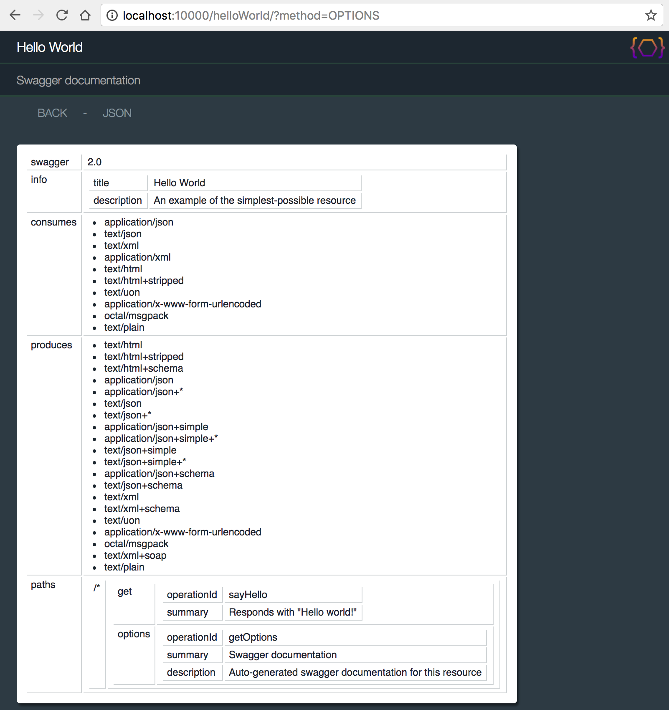
The {@link org.apache.juneau.rest.BasicRestServlet} class implements the page by creating a method
mapped to the OPTIONS HTTP method that simply returns a Swagger bean:
@RestResource(...)
public class BasicRestServlet extends RestServlet {
@RestMethod(name=OPTIONS, path="/*",
summary="Resource options",
htmldoc=@HtmlDoc(
navlinks={
"back: servlet:/,",
"json: servlet:/?method=OPTIONS&Accept=text/json&plainText=true"
}
)
)
public Swagger getOptions(RestRequest req) {
return req.getSwagger();
}
}
This page is constructed using the Info Provider API described next.
The {@link org.apache.juneau.rest.RestInfoProvider} class is used to find the title
and description for your resource and also generate the Swagger documentation.
It can be overridden to provide your own custom Swagger documentation.
The methods on this interface are:
- {@link org.apache.juneau.rest.RestInfoProvider}
- {@link org.apache.juneau.rest.RestInfoProvider#getSwagger(RestRequest) getSwagger(RestRequest)}
- {@link org.apache.juneau.rest.RestInfoProvider#getSiteName(RestRequest) getSiteName(RestRequest)}
- {@link org.apache.juneau.rest.RestInfoProvider#getTitle(RestRequest) getTitle(RestRequest)}
- {@link org.apache.juneau.rest.RestInfoProvider#getDescription(RestRequest) getDescription(RestRequest)}
- {@link org.apache.juneau.rest.RestInfoProvider#getMethodSummary(Method,RestRequest) getMethodSummary(Method,RestRequest)}
- {@link org.apache.juneau.rest.RestInfoProvider#getMethodDescription(Method,RestRequest) getMethodDescription(Method,RestRequest)}
The info provider in turn supplies the information returned by the following methods:
- {@link org.apache.juneau.rest.RestRequest}
- {@link org.apache.juneau.rest.RestRequest#getSwagger() getSwagger()}
- {@link org.apache.juneau.rest.RestRequest#getSiteName() getSiteName()}
- {@link org.apache.juneau.rest.RestRequest#getResourceTitle() getResourceTitle()}
- {@link org.apache.juneau.rest.RestRequest#getResourceDescription() getResourceDescription()}
- {@link org.apache.juneau.rest.RestRequest#getMethodSummary() getMethodSummary()}
- {@link org.apache.juneau.rest.RestRequest#getMethodDescription() getMethodDescription()}
Info providers are registered through the following property:
- {@link org.apache.juneau.rest.RestContext#REST_infoProvider}
While you can implement this interface from scratch, you may want to instead consider extending
from the BasicRestInfoProvider class described next.
The {@link org.apache.juneau.rest.BasicRestInfoProvider} class is the default implementation of the
{@link org.apache.juneau.rest.RestInfoProvider} interface.
It finds and collects information gathered from the following locations:
- Localized JSON Swagger files in the classpath.
- Reflection.
- annotations.
- Info provided in properties files.
The class itself is designed to be extended if you wish to rely mostly on the default behavior, but tweak
certain aspects.
The default provider provides several options for defining Swagger documentation on your resource:
-
Provide nothing.
You'll still get an auto-generated Swagger doc with information gather solely through reflection, including methods, parameters, consumes/produces, etc...
-
Specify localized JSON Swagger files on your classpath.
MyResource_ja_JP.json
-
Use {@link org.apache.juneau.rest.annotation.RestResource#swagger() @RestResource(swagger)} and {@link org.apache.juneau.rest.annotation.RestMethod#swagger() @RestMethod(swagger)}
annotations on your resource classes and methods.
@RestMethod(
swagger="{tags:'foo,bar,baz'}
)
public Object myMethod() {...}
-
Use properties files identified by the {@link org.apache.juneau.rest.annotation.RestResource#messages @RestResource.messages()} annotation.
MyResource.myMethod.tags = foo,bar,baz
-
Use any combination of the above.
-
Extend the BasicRestInfoProvider and provide customized behavior.
// Our customized info provider.
// Extend from the default implementation and selectively override values.
public class MyRestInfoProvider extends BasicRestInfoProvider {
// Must provide this constructor!
public MyRestInfoProvider(RestContext context) {
super(context);
}
@Override /* RestInfoProvider */
public Swagger getSwagger(RestRequest req) throws RestException {
Swagger s = super.getSwagger(req);
// Made inline modifications to generated swagger.
return s;
}
}
// Registered via annotation
@RestResource(infoProvider=MyRestInfoProvider.class)
public class MyResource {...}
The {@link org.apache.juneau.rest.annotation.HtmlDoc @HtmlDoc} annotation is used to customize the HTML
view of your serialized POJOs.
It's used in the following locations:
- {@link org.apache.juneau.rest.annotation.RestResource#htmldoc()}
- {@link org.apache.juneau.rest.annotation.RestMethod#htmldoc()}
The annotation itself is just a convenience for setting configuration properties set
on the {@link org.apache.juneau.html.HtmlDocSerializer} class.
For example, the following two pieces of code are equivalent:
// Title defined via property.
@RestResource(
properties={
@Property(name=HTMLDOC_title, value="My Resource Page")
}
)
// Title defined via @HtmlDoc annotation.
@RestResource(
htmldoc=@HtmlDoc(
title="My Resource Page"
)
)
The purpose of these annotation is to populate the HTML document view which by default consists of the following
structure:
<html>
<head>
<style type='text/css'>
CSS styles and links to stylesheets
</style>
</head>
<body>
<header>
Page header
</header>
<nav>
Navigation links
</nav>
<aside>
Side-bar text
</aside>
<article>
Contents of serialized object
</article>
<footer>
Footer message
</footer>
</body>
</html>
The outline above is controlled by the {@link org.apache.juneau.html.HtmlDocTemplate} interface
which can be overridden via the {@link org.apache.juneau.rest.annotation.HtmlDoc#template @HtmlDoc.template()} annotation.
The HelloWorldResource class was an example of the @HtmlDoc annotation in use:
/**
* Sample REST resource that prints out a simple "Hello world!" message.
*/
@RestResource(
path="/helloWorld",
htmldoc=@HtmlDoc(
navlinks={
"up: request:/..",
"options: servlet:/?method=OPTIONS"
},
aside={
"<div style='max-width:400px' class='text'>",
" <p>This page shows a resource that simply response with a 'Hello world!' message</p>",
" <p>The POJO serialized is a simple String.</p>",
"</div>"
}
)
)
public class HelloWorldResource extends BasicRestServlet {...}
SVL variables can be used in any of these annotations:
@RestResource(
path="/helloWorld",
// Register a config file.
config="MyConfig.cfg",
htmldoc=@HtmlDoc(
navlinks={
"up: request:/..",
"options: servlet:/?method=OPTIONS",
// Add a nav link to view the source code for this class.
"source: $C{Source/gitHub}/org/apache/juneau/examples/rest/$R{servletClassSimple}.java"
},
aside={
// Localize our messages.
"<div style='max-width:400px' class='text'>",
" <p>$L{localizedMessage1}</p>",
" <p>$L{localizedMessage2}</p>",
"</div>"
}
)
)
public class HelloWorldResource extends BasicRestServlet {...}
See Also:
- {@link org.apache.juneau.rest.annotation.HtmlDoc}
- {@link org.apache.juneau.rest.HtmlDocBuilder}
The {@link org.apache.juneau.rest.widget.Widget} class allows you to add arbitrary HTML, CSS, and Javascript
to HTML pages.
They are registered in the following locations:
- {@link org.apache.juneau.rest.annotation.HtmlDoc#widgets() @HtmlDoc.widgets}
- {@link org.apache.juneau.rest.RestContextBuilder#widgets(Class...)}
- {@link org.apache.juneau.rest.RestContextBuilder#widgets(Widget...)}
- {@link org.apache.juneau.rest.RestContext#REST_widgets}
@RestMethod(
widgets={
MyWidget.class
}
htmldoc=@HtmlDoc(
navlinks={
"$W{MyWidget}"
},
aside={
"Check out this widget: $W{MyWidget}"
}
)
)
The Widget class is composed of the following methods:
- {@link org.apache.juneau.rest.widget.Widget}
- {@link org.apache.juneau.rest.widget.Widget#getHtml(RestRequest) getHtml(RestRequest)}
- {@link org.apache.juneau.rest.widget.Widget#getStyle(RestRequest) getStyle(RestRequest)}
- {@link org.apache.juneau.rest.widget.Widget#getScript(RestRequest) getScript(RestRequest)}
The HTML content returned by the {@link org.apache.juneau.rest.widget.Widget#getHtml(RestRequest) getHtml(RestRequest)}
method is added wherever the "$W{...}" variable is used.
The CSS returned by {@link org.apache.juneau.rest.widget.Widget#getScript(RestRequest) getScript(RestRequest)}
is added to the style section in the page header.
The Javascript returned by {@link org.apache.juneau.rest.widget.Widget#getScript(RestRequest) getScript(RestRequest)}
is added to the script section in the page header.
The following examples shows how to associate a widget with a REST method and then have it rendered in the links
and aside section of the page.
It shows an example of a widget that renders an image located in the htdocs static files
directory in your classpath (see {@link org.apache.juneau.rest.annotation.RestResource#staticFiles() @RestResource.staticFiles()}):
public class MyWidget extends Widget {
@Override /* Widget */
public String getHtml(RestRequest req) throws Exception {
UriResolver r = req.getUriResolver(); // API used for resolving URIs.
return "<img class='myimage' onclick='myalert(this)' src='"+r.resolve("servlet:/htdocs/myimage.png")+"'>";
}
@Override /* Widget */
public String getScript(RestRequest req) throws Exception {
return ""
+ "\n function myalert(imageElement) {"
+ "\n alert('cool!');"
+ "\n }";
}
@Override /* Widget */
public String getStyle(RestRequest req) throws Exception {
return ""
+ "\n .myimage {"
+ "\n border: 10px solid red;"
+ "\n }";
}
}
The Widget class also defines the following two convenience methods for loading Javascript and CSS
files from the classpath or file system.
- {@link org.apache.juneau.rest.widget.Widget}
- {@link org.apache.juneau.rest.widget.Widget#getClasspathResourceAsString(String) getClasspathResourceAsString(String)}
- {@link org.apache.juneau.rest.widget.Widget#getClasspathResourceAsString(String,Locale) getClasspathResourceAsString(String,Locale)}
public class MyWidget extends Widget {
...
@Override /* Widget */
public String getScript(RestRequest req) throws Exception {
return getClasspathResourceAsString("MyWidget.js");
}
@Override /* Widget */
public String getStyle(RestRequest req) throws Exception {
return getClasspathResourceAsString("MyWidget.css");
}
}
See Also:
- {@link org.apache.juneau.rest.RestContext#REST_widgets}
TODO(7.2.0)
The HTML views of POJOs can somewhat be considered a rudimentary User Interface.
In reality, a better term for them would be a Developer Interface as they're meant to be used
primarily by developers and not end users.
Despite that distinction, it is possible to 'brand' the HTML page to whatever you desire.
The sample root page below includes some default branding for Juneau and Apache:
http://localhost:10000/helloWorld
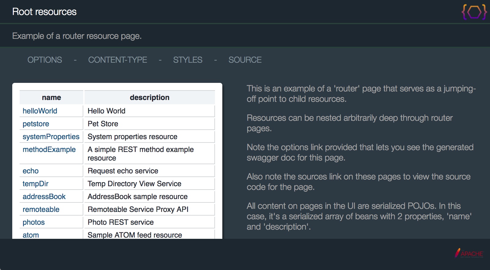
In particular, you may want to replace these icons:


The Juneau REST framework does not provide specific branding support (i.e. there is no concept of a brand icon).
Instead, it just uses the existing open-ended API for defining branding.
The Juneau icon shown is a result of the header annotation on the {@link org.apache.juneau.rest.BasicRestServlet} class:
@RestResource(
...
htmldoc=@HtmlDoc(
header={
"<h1>$R{resourceTitle}</h1>",
"<h2>$R{methodSummary,resourceDescription}</h2>",
"<a href='http://juneau.apache.org'>"
+"<img src='$U{servlet:/htdocs/juneau.png}' style='position:absolute;top:5;right:5;background-color:transparent;height:30px'/>"
+"</a>"
},
head={
// Browser tab icon.
"<link rel='icon' href='$U{servlet:/htdocs/juneau.png}'/>"
}
),
staticFiles={"htdocs:htdocs"}
)
public abstract class BasicRestServlet extends RestServlet {...}
The "juneau.png" image file is located in org.apache.juneau.rest.htdocs package and
is served up via the staticFiles annotation (i.e. anything in the org.apache.juneau.rest.htdocs
package is served up under the path /servlet-path/htdocs).
Then we just reference using a URI resolution variable "$U{servlet:/htdocs/juneau.png}".
To change this image, you can extend the BasicRestServlet class and simply override the annotations
pointing to your own icon.
@RestResource(
...
htmldoc=@HtmlDoc(
header={
"<h1>$R{resourceTitle}</h1>",
"<h2>$R{methodSummary,resourceDescription}</h2>",
"<a href='http://my.project.org'>"
+"<img src='$U{servlet:/my-htdocs/my-project.png}' style='position:absolute;top:5;right:5;background-color:transparent;height:30px'/>"
+"</a>"
},
head={
// Browser tab icon.
"<link rel='icon' href='$U{servlet:/my-htdocs/my-project.png}'/>"
}
),
staticFiles={"my-htdocs:my-htdocs"}
)
public class MyResourceBaseClass extends BasicRestServlet {...}
The footer icon shown is generated by a predefined widget:
@RestResource(
htmldoc=@HtmlDoc(
widgets={
PoweredByApache.class
},
footer="$W{PoweredByApache}"
),
...
)
public class RootResources extends BasicRestServletJenaGroup {...}
The widget definition is shown below:
public class PoweredByApache extends Widget {
/**
* Returns an Apache image tag hyperlinked to "http://apache.org"
*/
@Override /* Widget */
public String getHtml(RestRequest req) throws Exception {
UriResolver r = req.getUriResolver();
return "<a href='http://apache.org'><img style='float:right;padding-right:20px;height:32px' src='"+r.resolve("servlet:/htdocs/asf.png")+"'>";
}
}
To provide your own footer icon, simply define it in your own footer section:
@RestResource(
htmldoc=@HtmlDoc(
footer="<img style='float:right;padding-right:20px;height:32px' src='$U{servlet:/my-htdocs/my-project.png}'>"
),
staticFiles={"my-htdocs:my-htdocs"}
...
)
public class MyResourceBaseClass extends BasicRestServlet {...}
Note how the "User Interface" is open-ended to pretty much lets you do whatever you want.
The sample root page renders in the default "devops" look-and-feel:
http://localhost:10000

The sample root page provides a dropdown widget to try out the other default look-and-feels:

For example, the "light" look-and-feel:
http://localhost:10000/?stylesheet=styles%2Flight.css
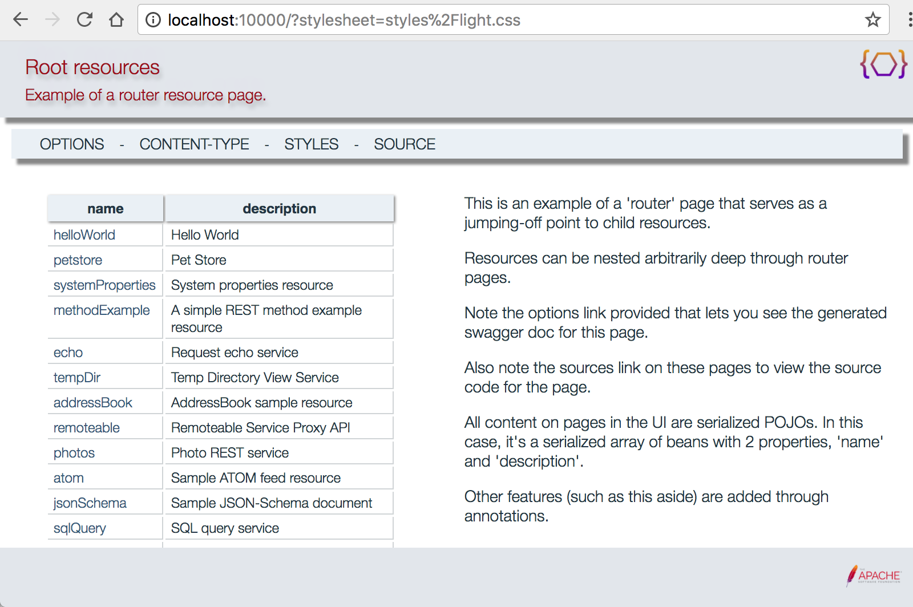
And the "dark" look-and-feel:
http://localhost:10000/?stylesheet=styles%2Fdark.css

The stylesheet URL is controlled by the {@link org.apache.juneau.rest.annotation.HtmlDoc#stylesheet() @HtmlDoc.stylesheet()} annotation.
The {@link org.apache.juneau.rest.BasicRestServlet} class defines the stylesheet served up as a static file:
@RestResource(
htmldoc=@HtmlDoc(
stylesheet="$C{REST/stylesheet,servlet:/styles/devops.css}",
),
staticFiles={"styles:styles"}
)
public abstract class BasicRestServlet extends RestServlet {...}
The "$C{REST/stylesheet,servlet:/styles/devops.css}" variable says to use the URI defined
in your servlet's config file, if there is one, and to default to serving up the file
org/apache/juneau/rest/styles/devops.css.
To provide your own stylesheet, simply override the stylesheet attribute and point to a different
file:
@RestResource(
htmldoc=@HtmlDoc(
stylesheet="servlet:/my-styles/my-style.css}",
),
staticFiles={"my-styles:my-styles"}
)
public class MyResourceBaseClass extends BasicRestServlet {...}
You can try out different stylesheets by passing in a stylesheet attribute in the request
URL.
The example above show this in use.
In case you're curious about how the menu item works, it's defined via a widget:
@RestResource(
htmldoc=@HtmlDoc(
widgets={
PoweredByApache.class,
ContentTypeMenuItem.class,
StyleMenuItem.class
},
navlinks={
"options: ?method=OPTIONS",
"$W{ContentTypeMenuItem}",
"$W{StyleMenuItem}",
"source: $C{Source/gitHub}/org/apache/juneau/examples/rest/$R{servletClassSimple}.java"
},
)
public class RootResources extends BasicRestServletJenaGroup {...}
The StyleMenuItem is a widget that extends from {@link org.apache.juneau.rest.widget.MenuItemWidget}, a
specialized widget for creating pop-up menus.
In the case of StyleMenuItem, it's simply returning a list of links wrapped in a div tag:
import static org.apache.juneau.dto.html5.HtmlBuilder.*;
public class StyleMenuItem extends MenuItemWidget {
private static final String[] BUILT_IN_STYLES = {"devops", "light", "original", "dark"};
@Override /* Widget */
public String getLabel(RestRequest req) {
return "styles";
}
@Override /* MenuItemWidget */
public Div getContent(RestRequest req) throws Exception {
Div div = div();
for (String s : BUILT_IN_STYLES) {
java.net.URI uri = req.getUri(true, new AMap<String,String>().append("stylesheet", "styles/"+s+".css"));
div.children(a(uri, s), br());
}
return div;
}
}
The following annotations are provided for specifying default header values for requests and responses:
-
{@link org.apache.juneau.rest.annotation.RestResource#defaultRequestHeaders() @RestResource.defaultRequestHeaders()}
Defines default headers on request when the client doesn't specify them.
-
{@link org.apache.juneau.rest.annotation.RestResource#defaultResponseHeaders() @RestResource.defaultResponseHeaders()}
Appends the specified headers if they weren't already set programmatically.
// Servlet with default headers
@RestResource(
// Assume "text/json" Accept value when Accept not specified
defaultRequestHeaders={"Accept: text/json"},
// Add a version header attribute to all responses
defaultResponseHeaders={"X-Version: 1.0"}
)
public MyRestServlet extends BasicRestServlet {
...
}
Default headers can also be specified programmatically by overriding the following methods:
-
{@link org.apache.juneau.rest.RestContextBuilder}
-
{@link org.apache.juneau.rest.RestContextBuilder#defaultRequestHeaders(String[])}
-
{@link org.apache.juneau.rest.RestContextBuilder#defaultResponseHeaders(String[])}
The {@link org.apache.juneau.rest.RestContext#REST_logger} property allows you to configure
logging for your resource.
The interface is shown below:
-
{@link org.apache.juneau.rest.RestLogger}
-
{@link org.apache.juneau.rest.RestLogger#log(Level,String,Object[]) log(Level,String,Object[])}
-
{@link org.apache.juneau.rest.RestLogger#log(Level,Throwable,String,Object[]) log(Level,Throwable,String,Object[])}
-
{@link org.apache.juneau.rest.RestLogger#logObjects(Level,String,Object[]) logObjects(Level,String,Object[])}
-
{@link org.apache.juneau.rest.RestLogger#onError(HttpServletRequest,HttpServletResponse,RestException) onError(HttpServletRequest,HttpServletResponse,RestException)}
Gets called when an error occurs on a request call.
Default implementation logs the error.
The {@link org.apache.juneau.rest.RestLogger#logObjects(Level,String,Object[]) logObjects()} method is particularly useful because it allows you to pass in POJOs as arguments
that serialized using {@link org.apache.juneau.json.SimpleJsonSerializer#DEFAULT_READABLE}, but only
if the message is actually logged.
logger.logObjects(DEBUG, "Pojo contents:\n{0}", myPojo);
By default, the Juneau framework uses the built-in Java Logging API for logging.
But you can define your own implementation to use any framework you wish.
The {@link org.apache.juneau.rest.RestLogger} instance is accessible via the following:
- {@link org.apache.juneau.rest.RestContext#getLogger()}
- {@link org.apache.juneau.rest.RestRequest#getLogger()}
In addition, the logger can be accessed by passing it as a parameter to your REST java method:
@RestMethod()
public Object doSomething(RestLogger logger) {...}
If your resource extends from {@link org.apache.juneau.rest.RestServlet}, you can also
use and override the following methods:
- {@link org.apache.juneau.rest.RestServlet#log(Level,String,Object...)}
- {@link org.apache.juneau.rest.RestServlet#log(Level,Throwable,String,Object...)}
By default, a 200 (OK) status is automatically set as the HTTP status when a Java method executes
successfully.
Other status codes can be generated by throwing a {@link org.apache.juneau.rest.RestException} with a
specific HTTP status code, or calling {@link javax.servlet.http.HttpServletResponse#setStatus(int)}.
Non-OK (200) status codes are automatically triggered by the following conditions:
| Code |
Description |
When triggered |
| 401 |
Unauthorized |
A {@link org.apache.juneau.rest.RestGuard guard} prevented the method from being executed |
| 404 |
Not Found |
No matching path patterns were found on any method |
| 405 |
Method Not Implemented |
A path pattern matched, but no Java methods were found for the HTTP method |
| 406 |
Not Acceptable |
A path pattern matched, but no Java methods were found with a matching serializer for the
Accept on the request
|
| 412 |
Precondition Failed |
A path pattern matched, but no Java methods were found that were not rejected by
{@link org.apache.juneau.rest.RestMatcher matchers}
|
| 415 |
Unsupported Media Type |
A path pattern matched, but no Java methods were found with a matching parser for the
Content-Type on the request
|
| 500 |
Internal Server Error |
The Java method threw an exception other than {@link org.apache.juneau.rest.RestException} |
Through the use of the built-in "method" GET parameter, you can implement requests beyond the basic
REST http method types.
For example, the URL "/sample/foo?method=BAR" will cause the following method to be invoked...
@RestMethod(name="BAR")
public void doBar(RestRequest req, RestResponse res) {
// Handle BAR requests
}
To support overloaded methods, the {@link org.apache.juneau.rest.annotation.RestResource#allowedMethodParams() @RestResource.allowedMethodParams()}
setting must be enabled on your servlet.
@RestResource(
// Allow &method parameter on BAR requests
allowedMethodParams="BAR"
)
The following URL parameters have special meaning and can be passed in through the URL of the request:
| GET Parameter |
Description |
| &plainText=true |
Response will always be Content-Type: text/plain and the returned text will be human-readable
({@link org.apache.juneau.serializer.WriterSerializer#SERIALIZER_useWhitespace SERIALIZER_useWhitespace} enabled).
Useful for debugging.
|
| &debug=true |
Request body content will be dumped to log file.
|
| &noTrace=true |
If an error occurs, don't log the stack trace to the log file.
Useful for automated JUnit testcases testing error states to prevent the log file from filling
up with useless stack traces.
|
| &method=X |
Overload the HTTP method as a GET parameter (e.g "POST").
Must be enabled via {@link org.apache.juneau.rest.annotation.RestResource#allowedMethodParams() @RestResource.allowedMethodParams()} setting.
|
| &Header-Name=headerValue |
Specify a header value as a GET parameter.
Must be enabled via {@link org.apache.juneau.rest.annotation.RestResource#allowHeaderParams() @RestResource.allowHeaderParams()} setting.
|
| &body=X |
Pass in the HTTP body content on PUT and POST methods as a UON-encoded GET parameter.
Must be enabled via {@link org.apache.juneau.rest.annotation.RestResource#allowBodyParam() @RestResource.allowBodyParam()} setting.
|
| &x-response-headers=X |
Pass-through headers to the response.
Must be a UON-encoded map of key-value pairs.
|
A very easy-to-use API is provided for defining your own serializers and parsers at both the servlet and
method levels.
The following examples show a custom serializer and parser defined at the method level.
It's the PhotosResource class pulled from the Samples project.
It shows an example of defining a serializer and parser to handle images.
/**
* Sample resource that allows images to be uploaded and retrieved.
*/
@RestResource(
path="/photos",
messages="nls/PhotosResource",
title="Photo REST service",
description="Use a tool like Poster to upload and retrieve jpeg and png images.",
htmldoc=@HtmlDoc(
navlinks={
"options: ?method=OPTIONS"
}
)
)
public class PhotosResource extends BasicRestServlet {
// Our cache of photos
private Map<Integer,Photo> photos = new TreeMap<Integer,Photo>();
/** Bean class for storing photos */
public static class Photo {
private int id;
BufferedImage image;
Photo(int id, BufferedImage image) {
this.id = id;
this.image = image;
}
public URI getURI() throws URISyntaxException {
return new URI("photos/"+id);
}
public int getID() {
return id;
}
}
/** GET request handler for list of all photos */
@RestMethod(name=GET, path="/")
public Collection<Photo> getAllPhotos(RestRequest req, RestResponse res) throws Exception {
res.setPageTitle("Photo REST service");
res.setPageText("Use a tool like Poster to upload and retrieve jpeg and png images.");
return photos.values();
}
/** GET request handler for single photo */
@RestMethod(name=GET, path="/{id}", serializers=ImageSerializer.class)
public BufferedImage getPhoto(RestRequest req, @Path("id") int id) throws Exception {
Photo p = photos.get(id);
if (p == null)
throw new RestException(SC_NOT_FOUND, "Photo not found");
return p.image;
}
/** PUT request handler */
@RestMethod(name=PUT, path="/{id}", parsers=ImageParser.class)
public String addPhoto(RestRequest req, @Path("id") int id, @Body BufferedImage image) throws Exception {
photos.put(id, new Photo(id, image));
return "OK";
}
/** POST request handler */
@RestMethod(name=POST, path="/", parsers=ImageParser.class)
public Photo setPhoto(RestRequest req, @Body BufferedImage image) throws Exception {
int id = photos.size();
Photo p = new Photo(id, image);
photos.put(id, p);
return p;
}
/** DELETE request handler */
@RestMethod(name=DELETE, path="/{id}")
public String deletePhoto(RestRequest req, @Path("id") int id) throws Exception {
Photo p = photos.remove(id);
if (p == null)
throw new RestException(SC_NOT_FOUND, "Photo not found");
return "OK";
}
/** OPTIONS request handler */
@RestMethod(name=OPTIONS, path="/*")
public Swagger getOptions(RestRequest req) {
return req.getSwagger();
}
/** Serializer for converting images to byte streams */
@Produces("image/png,image/jpeg")
public static class ImageSerializer extends OutputStreamSerializer {
@Override /* Serializer */
public void serialize(Object o, OutputStream out, SerializerSession session) throws IOException, SerializeException {
RenderedImage image = (RenderedImage)o;
String mediaType = ctx.getMediaType();
ImageIO.write(image, mediaType.substring(mediaType.indexOf('/')+1), out);
}
}
/** Parser for converting byte streams to images */
@Consumes("image/png,image/jpeg")
public static class ImageParser extends InputStreamParser {
@Override /* Parser */
public <T> T parse(InputStream in, ClassMeta<T> type, ParserSession session) throws ParseException, IOException {
BufferedImage image = ImageIO.read(in);
return (T)image;
}
}
}
Since REST servlets are basically just HttpServlets, incorporating them into an OSGi environment
is pretty straightforward.
The following code shows how to register your REST servlets in an OSGi Activator:
package org.apache.juneau.examples.rest;
import org.osgi.framework.*;
import org.osgi.service.http.*;
import org.osgi.util.tracker.*;
import org.apache.juneau.rest.samples.*;
/**
* Activator class used when running samples as a bundle in an OSGi environment.
*/
public class Activator implements BundleActivator, ServiceTrackerCustomizer {
private ServiceTracker httpServiceTracker;
private BundleContext context;
@Override /* BundleActivator */
public void start(BundleContext context) throws Exception {
this.context = context;
httpServiceTracker = new ServiceTracker(context, HttpService.class.getName(), this);
httpServiceTracker.open();
}
@Override /* BundleActivator */
public void stop(BundleContext context) throws Exception {
httpServiceTracker.close();
}
@Override /* ServiceTrackerCustomizer */
public Object addingService(ServiceReference reference) {
Object service = context.getService(reference);
if (service instanceof HttpService) {
HttpService s = (HttpService)service;
try {
s.registerServlet("/sample", new MyRestServlet(), null, null);
} catch (Exception e) {
throw new RuntimeException(e);
}
}
return service;
}
@Override /* ServiceTrackerCustomizer */
public void modifiedService(ServiceReference reference, Object service) {
}
@Override /* ServiceTrackerCustomizer */
public void removedService(ServiceReference reference, Object service) {
}
}
The Remote INterface Service API allows for client side code to use interface proxies for calling methods on POJOs on
the server side.
Remote interfaces are retrieved using the {@link org.apache.juneau.rest.client.RestClient#getRemoteInterface(Class)}
method.
{@link org.apache.juneau.rest.remote.RemoteInterfaceServlet} is a specialized subclass of {@link org.apache.juneau.rest.RestServlet} that provides a
full-blown REST interface for calling remote services (e.g. POJOs) remotely.
The following simplified example shows how a method on a POJO on a server can be called through an interface
on a client...
@RemoteInterface // Annotation is optional
public interface IAddressBook {
/** Initialize this address book with preset entries */
void init() throws Exception;
/** Return all people in the address book */
List<Person> getPeople();
/** Return all addresses in the address book */
List<Address> getAddresses();
/** Create a person in this address book */
Person createPerson(CreatePerson cp) throws Exception;
/** Find a person by id */
Person findPerson(int id);
/** Find an address by id */
Address findAddress(int id);
/** Find a person by address id */
Person findPersonWithAddress(int id);
/** Remove a person by id */
Person removePerson(int id);
}
The requirements for an interface method to be callable through the remote interface service are:
-
The method must be public.
-
The parameter and return types must be {@doc PojoCategories serializable and parsable}.
-
The method can optionally throw any
Throwable that has a public no-arg or single-arg-string constructors.
There are automatically recreated on the client side when thrown on the server side.
The client side code for invoking this method is shown below...
// Create a RestClient using JSON for serialization, and point to the server-side remote interface servlet.
RestClient client = RestClient.create()
.rootUrl("http://localhost:10000/remote")
.build();
// Create a proxy interface.
IAddressBook ab = client.getRemoteInterface(IAddressBook.class);
// Invoke a method on the server side and get the returned result.
Person p = ab.createPerson(
new Person(
"John Smith",
"Aug 1, 1999",
new Address("My street", "My city", "My state", 12345, true)
)
);
Under the covers, this method call gets converted to a REST POST.
HTTP POST http://localhost:10000/remote/org.apache.juneau.examples.rest.IAddressBook/createPerson
Accept: application/json
Content-Type: application/json
[
{
"name":"John Smith",
"birthDate":"Aug 1, 1999",
"addresses":[
{
"street":"My street",
"city":"My city",
"state":"My state",
"zip":12345,
"isCurrent":true
}
]
}
]
Note that the body of the request is an array.
This array contains the serialized arguments of the method.
The object returned by the method is then serialized as the body of the response.
There are two ways to expose remote interfaces on the server side:
-
Extending from {@link org.apache.juneau.rest.remote.RemoteInterfaceServlet}.
-
Using a
@RestMethod(name=PROXY) annotation on a Java method.
The {@link org.apache.juneau.rest.remote.RemoteInterfaceServlet} class is a simple specialized servlet with an abstract
getServiceMap() method to define the server-side POJOs:
@RestResource(
path="/remote"
)
public class SampleRemoteInterfaceServlet extends RemoteInterfaceServlet {
// Our server-side POJO.
AddressBook addressBook = new AddressBook();
@Override /* RemoteInterfaceServlet */
protected Map<Class<?>,Object> getServiceMap() throws Exception {
Map<Class<?>,Object> m = new LinkedHashMap<Class<?>,Object>();
// In this simplified example, we expose the same POJO service under two different interfaces.
// One is IAddressBook which only exposes methods defined on that interface, and
// the other is AddressBook itself which exposes all methods defined on the class itself (dangerous!).
m.put(IAddressBook.class, addressBook);
m.put(AddressBook.class, addressBook);
return m;
}
}
The @RestMethod(name=PROXY) approach is easier if you only have a single
interface you want to expose.
You simply define a Java method whose return type is an interface, and return the implementation of that
interface:
// Our exposed interface.
@RestMethod(name=PROXY, path="/addressbookproxy/*")
public IAddressBook getProxy() {
return addressBook;
}
In either case, the proxy communications layer is pure REST.
Therefore, in cases where the interface classes are not available on the client side, the same method calls can
be made through pure REST calls.
This can also aid significantly in debugging, since calls to the remote interface service can be made directly from
a browser with no coding involved.
The parameters and return types of the Java methods can be any of the supported {@doc PojoCategories serializable and parsable} types.
This ends up being WAY more flexible than other proxy interfaces since Juneau can handle so may POJO types
out-of-the-box.
Most of the time you don't even need to modify your existing Java implementation code.
Remote Interface Proxies are retrieved through the existing {@link org.apache.juneau.rest.client.RestClient}
class.
It may seem that the client-side code would need to be complex.
In reality, it builds upon existing serializing, parsing, and REST capabilities in Juneau resulting in very
little additional code.
The entire code for the RestClient.getRemoteInterface(Class) method is shown below:
public <T> T getRemoteInterfaceProxy(final Class<T> interfaceClass) {
return (T)Proxy.newProxyInstance(
interfaceClass.getClassLoader(),
new Class[] { interfaceClass },
new InvocationHandler() {
@Override /* InvocationHandler */
public Object invoke(Object proxy, Method method, Object[] args) {
try {
String uri = remoteInterfaceServletUri + '/' + interfaceClass.getName() + '/' + ClassUtils.getMethodSignature(method);
return doPost(uri, args).getResponse(method.getReturnType());
} catch (Exception e) {
throw new RuntimeException(e);
}
}
});
}
Since we build upon the existing RestClient API, we inherit all of it's features.
For example, convenience methods for setting POJO filters and properties to customize the behavior of the
serializers and parsers, and the ability to provide your own customized Apache HttpClient for
handling various scenarios involving authentication and Internet proxies.
The server side is only slightly more complex, but boasts useful debugging and discovery capabilities.
The {@link org.apache.juneau.rest.remote.RemoteInterfaceServlet} class is an implementation of
{@link org.apache.juneau.rest.RestServlet} that provides a REST interface for invoking calls on POJOs.
The RemoteInterfaceServlet class is abstract and must implement a single method for providing the set
of POJOs to expose as remote interfaces.
The samples bundle includes a sample implementation of a remote interface service that can be used to interact with
the address book POJO also included in the bundle.
The method that must be implemented is {@link org.apache.juneau.rest.remote.RemoteInterfaceServlet#getServiceMap()}
that simply returns a mapping of Java interfaces (or classes) to POJO instances.
@RestResource(
path="/remote"
)
public class SampleRemoteInterfaceServlet extends RemoteInterfaceServlet {
// The POJO being manipulated (i.e. the remote service)
AddressBook addressBook = new AddressBook();
@Override /* RemoteInterfaceServlet */
protected Map<Class<?>,Object> getServiceMap() throws Exception {
Map<Class<?>,Object> m = new LinkedHashMap<Class<?>,Object>();
// In this simplified example, we expose the same POJO service under two different interfaces.
// One is IAddressBook which only exposes methods defined on that interface, and
// the other is AddressBook itself which exposes all public methods defined on the class itself.
m.put(IAddressBook.class, addressBook);
m.put(AddressBook.class, addressBook);
return m;
}
}
Since this class is a servlet, and can be deployed as such.
In the sample code, it's listed as a child resource to org.apache.juneau.rest.samples.RootResources
which makes it available under the URL /sample/remote.
If you point your browser to that URL, you get a list of available interfaces:
http://localhost:10000/remote

Clicking the hyperlinks on each shows you the list of methods that can be invoked on that service.
Note that the IAddressBook link shows that you can only invoke methods defined on that
interface, whereas the AddressBook link shows ALL public methods defined on that class.
http://localhost:10000/remote/org.apache.juneau.examples.addressbook.IAddressBook

Since AddressBook extends from LinkedList, you may notice familiar collections
framework methods listed.
http://localhost:10000/remote/org.apache.juneau.examples.addressbook.AddressBook

Let's see how we can interact with this interface through nothing more than REST calls to get a better idea on
how this works.
We'll use the same method call as in the introduction.
First, we need to create the serialized form of the arguments:
Object[] args = new Object[] {
new CreatePerson("Test Person",
AddressBook.toCalendar("Aug 1, 1999"),
new CreateAddress("Test street", "Test city", "Test state", 12345, true))
};
String asJson = SimpleJsonSerializer.DEFAULT_READABLE.toString(args);
System.err.println(asJson);
That produces the following JSON output:
[
{
name: 'Test Person',
birthDate: 'Aug 1, 1999',
addresses: [
{
street: 'Test street',
city: 'Test city',
state: 'Test state',
zip: 12345,
isCurrent: true
}
]
}
]
Note that in this example we're using JSON.
However, various other content types can also be used such as XML, URL-Encoding, UON, or HTML.
In practice however, JSON will preferred since it is often the most efficient.
Next, we can use a tool such as Poster to make the REST call.
Methods are invoked by POSTing the serialized object array to the URI of the interface method.
In this case, we want to POST our JSON to the following URL:
http://localhost:10000/remote/org.apache.juneau.examples.addressbook.IAddressBook/createPerson(org.apache.juneau.examples.addressbook.CreatePerson)
Make sure that we specify the Content-Type of the body as text/json.
We also want the results to be returned as JSON, so we set the Accept header to
text/json as well.

When we execute the POST, we should see the following successful response whose body contains the returned
Person bean serialized to JSON:

From there, we could use the following code snippet to reconstruct the response object from JSON:
String response = "output from above";
Person p = JsonParser.DEFAULT.parse(response, Person.class);
If we alter our servlet to allow overloaded GET requests, we can invoke methods using nothing more than a
browser...
@RestResource(
path="/remote",
// Allow us to use method=POST from a browser.
allowedMethodParams="*"
)
public class SampleRemoteInterfaceServlet extends RemoteInterfaceServlet {
For example, to invoke the getPeople() method on our bean:
http://localhost:10000/remote/org.apache.juneau.examples.addressbook.IAddressBook/getPeople?method=POST

Here we call the findPerson(int) method to retrieve a person and get the
returned POJO (in this case as HTML since that's what's in the Accept header when calling from a
browser):
http://localhost:10000/remote/org.apache.juneau.examples.addressbook.IAddressBook/findPerson(int)?method=POST&body=@(3)

When specifying the POST body as a &body parameter, the method arguments should be in UON
notation.
See {@link org.apache.juneau.uon.UonSerializer} for more information about this encoding.
Usually you can also pass in JSON if you specify &Content-Type=text/json in the URL parameters
but passing in unencoded JSON in a URL may not work in all browsers.
Therefore, UON is preferred.
The hyperlinks on the method names above lead you to a simple form-entry page where you can test
passing parameters in UON notation as URL-encoded form posts.


What if you want fine-tuned control over which methods are exposed in an interface instead of just all public
methods?
For this, the {@link org.apache.juneau.remote.RemoteMethod @RemoteMethod} annotation is provided.
It can be applied to individual interface methods to only expose those methods through the remote interface servlet.
For example, to expose only the first 2 methods in our IAddressBook interface...
public interface IAddressBook {
@RemoteMethod Person createPerson(CreatePerson cp) throws Exception;
@RemoteMethod Person findPerson(int id);
Address findAddress(int id);
Person findPersonWithAddress(int id);
}
The {@link org.apache.juneau.rest.mock.MockRest} class is a simple yet powerful interface for creating serverless
unit tests for your REST interfaces.
The following shows a self-encapsulated standalone JUnit testcase that tests the functionality of a simple REST interface.
public class MockTest {
// Our REST resource to test.
@RestResource(serializers=JsonSerializer.Simple.class, parsers=JsonParser.class)
public static class MyRest {
@RestMethod(name=PUT, path="/String")
public String echo(@Body String b) {
return b;
}
}
@Test
public void testEcho() throws Exception {
MockRest.create(MyRest.class).put("/String", "'foo'").execute().assertStatus(200).assertBody("'foo'"));
}
}
The API consists of the following classes:
- {@link org.apache.juneau.rest.mock}
- {@link org.apache.juneau.rest.mock.MockRest}
The API for instantiating mocks of REST resource classes.
- {@link org.apache.juneau.rest.mock.MockServletRequest}
An implementation of {@link javax.servlet.http.HttpServletRequest} with additional convenience methods for building requests.
- {@link org.apache.juneau.rest.mock.MockServletResponse}
An implementation of {@link javax.servlet.http.HttpServletRequest} with additional convenience methods for testing responses.
The concept of the design is simple. The {@link org.apache.juneau.rest.mock.MockRest} class is used to create instances of {@link org.apache.juneau.rest.mock.MockServletRequest}
and {@link org.apache.juneau.rest.mock.MockServletResponse} which are passed directly to the call handler on the resource class {@link org.apache.juneau.rest.RestCallHandler#service(HttpServletRequest,HttpServletResponse)}.
Breaking apart the fluent method call above will help you understand how this works.
@Test
public void testEcho() throws Exception {
// Instantiate our mock.
MockRest mr = MockRest.create(MyRest.class);
// Create a request.
MockServletRequest req = mr.put("/String", "'foo'");
// Execute it (by calling RestCallHandler.service(...) and then returning the response object).
MockServletResponse res = req.execute();
// Run assertion tests on the results.
res.assertStatus(200);
res.assertBody("'foo'");
}
The {@link org.apache.juneau.rest.mock.MockRest} class provides the following methods for creating requests:
- {@link org.apache.juneau.rest.mock.MockRest}
- {@link org.apache.juneau.rest.mock.MockRest#request(String,String) request(String,String)}
- {@link org.apache.juneau.rest.mock.MockRest#request(String,String,Object) request(String,String,Object)}
- {@link org.apache.juneau.rest.mock.MockRest#get(String) get(String)}
- {@link org.apache.juneau.rest.mock.MockRest#put(String,Object) put(String,Object)}
- {@link org.apache.juneau.rest.mock.MockRest#post(String,Object) post(String,Object)}
- {@link org.apache.juneau.rest.mock.MockRest#delete(String) delete(String)}
- {@link org.apache.juneau.rest.mock.MockRest#options(String) options(String)}
The {@link org.apache.juneau.rest.mock.MockServletRequest} class provides default implementations for all the methods defined
on the {@link javax.servlet.http.HttpServletRequest} in addition to many convenience methods.
The following fluent convenience methods are provided for setting common Accept and Content-Type headers.
- {@link org.apache.juneau.rest.mock.MockServletRequest}
- {@link org.apache.juneau.rest.mock.MockServletRequest#json() json()}
- {@link org.apache.juneau.rest.mock.MockServletRequest#xml() xml()}
- {@link org.apache.juneau.rest.mock.MockServletRequest#html() html()}
- {@link org.apache.juneau.rest.mock.MockServletRequest#plainText() plainText()}
- {@link org.apache.juneau.rest.mock.MockServletRequest#msgpack() msgpack()}
- {@link org.apache.juneau.rest.mock.MockServletRequest#uon() uon()}
- {@link org.apache.juneau.rest.mock.MockServletRequest#urlEnc() urlEnc()}
- {@link org.apache.juneau.rest.mock.MockServletRequest#yaml() yaml()}
The following fluent convenience methods are provided for building up your request.
- {@link org.apache.juneau.rest.mock.MockServletRequest}
- {@link org.apache.juneau.rest.mock.MockServletRequest#header(String,Object) header(String,Object)}
- {@link org.apache.juneau.rest.mock.MockServletRequest#query(String,Object) query(String,Object}}
- {@link org.apache.juneau.rest.mock.MockServletRequest#formData(String,Object) formData(String,Object)}
- {@link org.apache.juneau.rest.mock.MockServletRequest#attribute(String,Object) attribute(String,Object)}
- {@link org.apache.juneau.rest.mock.MockServletRequest#body(Object) body(Object)}
Fluent setters are provided for all common request headers:
- {@link org.apache.juneau.rest.mock.MockServletRequest}
- {@link org.apache.juneau.rest.mock.MockServletRequest#accept(Object) accept(Object)}
- {@link org.apache.juneau.rest.mock.MockServletRequest#acceptCharset(Object) acceptCharset(Object)}
- {@link org.apache.juneau.rest.mock.MockServletRequest#acceptEncoding(Object) acceptEncoding(Object)}
- {@link org.apache.juneau.rest.mock.MockServletRequest#acceptLanguage(Object) acceptLanguage(Object)}
- ...
The {@link org.apache.juneau.rest.mock.MockServletResponse} class provides default implementations for all the methods defined
on the {@link javax.servlet.http.HttpServletResponse} in addition to many convenience methods.
- {@link org.apache.juneau.rest.mock.MockServletResponse}
- {@link org.apache.juneau.rest.mock.MockServletResponse#getBody() getBody()}
- {@link org.apache.juneau.rest.mock.MockServletResponse#getBodyAsString() getBodyAsString()}
- {@link org.apache.juneau.rest.mock.MockServletResponse#assertStatus(int) assertStatus(int)}
- {@link org.apache.juneau.rest.mock.MockServletResponse#assertBody(String) assertBody(String)}
- {@link org.apache.juneau.rest.mock.MockServletResponse#assertBodyContains(String...) assertBodyContains(String...)}
- {@link org.apache.juneau.rest.mock.MockServletResponse#assertBodyMatches(String) assertBodyMatches(String)}
- {@link org.apache.juneau.rest.mock.MockServletResponse#assertBodyMatchesRE(String) assertBodyMatchesRE(String)}
- {@link org.apache.juneau.rest.mock.MockServletResponse#assertHeader(String,String) assertHeader(String,String)}
- {@link org.apache.juneau.rest.mock.MockServletResponse#assertHeaderContains(String,String...) assertHeaderContains(String,String...)}
The {@link org.apache.juneau.rest.mock.MockRest} object can also be used with the {@link org.apache.juneau.rest.client.RestClient} class to
perform serverless unit testing through the client API of REST resources.
This can be useful for testing of interface proxies against REST interfaces (described later).
The example above can be rewritten to use a mock as follows:
public class MockTest {
// Our REST resource to test.
@RestResource(serializers=JsonSerializer.Simple.class, parsers=JsonParser.class)
public static class MyRest {
@RestMethod(name=PUT, path="/String")
public String echo(@Body String b) {
return b;
}
}
@Test
public void testEcho() throws Exception {
MockRest mr = MockRest.create(MyRest.class);
RestClient rc = RestClient.create().mockHttpConnection(mr).build();
assertEquals("'OK'", rc.doPut("/String", "'OK'").getResponseAsString());
}
}
The {@link org.apache.juneau.rest.client.RestClientBuilder#mockHttpConnection(MockHttpConnection)} method allows you to pass in a mocked
interface for creating HTTP requests through the client interface.
The method creates a specialized HttpClientConnectionManager for handling requests by taking information on the
client-side request and populating the {@link org.apache.juneau.rest.mock.MockServletRequest} and {@link org.apache.juneau.rest.mock.MockServletResponse} objects
directly without involving any sockets.
The Juneau REST server API is compatible with dependency injection frameworks such as Spring.
The important class is the {@link org.apache.juneau.rest.RestResourceResolver} class which is used
to resolve child servlet/resource implementation classes inside parent contexts.
In other words, it's used for resolving {@link org.apache.juneau.rest.annotation.RestResource#children() @RestResource.children()} instances.
The general approach starts with defining a resolver that uses the Spring application context for resolution:
public class SpringRestResourceResolver extends RestResourceResolverSimple {
private final ApplicationContext appContext;
public SpringRestResourceResolver(ApplicationContext appContext) {
this.appContext = appContext;
}
@Override /* RestResourceResolverSimple */
public Object resolve(Class<?> resourceType, RestContextBuilder builder) throws Exception {
Object resource = appContext.getBean(type);
// If Spring can't resolve it, use default resolution (just look for no-arg constructor).
if (resource == null) {
resource = super.resolve(resourceType, builder);
}
return resource;
}
}
Next, define the Spring configuration to return our resolver:
@Configuration
public abstract class MySpringConfiguration {
@Autowired
private static ApplicationContext appContext;
public static ApplicationContext getAppContext(){
return appContext;
}
public static void setAppContext(ApplicationContext appContext){
MySpringConfiguration.appContext = appContext;
}
@Bean
public RestResourceResolver restResourceResolver(ApplicationContext appContext) {
return new SpringRestResourceResolver(appContext);
}
}
Finally, define your Root resource with a constructor that takes in our rest resource resolver and
sets it on the config object during initialization.
@RestResource(
children={
...
}
)
public class Root extends BasicRestServletGroup {
private final RestResourceResolver resolver;
@Inject
public Root(RestResourceResolver resolver) {
this.resolver = resolver;
}
@RestHook(INIT)
public void initSpring(RestContextBuilder builder) throws Exception {
builder.setResourceResolver(resolver);
}
}
After that, just define constructors on your child resources to take in Spring beans:
@RestResource(
path="/child"
)
public class MyChildResource extends BasicRestServlet {
private final Bean1 bean1;
private final Bean2 bean2;
private final Bean3 bean3;
@Inject
public MyChildResource(Bean1 bean1, Bean2 bean2, Bean3 bean3) {
this.bean1 = bean1;
this.bean2 = bean2;
this.bean3 = bean3;
}
Juneau is built as a veneer on top of the Servlet API, allowing you to use low-level Servlet APIs
whenever needed.
This allows you to take advantage of the newest HTTP/2 features implemented in the new Servlet 4.0
specification.
-
Subclasses can use either {@link javax.servlet.http.HttpServlet#init(ServletConfig)}
or {@link javax.servlet.http.HttpServlet#init()} for initialization just like any other servlet.
-
The X-Response-Headers header can be used to pass through header values into the response.
The value should be a URL-encoded map of key-value pairs.
For example, to add a "Refresh: 1" header to the response to auto-refresh a page, the following
parameter can be specified: "/sample?X-Response-Headers={Refresh=1}"
<dependency>
<groupId>org.apache.juneau</groupId>
<artifactId>juneau-rest-client</artifactId>
<version>7.2.0</version>
</dependency>
juneau-rest-client-7.2.0.jar
org.apache.juneau.rest.client_7.2.0.jar
The REST client API provides the ability to access remote REST interfaces and transparently convert the input
and output to and from POJOs using any of the provided serializers and parsers.
Built upon the Apache HttpClient libraries, it extends that API and provides specialized APIs for working with
REST interfaces while maintaining all the functionality available in the HttpClient API.
// Create a reusable JSON client.
try (RestClient client = RestClient.create().build()) {
// The address of the root resource.
String url = "http://localhost:10000/addressBook";
// Do a REST GET against a remote REST interface and convert
// the response to an unstructured ObjectMap object.
ObjectMap m1 = client.doGet(url).getResponse(ObjectMap.class);
// Same as above, except parse the JSON as a bean.
AddressBook a2 = client.doGet(url).getResponse(AddressBook.class);
}
try (RestClient client = RestClient.create().serializer(XmlSerializer.class).parser(XmlSerializer.class).build()) {
// Add a person to the address book.
// Use XML as the transport medium.
Person p = new Person("Joe Smith", 21);
int returnCode = client.doPost(url + "/entries", p).run();
}
Juneau provides an HTTP client API that makes it extremely simple to connect to remote REST interfaces and
seemlessly send and receive serialized POJOs in requests and responses.
Features
-
Converts POJOs directly to HTTP request message bodies using {@link org.apache.juneau.serializer.Serializer}
classes.
-
Converts HTTP response message bodies directly to POJOs using {@link org.apache.juneau.parser.Parser}
classes.
-
Serializes and parses HTTP request and response parts (query/form-data parameters, headers, path variables)
using OpenAPI marshalling and validation.
-
Exposes the full functionality of the Apache HttpClient API by exposing all methods defined on the
{@link org.apache.http.impl.client.HttpClientBuilder} class.
The client API is designed to work as a thin layer on top of the proven Apache HttpClient API.
By leveraging the HttpClient library, details such as SSL certificate negotiation, proxies, encoding, etc...
are all handled in Apache code.
The Juneau client API prereq's Apache HttpClient 4.5+.
At a minimum, the following jars are required:
httpclient-4.5.jar
httpcore-4.4.1.jar
httpmime-4.5.jar
// Examples below use the Juneau Address Book resource example
// Create a reusable client with JSON support
try (RestClient client = RestClient.create().build()) {
// GET request, ignoring output
try {
int rc = client.doGet("http://localhost:10000/addressBook").run();
// Succeeded!
} catch (RestCallException e) {
// Failed!
System.err.println(
String.format("status=%s, message=%s", e.getResponseStatus(), e.getResponseMessage())
);
}
// Remaining examples ignore thrown exceptions.
// GET request, secure, ignoring output
client.doGet("https://localhost:9443/sample/addressBook").run();
// GET request, getting output as a String. No POJO parsing is performed.
// Note that when calling one of the getX() methods, you don't need to call connect() or disconnect(), since
// it's automatically called for you.
String output = client.doGet("http://localhost:10000/addressBook")
.getResponseAsString();
// GET request, getting output as a Reader
Reader r = client.doGet("http://localhost:10000/addressBook")
.getReader();
// GET request, getting output as an untyped map
// Input must be an object (e.g. "{...}")
ObjectMap m = client.doGet("http://localhost:10000/addressBook/0")
.getResponse(ObjectMap.class);
// GET request, getting output as an untyped list
// Input must be an array (e.g. "[...]")
ObjectList l = client.doGet("http://localhost:10000/addressBook")
.getResponse(ObjectList.class);
// GET request, getting output as a parsed bean
// Input must be an object (e.g. "{...}")
// Note that you don't have to do any casting!
Person p = client.doGet("http://localhost:10000/addressBook/0")
.getResponse(Person.class);
// GET request, getting output as a parsed bean
// Input must be an array of objects (e.g. "[{...},{...}]")
Person[] pa = client.doGet("http://localhost:10000/addressBook")
.getResponse(Person[].class);
// Same as above, except as a List<Person>
List<Person> pl = client.doGet("http://localhost:10000/addressBook")
.getResponse(List.class, Person.class);
// GET request, getting output as a parsed string
// Input must be a string (e.g. "<string>foo</string>" or "'foo'")
String name = client.doGet("http://localhost:10000/addressBook/0/name")
.getResponse(String.class);
// GET request, getting output as a parsed number
// Input must be a number (e.g. "<number>123</number>" or "123")
int age = client.doGet("http://localhost:10000/addressBook/0/age")
.getResponse(Integer.class);
// GET request, getting output as a parsed boolean
// Input must be a boolean (e.g. "<boolean>true</boolean>" or "true")
boolean isCurrent = client.doGet("http://localhost:10000/addressBook/0/addresses/0/isCurrent")
.getResponse(Boolean.class);
}
// GET request, getting a filtered object
try (RestClient client = RestClient.create().pojoSwaps(CalendarSwap.ISO8601.class).build()) {
Calendar birthDate = client.doGet("http://localhost:10000/addressBook/0/birthDate")
.getResponse(GregorianCalendar.class);
// PUT request on regular field
String newName = "John Smith";
int rc = client.doPut("http://localhost:10000/addressBook/0/name", newName).run();
// PUT request on filtered field
Calendar newBirthDate = new GregorianCalendar(1, 2, 3, 4, 5, 6);
rc = client.doPut("http://localhost:10000/addressBook/0/birthDate", newBirthDate).run();
// POST of a new entry to a list
Address newAddress = new Address("101 Main St", "Anywhere", "NY", 12121, false);
rc = client.doPost("http://localhost:10000/addressBook/0/addresses", newAddress).run();
}
Notes:
-
The {@link org.apache.juneau.rest.client.RestClient} class exposes all the builder methods on the Apache
HttpClient {@link org.apache.http.impl.client.HttpClientBuilder} class.
Use these methods to provide any customized HTTP client behavior.
The juneau-rest-client library can also be used to define interface proxies against 3rd-party REST interfaces.
This is an extremely powerful feature that allows you to quickly define easy-to-use interfaces against
virtually any REST interface.
Similar in concept to remote interfaces defined previously, but in this case we simply define our interface with
special annotations that tell us how to convert input and output to HTTP headers, query parameters, form
post parameters, or request/response bodies.
@RemoteResource
public interface PetStore {
@RemoteMethod(httpMethod=POST, path="/pets")
String addPet(
@Body PetCreate pet,
@Header("E-Tag") UUID etag,
@Query("debug") boolean debug
);
}
// Use a RestClient with default Simple JSON support.
try (RestClient c = RestClient.create().simpleJson().build()) {
PetStore p = c.getRemoteResource(PetStore.class, "http://localhost:10000/petstore");
PetCreate pet = new PetCreate("Fluffy", 9.99);
String response = p.createPet(pet, UUID.randomUUID(), true);
}
The call above translates to the following REST call:
POST http://localhost:10000/petstore/pets?debug=true HTTP/1.1
Accept: application/json
Content-Type: application/json
E-Tag: 475588d4-0b27-4f56-9296-cc683251d314
{
name: 'Fluffy',
price: 9.99
}
The {@link org.apache.juneau.remote.RemoteResource @RemoteResource} annotation is used on your interface class
to identify it as a REST proxy interface.
- {@link org.apache.juneau.remote.RemoteResource}
- {@link org.apache.juneau.remote.RemoteResource#path path}
The {@link org.apache.juneau.remote.RemoteResource#path @RemoteResource(path)} annotation is used to define the
HTTP path of the REST service.
The path can be an absolute path to your REST service.
@RemoteResource(path="http://localhost:10000/petstore")
public interface PetStore {...}
PetStore p = client.getRemoteResource(PetStore.class);
When a relative path is specified, it's relative to the root-url defined on the RestClient used to instantiate the interface.
@RemoteResource(path="/petstore")
public interface PetStore {...}
RestClient client = RestClient.create().json().rootUrl("http://localhost:10000").build();
PetStore p = client.getRemoteResource(PetStore.class);
The {@link org.apache.juneau.remote.RemoteMethod @RemoteMethod} annotation is applied to methods
of {@link org.apache.juneau.remote.RemoteResource}-annotated interfaces to identify REST endpoint calls.
- {@link org.apache.juneau.remote.RemoteMethod}
- {@link org.apache.juneau.remote.RemoteMethod#httpMethod httpMethod}
- {@link org.apache.juneau.remote.RemoteMethod#path path}
- {@link org.apache.juneau.remote.RemoteMethod#returns returns}
The HTTP method and path are mapped to a Java method using the httpMethod and path annotations.
@RemoteResource
public interface PetStore {
// GET /pets/{petId}
@RemoteMethod(httpMethod="GET", path="/pets/{petId}")
Pet getPet(@Path("petId") int id);
}
The method names used in 3rd-party proxies can be anything.
However, the method names can also be used to infer the HTTP method and path if not explicitly specified
via the {@link org.apache.juneau.remote.RemoteMethod#httpMethod() @RemoteMethod(httpMethod)} and
{@link org.apache.juneau.remote.RemoteMethod#path() @RemoteMethod(path)} annotations.
For example, the getPet method below defaults to GET /pet:
@RemoteResource
public interface PetStore {
// GET /pet
@RemoteMethod
Pet getPet(@Query("id") int id);
}
Method names matching the following pattern are assumed to be implying the HTTP method name:
(get|put|post|delete|options|head|connect|trace|patch).*
do(?i)(get|put|post|delete|options|head|connect|trace|patch)
| Java method name |
Inferred HTTP method |
Inferred HTTP path |
| getPet() |
GET |
/pet |
| get() |
GET |
/ |
| postPet() |
POST |
/pet |
| fooPet() |
[default] |
/fooPet |
| doGet() |
GET |
/ |
| doGET() |
GET |
/ |
| doFoo() |
[default] |
/doFoo |
The return type of the Java methods of 3rd-party proxies can be any of the following:
-
void
- Don't parse any response.
Note that the method will still throw a runtime exception if an error HTTP status is returned.
-
Any {@doc PojoCategories parsable} POJO
- The body of the response will be converted to the POJO using the parser defined on the
RestClient based on the Content-Type of the response.
-
Any {@link org.apache.juneau.http.annotation.Response @Response}-annotated type. (described below)
-
HttpResponse
- Returns the raw HttpResponse returned by the inner HttpClient.
-
{@link java.io.Reader}
- Returns access to the raw reader of the response.
Note that if you don't want your response parsed as a POJO, you'll want to get the response reader
directly.
-
{@link java.io.InputStream}
- Returns access to the raw input stream of the response.
The {@link org.apache.juneau.http.annotation.Body @Body} annotation can be applied to arguments of @RemoteMethod-annotated methods
to denote that they are the HTTP body of the request.
- {@link org.apache.juneau.http.annotation.Body Body}
- {@link org.apache.juneau.http.annotation.Body#partSerializer() partSerializer} - Override the part serializer defined on client.
- {@link org.apache.juneau.http.annotation.Body#required() required} - Input validation. Body must be present.
- {@link org.apache.juneau.http.annotation.Body#schema() schema} - Swagger schema.
- {@link org.apache.juneau.http.annotation.Body#usePartSerializer() usePartSerializer} - Use the HTTP-Part serializer for serializing the body.
// Used on parameter
@RemoteResource(path="/petstore")
public interface PetStore {
@RemoteMethod(path="/pets")
String addPet(@Body Pet pet);
}
// Used on class
@RemoteResource(path="/petstore")
public interface PetStore {
@RemoteMethod(path="/pets")
String addPet(Pet pet);
}
@Body
public class Pet {...}
The argument can be any of the following types:
-
Any serializable POJO - Converted to text using the {@link org.apache.juneau.serializer.Serializer} or {@link org.apache.juneau.httppart.HttpPartSerializer} registered with the
RestClient or specified on annotation.
-
{@link java.io.Reader} - Raw contents of {@code Reader} will be serialized to remote resource.
-
{@link java.io.InputStream} - Raw contents of {@code InputStream} will be serialized to remote resource.
-
HttpEntity - Bypass Juneau serialization and pass HttpEntity directly to HttpClient.
-
NameValuePairs - Converted to a URL-encoded FORM post.
OpenAPI schema based serialization can be used by specifying a value for the {@link org.apache.juneau.http.annotation.Body#partSerializer() @Body(partSerializer)} annotation.
@RemoteMethod(path="/comma-delimited-pipe-delimited-ints")
String addCommaDelimitedPipeDelimitedInts(
@Body(
serializer=OpenApiPartSerializer.class,
schema=@Schema(
type="array",
collectionFormat="pipes",
items=@Items(
type="array"
items=@SubItems(
type="int32",
// Auto-validates on client side!
minimum="0",
maximum="64"
)
)
)
)
int[][] input
);
When using OpenAPI serialization, the argument can be any data type specified in {@link org.apache.juneau.httppart.OpenApiPartSerializer}.
See Also:
- {@doc juneau-marshall.OpenApiDetails.Serializers}
The {@link org.apache.juneau.http.annotation.FormData @FormData} annotation can be applied to arguments of @RemoteMethod-annotated methods
to denote that they are form-data parameters on the request.
- {@link org.apache.juneau.http.annotation.FormData FormData}
- {@link org.apache.juneau.http.annotation.FormData#_default() _default} - Default value if not present.
- {@link org.apache.juneau.http.annotation.FormData#_enum() _enum} - Input validation. Must match one of the values.
- {@link org.apache.juneau.http.annotation.FormData#allowEmptyValue() allowEmptyValue} - Input validation. Allow empty value.
- {@link org.apache.juneau.http.annotation.FormData#collectionFormat() collectionFormat} - How collections of items are formatted.
- {@link org.apache.juneau.http.annotation.FormData#exclusiveMaximum() exclusiveMaximum} - Input validation. Whether maximum is exclusive.
- {@link org.apache.juneau.http.annotation.FormData#exclusiveMinimum() exclusiveMinimum} - Input validation. Whether minimum is exclusive.
- {@link org.apache.juneau.http.annotation.FormData#format() format} - The schema type format.
- {@link org.apache.juneau.http.annotation.FormData#items() items} - The schema of items in a collection.
- {@link org.apache.juneau.http.annotation.FormData#maximum() maximum} - Input validation. Maximum numeric value.
- {@link org.apache.juneau.http.annotation.FormData#maxItems() maxItems} - Input validation. Maximum number of items in a collection.
- {@link org.apache.juneau.http.annotation.FormData#maxLength() maxLength} - Input validation. Maximum length of a string.
- {@link org.apache.juneau.http.annotation.FormData#minimum() minimum} - Input validation. Minimum numeric value.
- {@link org.apache.juneau.http.annotation.FormData#minItems() minItems} - Input validation. Minimum number of items in a collection.
- {@link org.apache.juneau.http.annotation.FormData#minLength() minLength} - Input validation. Minimum length of a string.
- {@link org.apache.juneau.http.annotation.FormData#multipleOf() multipleOf} - Input validation. Number must be a multiple of.
- {@link org.apache.juneau.http.annotation.FormData#name() name} - Form data entry name.
- {@link org.apache.juneau.http.annotation.FormData#pattern() pattern}- Input validation. Must match regular expression.
- {@link org.apache.juneau.http.annotation.FormData#required() required}- Input validation. Form data entry must be present.
- {@link org.apache.juneau.http.annotation.FormData#serializer() serializer}- Override the part serializer.
- {@link org.apache.juneau.http.annotation.FormData#skipIfEmpty() skipIfEmpty}- Don't add if value is null or empty.
- {@link org.apache.juneau.http.annotation.FormData#type() type} - The schema type.
- {@link org.apache.juneau.http.annotation.FormData#uniqueItems() uniqueItems} - Input validation. Collections must contain unique items only.
@RemoteResource(path="/myproxy")
public interface MyProxy {
// Explicit names specified for form data parameters.
@RemoteMethod
String postParameters(
@FormData("foo") String foo,
@FormData("bar") MyPojo pojo
);
// Multiple values pulled from a NameValuePairs object.
// Name "*" is inferred.
@RemoteMethod
String postNameValuePairs(@FormData NameValuePairs nameValuePairs);
// Multiple values pulled from a Map.
@RemoteMethod
String postMap(@FormData Map<String,Object> map);
// Multiple values pulled from a bean.
@RemoteMethod
String postBean(@FormData MyBean bean);
// An entire form-data HTTP body as a String.
@RemoteMethod
String postString(@FormData String string);
// An entire form-data HTTP body as a Reader.
@RemoteMethod
String postReader(@FormData Reader reader);
}
Single-part arguments (i.e. those with name != "*") can be any of the following types:
-
Any serializable POJO - Converted to a string using the {@link org.apache.juneau.httppart.HttpPartSerializer} registered with the
RestClient or associated via the {@link org.apache.juneau.http.annotation.FormData#serializer() @FormData(serializer)} annotation.
Multi-part arguments (i.e. those with name == "*" or empty) can be any of the following types:
-
{@link java.io.Reader} - Raw contents of {@code Reader} will be serialized to remote resource.
-
{@link java.io.InputStream} - Raw contents of {@code InputStream} will be serialized to remote resource.
-
NameValuePairs - Converted to a URL-encoded FORM post.
-
Map - Converted to key-value pairs.
Values serialized using the registered {@link org.apache.juneau.httppart.HttpPartSerializer}.
-
Bean - Converted to key-value pairs.
Values serialized using the registered {@link org.apache.juneau.httppart.HttpPartSerializer}.
-
CharSequence - Used directly as am "application/x-www-form-urlencoded" entity.
When using OpenAPI serialization, the argument can be any data type specified in {@link org.apache.juneau.httppart.OpenApiPartSerializer}.
See Also:
- {@doc juneau-marshall.OpenApiDetails.Serializers}
The {@link org.apache.juneau.http.annotation.Query @Query} annotation can be applied to arguments of @RemoteMethod-annotated methods
to denote that they are query parameters on the request.
- {@link org.apache.juneau.http.annotation.Query Query}
- {@link org.apache.juneau.http.annotation.Query#_default() _default} - Default value if not present.
- {@link org.apache.juneau.http.annotation.Query#_enum() _enum} - Input validation. Must match one of the values.
- {@link org.apache.juneau.http.annotation.Query#allowEmptyValue() allowEmptyValue} - Input validation. Allow empty value.
- {@link org.apache.juneau.http.annotation.Query#collectionFormat() collectionFormat} - How collections of items are formatted.
- {@link org.apache.juneau.http.annotation.Query#exclusiveMaximum() exclusiveMaximum} - Input validation. Whether maximum is exclusive.
- {@link org.apache.juneau.http.annotation.Query#exclusiveMinimum() exclusiveMinimum} - Input validation. Whether minimum is exclusive.
- {@link org.apache.juneau.http.annotation.Query#format() format} - The schema type format.
- {@link org.apache.juneau.http.annotation.Query#items() items} - The schema of items in a collection.
- {@link org.apache.juneau.http.annotation.Query#maximum() maximum} - Input validation. Maximum numeric value.
- {@link org.apache.juneau.http.annotation.Query#maxItems() maxItems} - Input validation. Maximum number of items in a collection.
- {@link org.apache.juneau.http.annotation.Query#maxLength() maxLength} - Input validation. Maximum length of a string.
- {@link org.apache.juneau.http.annotation.Query#minimum() minimum} - Input validation. Minimum numeric value.
- {@link org.apache.juneau.http.annotation.Query#minItems() minItems} - Input validation. Minimum number of items in a collection.
- {@link org.apache.juneau.http.annotation.Query#minLength() minLength} - Input validation. Minimum length of a string.
- {@link org.apache.juneau.http.annotation.Query#multipleOf() multipleOf} - Input validation. Number must be a multiple of.
- {@link org.apache.juneau.http.annotation.Query#name() name} - Query parameter name.
- {@link org.apache.juneau.http.annotation.Query#pattern() pattern} - Input validation. Must match regular expression.
- {@link org.apache.juneau.http.annotation.Query#required() required} - Input validation. Query parameter must be present.
- {@link org.apache.juneau.http.annotation.Query#serializer() serializer} - Override the part serializer.
- {@link org.apache.juneau.http.annotation.Query#skipIfEmpty() skipIfEmpty}- Don't add if value is null or empty.
- {@link org.apache.juneau.http.annotation.Query#type() type} - The schema type.
- {@link org.apache.juneau.http.annotation.Query#uniqueItems() uniqueItems} - Input validation. Collections must contain unique items only.
@RemoteResource(path="/myproxy")
public interface MyProxy {
// Explicit names specified for query parameters.
@RemoteMethod
String parameters(
@Query("foo") String foo,
@Query("bar") MyPojo pojo);
// Multiple values pulled from a NameValuePairs object.
// Same as @Query("*").
@RemoteMethod
String nameValuePairs(@Query NameValuePairs nameValuePairs);
// Multiple values pulled from a Map.
// Same as @Query("*").
@RemoteMethod
String map(@Query Map<String,Object> map);
// Multiple values pulled from a bean.
// Same as @Query("*").
@RemoteMethod
String bean(@Query MyBean myBean);
// An entire query string as a String.
// Same as @Query("*").
@RemoteMethod
String string(@Query String string);
// An entire query string as a Reader.
// Same as @Query("*").
@RemoteMethod
String reader(@Query Reader reader);
}
Single-part arguments (i.e. those with name != "*") can be any of the following types:
-
Any serializable POJO - Converted to a string using the {@link org.apache.juneau.httppart.HttpPartSerializer} registered with the
RestClient or associated via the {@link org.apache.juneau.http.annotation.Query#serializer() @Query(serializer)} annotation.
Multi-part arguments (i.e. those with name == "*" or empty) can be any of the following types:
-
{@link java.io.Reader} - Raw contents of {@code Reader} will be serialized directly a query string.
-
NameValuePairs - Serialized as individual query parameters.
-
Map - Converted to key-value pairs.
Values serialized using the registered {@link org.apache.juneau.httppart.HttpPartSerializer}.
-
Bean - Converted to key-value pairs.
Values serialized using the registered {@link org.apache.juneau.httppart.HttpPartSerializer}.
-
CharSequence - Serialized directly a query string.
When using OpenAPI serialization, the argument can be any data type specified in {@link org.apache.juneau.httppart.OpenApiPartSerializer}.
See Also:
- {@doc juneau-marshall.OpenApiDetails.Serializers}
The {@link org.apache.juneau.http.annotation.Header @Header} annotation can be applied to arguments of @RemoteMethod-annotated methods
to denote that they are header parameters on the request.
- {@link org.apache.juneau.http.annotation.Header Header}
- {@link org.apache.juneau.http.annotation.Header#_default() _default} - Default value if not present.
- {@link org.apache.juneau.http.annotation.Header#_enum() _enum} - Input validation. Must match one of the values.
- {@link org.apache.juneau.http.annotation.Header#allowEmptyValue() allowEmptyValue} - Input validation. Allow empty value.
- {@link org.apache.juneau.http.annotation.Header#collectionFormat() collectionFormat} - How collections of items are formatted.
- {@link org.apache.juneau.http.annotation.Header#exclusiveMaximum() exclusiveMaximum} - Input validation. Whether maximum is exclusive.
- {@link org.apache.juneau.http.annotation.Header#exclusiveMinimum() exclusiveMinimum} - Input validation. Whether minimum is exclusive.
- {@link org.apache.juneau.http.annotation.Header#format() format} - The schema type format.
- {@link org.apache.juneau.http.annotation.Header#items() items} - The schema of items in a collection.
- {@link org.apache.juneau.http.annotation.Header#maximum() maximum} - Input validation. Maximum numeric value.
- {@link org.apache.juneau.http.annotation.Header#maxItems() maxItems} - Input validation. Maximum number of items in a collection.
- {@link org.apache.juneau.http.annotation.Header#maxLength() maxLength} - Input validation. Maximum length of a string.
- {@link org.apache.juneau.http.annotation.Header#minimum() minimum} - Input validation. Minimum numeric value.
- {@link org.apache.juneau.http.annotation.Header#minItems() minItems} - Input validation. Minimum number of items in a collection.
- {@link org.apache.juneau.http.annotation.Header#minLength() minLength} - Input validation. Minimum length of a string.
- {@link org.apache.juneau.http.annotation.Header#multipleOf() multipleOf} - Input validation. Number must be a multiple of.
- {@link org.apache.juneau.http.annotation.Header#name() name} - Header name.
- {@link org.apache.juneau.http.annotation.Header#pattern() pattern} - Input validation. Must match regular expression.
- {@link org.apache.juneau.http.annotation.Header#required() required} - Input validation. Header must be present.
- {@link org.apache.juneau.http.annotation.Header#serializer() serializer} - Override the part serializer.
- {@link org.apache.juneau.http.annotation.Header#skipIfEmpty() skipIfEmpty} - Don't add if value is null or empty.
- {@link org.apache.juneau.http.annotation.Header#type() type} - The schema type.
- {@link org.apache.juneau.http.annotation.Header#uniqueItems() uniqueItems} - Input validation. Collections must contain unique items only.
{@link org.apache.juneau.http.annotation.Header}
- A request header.
The argument can be any of the following types:
- Any serializable POJO
- Converted to text using {@link org.apache.juneau.httppart.SimpleUonPartSerializerSession#serialize(HttpPartType,HttpPartSchema,Object)}.
Map<String,Object>
- Individual name-value pairs.
Values are converted to text using {@link org.apache.juneau.httppart.SimpleUonPartSerializerSession#serialize(HttpPartType,HttpPartSchema,Object)}.
When using OpenAPI serialization, the argument can be any data type specified in {@link org.apache.juneau.httppart.OpenApiPartSerializer}.
See Also:
- {@doc juneau-marshall.OpenApiDetails.Serializers}
The {@link org.apache.juneau.http.annotation.Path @Path} annotation can be applied to arguments of @RemoteMethod-annotated methods
to denote that they are path parameters on the request.
- {@link org.apache.juneau.http.annotation.Path Path}
- {@link org.apache.juneau.http.annotation.Path#_enum() _enum} - Input validation. Must match one of the values.
- {@link org.apache.juneau.http.annotation.Path#allowEmptyValue() allowEmptyValue} - Input validation. Allow empty value.
- {@link org.apache.juneau.http.annotation.Path#collectionFormat() collectionFormat} - How collections of items are formatted.
- {@link org.apache.juneau.http.annotation.Path#exclusiveMaximum() exclusiveMaximum} - Input validation. Whether maximum is exclusive.
- {@link org.apache.juneau.http.annotation.Path#exclusiveMinimum() exclusiveMinimum} - Input validation. Whether minimum is exclusive.
- {@link org.apache.juneau.http.annotation.Path#format() format} - The schema type format.
- {@link org.apache.juneau.http.annotation.Path#items() items} - The schema of items in a collection.
- {@link org.apache.juneau.http.annotation.Path#maximum() maximum} - Input validation. Maximum numeric value.
- {@link org.apache.juneau.http.annotation.Path#maxLength() maxLength} - Input validation. Maximum length of a string.
- {@link org.apache.juneau.http.annotation.Path#minimum() minimum} - Input validation. Minimum numeric value.
- {@link org.apache.juneau.http.annotation.Path#minLength() minLength} - Input validation. Minimum length of a string.
- {@link org.apache.juneau.http.annotation.Path#multipleOf() multipleOf} - Input validation. Number must be a multiple of.
- {@link org.apache.juneau.http.annotation.Path#name() name} - Path variable name.
- {@link org.apache.juneau.http.annotation.Path#pattern() pattern} - Input validation. Must match regular expression.
- {@link org.apache.juneau.http.annotation.Path#serializer() serializer} - Override the part serializer.
- {@link org.apache.juneau.http.annotation.Path#type() type} - The schema type.
When using OpenAPI serialization, the argument can be any data type specified in {@link org.apache.juneau.httppart.OpenApiPartSerializer}.
See Also:
- {@doc juneau-marshall.OpenApiDetails.Serializers}
TODO(7.2.0)
The annotation can also be applied to a bean property field or getter when the argument is annotated with
{@link org.apache.juneau.http.annotation.Request @Request}:
// Our remotable interface.
@RemoteResource(path="/myproxy")
public interface MyProxy {
@RemoteMethod(path="/mymethod")
String myProxyMethod(MyRequest bean);
}
// Our request bean interface.
@Request
public interface MyRequest {
@Body
MyPojo getMyPojo();
}
The annotation can also be applied to a bean property field or getter when the argument or argument class is annotated with
{@link org.apache.juneau.http.annotation.Request @Request}:
@RemoteResource(path="/myproxy")
public interface MyProxy {
@RemoteMethod(path="/mymethod")
String myProxyMethod(@Request MyRequest bean);
}
public interface MyRequest {
// Name explicitly specified.
@FormData("foo")
String getX();
// Name inherited from bean property.
// Same as @FormData("bar")
@FormData
String getBar();
// Multiple values pulled from NameValuePairs object.
// Same as @FormData("*")
@FormData
NameValuePairs getNameValuePairs();
// Multiple values pulled from Map.
// Same as @FormData("*")
@FormData
Map<String,Object> getMap();
// Multiple values pulled from bean.
// Same as @FormData("*")
@FormData
MyBean getMyBean();
// An entire form-data HTTP body as a Reader.
// Same as @FormData("*")
@FormData
Reader getReader();
}
The annotation can also be applied to a bean property field or getter when the argument or argument class is annotated with
{@link org.apache.juneau.http.annotation.Request @Request}:
Example:
@RemoteResource(path="/myproxy")
public interface MyProxy {
@RemoteMethod(path="/mymethod")
String myProxyMethod(@Request MyRequest bean);
}
public interface MyRequest {
// Name explicitly specified.
@Query("foo")
String getX();
// Name inherited from bean property.
// Same as @Query("bar")
@Query
String getBar();
// Multiple values pulled from NameValuePairs object.
// Same as @Query("*")
@Query
NameValuePairs getNameValuePairs();
// Multiple values pulled from Map.
// Same as @Query("*")
@Query
Map<String,Object> getMap();
// Multiple values pulled from bean.
// Same as @Query("*")
@Query
MyBean getMyBean();
// An entire query string as a Reader.
// Same as @Query("*")
@Query
Reader getReader();
}
TODO(7.2.0)
The simplest way to enable SSL support in the client is to use the
{@link org.apache.juneau.rest.client.RestClientBuilder#enableLaxSSL()} method.
// Create a client that ignores self-signed or otherwise invalid certificates.
RestClient rc = RestClient.create().enableLaxSSL().build();
A more typical scenario using default cert and hostname verification is shown here:
RestClient rc = RestClient.create().enableSSL().sslProtocols("TLSv1.2").build();
The following convenience methods are provided in the builder class for specifying SSL parameters:
- {@link org.apache.juneau.rest.client.RestClientBuilder}
- {@link org.apache.juneau.rest.client.RestClientBuilder#sslProtocols(String...) sslProtocols(String...)}
- {@link org.apache.juneau.rest.client.RestClientBuilder#cipherSuites(String...) cipherSuites(String...)}
- {@link org.apache.juneau.rest.client.RestClientBuilder#hostnameVerifier(HostnameVerifier) hostnameVerifier(HostnameVerifier)}
- {@link org.apache.juneau.rest.client.RestClientBuilder#keyManagers(KeyManager...) keyManagers(KeyManager...)}
- {@link org.apache.juneau.rest.client.RestClientBuilder#trustManagers(TrustManager...)}
- {@link org.apache.juneau.rest.client.RestClientBuilder#secureRandom(SecureRandom)}
SSL support can also be enabled by passing in your own connection manager using {@link org.apache.juneau.rest.client.RestClientBuilder#httpClientConnectionManager(HttpClientConnectionManager)}.
The Juneau REST client itself does not implement any support for authentication.
Instead, it delegates it to the underlying Apache HTTP Client interface.
The following sections show how some common authentication mechanisms can be set up using HTTP Client APIs.
The {@link org.apache.juneau.rest.client.RestClientBuilder#basicAuth(String,int,String,String)} method
can be used to quickly enable BASIC authentication support.
// Create a client that performs BASIC authentication using the specified user/pw.
RestClient restClient = RestClient.create()
.basicAuth(HOST, PORT, USER, PW)
.build();
This is functionally equivalent to the following:
RestClientBuilder builder = RestClient.create();
AuthScope scope = new AuthScope(HOST, PORT);
Credentials up = new UsernamePasswordCredentials(USER, PW);
CredentialsProvider p = new BasicCredentialsProvider();
p.setCredentials(scope, up);
builder.setDefaultCredentialsProvider(p);
The {@link org.apache.juneau.rest.client.RestClientBuilder} class does not itself provide FORM-based
authentication since there is no standard way of providing such support.
Typically, to perform FORM-based or other types of authentication, you'll want to create your own
subclass of {@link org.apache.juneau.rest.client.RestClientBuilder} and override the
{@link org.apache.juneau.rest.client.RestClientBuilder#createHttpClient()} method to provide an
authenticated client.
The following example shows how the JazzRestClient class provides FORM-based
authentication support.
/**
* Constructor.
*/
public JazzRestClientBuilder(URI jazzUri, String user, String pw) throws IOException {
...
}
/**
* Override the createHttpClient() method to return an authenticated client.
*/
@Override /* RestClientBuilder */
protected CloseableHttpClient createHttpClient() throws Exception {
CloseableHttpClient client = super.createHttpClient();
formBasedAuthenticate(client);
visitAuthenticatedURL(client);
return client;
}
/*
* Performs form-based authentication against the Jazz server.
*/
private void formBasedAuthenticate(HttpClient client) throws IOException {
URI uri2 = jazzUri.resolve("j_security_check");
HttpPost request = new HttpPost(uri2);
request.setConfig(RequestConfig.custom().setRedirectsEnabled(false).build());
// Charset must explicitly be set to UTF-8 to handle user/pw with non-ascii characters.
request.addHeader("Content-Type", "application/x-www-form-urlencoded; charset=utf-8");
NameValuePairs params = new NameValuePairs()
.append(new BasicNameValuePair("j_username"", user))
.append(new BasicNameValuePair("j_password", pw));
request.setEntity(new UrlEncodedFormEntity(params));
HttpResponse response = client.execute(request);
try {
int rc = response.getStatusLine().getStatusCode();
Header authMsg = response.getFirstHeader("X-com-ibm-team-repository-web-auth-msg");
if (authMsg != null)
throw new IOException(authMsg.getValue());
// The form auth request should always respond with a 200 ok or 302 redirect code
if (rc == SC_MOVED_TEMPORARILY) {
if (response.getFirstHeader("Location").getValue().matches("^.*/auth/authfailed.*$"))
throw new IOException("Invalid credentials.");
} else if (rc != SC_OK) {
throw new IOException("Unexpected HTTP status: " + rc);
}
} finally {
EntityUtils.consume(response.getEntity());
}
}
/*
* This is needed for Tomcat because it responds with SC_BAD_REQUEST when the j_security_check URL is visited before an
* authenticated URL has been visited. This same URL must also be visited after authenticating with j_security_check
* otherwise tomcat will not consider the session authenticated
*/
private int visitAuthenticatedURL(HttpClient httpClient) throws IOException {
HttpGet authenticatedURL = new HttpGet(jazzUri.resolve("authenticated/identity"));
HttpResponse response = httpClient.execute(authenticatedURL);
try {
return response.getStatusLine().getStatusCode();
} finally {
EntityUtils.consume(response.getEntity());
}
}
The following example shows how the JazzRestClient class provides OIDC authentication
support.
/**
* Constructor.
*/
public JazzRestClientBuilder(URI jazzUri, String user, String pw) throws IOException {
...
}
/**
* Override the createHttpClient() method to return an authenticated client.
*/
@Override /* RestClientBuilder */
protected CloseableHttpClient createHttpClient() throws Exception {
CloseableHttpClient client = super.createHttpClient();
oidcAuthenticate(client);
return client;
}
private void oidcAuthenticate(HttpClient client) throws IOException {
HttpGet request = new HttpGet(jazzUri);
request.setConfig(RequestConfig.custom().setRedirectsEnabled(false).build());
// Charset must explicitly be set to UTF-8 to handle user/pw with non-ascii characters.
request.addHeader("Content-Type", "application/x-www-form-urlencoded; charset=utf-8");
HttpResponse response = client.execute(request);
try {
int code = response.getStatusLine().getStatusCode();
// Already authenticated
if (code == SC_OK)
return;
if (code != SC_UNAUTHORIZED)
throw new RestCallException("Unexpected response during OIDC authentication: "
+ response.getStatusLine());
// x-jsa-authorization-redirect
String redirectUri = getHeader(response, "X-JSA-AUTHORIZATION-REDIRECT");
if (redirectUri == null)
throw new RestCallException("Expected a redirect URI during OIDC authentication: "
+ response.getStatusLine());
// Handle Bearer Challenge
HttpGet method = new HttpGet(redirectUri + "&prompt=none");
addDefaultOidcHeaders(method);
response = client.execute(method);
code = response.getStatusLine().getStatusCode();
if (code != SC_OK)
throw new RestCallException("Unexpected response during OIDC authentication phase 2: "
+ response.getStatusLine());
String loginRequired = getHeader(response, "X-JSA-LOGIN-REQUIRED");
if (! "true".equals(loginRequired))
throw new RestCallException("X-JSA-LOGIN-REQUIRED header not found on response during OIDC authentication phase 2: "
+ response.getStatusLine());
method = new HttpGet(redirectUri + "&prompt=none");
addDefaultOidcHeaders(method);
response = client.execute(method);
code = response.getStatusLine().getStatusCode();
if (code != SC_OK)
throw new RestCallException("Unexpected response during OIDC authentication phase 3: "
+ response.getStatusLine());
// Handle JAS Challenge
method = new HttpGet(redirectUri);
addDefaultOidcHeaders(method);
response = client.execute(method);
code = response.getStatusLine().getStatusCode();
if (code != SC_OK)
throw new RestCallException("Unexpected response during OIDC authentication phase 4: "
+ response.getStatusLine());
cookie = getHeader(response, "Set-Cookie");
Header[] defaultHeaders = new Header[] {
new BasicHeader("User-Agent", "Jazz Native Client"),
new BasicHeader("X-com-ibm-team-configuration-versions",
"com.ibm.team.rtc=6.0.0,com.ibm.team.jazz.foundation=6.0"),
new BasicHeader("Accept", "text/json"),
new BasicHeader("Authorization", "Basic "
+ StringUtils.base64EncodeToString(user + ":" + pw)),
new BasicHeader("Cookie", cookie)
};
setDefaultHeaders(Arrays.asList(defaultHeaders));
} finally {
EntityUtils.consume(response.getEntity());
}
}
private void addDefaultOidcHeaders(HttpRequestBase method) {
method.addHeader("User-Agent", "Jazz Native Client");
method.addHeader("X-com-ibm-team-configuration-versions",
"com.ibm.team.rtc=6.0.0,com.ibm.team.jazz.foundation=6.0");
method.addHeader("Accept", "text/json");
if (cookie != null) {
method.addHeader("Authorization", "Basic "
+ StringUtils.base64EncodeToString(user + ":" + pw));
method.addHeader("Cookie", cookie);
}
}
One issue with REST (and HTTP in general) is that the HTTP response code must be set as a header before the
body of the request is sent.
This can be problematic when REST calls invoke long-running processes, pipes
the results through the connection, and then fails after an HTTP 200 has already been sent.
One common solution is to serialize some text at the end to indicate whether the long-running process
succeeded (e.g. "FAILED" or "SUCCEEDED").
The {@link org.apache.juneau.rest.client.RestClient} class has convenience methods for scanning the
response without interfering with the other methods used for retrieving output.
The following example shows how the {@link org.apache.juneau.rest.client.RestCall#successPattern(String)}
method can be used to look for a SUCCESS message in the output:
// Throw a RestCallException if SUCCESS is not found in the output.
restClient.doPost(URL)
.successPattern("SUCCESS")
.run();
The {@link org.apache.juneau.rest.client.RestCall#failurePattern(String)} method does the opposite.
It throws an exception if a failure message is detected.
// Throw a RestCallException if FAILURE or ERROR is found in the output.
restClient.doPost(URL)
.failurePattern("FAILURE|ERROR")
.run();
These convenience methods are specialized methods that use the
{@link org.apache.juneau.rest.client.RestCall#responsePattern(ResponsePattern)} method which uses regular
expression matching against the response body.
This method can be used to search for arbitrary patterns in the response body.
The following example shows how to use a response pattern finder to find and capture patterns for
"x=number" and "y=string" from a response body.
final List<Number> xList = new ArrayList<Number>();
final List<String> yList = new ArrayList<String>();
String responseText = restClient.doGet(URL)
.responsePattern(
new ResponsePattern("x=(\\d+)") {
@Override
public void onMatch(RestCall restCall, Matcher m) throws RestCallException {
xList.add(Integer.parseInt(m.group(1)));
}
@Override
public void onNoMatch(RestCall restCall) throws RestCallException {
throw new RestCallException("No X's found!");
}
}
)
.responsePattern(
new ResponsePattern("y=(\\S+)") {
@Override
public void onMatch(RestCall restCall, Matcher m) throws RestCallException {
yList.add(m.group(1));
}
@Override
public void onNoMatch(RestCall restCall) throws RestCallException {
throw new RestCallException("No Y's found!");
}
}
)
.getResponseAsString();
Using response patterns does not affect the functionality of any of the other methods
used to retrieve the response such as {@link org.apache.juneau.rest.client.RestCall#getResponseAsString()}
or {@link org.apache.juneau.rest.client.RestCall#getResponse(Class)}.
HOWEVER, if you want to retrieve the entire text of the response from inside the match methods,
use {@link org.apache.juneau.rest.client.RestCall#getCapturedResponse()} since this method will not absorb
the response for those other methods.
The {@link org.apache.juneau.rest.client.RestCall} class provides various convenience pipeTo()
methods to pipe output to output streams and writers.
If you want to pipe output without any intermediate buffering, you can use the
{@link org.apache.juneau.rest.client.RestCall#byLines()} method.
This will cause the output to be piped and flushed after every line.
This can be useful if you want to display the results in real-time from a long running process producing
output on a REST call.
// Pipe output from REST call to System.out in real-time.
restClient.doPost(URL).byLines().pipeTo(new PrintWriter(System.out)).run();
Use the {@link org.apache.juneau.rest.client.RestClientBuilder#debug()} method to enable logging for HTTP requests
made from the client.
Under-the-covers, this is simply a shortcut for adding the {@link org.apache.juneau.rest.client.RestCallLogger#DEFAULT}
interceptor to the client.
This causes the following output to be generated by the Java org.apache.juneau.rest.client
logger at WARNING level:
=== HTTP Call (outgoing) =======================================================
=== REQUEST ===
POST http://localhost:10000/testUrl HTTP/1.1
---request headers---
Debug: true
No-Trace: true
Accept: application/json
---request entity---
Content-Type: application/json
---request content---
{"foo":"bar","baz":123}
=== RESPONSE ===
HTTP/1.1 200 OK
---response headers---
Content-Type: application/json;charset=utf-8
Content-Length: 21
Server: Jetty(8.1.0.v20120127)
---response content---
{"message":"OK then"}
=== END ========================================================================
This setting also causes a Debug: true header value to trigger logging of the request on the
server side as well.
=== HTTP Request (incoming) ====================================================
HTTP POST /testUrl
---Headers---
Host: localhost:10000
Transfer-Encoding: chunked
Accept: application/json
Content-Type: application/json
User-Agent: Apache-HttpClient/4.5 (Java/1.6.0_65)
Connection: keep-alive
Debug: true
Accept-Encoding: gzip,deflate
---Default Servlet Headers---
---Body---
{"foo":"bar","baz":123}
=== END ========================================================================
Use the {@link org.apache.juneau.rest.client.RestClientBuilder#logTo(Level,Logger)} and
{@link org.apache.juneau.rest.client.RestCall#logTo(Level,Logger)} methods to log HTTP calls.
These methods will cause the HTTP request and response headers and body to be logged to the specified logger.
// Log the HTTP request/response to the specified logger.
int rc = restClient.doGet(URL).logTo(INFO, getLogger()).run();
The method call is ignored if the logger level is below the specified level.
Customized logging can be handled by sub-classing the {@link org.apache.juneau.rest.client.RestCallLogger}
class and using the {@link org.apache.juneau.rest.client.RestCall#interceptor(RestCallInterceptor)} method.
The {@link org.apache.juneau.rest.client.RestClientBuilder#interceptors(RestCallInterceptor...)} and
{@link org.apache.juneau.rest.client.RestCall#interceptor(RestCallInterceptor)} methods can be used to
intercept responses during specific connection lifecycle events.
The {@link org.apache.juneau.rest.client.RestCallLogger} class is an example of an interceptor that uses
the various lifecycle methods to log HTTP requests.
/**
* Specialized interceptor for logging calls to a log file.
*/
public class RestCallLogger extends RestCallInterceptor {
private Level level;
private Logger log;
/**
* Constructor.
*
* @param level The log level to log messages at.
* @param log The logger to log to.
*/
protected RestCallLogger(Level level, Logger log) {
this.level = level;
this.log = log;
}
@Override /* RestCallInterceptor */
public void onInit(RestCall restCall) {
if (log.isLoggable(level))
restCall.captureResponse();
}
@Override /* RestCallInterceptor */
public void onConnect(RestCall restCall, int statusCode, HttpRequest req, HttpResponse res) {
// Do nothing.
}
@Override /* RestCallInterceptor */
public void onRetry(RestCall restCall, int statusCode, HttpRequest req, HttpResponse res) {
if (log.isLoggable(level))
log.log(level, MessageFormat.format("Call to {0} returned {1}. Will retry.", req.getRequestLine().getUri(), statusCode));
}
@Override /* RestCallInterceptor */
public void onClose(RestCall restCall) throws RestCallException {
try {
if (log.isLoggable(level)) {
String output = restCall.getCapturedResponse();
StringBuilder sb = new StringBuilder();
HttpUriRequest req = restCall.getRequest();
HttpResponse res = restCall.getResponse();
if (req != null) {
sb.append("\n=== HTTP Call (outgoing) =========================================================");
sb.append("\n=== REQUEST ===\n").append(req);
sb.append("\n---request headers---");
for (Header h : req.getAllHeaders())
sb.append("\n").append(h);
if (req instanceof HttpEntityEnclosingRequestBase) {
sb.append("\n---request entity---");
HttpEntityEnclosingRequestBase req2 = (HttpEntityEnclosingRequestBase)req;
HttpEntity e = req2.getEntity();
if (e == null)
sb.append("\nEntity is null");
else {
if (e.getContentType() != null)
sb.append("\n").append(e.getContentType());
if (e.getContentEncoding() != null)
sb.append("\n").append(e.getContentEncoding());
if (e.isRepeatable()) {
try {
sb.append("\n---request content---\n").append(EntityUtils.toString(e));
} catch (Exception ex) {
throw new RuntimeException(ex);
}
}
}
}
}
if (res != null) {
sb.append("\n=== RESPONSE ===\n").append(res.getStatusLine());
sb.append("\n---response headers---");
for (Header h : res.getAllHeaders())
sb.append("\n").append(h);
sb.append("\n---response content---\n").append(output);
sb.append("\n=== END ========================================================================");
}
log.log(level, sb.toString());
}
} catch (IOException e) {
log.log(Level.SEVERE, e.getLocalizedMessage(), e);
}
}
}
The {@link org.apache.juneau.rest.mock.MockRest} class is used for performing serverless unit testing of REST interfaces.
public class MockTest {
// Our REST resource to test.
@RestResource(serializers=SimpleJsonSerializer.class, parsers=JsonParser.class)
public static class MyRest {
@RestMethod(name=PUT, path="/String")
public String echo(@Body String body) {
return body;
}
}
@Test
public void testEcho() throws Exception {
MockRest
.create(MyRest.class)
.put("/String", "'foo'")
.execute()
.assertStatus(200)
.assertBody("'foo'");
}
}
The {@link org.apache.juneau.rest.client.RestClientBuilder#mockHttpConnection(MockHttpConnection)} method is used to associate a MockRest with
a RestClient to allow for serverless testing of clients.
@Test
public void testClient() throws Exception {
MockRest mr = MockRest.create(MyRest.class);
RestClient rc = RestClient.create().mockHttpConnection(mr).build();
assertEquals("'foo'", rc.doPut("/String", "'foo'").getResponseAsString());
}
Mocked connections can also be used for serverless testing of remote resources and interfaces.
// Our remote resource to test.
@RemoteResource
public interface MyRemoteInterface {
@RemoteMethod(httpMethod="GET", path="/echoQuery")
public int echoQuery(@Query(name="id") int id);
}
// Our mocked-up REST interface to test against.
@RestResource
public class MyRest {
@RestMethod(name=GET, path="/echoQuery")
public int echoQuery(@Query("id") String id) {
return id;
}
}
@Test
public void testProxy() {
MockRest mr = MockRest.create(MyRest.class);
MyRemoteInterface r = RestClient
.create()
.mockHttpConnection(mr)
.build()
.getRemoteResource(MyRemoteInterface.class);
assertEquals(123, r.echoQuery(123));
}
The {@link org.apache.juneau.rest.client.RestClientBuilder#rootUrl(Object)} method can be used to specify a
root URL on all requests so that you don't have to use absolute paths on individual calls.
// Create a rest client with a root URL
RestClient rc = RestClient.create().rootUrl("http://localhost:9080/foobar").build();
String r = rc.doGet("/baz").getResponseAsString(); // Gets "http://localhost:9080/foobar/baz"
The {@link org.apache.juneau.rest.client.RestClientBuilder#set(String,Object)} method can be used to
set serializer and parser properties.
For example, if you're parsing a response into POJOs and you want to ignore fields that aren't on the
POJOs, you can use the {@link org.apache.juneau.BeanContext#BEAN_ignoreUnknownBeanProperties} property.
// Create a rest client that ignores unknown fields in the response
RestClient rc = RestClient.create()
.set(BEAN_ignoreUnknownBeanProperties, true)
// or .ignoreUnknownBeanProperties(true)
.build();
MyPojo myPojo = rc.doGet(URL).getResponse(MyPojo.class);
The {@link org.apache.juneau.rest.client.RestCall#retryable(int,long,RetryOn)} method can be used to
automatically retry requests on failures.
This can be particularly useful if you're attempting to connect to a REST resource that may be in the
process of still initializing.
// Create a rest call that retries every 10 seconds for up to 30 minutes as long as a connection fails
// or a 400+ is received.
restClient.doGet(URL)
.retryable(180, 10000, RetryOn.DEFAULT)
.run();
juneau-examples-rest-7.2.0.zip
The juneau-examples-rest project includes everything you need to start the Samples REST
microservice in an Eclipse workspace.
This project is packaged as a Juneau Microservice project that allows REST resources to be started
using embedded Jetty.
juneau-examples-rest install instructions
Download the juneau-examples-rest-7.2.0.zip file from the downloads page
(located in the binaries) and import it into your workspace as an existing project:

Select the archive file and import the project:

Once loaded, you should see the following project structure:
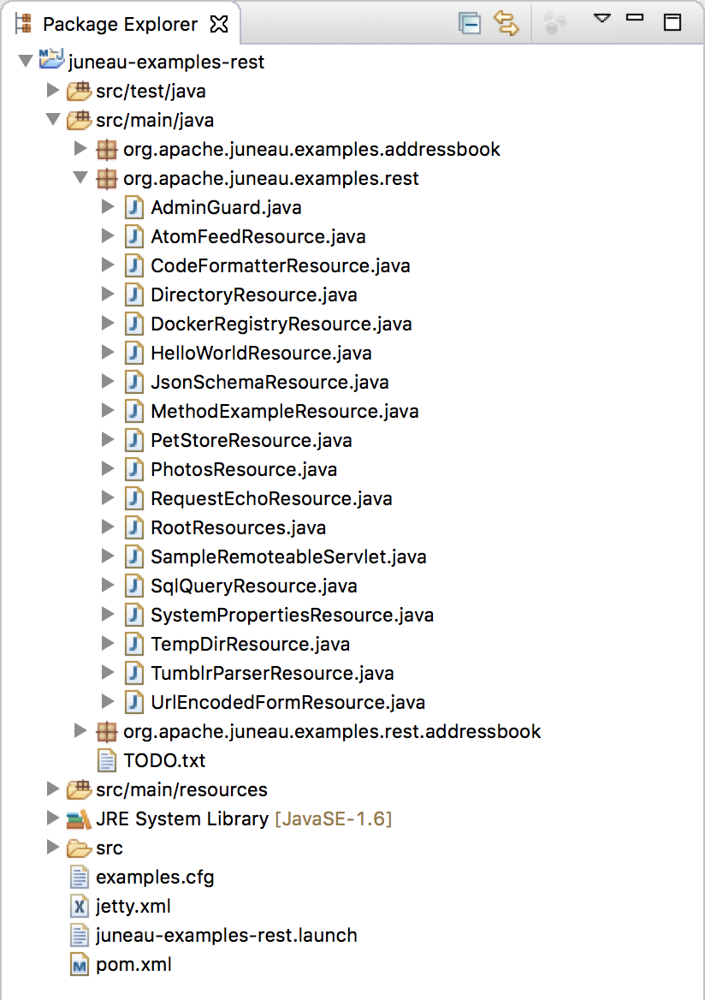
The microservice can be started from the juneau-examples-rest.launch file.
It will start up the microservice on port 10000 which you can then view through a browser:
http://localhost:10000
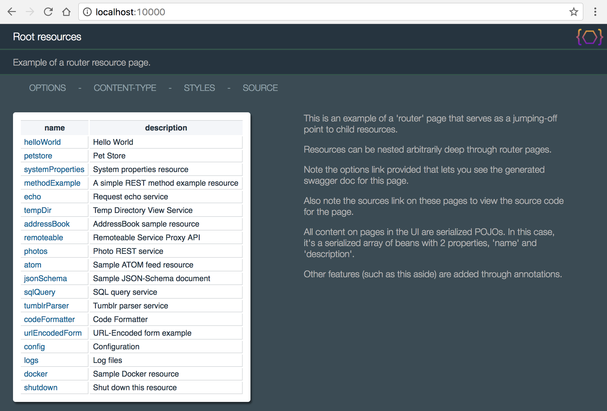
The RootResources class is the main page for the REST microservice.
It serves as the jumping-off point for the other resources.
The class hierarchy for this class is:
-
{@link org.apache.juneau.rest.RestServlet} - Contains all the REST servlet logic.
-
{@link org.apache.juneau.rest.BasicRestServlet} - Defines default serializers and parsers, and OPTIONs page logic.
-
{@link org.apache.juneau.rest.BasicRestServletGroup} - Specialized subclass for grouping other resources.
Pointing a browser to the resource shows the following:
http://localhost:10000

The RootResources class can also be defined as a servlet in a web.xml file:
<web-app version='2.3'>
<servlet>
<servlet-name>RootResources</servlet-name>
<servlet-class>org.apache.juneau.rest.samples.RootResources</servlet-class>
</servlet>
<servlet-mapping>
<servlet-name>RootResources</servlet-name>
<url-pattern>/*</url-pattern>
</servlet-mapping>
</web-app>
The RootResources class consists entirely of annotations:
/**
* Sample REST resource showing how to implement a "router" resource page.
*/
@RestResource(
path="/",
title="Root resources",
description="Example of a router resource page.",
htmldoc=@HtmlDoc(
widgets={
PoweredByApache.class,
ContentTypeMenuItem.class,
StyleMenuItem.class
},
navlinks={
"options: ?method=OPTIONS",
"$W{ContentTypeMenuItem}",
"$W{StyleMenuItem}",
"source: $C{Source/gitHub}/org/apache/juneau/examples/rest/$R{servletClassSimple}.java"
},
aside={
"<div style='max-width:400px' class='text'>",
" <p>This is an example of a 'router' page that serves as a jumping-off point to child resources.</p>",
" <p>Resources can be nested arbitrarily deep through router pages.</p>",
" <p>Note the <span class='link'>options</span> link provided that lets you see the generated swagger doc for this page.</p>",
" <p>Also note the <span class='link'>sources</span> link on these pages to view the source code for the page.</p>",
" <p>All content on pages in the UI are serialized POJOs. In this case, it's a serialized array of beans with 2 properties, 'name' and 'description'.</p>",
" <p>Other features (such as this aside) are added through annotations.</p>",
"</div>"
},
footer="$W{PoweredByApache}"
),
properties={
// For testing purposes, we want to use single quotes in all the serializers so it's easier to do simple
// String comparisons.
// You can apply any of the Serializer/Parser/BeanContext settings this way.
@Property(name=SERIALIZER_quoteChar, value="'")
},
children={
HelloWorldResource.class,
PetStoreResource.class,
SystemPropertiesResource.class,
MethodExampleResource.class,
RequestEchoResource.class,
TempDirResource.class,
AddressBookResource.class,
SampleRemoteInterfaceServlet.class,
PhotosResource.class,
AtomFeedResource.class,
JsonSchemaResource.class,
SqlQueryResource.class,
CodeFormatterResource.class,
UrlEncodedFormResource.class,
ConfigResource.class,
LogsResource.class,
DockerRegistryResource.class,
PredefinedLabelsResource.class,
DebugResource.class,
ShutdownResource.class
}
)
public class RootResources extends BasicRestServletJenaGroup {
// No code!
}
The children annotation defines the child resources of this router resource.
These are resources whose paths are direct decendents to the parent resource.
Child resources must be annotated with the {@link org.apache.juneau.rest.annotation.RestResource#path() @RestResource.path()} annotation to
identify the subpath of the child.
Children CAN extend from {@link org.apache.juneau.rest.BasicRestServlet}, but it is not a requirement.
Child resources can also be defined programmatically by using the
{@link org.apache.juneau.rest.RestContextBuilder#children(Class[])} method.
Note that these router pages can be arbitrarily nested deep.
You can define many levels of router pages for arbitrarily hierarchical REST interfaces.
Let's step back and describe what's going on here:
During servlet initialization of the RootResources object, the toolkit looks for the
@RestResource.children() annotation.
If it finds it, it instantiates instances of each class and recursively performs servlet initialization
on them.
It then associates the child resource with the parent by the name specified by the
@RestResource.path() annotation on the child class.
When a request for the child URL (/helloWorld) is received, the RootResources servlet
gets the request and sees that the URL remainder matches one of its child resources.
It then forwards the request to the child resource for processing.
The request passed to the child resource is the same as if the child resource had been deployed
independently (e.g. path-info, resource-URI, and so forth).
The HelloWorldResource class is a simple resource that prints a "Hello world!" message.
/**
* Sample REST resource that prints out a simple "Hello world!" message.
*/
@RestResource(
title="Hello World",
description="An example of the simplest-possible resource",
path="/helloWorld",
htmldoc=@HtmlDoc(
aside={
"<div style='max-width:400px' class='text'>",
" <p>This page shows a resource that simply response with a 'Hello world!' message</p>",
" <p>The POJO serialized is a simple String.</p>",
"</div>"
}
)
)
public class HelloWorldResource implements BasicRestConfig {
/** GET request handler */
@RestMethod(name=GET, path="/*")
public String sayHello() {
return "Hello world!";
}
}
Notice that in this case we're not extending from {@link org.apache.juneau.rest.RestServlet}.
We are however implementing {@link org.apache.juneau.rest.BasicRestConfig} which is a no-op
interface that defines a default @RestResource annotation with all the serializers, parsers,
and configuration defined on the {@link org.apache.juneau.rest.BasicRestServlet} class.
The only difference between implementing BasicRestConfig and extending from BasicRestServlet
is that the latter provides the following additional features:
- A default OPTIONS method.
- It can be deployed like any servlet.
All other examples in this project extend from BasicRestServlet so that they provide automatic OPTIONS page support.
Pointing a browser to the resource shows the following:
http://localhost:10000/helloWorld

Using the special &Accept=text/json and &plainText=true parameters
allows us to see this page rendered as JSON:
http://localhost:10000/helloWorld?Accept=text/json&plainText=true

The SystemProperties class is a resource that shows off a typical REST design pattern
of GET/PUT/POST/DELETE commands for modifying the JVM system properties.
It demonstrates several capabilities including:
-
Using the {@link org.apache.juneau.rest.annotation.HtmlDoc @HtmlDoc} annotation to customize the HTML view.
-
Defining Swagger documentation through annotations.
-
Using Guards to limit access to certain methods.
-
Creating form entry pages using HTML5 beans.
@RestResource(
path="/systemProperties",
// Title and description that show up on HTML rendition page.
// Also used in Swagger doc.
title="System properties resource",
description="REST interface for performing CRUD operations on system properties.",
htmldoc=@HtmlDoc(
// Widget used for content-type and styles pull-down menus.
widgets={
ContentTypeMenuItem.class,
StyleMenuItem.class
},
// Links on the HTML rendition page.
// "request:/..." URIs are relative to the request URI.
// "servlet:/..." URIs are relative to the servlet URI.
// "$C{...}" variables are pulled from the config file.
navlinks={
"up: request:/..",
"options: servlet:/?method=OPTIONS",
"form: servlet:/formPage",
"$W{ContentTypeMenuItem}",
"$W{StyleMenuItem}",
"source: $C{Source/gitHub}/org/apache/juneau/examples/rest/$R{servletClassSimple}.java"
},
// Custom page text in aside section.
aside={
"<div style='max-width:800px' class='text'>",
" <p>Shows standard GET/PUT/POST/DELETE operations and use of Swagger annotations.</p>",
"</div>"
},
// Custom CSS styles applied to HTML view.
style={
"aside {display:table-caption} ",
"aside p {margin: 0px 20px;}"
}
),
// Properties that get applied to all serializers and parsers.
properties={
// Use single quotes.
@Property(name=SERIALIZER_quoteChar, value="'")
},
// Support GZIP encoding on Accept-Encoding header.
encoders=GzipEncoder.class,
swagger={
"contact:{name:'John Smith',email:'john@smith.com'},",
"license:{name:'Apache 2.0',url:'http://www.apache.org/licenses/LICENSE-2.0.html'},",
"version:'2.0',",
"termsOfService:'You are on your own.',",
"tags:[{name:'Java',description:'Java utility'}],",
"externalDocs:{description:'Home page',url:'http://juneau.apache.org'}"
}
)
public class SystemPropertiesResource extends BasicRestServlet {
@RestMethod(
name=GET, path="/",
summary="Show all system properties",
description="Returns all system properties defined in the JVM.",
swagger={
"parameters:[",
"{name:'sort',in:'query',description:'Sort results alphabetically',default:'false'}",
"],",
"responses:{",
"200: {description:'Returns a map of key/value pairs.'}",
"}"
}
)
public Map getSystemProperties(@Query("sort") boolean sort) throws Throwable {
if (sort)
return new TreeMap(System.getProperties());
return System.getProperties();
}
@RestMethod(
name=GET, path="/{propertyName}",
summary="Get system property",
description="Returns the value of the specified system property.",
swagger={
"parameters:[",
"{name:'propertyName',in:'path',description:'The system property name.'}",
"],",
"responses:{",
"200: {description:'The system property value, or null if not found.'}",
"}"
}
)
public String getSystemProperty(@Path("propertyName") String propertyName) throws Throwable {
return System.getProperty(propertyName);
}
@RestMethod(
name=PUT, path="/{propertyName}",
summary="Replace system property",
description="Sets a new value for the specified system property.",
guards=AdminGuard.class,
swagger={
"parameters:[",
"{name:'propertyName',in:'path',description:'The system property name.'},",
"{in:'body',description:'The new system property value.'}",
"],",
"responses:{",
"302: {headers:{Location:{description:'The root URL of this resource.'}}},",
"403: {description:'User is not an admin.'}",
"}"
}
)
public Redirect setSystemProperty(@Path("propertyName") String propertyName, @Body String value) {
System.setProperty(propertyName, value);
return new Redirect("servlet:/");
}
@RestMethod(
name=POST, path="/",
summary="Add an entire set of system properties",
description="Takes in a map of key/value pairs and creates a set of new system properties.",
guards=AdminGuard.class,
swagger={
"parameters:[",
"{name:'propertyName',in:'path',description:'The system property name.'},",
"{in:'body',description:'The new system property values.',schema:{example:{key1:'val1',key2:123}}}",
"],",
"responses:{",
"302: {headers:{Location:{description:'The root URL of this resource.'}}},",
"403: {description:'User is not an admin.'}",
"}"
}
)
public Redirect setSystemProperties(@Body java.util.Properties newProperties) {
System.setProperties(newProperties);
return new Redirect("servlet:/");
}
@RestMethod(
name=DELETE, path="/{propertyName}",
summary="Delete system property",
description="Deletes the specified system property.",
guards=AdminGuard.class,
swagger={
"parameters:[",
"{name:'propertyName',in:'path',description:'The system property name.'}",
"],",
"responses:{",
"302: {headers:{Location:{description:'The root URL of this resource.'}}},",
"403: {description:'User is not an admin.'}",
"}"
}
)
public Redirect deleteSystemProperty(@Path("propertyName") String propertyName) {
System.clearProperty(propertyName);
return new Redirect("servlet:/");
}
@RestMethod(
name=GET, path="/formPage",
summary="Form entry page",
description="A form post page for setting a single system property value",
guards=AdminGuard.class,
htmldoc=@HtmlDoc(
aside={
"<div class='text'>",
" <p>Shows how HTML5 beans can be used to quickly create arbitrary HTML.</p>",
"</div>"
}
)
)
public Form getFormPage() {
return form().method(POST).action("servlet:/formPagePost").children(
table(
tr(
th("Set system property").colspan(2)
),
tr(
td("Name: "), td(input("text").name("name"))
),
tr(
td("Value: "), td(input("text").name("value"))
)
),
button("submit","Click me!").style("float:right")
);
}
@RestMethod(
name=POST, path="/formPagePost",
description="Accepts a simple form post of a system property name/value pair.",
guards=AdminGuard.class
)
public Redirect formPagePost(@FormData("name") String name, @FormData("value") String value) {
System.setProperty(name, value);
return new Redirect("servlet:/");
}
}
Pointing a browser to the resource shows the following:
http://localhost:10000/systemProperties

Clicking the OPTIONS link shows you the generated Swagger:
http://localhost:10000/systemProperties?method=OPTIONS

Clicking the FORM link shows you the generated form entry page:
http://localhost:10000/systemProperties/formPage
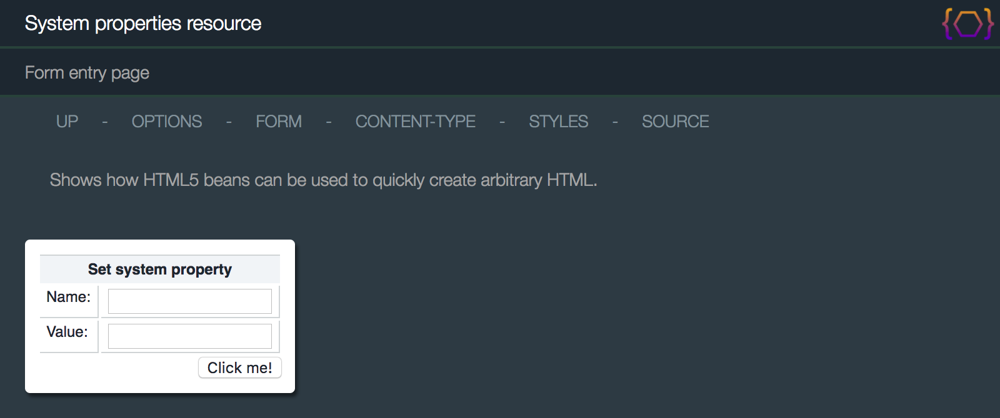
The MethodExampleResource class provides examples of the following:
-
Using the various Java method parameter annotations to retrieve request attributes, parameters, etc.
-
Using the annotation programmatic equivalents on the {@link org.apache.juneau.rest.RestRequest} object.
-
Setting response POJOs by either returning them or using the
{@link org.apache.juneau.rest.RestResponse#setOutput(Object)} method.
The resource is provided to show how various HTTP entities (e.g. parameters, headers) can be accessed
as either annotated Java parameters, or through methods on the RestRequest object.
/**
* Sample REST resource that shows how to define REST methods and OPTIONS pages
*/
@RestResource(
path="/methodExample",
messages="nls/MethodExampleResource",
htmldoc=@HtmlDoc(
navlinks={
"up: servlet:/..",
"options: servlet:/?method=OPTIONS",
"source: $C{Source/gitHub}/org/apache/juneau/examples/rest/$R{servletClassSimple}.java"
},
aside={
"<div style='max-width:400px' class='text'>",
" <p>Shows the different methods for retrieving HTTP query/form-data parameters, headers, and path variables.</p>",
" <p>Each method is functionally equivalent but demonstrate different ways to accomplish the same tasks.</p>",
"</div>"
}
)
)
public class MethodExampleResource extends BasicRestServlet {
private static final UUID SAMPLE_UUID = UUID.fromString("aaaaaaaa-bbbb-cccc-dddd-eeeeeeeeeeee");
private static final String SAMPLE_UUID_STRING = "aaaaaaaa-bbbb-cccc-dddd-eeeeeeeeeeee";
/** Example GET request that redirects to our example method */
@RestMethod(name=GET, path="/")
public ResourceDescription[] doExample() throws Exception {
return new ResourceDescription[] {
new ResourceDescription(
"example1/foo/123/"+SAMPLE_UUID+"/path-remainder?q1=456&q2=bar",
"Example 1 - Annotated method attributes."
),
new ResourceDescription(
"example2/foo/123/"+SAMPLE_UUID+"/path-remainder?q1=456&q2=bar",
"Example 2 - Low-level RestRequest/RestResponse objects."
),
new ResourceDescription(
"example3/foo/123/"+SAMPLE_UUID+"/path-remainder?q1=456&q2=bar",
"Example 3 - Intermediate-level APIs."
)
};
}
/**
* Methodology #1 - GET request using annotated attributes.
* This approach uses annotated parameters for retrieving input.
*/
@RestMethod(name=GET, path="/example1/{p1}/{p2}/{p3}/*")
public String example1(
@Method String method, // HTTP method.
@Path("p1") String p1, // Path variables.
@Path("p2") int p2,
@Path("p3") UUID p3,
@Query("q1") int q1, // Query parameters.
@Query("q2") String q2,
@Query("q3") UUID q3,
@Path("/*") String remainder, // Path remainder after pattern match.
@Header("Accept-Language") String lang, // Headers.
@Header("Accept") String accept,
@Header("DNT") int doNotTrack
) {
// Send back a simple Map response
return new AMap<String,Object>()
.append("method", method)
.append("path-p1", p1)
.append("path-p2", p2)
.append("path-p3", p3)
.append("remainder", remainder)
.append("query-q1", q1)
.append("query-q2", q2)
.append("query-q3", q3)
.append("header-lang", lang)
.append("header-accept", accept)
.append("header-doNotTrack", doNotTrack);
}
/**
* Methodology #2 - GET request using methods on RestRequest and RestResponse.
* This approach uses low-level request/response objects to perform the same as above.
*/
@RestMethod(name=GET, path="/example2/{p1}/{p2}/{p3}/*")
public void example2(
RestRequest req, // A direct subclass of HttpServletRequest.
RestResponse res // A direct subclass of HttpServletResponse.
) {
// HTTP method.
String method = req.getMethod();
// Path variables.
RequestPathMatch path = req.getPathMatch();
String p1 = path.get("p1", String.class);
int p2 = path.get("p2", int.class);
UUID p3 = path.get("p3", UUID.class);
// Query parameters.
RequestQuery query = req.getQuery();
int q1 = query.get("q1", 0, int.class);
String q2 = query.get("q2", String.class);
UUID q3 = query.get("q3", UUID.class);
// Path remainder after pattern match.
String remainder = req.getPathMatch().getRemainder();
// Headers.
String lang = req.getHeader("Accept-Language");
String accept = req.getHeader("Accept");
int doNotTrack = req.getHeaders().get("DNT", int.class);
// Send back a simple Map response
Map<String,Object> m = new AMap<String,Object>()
.append("method", method)
.append("path-p1", p1)
.append("path-p2", p2)
.append("path-p3", p3)
.append("remainder", remainder)
.append("query-q1", q1)
.append("query-q2", q2)
.append("query-q3", q3)
.append("header-lang", lang)
.append("header-accept", accept)
.append("header-doNotTrack", doNotTrack);
res.setOutput(m); // Use setOutput(Object) just to be different.
}
/**
* Methodology #3 - GET request using special objects.
* This approach uses intermediate-level APIs.
* The framework recognizes the parameter types and knows how to resolve them.
*/
@RestMethod(name=GET, path="/example3/{p1}/{p2}/{p3}/*")
public String example3(
HttpMethod method, // HTTP method.
RequestPathMatch path, // Path variables.
RequestQuery query, // Query parameters.
RequestHeaders headers, // Headers.
AcceptLanguage lang, // Specific header classes.
Accept accept
) {
// Path variables.
String p1 = path.get("p1", String.class);
int p2 = path.get("p2", int.class);
UUID p3 = path.get("p3", UUID.class);
// Query parameters.
int q1 = query.get("q1", 0, int.class);
String q2 = query.get("q2", String.class);
UUID q3 = query.get("q3", UUID.class);
// Path remainder after pattern match.
String remainder = path.getRemainder();
// Headers.
int doNotTrack = headers.get("DNT", int.class);
// Send back a simple Map response
return new AMap<String,Object>()
.append("method", method)
.append("path-p1", p1)
.append("path-p2", p2)
.append("path-p3", p3)
.append("remainder", remainder)
.append("query-q1", q1)
.append("query-q2", q2)
.append("query-q3", q3)
.append("header-lang", lang)
.append("header-accept", accept)
.append("header-doNotTrack", doNotTrack);
}
}
The class consists of 4 methods:
-
doExample()
The root page.
-
example1()
Shows how to use the following annotations:
- {@link org.apache.juneau.http.annotation.Path @Path}
- {@link org.apache.juneau.http.annotation.Query @Query}
- {@link org.apache.juneau.http.annotation.Header @Header}
- {@link org.apache.juneau.rest.annotation.Method @Method}
Method returns a POJO to be serialized as the output.
-
example2()
Identical to doGetExample1() but shows how to use the
{@link org.apache.juneau.rest.RestRequest} and {@link org.apache.juneau.rest.RestResponse} objects:
- {@link org.apache.juneau.rest.RestRequest#getPathMatch()}
- {@link org.apache.juneau.rest.RestRequest#getQuery()}
- {@link org.apache.juneau.rest.RestRequest#getFormData()}
- {@link org.apache.juneau.rest.RestRequest#getHeaders()}
- {@link org.apache.juneau.rest.RestRequest#getMethod()}
- {@link org.apache.juneau.rest.RequestPath#getRemainder()}
Method sets the POJO to be serialized using the {@link org.apache.juneau.rest.RestResponse#setOutput(Object)} method.
-
example3()
Identical to doGetExample1() but uses automatically resolved parameters based on class type.
Juneau automatically recognizes specific class types such as common header types and automatically
resolves them to objects for you.
See {@doc juneau-rest-server.RestMethod @RestMethod} for the list of all automatically support parameter types, and
{@link org.apache.juneau.rest.annotation.RestResource#paramResolvers() @RestResource.paramResolvers()}
for defining your own custom parameter type resolvers.
There's a lot going on in this method.
Notice how you're able to access URL attributes, parameters, headers, and content as parsed POJOs.
All the input parsing is already done by the toolkit.
You simply work with the resulting POJOs.
As you might notice, using annotations typically results in fewer lines of code and are therefore usually
preferred over the API approach, but both are equally valid.
When you visit this page through the router page, you can see the top level page:
http://localhost:10000/methodExample

Clicking the first link on the page results in this page:
http://localhost:10000/methodExample/example1/foo/123/aaaaaaaa-bbbb-cccc-dddd-eeeeeeeeeeee/path-remainder?q1=456&q2=bar

Notice how the conversion to POJOs is automatically done for us, even for non-standard POJOs such as UUID.
Self-documenting design through Swagger OPTIONS pages
One of the main features of Juneau is that it produces OPTIONS pages for self-documenting design (i.e. REST
interfaces that document themselves).
Much of the information populated on the OPTIONS page is determined through reflection.
This basic information can be augmented with information defined through:
-
Annotations - An example of this was shown in the
SystemPropertiesResource example above.
Localized strings can be pulled from resource bundles using the $L localization variable.
-
Resource bundle properties - See
MethodExampleResource.properties in the source.
-
Swagger JSON files with the same name and location as the resource class (e.g.
MethodExampleResource.json).
Localized versions are defined by appending the locale to the file name (e.g.
MethodExampleResource_ja_JP.json);
OPTIONS pages are simply serialized {@link org.apache.juneau.dto.swagger.Swagger} DTO beans.
Localized versions of these beans are retrieved using the
{@link org.apache.juneau.rest.RestRequest#getSwagger()} method.
To define an OPTIONS request handler, the {@link org.apache.juneau.rest.BasicRestServlet} class defines
the following Java method:
/** OPTIONS request handler */
@RestMethod(name=OPTIONS, path="/*")
public Swagger getOptions(RestRequest req) {
return req.getSwagger();
}
The OPTIONS link that you see on the HTML version of the page is created
through a property defined by the {@link org.apache.juneau.html.HtmlDocSerializer} class
and specified on the resource class annotation:
@RestResource(
htmldoc=@HtmlDoc(
navlinks={
"options: servlet:/?method=OPTIONS"
}
)
)
This simply creates a link that's the same URL as the resource URL appended with "?method=OPTIONS",
which is a shorthand way that the framework provides of defining overloaded GET requests.
Links using relative or absolute URLs can be defined this way.
Clicking the options link on the page presents you with information about how to use this resource:
http://localhost:10000/methodExample/?method=OPTIONS

This page (like any other) can also be rendered in JSON or XML by using the &Accept URL parameter.
The UrlEncodedFormResource class provides examples of the following:
-
How to use form entry beans to process form POSTs.
-
How to use the {@link org.apache.juneau.rest.RestRequest#getClasspathReaderResource(String)} method to
serve up static files with embedded string variables.
The class is shown below:
/**
* Sample REST resource for loading URL-Encoded form posts into POJOs.
*/
@RestResource(
path="/urlEncodedForm",
messages="nls/UrlEncodedFormResource"
title="URL-Encoded form example",
htmldoc=@HtmlDoc(
widgets={
StyleMenuItem.class
},
navlinks={
"up: request:/..",
"$W{StyleMenuItem}",
"source: $C{Source/gitHub}/org/apache/juneau/examples/rest/$R{servletClassSimple}.java"
},
aside={
"<div style='min-width:200px' class='text'>",
" <p>Shows how to process a FORM POST body into a bean using the <code>@Body</code> annotation.</p>",
" <p>Submitting the form post will simply echo the bean back on the response.</p>",
"</div>"
}
)
)
public class UrlEncodedFormResource extends BasicRestServlet {
/** GET request handler */
@RestMethod(
name=GET,
path="/",
htmldoc=@HtmlDoc(
script={
"// Load results from IFrame into this document.",
"function loadResults(buff) {",
" var doc = buff.contentDocument || buff.contentWindow.document;",
" var buffBody = doc.getElementById('data');",
" document.getElementById('results').innerHTML = buffBody.innerHTML;",
"}"
}
)
)
public Div doGet(RestRequest req) {
return div(
form().id("form").action("servlet:/").method(POST).target("buff").children(
table(
tr(
th(req.getMessage("aString")),
td(input().name("aString").type("text"))
),
tr(
th(req.getMessage("aNumber")),
td(input().name("aNumber").type("number"))
),
tr(
th(req.getMessage("aDate")),
td(input().name("aDate").type("datetime"), " (ISO8601, e.g. ", code("2001-07-04T15:30:45Z"), " )")
),
tr(
td().colspan(2).style("text-align:right").children(
button("submit", req.getMessage("submit"))
)
)
)
),
br(),
div().id("results"),
iframe().name("buff").style("display:none").onload("parent.loadResults(this)")
);
}
/** POST request handler */
@RestMethod(name=POST, path="/")
public Object doPost(@Body FormInputBean input) throws Exception {
// Just mirror back the request
return input;
}
public static class FormInputBean {
public String aString;
public int aNumber;
@Swap(CalendarSwap.ISO8601DT.class)
public Calendar aDate;
}
}
The localized messages are pulled from the resource bundle:
#--------------------------------------------------------------------------------
# UrlEncodedFormResource labels
#--------------------------------------------------------------------------------
aString = A String:
aNumber = A Number:
aDate = A Date:
submit = submit
The $R variables are request string variables.
In this case, $R{resourceTitle} and $R{resourceDescription} resolve to the values returned by
{@link org.apache.juneau.rest.RestRequest#getResourceTitle()} and
{@link org.apache.juneau.rest.RestRequest#getResourceDescription()}.
Pointing a browser to the resource shows the following:
http://localhost:10000/urlEncodedForm

Entering some values and clicking submit causes the form bean to be populated
and returned back as a POJO response:
http://localhost:10000/urlEncodedForm

Additional Information
-
{@link org.apache.juneau.rest.RestContextBuilder#vars(Class[])}
- Servlet and request variables.
-
{@link org.apache.juneau.rest.RestCallHandler#getSessionObjects(RestRequest)}
- Var resolver session objects.
The RequestEchoResource class shows how existing complex POJOs can be serialized to a variety of
content types.
The example simply takes the incoming HttpServletRequest object and serializes it.
It provides examples of the following:
-
Using the {@link org.apache.juneau.rest.annotation.RestResource#properties() @RestResource.properties()}
annotation to set serializer properties.
-
Using the {@link org.apache.juneau.rest.annotation.RestResource#beanFilters() @RestResource.beanFilters()}
and {@link org.apache.juneau.rest.annotation.RestResource#pojoSwaps() @RestResource.pojoSwaps()}
annotations to set serializer transforms.
-
Simply passing in an {@link org.apache.juneau.ObjectMap} parameter on the Java method.
This object map contains the modifiable properties on the request.
The class is shown below:
/**
* Sample REST resource for echoing HttpServletRequests back to the browser
*/
@RestResource(
path="/echo",
title="Request echo service",
description="Echos the current HttpServletRequest object back to the browser.",
htmldoc=@HtmlDoc(
widgets={
ContentTypeMenuItem.class,
StyleMenuItem.class
},
navlinks={
"up: request:/..",
"options: servlet:/?method=OPTIONS",
"$W{ContentTypeMenuItem}",
"$W{StyleMenuItem}",
"source: $C{Source/gitHub}/org/apache/juneau/examples/rest/$R{servletClassSimple}.java"
},
aside={
"<div style='max-width:400px;min-width:200px' class='text'>",
" <p>Shows how even arbitrary POJOs such as <code>HttpServletRequest</code> can be serialized by the framework.</p>",
" <p>Also shows how to specify serializer properties, filters, and swaps at the servlet level to control how POJOs are serialized.</p>",
" <p>Also provides an example of how to use the Traversable and Queryable APIs.</p>",
"</div>"
}
),
properties={
@Property(name=BEANTRAVERSE_maxDepth, value="5"),
@Property(name=BEANTRAVERSE_detectRecursions, value="true")
},
beanFilters={
// Interpret these as their parent classes, not subclasses
HttpServletRequest.class, HttpSession.class, ServletContext.class,
},
pojoSwaps={
// Add a special filter for Enumerations
EnumerationSwap.class
}
)
public class RequestEchoResource extends BasicRestServlet {
/** GET request handler */
@RestMethod(name=GET, path="/*", converters={Queryable.class,Traversable.class})
public HttpServletRequest doGet(RestRequest req, RestResponse res, ObjectMap properties) {
// Set the HtmlDocSerializer title programmatically.
res.setPageTitle(req.getPathInfo());
// Just echo the request back as the response.
return req;
}
}
Again, there's a lot going on here that's new that requires some explanation.
The HttpServletRequest object is not a tree-shaped POJO model.
Instead, it contains lots of loops that can cause stack overflow errors if you were to try to serialize it as-is.
Also, you want to look only at the properties defined on the HttpServletRequest class,
not implementation-specific (i.e. WAS or Jetty) fields which can get messy.
The {@link org.apache.juneau.rest.annotation.RestResource#properties() @RestResource.properties()},
{@link org.apache.juneau.rest.annotation.RestResource#beanFilters() @RestResopurce.beanFilters()}, and
{@link org.apache.juneau.rest.annotation.RestResource#pojoSwaps() @RestResopurce.pojoSwaps()}
annotations are used to set behavior properties on the resource's underlying bean context, serializers,
and parsers.
You're using them here to modify the behavior of serialization for all content types.
The annotations are functionally equivalent to using the {@link org.apache.juneau.rest.RestContextBuilder} class,
as follows:
/** Override the default rest serializers to add some transforms through an INIT hook*/
@RestHook(INIT)
public void init(RestContextBuilder builder) throws Exception {
// Add bean filters for the HttpServletRequest, HttpSession, and ServletContext objects
// so that you don't show vendor-specific properties on subclasses.
// Add Enumeration POJO swap to be able to render the contents of Enumeration properties.
// The max depth and detect recursion options prevent any possible runaway serializations.
// This shouldn't happen, but future JEE APIs may introduce deep hierarchies or loops.
builder
.beanFilters(HttpServletRequest.class, HttpSession.class, ServletContext.class)
.pojoSwaps(EnumerationSwap.class)
.setProperty(SERIALIZER_maxDepth, 5)
.setProperty(SERIALIZER_detectRecursions, true)
.pageLinks("{...}");
}
Note how the annotations generally require fewer lines of code.
Pointing a browser to the resource shows the following:
http://localhost:10000/echo

This gives you an idea of what kinds of POJO models can be serialized, since you are serializing a regular
old HttpServletRequest object.
The AddressBookResource class is a proof-of-concept class that shows a true RESTful API using the
Juneau REST toolkit.
It provides examples of the following:
-
How to create RESTful interfaces using only POJOs.
-
How to use the {@link org.apache.juneau.xml.annotation.Xml @Xml} and
{@link org.apache.juneau.xml.annotation.XmlSchema @XmlSchema} annotations to provide XML namespaces
and alter how beans are handled by the XML serializer.
-
How to use the {@link org.apache.juneau.jena.annotation.Rdf @Rdf} and
{@link org.apache.juneau.xml.annotation.XmlSchema @RdfSchema} annotations to provide XML namespaces
and alter how beans are handled by the Jena serializers.
-
How to use the {@link org.apache.juneau.annotation.BeanProperty @BeanProperty} annotation
to alter how bean properties are handled by the serializers.
-
How to use the {@link org.apache.juneau.rest.annotation.RestMethod#name() RestMethod.name()} annotation
to create overloaded methods beyond the standard GET/PUT/POST/DELETE.
-
How to augment data in the OPTIONS page.
-
How to use the {@link org.apache.juneau.rest.client.RestClient} API to interact with the REST resource
using the same POJOs used to create the server-side API.
-
How to interact with the REST resource using only a browser.
-
Using the {@link org.apache.juneau.rest.converters.Traversable} converter to drill down into POJO models.
-
Using the {@link org.apache.juneau.rest.converters.Queryable} converter to provide search/view/sort
functionality against POJOs.
-
Using the {@link org.apache.juneau.rest.converters.Introspectable} converter to invoke methods on POJOs.
-
Using proxy interfaces.
Pointing a browser to the resource shows the following:
http://localhost:10000/addressBook/people

The code is straightforward, consisting of the following classes:
-
package-info.java - Used to define XML namespaces for POJOs in this package.
-
IAddressBook - An interface describing the address book.
-
AddressBook - A data structure consisting of a list of
Persons.
-
Person, Address - In-memory representations of people and addresses.
-
CreatePerson, CreateAddress - POJOs for creating and updating people and address through the
REST interface.
-
AddressBookResource - The REST resource class.
-
For the sake of brevity, bean properties are defined as public fields instead of the normal
getters/setters.
Also, the examples are not the most efficient design and are not thread safe.
The package-info.java file is used to define XML and RDF namespaces on beans and properties in
this package.
Here you define a default XML and RDF namespaces and URL mappings for namespace short-names used
throughout this package.
It should be noted that these features are entirely optional, and there are often several ways of
defining these namespaces.
// XML and RDF namespaces used in this package
@Xml(ns="ab",
namespaces={
@XmlNs(name="ab", uri="http://www.apache.org/addressBook/"),
@XmlNs(name="per", uri="http://www.apache.org/person/"),
@XmlNs(name="addr", uri="http://www.apache.org/address/"),
@XmlNs(name="mail", uri="http://www.apache.org/mail/")
}
)
@Rdf(ns="ab",
namespaces={
@RdfNs(name="ab", uri="http://www.apache.org/addressBook/"),
@RdfNs(name="per", uri="http://www.apache.org/person/"),
@RdfNs(name="addr", uri="http://www.apache.org/address/"),
@RdfNs(name="mail", uri="http://www.apache.org/mail/")
}
)
package org.apache.juneau.examples.addressBook;
import org.apache.juneau.xml.annotation.*;
Technically since the RDF and XML namespaces used are the same, we didn't need to define them separately
since the {@link org.apache.juneau.jena.RdfCommon#RDF_useXmlNamespaces} setting is enabled by default.
We keep them separate here though to show that they can be defined separately.
Our address book uses the following interface:
/**
* Interface used to help illustrate proxy interfaces.
* See {@link SampleRemoteInterfaceServlet}.
*/
public interface IAddressBook {
/** Return all people in the address book */
List<Person> getPeople();
/** Return all addresses in the address book */
List<Address> getAddresses();
/** Create a person in this address book */
Person createPerson(CreatePerson cp) throws Exception;
/** Find a person by id */
Person findPerson(int id);
/** Find an address by id */
Address findAddress(int id);
/** Find a person by address id */
Person findPersonWithAddress(int id);
/** Remove a person by id */
Person removePerson(int id);
}
Notes:
-
You interface an interface for our address book so that you can later
use it to demonstrate the proxy interface support.
The AddressBook class is our address book.
It maintains a list of Person objects with some additional convenience methods:
/** Address book bean */
@Bean(typeName="addressBook")
public class AddressBook extends LinkedList<Person> implements IAddressBook {
/** Bean constructor - Needed for instantiating on client side */
public AddressBook () {}
/** Normal constructor - Needed for instantiating on server side */
public AddressBook (URI uri) {...}
// Fields and methods omitted.
}
Notes:
-
The
@Bean(typeName="addressBook") annotation tells the toolkit that
when serialized as XML, the element name is <addressBook>.
Without this annotation, the element would revert to the generalized <array> tag.
-
The separate constructors are implementation specific and are needed because you're going to be
using this class in two ways, since you'll be demonstrating the client code as well as the server
code, and it eliminates having to define separate client-side and server-side POJOs:
- The normal constructor is used to programmatically create this object in the REST servlet code.
- The no-arg constructor is used by the Juneau parsers to construct this object in our client
side code.
The Person bean is defined as follows:
/** Person bean */
@Xml(prefix="per")
@Rdf(prefix="per")
@Bean(typeName="person")
public class Person {
// Bean properties
@Rdf(beanUri=true)
public URI uri;
public URI addressBookUri;
public String id;
public String name;
@BeanProperty(swap=CalendarSwap.Medium.class)
public Calendar birthDate;
public LinkedList<Address> addresses = new LinkedList<>();
/** Bean constructor - Needed for instantiating on server side */
public Person() {}
/** Normal constructor - Needed for instantiating on client side */
public Person(URI addressBookUri, CreatePerson cp) throws Exception {...}
/** Extra read-only bean property */
public int getAge() {
return new GregorianCalendar().get(Calendar.YEAR) - birthDate.get(Calendar.YEAR);
}
/** Convenience method - Add an address for this person */
public Address createAddress(CreateAddress ca) throws Exception {...}
/** Extra method (for method invocation example) */
public String sayHello(String toPerson, int age) {
return name + " says hello to " + toPerson + " who is " + age + " years old";
}
}
Notes:
-
The prefix="per" annotations override the default "ab" namespace defined on the package.
It applies to this class and all properties of this class.
-
The
@Rdf(beanUri=true) annotation identifies the uri property
as the resource URI for this resource.
This property has special meaning for the RDF serializer.
The RDF serializer uses this property for the value of the rdf:resource attribute.
-
The
@BeanProperty(swap=CalendarSwap.Medium.class) annotation causes
the date field to be serialized in the format "MM dd, yyyy".
This could have also been specified globally on the resource level through the
{@link org.apache.juneau.rest.annotation.RestResource#properties} annotation.
The Address bean is defined as follows:
/** Address bean */
@Xml(prefix="addr")
@Rdf(prefix="addr")
@Bean(typeName="address")
public class Address {
// Bean properties
@Rdf(beanUri=true)
public URI uri;
public URI personUri;
public int id;
@Xml(prefix="mail")
@Rdf(prefix="mail")
public String street, city, state;
@Xml(prefix="mail")
@Rdf(prefix="mail")
public int zip;
public boolean isCurrent;
/** Bean constructor - Needed for instantiating on client side */
public Address() {}
/** Normal constructor - Needed for instantiating on server side */
public Address(URI addressBookUri, URI personUri, CreateAddress ca) throws Exception {...}
}
Notes:
-
This class shows how the namespace can be overridden at the property level through the
@Xml(prefix="mail") annotation.
The CreatePerson bean is used as the input data for creating a person.
/** Person creator bean */
@Xml(prefix="per")
@Rdf(prefix="addr")
@Bean(typeName="person")
public class CreatePerson {
// Bean properties
public String name;
@BeanProperty(swap=CalendarSwap.Medium.class)
public Calendar birthDate;
public LinkedList<CreateAddress> addresses;
/** Bean constructor - Needed for instantiating on server side */
public CreatePerson() {}
/** Normal constructor - Needed for instantiating on client side */
public CreatePerson(String name, Calendar birthDate, CreateAddress...addresses) {...}
}
The CreateAddress bean is used as the input data for creating an address.
/** Address creator bean */
@Xml(ns="addr")
@Rdf(ns="addr")
@Bean(typeName="address")
public class CreateAddress {
// Bean properties
@Xml(prefix="mail")
@Rdf(prefix="mail")
public String street, city, state;
@Xml(prefix="mail")
@Rdf(prefix="mail")
public int zip;
public boolean isCurrent;
/** Bean constructor - Needed for instantiating on server side */
public CreateAddress() {}
/** Normal constructor - Needed for instantiating on client side */
public CreateAddress(String street, String city, String state, int zip, boolean isCurrent) {...}
}
The AddressBookResource class is our REST resource class.
/**
* Proof-of-concept resource that shows off the capabilities of working with POJO resources.
* Consists of an in-memory address book repository.
*/
@RestResource(
path="/addressBook",
messages=""nls/AddressBookResource",
htmldoc=@HtmlDoc(
// Widgets for $W variables.
widgets={
PoweredByJuneau.class,
ContentTypeMenuItem.class,
QueryMenuItem.class,
StyleMenuItem.class
},
// Links on the HTML rendition page.
// "request:/..." URIs are relative to the request URI.
// "servlet:/..." URIs are relative to the servlet URI.
// "$C{...}" variables are pulled from the config file.
navlinks={
"up: request:/..",
"options: servlet:/?method=OPTIONS",
"$W{ContentTypeMenuItem}",
"$W{StyleMenuItem}",
"source: $C{Source/gitHub}/org/apache/juneau/examples/rest/addressbook/$R{servletClassSimple}.java"
},
// Arbitrary HTML message on the left side of the page.
aside={
"<div style='max-width:400px;min-width:200px'>",
" <p>Proof-of-concept resource that shows off the capabilities of working with POJO resources.</p>",
" <p>Provides examples of: </p>",
" <ul>",
" <li>XML and RDF namespaces",
" <li>Swagger documentation",
" <li>Widgets",
" </ul>",
"</div>"
},
// Juneau icon added to footer.
footer="$W{PoweredByJuneau}"
),
// Allow INIT as a method parameter.
allowedMethodParams="*",
// Properties that get applied to all serializers and parsers.
properties={
// Use single quotes.
@Property(name=SERIALIZER_quoteChar, value="'"),
// Enable XML namespaces.
@Property(name=XML_enableNamespaces, value="true"),
// Add namespace URIs to root node.
@Property(name=XML_addNamespaceUrisToRoot, value="true"),
// Make RDF/XML readable.
@Property(name=RDF_rdfxml_tab, value="5"),
// Make RDF parsable by adding a root node.
@Property(name=RDF_addRootProperty, value="true"),
// Make URIs absolute so that we can easily reference them on the client side.
@Property(name=SERIALIZER_uriResolution, value="ABSOLUTE"),
// Make the anchor text on URLs be just the path relative to the servlet.
@Property(name=HTML_uriAnchorText, value="SERVLET_RELATIVE")
},
// Support GZIP encoding on Accept-Encoding header.
encoders=GzipEncoder.class,
// Swagger info.
swagger= {
"contact:{name:'John Smith',email:'john@smith.com'},",
"license:{name:'Apache 2.0',url:'http://www.apache.org/licenses/LICENSE-2.0.html'},",
"version:'2.0',",
"termsOfService:'You're on your own.',",
"tags:[{name:'Java',description:'Java utility',externalDocs:{description:'Home page',url:'http://juneau.apache.org'}}],",
"externalDocs:{description:'Home page',url:'http://juneau.apache.org'}"
}
)
public class AddressBookResource extends BasicRestServletJena {
// The in-memory address book
private AddressBook addressBook;
@Override /* Servlet */
public void init() {
try {
// Create the address book
addressBook = new AddressBook(java.net.URI.create("servlet:/"));
// Initialize it with some contents.
addressBook.init();
} catch (Exception e) {
// Gets converted to 500
throw new RuntimeException(e);
}
}
/**
* [GET /]
* Get root page.
*/
@RestMethod(name=GET, path="/",
converters=Queryable.class
)
public Link[] getRoot() throws Exception {
return new Link[] {
new Link("people", "people"),
new Link("addresses", "addresses")
};
}
/**
* [GET /people/*]
* Get all people in the address book.
* Traversable transforming enabled to allow nodes in returned POJO tree to be addressed.
* Introspectable transforming enabled to allow public methods on the returned object to be invoked.
*/
@RestMethod(name=GET, path="/people/*",
converters={Traversable.class,Queryable.class,Introspectable.class}
)
public AddressBook getAllPeople() throws Exception {
return addressBook;
}
/**
* [GET /people/{id}/*]
* Get a single person by ID.
* Traversable transforming enabled to allow nodes in returned POJO tree to be addressed.
* Introspectable transforming enabled to allow public methods on the returned object to be invoked.
*/
@RestMethod(name=GET, path="/people/{id}/*",
converters={Traversable.class,Queryable.class,Introspectable.class}
)
public Person getPerson(@Path("id") int id) throws Exception {
return findPerson(id);
}
/**
* [GET /addresses/*]
* Get all addresses in the address book.
*/
@RestMethod(name=GET, path="/addresses/*",
converters={Traversable.class,Queryable.class}
)
public List<Address> getAllAddresses() throws Exception {
return addressBook.getAddresses();
}
/**
* [GET /addresses/{id}/*]
* Get a single address by ID.
*/
@RestMethod(name=GET, path="/addresses/{id}/*",
converters={Traversable.class,Queryable.class}
)
public Address getAddress(@Path("id") int id) throws Exception {
return findAddress(id);
}
/**
* [POST /people]
* Create a new Person bean.
*/
@RestMethod(name=POST, path="/people",
guards=AdminGuard.class
)
public Redirect createPerson(@Body CreatePerson cp) throws Exception {
Person p = addressBook.createPerson(cp);
return new Redirect("people/{0}", p.id);
}
/**
* [POST /people/{id}/addresses]
* Create a new Address bean.
*/
@RestMethod(name=POST, path="/people/{id}/addresses",
guards=AdminGuard.class
)
public Redirect createAddress(@Path("id") int id, @Body CreateAddress ca) throws Exception {
Person p = findPerson(id);
Address a = p.createAddress(ca);
return new Redirect("addresses/{0}", a.id);
}
/**
* [DELETE /people/{id}]
* Delete a Person bean.
*/
@RestMethod(name=DELETE, path="/people/{id}",
guards=AdminGuard.class,
)
public String deletePerson(@Path("id") int id) throws Exception {
addressBook.removePerson(id);
return "DELETE successful";
}
/**
* [DELETE /addresses/{id}]
* Delete an Address bean.
*/
@RestMethod(name=DELETE, path="/addresses/{id}",
guards=AdminGuard.class
)
public String deleteAddress(@Path("id") int addressId) throws Exception {
Person p = addressBook.findPersonWithAddress(addressId);
if (p == null)
throw new RestException(SC_NOT_FOUND, "Person not found");
Address a = findAddress(addressId);
p.addresses.remove(a);
return "DELETE successful";
}
/**
* [PUT /people/{id}/*]
* Change property on Person bean.
*/
@RestMethod(name=PUT, path="/people/{id}/*",
guards=AdminGuard.class
)
public String updatePerson(RestRequest req, @Path("id") int id, @Path("/*")
String remainder) throws Exception {
try {
Person p = findPerson(id);
PojoRest r = new PojoRest(p);
ClassMeta<?> cm = r.getClassMeta(remainder);
Object in = req.getBody().asType(cm);
r.put(remainder, in);
return "PUT successful";
} catch (Exception e) {
throw new RestException(SC_BAD_REQUEST, "PUT unsuccessful").initCause(e);
}
}
/**
* [PUT /addresses/{id}/*]
* Change property on Address bean.
*/
@RestMethod(name=PUT, path="/addresses/{id}/*",
guards=AdminGuard.class
)
public String updateAddress(RestRequest req, @Path("id") int id,
@Path("/*") String remainder) throws Exception {
try {
Address a = findAddress(id);
PojoRest r = new PojoRest(a);
ClassMeta<?> cm = r.getClassMeta(remainder);
Object in = req.getBody().asType(cm);
r.put(remainder, in);
return "PUT successful";
} catch (Exception e) {
throw new RestException(SC_BAD_REQUEST, "PUT unsuccessful").initCause(e);
}
}
/**
* [INIT /]
* Reinitialize this resource.
*/
@RestMethod(name="INIT", path="/",
guards=AdminGuard.class
)
public String doInit() throws Exception {
init();
return "OK";
}
/**
* [GET /cognos]
* Get data in Cognos/XML format
*/
@RestMethod(name=GET, path="/cognos")
public DataSet getCognosData() throws Exception {
// The Cognos metadata
Column[] items = {
new Column("name", "xs:String", 255),
new Column("age", "xs:int"),
new Column("numAddresses", "xs:int")
.addPojoSwap(
new PojoSwap<Person,Integer>() {
@Override /* PojoSwap */
public Integer swap(BeanSession session, Person p) {
return p.addresses.size();
}
}
)
};
return new DataSet(items, addressBook, this.getBeanContext());
}
/**
* [PROXY /*]
* Return a proxy interface to IAddressBook.
*/
@RestMethod(name=PROXY, path="/proxy/*")
public IAddressBook getProxy() {
return addressBook;
}
/** Convenience method - Find a person by ID */
private Person findPerson(int id) throws RestException {
Person p = addressBook.findPerson(id);
if (p == null)
throw new RestException(SC_NOT_FOUND, "Person not found");
return p;
}
/** Convenience method - Find an address by ID */
private Address findAddress(int id) throws RestException {
Address a = addressBook.findAddress(id);
if (a == null)
throw new RestException(SC_NOT_FOUND, "Address not found");
return a;
}
}
Notes:
-
The @RestResource.messages() annotation identifies
org/apache/juneau/samples/addressbook/nls/AddressBookResource.properties as the resource
bundle for localized message for this class.
-
You are setting XML_enableNamespaces to true to enable XML namespaces.
By default, XML namespace support is disabled per
{@link org.apache.juneau.xml.XmlSerializer#XML_enableNamespaces}, so you have to explicitly
enable it on our serializers.
-
The XML_autoDetectNamespaces setting is needed to get the XML serializer to add xmlns
attributes to the root elements.
This causes the XML serializer to scan the POJO objects for namespaces in order to populate the
root element.
There are other ways to do this, such as explicitly specifying the XML_defaultNamespaceUris
setting at either the resource or method level, which might be preferred in high-performance
environments.
However, XML_autoDetectNamespaces produces the simplest code for our example.
-
The updatePerson() and updateAddress() methods use a guard to only allow
administrators access.
For the sample code, the guard does nothing. It's up to the implementer to decide how to restrict
access.
-
The updatePerson() and updateAddress() methods use the
{@link org.apache.juneau.utils.PojoRest} class
to locate and update individual nodes in a POJO tree using the path remainder on the request.
-
The doInit() method shows an example of an overloaded method using the
@RestMethod(name=INIT) annotation.
-
The getProxy() method shows how to access the AddressBook bean through a proxy interface.
The OPTIONS page uses the servlet resource bundle to specify the labels so that they're globalizable.
title = AddressBook sample resource
description = Proof-of-concept resource that shows off the capabilities of working with POJO resources
getRoot.summary = Get root page
getRoot.description = Jumping off page for top-level Person and Address beans.
doInit.summary = Reinitialize this resource
doInit.description = Resets the address book to the original contents.
doInit.res.200.description = Returns the string "OK"
getAllPeople.summary = Get all people in the address book
getAllPeople.res.200.description = Returns a serialized List<Person>
getAllPeople.res.200.examples = {'text/json':"[\n\t{\n\t\turi:'http://hostname/addressBook/person/1',\n\t\taddressBookUri:'http://localhost/addressBook',\n\t\tid:1,\n\t\tname:'John Smith',\n\t\tbirthDate:'Jan 1, 2000',\n\t\taddresses:[\n\t\t\t{\n\t\t\t\turi:'http://localhost/addressBook/addresses/1',\n\t\t\t\tpersonUri:'http://localhost/addressBook/people/1',\n\t\t\t\tid:1,\n\t\t\t\tstreet:'101 Main St',\n\t\t\t\tcity:'Anywhere',\n\t\t\t\tstate:'NY',\n\t\t\t\tzip:12345,\n\t\t\t\tisCurrent:true\n\t\t\t}\n\t\t]\n\t}\n]"}
getPerson.summary = Get a single person by ID
getPerson.req.path.id.description = Person ID
getPerson.req.path.id.type = integer
getPerson.res.200.description = Returns a serialized Person bean
getPerson.res.200.examples = {'text/json':"{\n\turi:'http://hostname/addressBook/person/1',\n\taddressBookUri:'http://localhost/addressBook',\n\tid:1,\n\tname:'John Smith',\n\tbirthDate:'Jan 1, 2000',\n\taddresses:[\n\t\t{\n\t\t\turi:'http://localhost/addressBook/addresses/1',\n\t\t\tpersonUri:'http://localhost/addressBook/people/1',\n\t\t\tid:1,\n\t\t\tstreet:'101 Main St',\n\t\t\tcity:'Anywhere',\n\t\t\tstate:'NY',\n\t\t\tzip:12345,\n\t\t\tisCurrent:true\n\t\t}\n\t]\n\}"}
getPerson.res.404.description = Person ID not found
getAllAddresses.summary = Get all addresses in the address book
getAllAddresses.res.200.description = Returns a serialized List<Address>
getAllAddresses.res.200.examples = {'text/json':"[\n\t{\n\t\turi:'http://localhost/addressBook/addresses/1',\n\t\tpersonUri:'http://localhost/addressBook/people/1',\n\t\tid:1,\n\t\tstreet:'101 Main St',\n\t\tcity:'Anywhere',\n\t\tstate:'NY',\n\t\tzip:12345,\n\t\tisCurrent:true\n\t}\n]"}
getAddress.summary = Get a single address by ID
getAddress.req.path.id.description = Address ID
getAddress.req.path.id.type = integer
getAddress.res.200.description = Returns a serialized Address bean
getAddress.res.200.examples = {'text/json':"{\n\turi:'http://localhost/addressBook/addresses/1',\n\tpersonUri:'http://localhost/addressBook/people/1',\n\tid:1,\n\tstreet:'101 Main St',\n\tcity:'Anywhere',\n\tstate:'NY',\n\tzip:12345,\n\tisCurrent:true\n}"}
getAddress.res.404.description = Address ID not found
createPerson.summary = Create a new Person bean
createPerson.req.body.description = Serialized CreatePerson bean
createPerson.req.body.schema = {example:"{\n\tname:'John Smith',\n\tbirthDate:'Jan 1, 2000',\n\taddresses:[\n\t\t{\n\t\t\tstreet:'101 Main St',\n\t\t\tcity:'Anywhere',\n\t\t\tstate:'NY',\n\t\t\tzip:12345,\n\t\t\tisCurrent:true\n\t\t}\n\t]\n\}"}
createPerson.res.307.header.Location.description = URL of new person
createAddress.summary = Create a new Address bean
createAddress.req.path.id.description = Person ID
createAddress.req.path.id.type = integer
createAddress.req.body.schema = {example:"{\n\tstreet:'101 Main St',\n\tcity:'Anywhere',\n\tstate:'NY',\n\tzip:12345,\n\tisCurrent:true\n}"}
createAddress.res.307.header.Location.description = URL of new address
deletePerson.summary = Delete a Person bean
deletePerson.req.path.id.description = Person ID
deletePerson.req.path.id.type = integer
deletePerson.res.200.description = Returns the string "DELETE successful"
deletePerson.res.404.description = Person ID not found
deleteAddress.summary = Delete an Address bean
deleteAddress.req.path.id.description = Address ID
deleteAddress.res.200.description = Returns the string "DELETE successful"
deleteAddress.res.404.description = Address ID not found
updatePerson.summary = Change property on Person bean
updatePerson.req.path.id.description = Person ID
updatePerson.req.path.id.type = integer
updatePerson.req.body.description = Any object matching the field
updatePerson.res.200.description = Returns the string "PUT successful"
updatePerson.res.400.description = Invalid object type used
updatePerson.res.404.description = Person ID not found
updateAddress.summary = Change property on Address bean
updateAddress.req.path.id.description = Address ID
updateAddress.req.path.id.type = integer
updateAddress.req.body.description = Any object matching the field
updateAddress.res.200.description = Returns the string "PUT successful"
updateAddress.res.400.description = Invalid object type used
updateAddress.res.404.description = Address ID not foundv
getOptions.summary = View resource options
getCognosData.summary = Get data in Cognos/XML format
getCognosData.res.200.description = Returns a serialized DataSet
otherNotes = GZip support enabled. Public methods can be invoked by using the &Method URL parameter. 'text/cognos+xml' support available under root resource only
Pointing a browser to the resource shows the results of running the getRoot() method:
http://localhost:10000/addressBook

Clicking the people link shows you the result of running the getAllPeople() method:
http://localhost:10000/addressBook/people

Notice how the URI properties automatically became hyperlinks.
Also notice how the dates are formatted as readable strings.
This was from the transform you added to the Calendar property.
Let's see what the output looks like in other formats:
http://localhost:10000/addressBook/people?Accept=text/json&plainText=true
http://localhost:10000/addressBook/people?Accept=text/json+simple&plainText=true
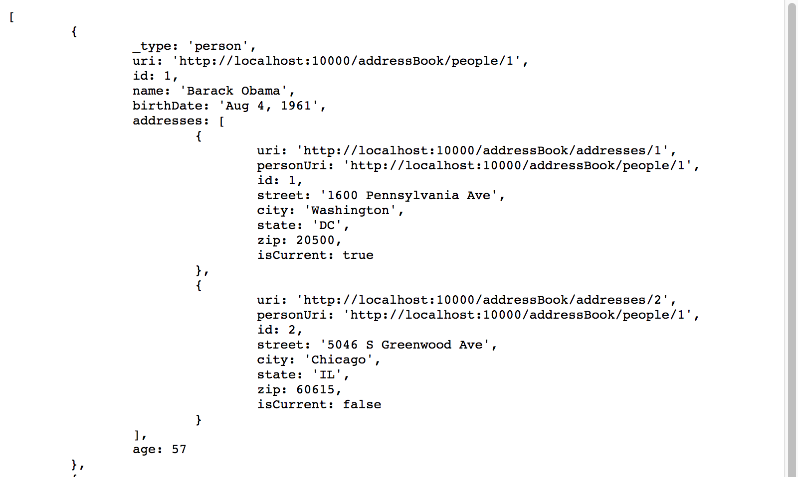
http://localhost:10000/addressBook/people?Accept=text/xml&plainText=true
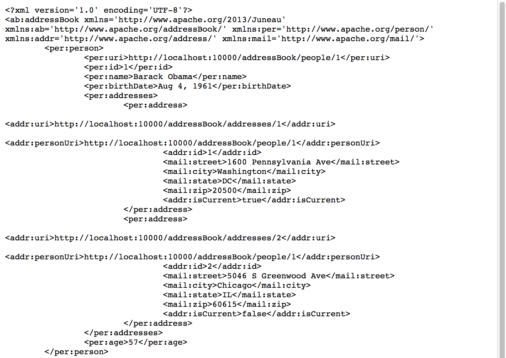
Notice how our XML_enableNamespaces and XML_autoDetectNamespaces settings result
in namespaces being used.
Also notice how the @BeanProperty(uri=true) annotations caused the
uri properties to become XML attributes instead of elements.
http://localhost:10000/addressBook/people?Accept=text/xml+rdf+abbrev&plainText=true
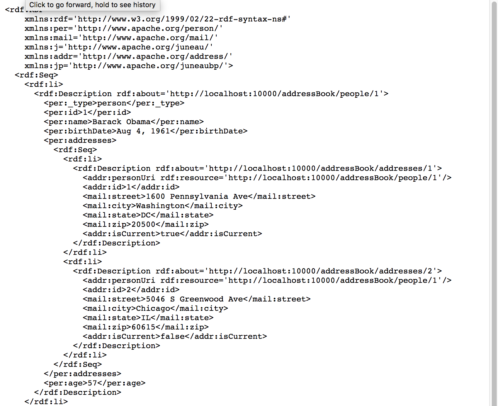
Notice how the @BeanProperty(uri=true) annotations are used to identify
values for rdf:about values.
Also notice how URI properties are serialized as rdf:resource attributes.
Now lets look at the schema outputs that can be rendered that show information about the POJO classes
themselves.
http://localhost:10000/addressBook/people?Accept=text/html+schema
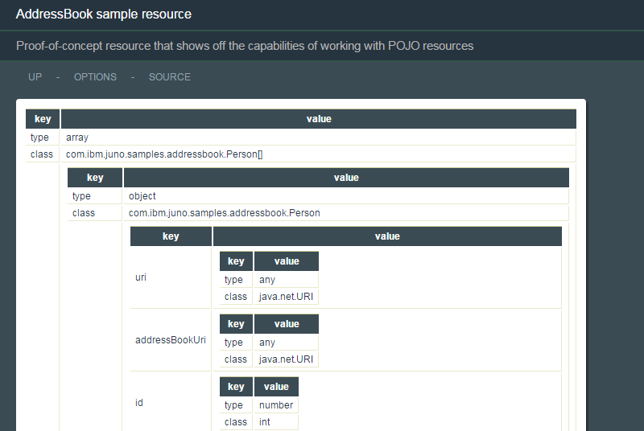
http://localhost:10000/addressBook/people?Accept=text/json+schema&plainText=true
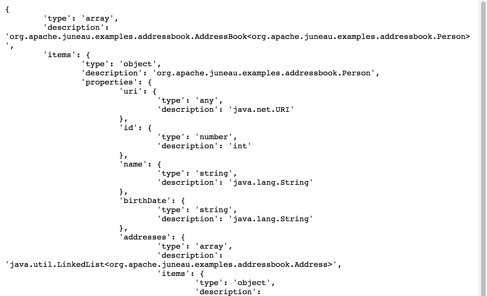
http://localhost:10000/addressBook/people?Accept=text/xml+schema&plainText=true
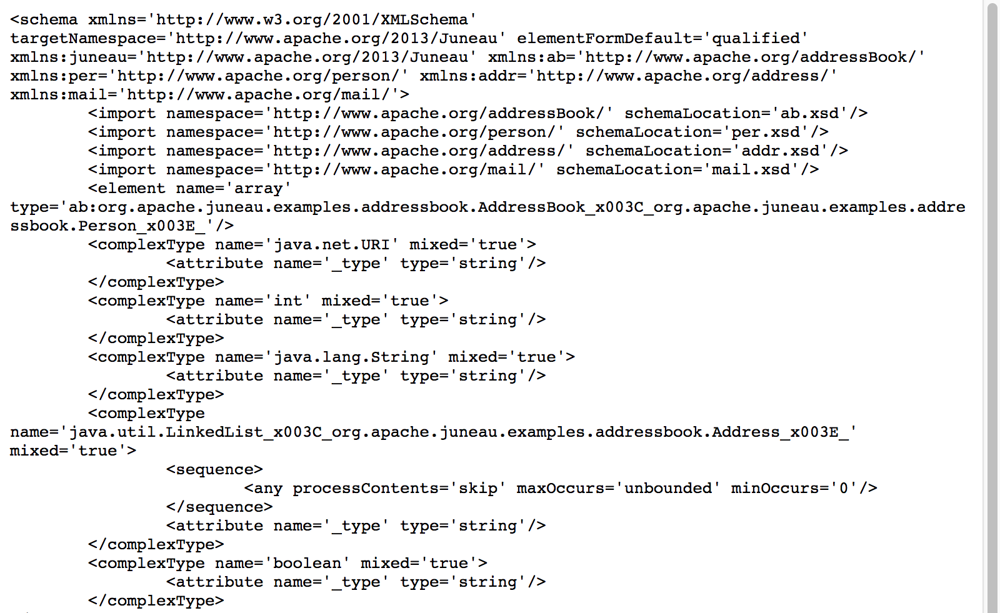
Now let's see what else you can do.
Clicking on the first personUri link executes the getPerson() method, which renders a
serialized Person object:
http://localhost:10000/addressBook/people/1

Clicking on the OPTIONS link on the page shows you the Swagger doc generated from our annotations and
resource bundle properties:
http://localhost:10000/addressBook/?method=OPTIONS

Because you added the Traversable converter to the getPerson method, you can also address
child nodes in the POJO model through path remainders:
http://localhost:10000/addressBook/people/1/addresses/0

http://localhost:10000/addressBook/people/1/addresses/0/street

The Queryable converter on the getAllPeople() method allows us to perform search/view/sort
functions against the data structure before serialization:
http://localhost:10000/addressBook/people?v=name,addresses

http://localhost:10000/addressBook/people?s=name=B*

http://localhost:10000/addressBook/people?s=age>=60

The Introspectable converter on the getPerson method allows us to invoke public methods
on the addressed POJO (in this case, public methods on the String class):
http://localhost:10000/addressBook/people/1/name?invokeMethod=substring(int,int)&invokeArgs=[1,5]

The ClientTest class is provided to demonstrate how POJOs can be serialized and parsed
through the REST interface using the RestClient class.
You'll notice that the class is a stand-alone executable that can be invoked as a plain Java process.
/**
* Sample client code for interacting with AddressBookResource
*/
public class ClientTest {
public static void main(String[] args) {
try {
System.out.println("Running client test...");
// Create a client to handle XML requests and responses.
RestClient client = RestClient.create().build();
RestClient xmlClient = RestClient.create().serializer(XmlSerializer.DEFAULT)
.parser(XmlParser.DEFAULT).build();
String root = "http://localhost:10000/addressBook";
// Get the current contents of the address book
AddressBook ab = client.doGet(root + "/people").getResponse(AddressBook.class);
System.out.println("Number of entries = " + ab.getPeople().size());
// Same, but use XML as the protocol both ways
ab = xmlClient.doGet(root + "/people").getResponse(AddressBook.class);
System.out.println("Number of entries = " + ab.getPeople().size());
// Delete the existing entries
for (Person p : ab.getPeople()) {
String r = client.doDelete(p.uri).getResponse(String.class);
System.out.println("Deleted person " + p.name + ", response = " + r);
}
// Make sure they're gone
ab = client.doGet(root + "/people").getResponse(AddressBook.class);
System.out.println("Number of entries = " + ab.getPeople().size());
// Add 1st person again
CreatePerson cp = new CreatePerson(
"Barack Obama",
toCalendar("Aug 4, 1961"),
new CreateAddress("1600 Pennsylvania Ave", "Washington", "DC", 20500, true),
new CreateAddress("5046 S Greenwood Ave", "Chicago", "IL", 60615, false)
);
Person p = client.doPost(root + "/people", cp).getResponse(Person.class);
System.out.println("Created person " + p.name + ", uri = " + p.uri);
// Add 2nd person again, but add addresses separately
cp = new CreatePerson(
"George Walker Bush",
toCalendar("Jul 6, 1946")
);
p = client.doPost(root + "/people", cp).getResponse(Person.class);
System.out.println("Created person " + p.name + ", uri = " + p.uri);
// Add addresses to 2nd person
CreateAddress ca = new CreateAddress("43 Prairie Chapel Rd", "Crawford", "TX", 76638, true);
Address a = client.doPost(p.uri + "/addresses", ca).getResponse(Address.class);
System.out.println("Created address " + a.uri);
ca = new CreateAddress("1600 Pennsylvania Ave", "Washington", "DC", 20500, false);
a = client.doPost(p.uri + "/addresses", ca).getResponse(Address.class);
System.out.println("Created address " + a.uri);
// Find 1st person, and change name
Person[] pp = client.doGet(root + "/people?s=name=Barack+Obama").getResponse(Person[].class);
String r = client.doPut(pp[0].uri + "/name", "Barack Hussein Obama").getResponse(String.class);
System.out.println("Changed name, response = " + r);
p = client.doGet(pp[0].uri).getResponse(Person.class);
System.out.println("New name = " + p.name);
} catch (Exception e) {
e.printStackTrace();
}
}
// Utility method
public static Calendar toCalendar(String birthDate) throws Exception {
Calendar c = new GregorianCalendar();
c.setTime(DateFormat.getDateInstance(DateFormat.MEDIUM).parse(birthDate));
return c;
}
}
The output from running this code is the following:
Running client test...
Number of entries = 2
Deleted person Barack Obama, response = DELETE successful
Deleted person George Walker Bush, response = DELETE successful
Number of entries = 0
Created person Barack Obama, uri = http://localhost:10000/addressBook/people/3
Created person George Walker Bush, uri = http://localhost:10000/addressBook/people/4
Created address http://localhost:10000/addressBook/addresses/7
Created address http://localhost:10000/addressBook/addresses/8
Changed name, response = PUT successful
New name = Barack Hussein Obama
The Juneau architecture is designed to make it easy to debug REST resources using nothing more than a
browser.
The same actions done programmatically in the last section can also be done using URLs.
By default, you can override the HTTP Method and Content through GET parameters, as shown below:
// Delete the existing entries
http://localhost:10000/addressBook/people/1?method=DELETE
http://localhost:10000/addressBook/people/2?method=DELETE
// Add 1st person again
http://localhost:10000/addressBook/people?method=POST&content=(name=Barack+Obama,birthDate='Aug+4,+1961',addresses=@((street=1600+Pennsylvania+Ave,city=Washington,state=DC,zip=20500,isCurrent=true),(street=5046+S+Greenwood+Ave,city=Chicago,state=IL,zip=60615,isCurrent=false)))
// Add 2nd person again
http://localhost:10000/addressBook/people?method=POST&content=(name=George+Walker+Bush,birthDate='Jul+6,+1946')
http://localhost:10000/addressBook/people/4/addresses?method=POST&content=(street=43+Prairie+Chapel+Rd,city=Crawford,state=TX,zip=76638,isCurrent=true)
http://localhost:10000/addressBook/people/4/addresses?method=POST&content=(street=1600+Pennsylvania+Ave,city=Washington,state=DC,zip=20500,isCurrent=false)
// Change name of 1st person
http://localhost:10000/addressBook/people/3/name?method=PUT&content=Barack+Hussein+Obama
The ability to overload methods is enabled through the
RestResource.allowMethodParam()
The SampleRemoteInterfaceServlet class shows examples of the following:
-
Extending the {@link org.apache.juneau.rest.remote.RemoteInterfaceServlet} class to create a proxy
service.
-
Using the {@link org.apache.juneau.rest.client.RestClient} class to create remote interfaces.
See Also:
- {@doc juneau-rest-server.RemoteInterfaces.ServerSide}
The TempDirResource class shows examples of the following:
-
Extending the {@link org.apache.juneau.microservice.resources.DirectoryResource} class.
-
Using the Apache ServletFileUpload class to handle multi-part form posts.
-
Using a system property string variable.
-
Using {@link org.apache.juneau.rest.RestMatcher RestMatchers}.
Pointing a browser to the resource shows the following:
http://localhost:10000/tempDir

Pointing a browser to the upload link shows a form entry page:
http://localhost:10000/tempDir/upload

Submitting a file redirects to the top-level page:
http://localhost:10000/tempDir

/**
* Sample resource that extends DirectoryResource to open up the temp directory as a REST resource.
*/
@RestResource(
path="/tempDir",
title="Temp Directory View Service",
description="View and download files in the '$R{rootDir}' directory.",
htmldoc=@HtmlDoc(
widgets={
ContentTypeMenuItem.class,
StyleMenuItem.class
},
navlinks={
"up: request:/..",
"options: servlet:/?method=OPTIONS",
"upload: servlet:/upload",
"$W{ContentTypeMenuItem}",
"$W{StyleMenuItem}",
"source: $C{Source/gitHub}/org/apache/juneau/examples/rest/$R{servletClassSimple}.java"
},
aside={
"<div style='max-width:400px' class='text'>",
" <p>Shows how to use the predefined DirectoryResource class.</p>",
" <p>Also shows how to use HTML5 beans to create a form entry page.</p>",
"</div>"
}
),
properties={
@Property(name="rootDir", value="$C{TempDirResource/dir,$S{java.io.tmpdir}}"),
@Property(name="allowViews", value="true"),
@Property(name="allowDeletes", value="true"),
@Property(name="allowPuts", value="false")
}
)
public class TempDirResource extends DirectoryResource {
@Override /* DirectoryResource */
@RestHook(INIT)
public void init(RestContextBuilder b) throws Exception {
super.init(b);
File rootDir = getRootDir();
if (! rootDir.exists()) {
rootDir.mkdirs();
// Make some dummy files.
FileUtils.touch(new File(rootDir, "A.txt"));
FileUtils.touch(new File(rootDir, "B.txt"));
FileUtils.touch(new File(rootDir, "C.txt"));
}
}
/**
* [GET /upload] - Display the form entry page for uploading a file to the temp directory.
*/
@RestMethod(name=GET, path="/upload")
public Form getUploadForm() {
return
form().id("form").action("servlet:/upload").method(POST).enctype("multipart/form-data")
.children(
input().name("contents").type("file"),
button("submit", "Submit")
)
;
}
/**
* [POST /upload] - Upload a file as a multipart form post.
* Shows how to use the Apache Commons ServletFileUpload class for handling multi-part form posts.
*/
@RestMethod(
name=POST,
path="/upload",
matchers=TempDirResource.MultipartFormDataMatcher.class
)
public Redirect uploadFile(RestRequest req) throws Exception {
ServletFileUpload upload = new ServletFileUpload();
FileItemIterator iter = upload.getItemIterator(req);
while (iter.hasNext()) {
FileItemStream item = iter.next();
if (item.getFieldName().equals("contents")) {
File f = new File(getRootDir(), item.getName());
IOPipe.create(item.openStream(), new FileOutputStream(f)).closeOut().run();
}
}
return new Redirect(); // Redirect to the servlet root.
}
/** Causes a 404 if POST isn't multipart/form-data */
public static class MultipartFormDataMatcher extends RestMatcher {
@Override /* RestMatcher */
public boolean matches(RestRequest req) {
String contentType = req.getContentType();
return contentType != null && contentType.startsWith("multipart/form-data");
}
}
}
The AtomFeedResource class shows examples of the following:
-
Using the {@doc org.apache.juneau.dto.atom#TOC ATOM Feed DTO} API.
Pointing a browser to the resource shows the following:
http://localhost:10000/atom

True ATOM feeds require using an Accept:text/xml header:
http://localhost:10000/atom?Accept=text/xml&plainText=true

Other languages, such as JSON are also supported:
http://localhost:10000/atom?Accept=text/json&plainText=true

/**
* Sample resource that shows how to generate ATOM feeds.
*/
@RestResource(
path="/atom",
title="Sample ATOM feed resource",
description="Sample resource that shows how to render ATOM feeds",
htmldoc=@HtmlDoc(
widgets={
ContentTypeMenuItem.class,
StyleMenuItem.class
},
navlinks={
"up: request:/..",
"options: servlet:/?method=OPTIONS",
"$W{ContentTypeMenuItem}",
"$W{StyleMenuItem}",
"source: $C{Source/gitHub}/org/apache/juneau/examples/rest/$R{servletClassSimple}.java"
}
),
properties={
@Property(name=SERIALIZER_quoteChar, value="'"),
@Property(name=RDF_rdfxml_tab, value="5"),
@Property(name=RDF_addRootProperty, value="true")
},
encoders=GzipEncoder.class
)
public class AtomFeedResource extends BasicRestServletJena {
private Feed feed; // The root resource object
@Override /* Servlet */
public void init() {
try {
feed =
feed("tag:juneau.sample.com,2013:1", "Juneau ATOM specification", "2013-05-08T12:29:29Z")
.subtitle(text("html").text("A <em>lot</em> of effort went into making this effortless"))
.links(
link("alternate", "text/html", "http://www.sample.com/").hreflang("en"),
link("self", "application/atom+xml", "http://www.sample.com/feed.atom")
)
.generator(
generator("Juneau").uri("http://juneau.apache.org/").version("1.0")
)
.entries(
entry("tag:juneau.sample.com,2013:1.2345", "Juneau ATOM specification snapshot", "2013-05-08T12:29:29Z")
.links(
link("alternate", "text/html", "http://www.sample.com/2012/05/08/juneau.atom"),
link("enclosure", "audio/mpeg", "http://www.sample.com/audio/juneau_podcast.mp3").length(1337)
)
.published("2013-05-08T12:29:29Z")
.authors(
person("James Bognar").uri(new URI("http://www.sample.com/")).email("jamesbognar@apache.org")
)
.contributors(
person("Barry M. Caceres")
)
.content(
content("xhtml")
.lang("en")
.base("http://www.apache.org/")
.text("<div><p>[Update: Juneau supports ATOM.]</p></div>")
)
);
} catch (Exception e) {
throw new RuntimeException(e);
}
}
/**
* GET request handler
*/
@RestMethod(name=GET, path="/")
public Feed getFeed() throws Exception {
return feed;
}
/**
* PUT request handler.
* Replaces the feed with the specified content, and then mirrors it as the response.
*/
@RestMethod(name=PUT, path="/")
public Feed setFeed(@Body Feed feed) throws Exception {
this.feed = feed;
return feed;
}
}
The DockerRegistryResource class shows examples of the following:
-
Accessing a docker registry REST API as POJOs using {@link org.apache.juneau.rest.client.RestClient}.
-
Using the {@link org.apache.juneau.rest.helper.ResourceDescription} class to implement a top-level
'router' page.
-
Using the {@link org.apache.juneau.rest.RestContext#getConfig()} method to access external
configuration file values.
Pointing a browser to the resource shows the following:
http://localhost:10000/docker

/**
* Sample resource that shows how to mirror query results from a Docker registry.
*/
@RestResource(
path="/docker",
title="Sample Docker resource",
description="Docker registry explorer",
htmldoc=@HtmlDoc(
navlinks={
"up: request:/..",
"options: servlet:/?method=OPTIONS",
"source: $C{Source/gitHub}/org/apache/juneau/examples/rest/$R{servletClassSimple}.java"
},
// Pull in aside contents from file.
aside="$F{resources/DockerRegistryResourceAside.html}"
)
)
public class DockerRegistryResource extends BasicRestServlet {
// Get registry URL from examples.cfg file.
private String registryUrl;
private RestClient rc;
/**
* Initializes the registry URL and rest client.
*
* @param builder The resource config.
* @throws Exception
*/
@RestHook(INIT)
public void initRegistry(RestContextBuilder builder) throws Exception {
Config cf = builder.getConfig();
registryUrl = cf.getString("DockerRegistry/url");
rc = RestClient.create().build();
}
@Override /* Servlet */
public synchronized void destroy() {
rc.closeQuietly();
super.destroy();
}
/** [GET /] - Show child resources. */
@RestMethod(name=GET, path="/")
public ResourceDescription[] getChildren(RestRequest req) {
return new ResourceDescription[] {
new ResourceDescription("search", "Search Registry")
};
}
/**
* PUT request handler.
* Replaces the feed with the specified content, and then mirrors it as the response.
*/
@RestMethod(name=GET, path="/search")
public QueryResults query(@Query("q") String q) throws Exception {
String url = registryUrl + "/search" + (q == null ? "" : "?q=" + q);
synchronized(rc) {
return rc.doGet(url).getResponse(QueryResults.class);
}
}
public static class QueryResults {
public int num_results;
public String query;
public List<DockerImage> results;
}
public static class DockerImage {
public String name, description;
}
}
In this example, we're pulling the aside message from an external file:
<div style='min-width:200px' class='text'>
<p>REST API for searching Docker registries.</p>
<p>To use, you must first specify the Docker registry URL in the <code>[Docker]</code> section of the config file.</p>
</div>
The Docker registry URL is specified in the examples.cfg file:
#================================================================================
# DockerRegistryResource properties
#================================================================================
[DockerRegistry]
url = http://clmdocker02.ratl.swg.usma.apache.org:5000/v1
The PhotosResource class shows examples of the following:
-
How to define custom serializers and parsers at the method level.
In this case, you define a serializer and parser to handle images.
The resource consists of a simple registry of images with integer IDs.
http://localhost:10000/photos

It is initialized with a single entry, which can be accessed through a GET request.
http://localhost:10000/photos/cat

/**
* Sample resource that allows images to be uploaded and retrieved.
*/
@RestResource(
path="/photos",
messages="nls/PhotosResource",
title="Photo REST service",
description="Sample resource that allows images to be uploaded and retrieved.",
htmldoc=@HtmlDoc(
navlinks={
"up: request:/..",
"options: servlet:/?method=OPTIONS",
"source: $C{Source/gitHub}/org/apache/juneau/examples/rest/$R{servletClassSimple}.java"
},
aside={
"<div style='max-width:400px;min-width:200px' class='text'>",
" <p>Shows an example of using custom serializers and parsers to create REST interfaces over binary resources.</p>",
" <p>In this case, our resources are marshalled jpeg and png binary streams and are stored in an in-memory 'database' (also known as a <code>TreeMap</code>).</p>",
"</div>"
}
),
properties={
// Make the anchor text on URLs be just the path relative to the servlet.
@Property(name=HTML_uriAnchorText, value="SERVLET_RELATIVE")
}
)
public class PhotosResource extends BasicRestServlet {
// Our cache of photos
private Map<String,Photo> photos = new TreeMap<>();
@Override /* Servlet */
public void init() {
try (InputStream is = getClass().getResourceAsStream("averycutecat.jpg")) {
BufferedImage image = ImageIO.read(is);
Photo photo = new Photo("cat", image);
photos.put(photo.id, photo);
} catch (IOException e) {
throw new RuntimeException(e);
}
}
/** Bean class for storing photos */
public static class Photo {
private String id;
BufferedImage image;
Photo(String id, BufferedImage image) {
this.id = id;
this.image = image;
}
public URI getURI() throws URISyntaxException {
return new URI("servlet:/" + id);
}
}
/** GET request handler for list of all photos */
@RestMethod(name=GET, path="/", summary="Show the list of all currently loaded photos")
public Collection<Photo> getAllPhotos() throws Exception {
return photos.values();
}
/** GET request handler for single photo */
@RestMethod(name=GET, path="/{id}", serializers=ImageSerializer.class, summary="Get a photo by ID")
public BufferedImage getPhoto(@Path("id") String id) throws Exception {
Photo p = photos.get(id);
if (p == null)
throw new RestException(SC_NOT_FOUND, "Photo not found");
return p.image;
}
/** PUT request handler */
@RestMethod(name=PUT, path="/{id}", parsers=ImageParser.class, summary="Add or overwrite a photo")
public String addPhoto(@Path("id") String id, @Body BufferedImage image) throws Exception {
photos.put(id, new Photo(id, image));
return "OK";
}
/** POST request handler */
@RestMethod(name=POST, path="/", parsers=ImageParser.class, summary="Add a photo")
public Photo setPhoto(@Body BufferedImage image) throws Exception {
Photo p = new Photo(UUID.randomUUID().toString(), image);
photos.put(p.id, p);
return p;
}
/** DELETE request handler */
@RestMethod(name=DELETE, path="/{id}", summary="Delete a photo by ID")
public String deletePhoto(@Path("id") String id) throws Exception {
Photo p = photos.remove(id);
if (p == null)
throw new RestException(SC_NOT_FOUND, "Photo not found");
return "OK";
}
/** Serializer for converting images to byte streams */
public static class ImageSerializer extends OutputStreamSerializer {
/**
* Constructor.
* @param ps The property store containing all the settings for this object.
*/
public ImageSerializer(PropertyStore ps) {
super(ps, null, "image/png", "image/jpeg");
}
@Override /* Serializer */
public OutputStreamSerializerSession createSession(SerializerSessionArgs args) {
return new OutputStreamSerializerSession(args) {
@Override /* SerializerSession */
protected void doSerialize(SerializerPipe out, Object o) throws Exception {
RenderedImage image = (RenderedImage)o;
String mediaType = getProperty("mediaType", String.class, (String)null);
ImageIO.write(image, mediaType.substring(mediaType.indexOf('/')+1), out.getOutputStream());
}
};
}
}
/** Parser for converting byte streams to images */
public static class ImageParser extends InputStreamParser {
/**
* Constructor.
* @param ps The property store containing all the settings for this object.
*/
public ImageParser(PropertyStore ps) {
super(ps, "image/png", "image/jpeg");
}
@Override /* Parser */
public InputStreamParserSession createSession(final ParserSessionArgs args) {
return new InputStreamParserSession(args) {
@Override /* ParserSession */
@SuppressWarnings("unchecked")
protected <T> T doParse(ParserPipe pipe, ClassMeta<T> type) throws Exception {
return (T)ImageIO.read(pipe.getInputStream());
}
};
}
}
}
The JsonSchemaResource class shows examples of the following:
-
Using the {@link org.apache.juneau.dto.jsonschema JSON Schema DTO} API.
The resource consists of a pre-initialized {@link org.apache.juneau.dto.jsonschema.JsonSchema} object.
Pointing a browser to the resource shows the following:
http://localhost:10000/jsonSchema

For true JSON-Schema, you need to specify the header Accept: text/json:
http://localhost:10000/jsonSchema?Accept=text/json&plainText=true

/**
* Sample resource that shows how to serialize JSON-Schema documents.
*/
@RestResource(
path="/jsonSchema",
messages="nls/JsonSchemaResource",
title="Sample JSON-Schema document",
description="Sample resource that shows how to generate JSON-Schema documents",
htmldoc=@HtmlDoc(
widgets={
ContentTypeMenuItem.class,
StyleMenuItem.class
},
navlinks={
"up: request:/..",
"options: servlet:/?method=OPTIONS",
"$W{ContentTypeMenuItem}",
"$W{StyleMenuItem}",
"source: $C{Source/gitHub}/org/apache/juneau/examples/rest/$R{servletClassSimple}.java"
},
aside={
"<div style='min-width:200px' class='text'>",
" <p>Shows how to produce JSON-Schema documents in a variety of languages using the JSON-Schema DTOs.</p>",
"</div>"
}
)
)
public class JsonSchemaResource extends BasicRestServletJena {
private static final long serialVersionUID = 1L;
private JsonSchema schema; // The schema document
@Override /* Servlet */
public void init() {
try {
schema = new JsonSchema()
.setId("http://example.com/sample-schema#")
.setSchemaVersionUri("http://json-schema.org/draft-04/schema#")
.setTitle("Example Schema")
.setType(JsonType.OBJECT)
.addProperties(
new JsonSchemaProperty("firstName", JsonType.STRING),
new JsonSchemaProperty("lastName", JsonType.STRING),
new JsonSchemaProperty("age", JsonType.INTEGER)
.setDescription("Age in years")
.setMinimum(0)
)
.addRequired("firstName", "lastName");
} catch (Exception e) {
throw new RuntimeException(e);
}
}
/** GET request handler */
@RestMethod(name=GET, path="/")
public JsonSchema getSchema() throws Exception {
return schema;
}
/**
* PUT request handler.
* Replaces the schema document with the specified content, and then mirrors it as the response.
*/
@RestMethod(name=PUT, path="/")
public JsonSchema setSchema(@Body JsonSchema schema) throws Exception {
this.schema = schema;
return schema;
}
}
The SqlQueryResource class shows examples of the following:
-
Using the {@link org.apache.juneau.dto.ResultSetList} to serialize database result sets.
-
Using {@link org.apache.juneau.rest.RestContext#getConfig()} to access config properties.
-
Using form entry beans.
The example uses embedded Derby to create a database whose name is defined in the external configuration
files.
Pointing a browser to the resource shows the following:
http://localhost:10000/sqlQuery

Running a query results in the following output:
select count(*) from SYS.SYSTABLES;
select TABLEID,TABLENAME,TABLETYPE from SYS.SYSTABLES;

/**
* Sample resource that shows how Juneau can serialize ResultSets.
*/
@RestResource(
path="/sqlQuery",
messages="nls/SqlQueryResource",
title="SQL query service",
description="Executes queries against the local derby '$C{SqlQueryResource/connectionUrl}' database",
htmldoc=@HtmlDoc(
widgets={
StyleMenuItem.class
},
navlinks={
"up: request:/..",
"options: servlet:/..",
"$W{StyleMenuItem}",
"source: $C{Source/gitHub}/org/apache/juneau/examples/rest/$R{servletClassSimple}.java"
},
aside={
"<div style='min-width:200px' class='text'>",
" <p>An example of a REST interface over a relational database.</p>",
" <p><a class='link' href='?sql=select+*+from sys.systables'>try me</a></p>",
"</div>"
}
)
)
public class SqlQueryResource extends BasicRestServlet {
private String driver, connectionUrl;
private boolean allowUpdates, allowTempUpdates, includeRowNums;
/**
* Initializes the registry URL and rest client.
*
* @param builder The resource config.
* @throws Exception
*/
@RestHook(INIT)
public void initConnection(RestContextBuilder builder) throws Exception {
Config cf = builder.getConfig();
driver = cf.getString("SqlQueryResource/driver");
connectionUrl = cf.getString("SqlQueryResource/connectionUrl");
allowUpdates = cf.getBoolean("SqlQueryResource/allowUpdates", false);
allowTempUpdates = cf.getBoolean("SqlQueryResource/allowTempUpdates", false);
includeRowNums = cf.getBoolean("SqlQueryResource/includeRowNums", false);
try {
Class.forName(driver).newInstance();
} catch (Exception e) {
throw new RuntimeException(e);
}
}
/** GET request handler - Display the query entry page. */
@RestMethod(name=GET, path="/", summary="Display the query entry page")
public Div doGet(RestRequest req, @Query("sql") String sql) {
return div(
script("text/javascript",
"\n // Quick and dirty function to allow tabs in textarea."
+"\n function checkTab(e) {"
+"\n if (e.keyCode == 9) {"
+"\n var t = e.target;"
+"\n var ss = t.selectionStart, se = t.selectionEnd;"
+"\n t.value = t.value.slice(0,ss).concat('\\t').concat(t.value.slice(ss,t.value.length));"
+"\n e.preventDefault();"
+"\n }"
+"\n }"
+"\n // Load results from IFrame into this document."
+"\n function loadResults(b) {"
+"\n var doc = b.contentDocument || b.contentWindow.document;"
+"\n var data = doc.getElementById('data') || doc.getElementsByTagName('body')[0];"
+"\n document.getElementById('results').innerHTML = data.innerHTML;"
+"\n }"
),
form("servlet:/").method(POST).target("buf").children(
table(
tr(
th("Position (1-10000):"),
td(input().name("pos").type("number").value(1)),
th("Limit (1-10000):"),
td(input().name("limit").type("number").value(100)),
td(button("submit", "Submit"), button("reset", "Reset"))
),
tr(
td().colspan(5).children(
textarea().name("sql").text(sql == null ? " " : sql)
.style("width:100%;height:200px;font-family:Courier;font-size:9pt;").onkeydown("checkTab(event)")
)
)
)
),
br(),
div().id("results"),
iframe().name("buf").style("display:none").onload("parent.loadResults(this)")
);
}
/** POST request handler - Execute the query. */
@RestMethod(name=POST, path="/")
public List<Object> doPost(@Body PostInput in) throws Exception {
List<Object> results = new LinkedList<Object>();
// Don't try to submit empty input.
if (StringUtils.isEmpty(in.sql))
return results;
if (in.pos < 1 || in.pos > 10000)
throw new RestException(SC_BAD_REQUEST, "Invalid value for position. Must be between 1-10000");
if (in.limit < 1 || in.limit > 10000)
throw new RestException(SC_BAD_REQUEST, "Invalid value for limit. Must be between 1-10000");
// Create a connection and statement.
// If these fails, let the exception transform up as a 500 error.
Connection c = DriverManager.getConnection(connectionUrl);
c.setAutoCommit(false);
Statement st = c.createStatement();
String sql = null;
try {
for (String s : in.sql.split(";")) {
sql = s.trim();
if (! sql.isEmpty()) {
Object o = null;
if (allowUpdates || (allowTempUpdates && ! sql.matches("(?:i)commit.*"))) {
if (st.execute(sql)) {
ResultSet rs = st.getResultSet();
o = new ResultSetList(rs, in.pos, in.limit, includeRowNums);
} else {
o = st.getUpdateCount();
}
} else {
ResultSet rs = st.executeQuery(sql);
o = new ResultSetList(rs, in.pos, in.limit, includeRowNums);
}
results.add(o);
}
}
if (allowUpdates)
c.commit();
else if (allowTempUpdates)
c.rollback();
} catch (SQLException e) {
c.rollback();
throw new RestException(SC_BAD_REQUEST, "Invalid query: {0}", sql).initCause(e);
} finally {
c.close();
}
return results;
}
/** The parsed form post */
public static class PostInput {
public String sql;
public int pos = 1, limit = 100;
}
}
#================================================================================
# SqlQueryResource properties
#================================================================================
[SqlQueryResource]
driver = org.apache.derby.jdbc.EmbeddedDriver
connectionUrl = jdbc:derby:C:/testDB;create=true
allowTempUpdates = true
includeRowNums = true
The {@link org.apache.juneau.microservice.resources.ConfigResource} class is a predefined reusable resource.
It provides a REST interface for reading and altering the microservice config file.
Pointing a browser to the resource shows the following:
http://localhost:10000/config

An edit page is provided for altering the raw config file:
http://localhost:10000/config/edit

The {@link org.apache.juneau.config.Config} class is a serializable POJO, which makes the resource
relatively straightforward to implement.
/**
* Shows contents of the microservice configuration file.
*/
@RestResource(
path="/config",
title="Configuration",
description="Contents of configuration file.",
htmldoc=@HtmlDoc(
navlinks={
"up: request:/..",
"options: servlet:/?method=OPTIONS",
"edit: servlet:/edit"
}
)
)
public class ConfigResource extends BasicRestServlet {
@RestMethod(name=GET, path="/", description="Show contents of config file.")
public ObjectMap getConfig() throws Exception {
return getServletConfig().getConfig().asMap();
}
@RestMethod(name=GET, path="/edit", description="Edit config file.")
public Form getConfigEditForm(RestRequest req) throws Exception {
return form().id("form").action("servlet:/").method("POST").enctype("application/x-www-form-urlencoded").children(
div()._class("data").children(
table(
tr(td().style("text-align:right").children(button("submit","Submit"),button("reset","Reset"))),
tr(th().child("Contents")),
tr(th().child(
textarea().name("contents").rows(40).cols(120).style("white-space:pre;word-wrap:normal;overflow-x:scroll;font-family:monospace;")
.text(getServletConfig().getConfig().toString()))
)
)
)
);
}
@RestMethod(name=GET, path="/{section}",
description="Show config file section.",
swagger={
"parameters:[",
"{name:'section',in:'path',description:'Section name.'}",
"]"
}
)
public ObjectMap getConfigSection(@Path("section") String section) throws Exception {
return getSection(section);
}
@RestMethod(name=GET, path="/{section}/{key}",
description="Show config file entry.",
swagger={
"parameters:[",
"{name:'section',in:'path',description:'Section name.'},",
"{name:'key',in:'path',description:'Entry name.'}",
"]"
}
)
public String getConfigEntry(@Path("section") String section, @Path("key") String key) throws Exception {
return getSection(section).getString(key);
}
@RestMethod(name=POST, path="/",
description="Sets contents of config file from a FORM post.",
swagger={
"parameters:[",
"{name:'contents',in:'formData',description:'New contents in INI file format.'}",
"]"
}
)
public Config setConfigContentsFormPost(@FormData("contents") String contents) throws Exception {
return setConfigContents(new StringReader(contents));
}
@RestMethod(name=PUT, path="/",
description="Sets contents of config file.",
swagger={
"parameters:[",
"{in:'body',description:'New contents in INI file format.'}",
"]"
}
)
public Config setConfigContents(@Body Reader contents) throws Exception {
return getServletConfig().getConfig().load(contents, true).asMap();
}
@RestMethod(name=PUT, path="/{section}",
description="Add or overwrite a config file section.",
swagger={
"parameters:[",
"{name:'section',in:'path',description:'Section name.'}",
"{in:'body',description:'New contents for section as a simple map with string keys and values.'}",
"]"
}
)
public ObjectMap setConfigSection(@Path("section") String section, @Body Map<String,String> contents) throws Exception {
getServletConfig().getConfig().setSection(section, contents);
return getSection(section);
}
@RestMethod(name=PUT, path="/{section}/{key}",
description="Add or overwrite a config file entry.",
swagger={
"parameters:[",
"{name:'section',in:'path',description:'Section name.'}",
"{name:'key',in:'path',description:'Entry name.'}",
"{in:'body',description:'New value as a string.'}",
"]"
}
)
public String setConfigSection(@Path("section") String section, @Path("key") String key, @Body String value) throws Exception {
getServletConfig().getConfig().put(section, key, value, false);
return getSection(section).getString(key);
}
private ObjectMap getSection(String name) {
ObjectMap m = getServletConfig().getConfig().getSectionMap(name);
if (m == null)
throw new RestException(SC_NOT_FOUND, "Section not found.");
return m;
}
}
The {@link org.apache.juneau.microservice.resources.LogsResource} class is a reusable predefined resource.
It provides a REST interface for the log files generated by the microservice.
Pointing a browser to the resource shows the following:
http://localhost:10000/logs
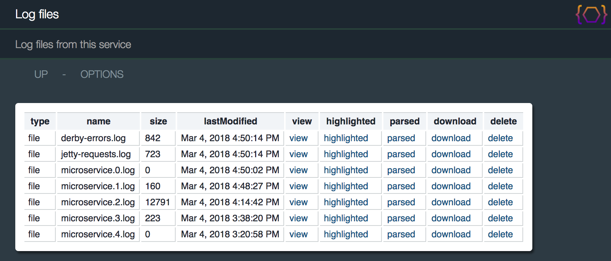
The PetStoreResource class provides examples of the following:
-
Summary and detail views of the same beans providing different levels of information.
-
The use of the {@link org.apache.juneau.html.HtmlRender} class.
-
The use of the {@link org.apache.juneau.annotation.BeanProperty#format @BeanProperty(format)} annotation.
-
The use of the {@link org.apache.juneau.rest.converters.Queryable} interface.
@RestResource(
title="Pet Store",
description="An example of a typical REST resource where beans are rendered in summary and details views.",
path="/petstore",
htmldoc=@HtmlDoc(
widgets={
ContentTypeMenuItem.class,
StyleMenuItem.class,
PetStoreResource.AddPet.class
},
navlinks={
"up: request:/..",
"options: servlet:/?method=OPTIONS",
"$W{ContentTypeMenuItem}",
"$W{StyleMenuItem}",
"source: $C{Source/gitHub}/org/apache/juneau/examples/rest/$R{servletClassSimple}.java",
"$W{AddPet}"
},
aside={
"<div style='max-width:400px' class='text'>",
" <p>This page shows a standard REST resource that renders bean summaries and details.</p>",
" <p>It shows how different properties can be rendered on the same bean in different views.</p>",
" <p>It also shows examples of HtmlRender classes and @BeanProperty(format) annotations.</p>",
" <p>It also shows how the Queryable converter and query widget can be used to create searchable interfaces.</p>",
"</div>"
},
head={
"<link rel='icon' href='$U{servlet:/htdocs/cat.png}'/>"
}
),
staticFiles={"htdocs:htdocs"}
)
public class PetStoreResource extends BasicRestServletJena {
// Our database.
private Map<Integer,Pet> petDB;
@RestHook(INIT)
public void initDatabase(RestContextBuilder builder) throws Exception {
// Load our database from a local JSON file.
petDB = JsonParser.DEFAULT.parse(
getClass().getResourceAsStream("PetStore.json"), LinkedHashMap.class, Integer.class, Pet.class
);
}
// Exclude the 'breed' and 'getsAlongWith' properties from the beans.
@RestMethod(
name=GET,
path="/",
summary="The complete list of pets in the store",
bpx="Pet: breed,getsAlongWith",
// Add our converter for POJO query support.
converters=Queryable.class,
// Add our menu items in the nav links.
htmldoc=@HtmlDoc(
widgets={
QueryMenuItem.class,
ContentTypeMenuItem.class,
StyleMenuItem.class
},
navlinks={
"INHERIT", // Inherit links from class.
"[2]:$W{QueryMenuItem}" // Insert QUERY link in position 2.
}
)
)
public Collection<Pet> getPets() {
return petDB.values();
}
// Shows all bean properties.
@RestMethod(name=GET, path="/{id}", summary="Pet details")
public Pet getPet(@Path("id") Integer id) {
return petDB.get(id);
}
@RestMethod(name=POST, path="/")
public Redirect addPet(@Body Pet pet) throws Exception {
this.petDB.put(pet.id, pet);
return new Redirect("servlet:/");
}
// Our bean class.
public static class Pet {
@Html(link="servlet:/{id}") // Creates a hyperlink in HTML view.
@NameProperty // Links the parent key to this bean.
public int id;
public String name;
public Kind kind;
public String breed;
public List<Kind> getsAlongWith;
@BeanProperty(format="$%.2f") // Renders price in dollars.
public float price;
@Swap(DateSwap.ISO8601D.class) // Renders dates in ISO8601 format.
public Date birthDate;
public int getAge() {
Calendar c = new GregorianCalendar();
c.setTime(birthDate);
return new GregorianCalendar().get(Calendar.YEAR) - c.get(Calendar.YEAR);
}
}
@Html(render=KindRender.class) // Render as an icon in HTML.
public static enum Kind {
CAT, DOG, BIRD, FISH, MOUSE, RABBIT, SNAKE
}
public static class KindRender extends HtmlRender<Kind> {
@Override
public Object getContent(SerializerSession session, Kind value) {
return new Img().src("servlet:/htdocs/"+value.toString().toLowerCase()+".png");
}
@Override
public String getStyle(SerializerSession session, Kind value) {
return "background-color:#FDF2E9";
}
}
// Renders the "ADD" menu item.
public class AddPet extends MenuItemWidget {
@Override
public String getLabel(RestRequest req) throws Exception {
return "add";
}
@Override
public Object getContent(RestRequest req) throws Exception {
return div(
form().id("form").action("servlet:/").method(POST).children(
table(
tr(
th("ID:"),
td(input().name("id").type("number").value(getNextAvailableId())),
td(new Tooltip("(?)", "A unique identifer for the pet.", br(), "Must not conflict with existing IDs"))
),
tr(
th("Name:"),
td(input().name("name").type("text")),
td(new Tooltip("(?)", "The name of the pet.", br(), "e.g. 'Fluffy'"))
),
tr(
th("Kind:"),
td(
select().name("kind").children(
option("CAT"),
option("DOG"),
option("BIRD"),
option("FISH"),
option("MOUSE"),
option("RABBIT"),
option("SNAKE")
)
),
td(new Tooltip("(?)", "The kind of animal."))
),
tr(
th("Breed:"),
td(input().name("breed").type("text")),
td(new Tooltip("(?)", "The breed of animal.", br(), "Can be any arbitrary text"))
),
tr(
th("Gets along with:"),
td(input().name("getsAlongWith").type("text")),
td(new Tooltip("(?)", "A comma-delimited list of other animal types that this animal gets along with."))
),
tr(
th("Price:"),
td(input().name("price").type("number").placeholder("1.0").step("0.01").min(1).max(100)),
td(new Tooltip("(?)", "The price to charge for this pet."))
),
tr(
th("Birthdate:"),
td(input().name("birthDate").type("date")),
td(new Tooltip("(?)", "The pets birthday."))
),
tr(
td().colspan(2).style("text-align:right").children(
button("reset", "Reset"),
button(""button", "Cancel").onclick("window.location.href='/'"),
button("submit", "Submit")
)
)
).style("white-space:nowrap")
)
);
}
}
}
Pointing a browser to the resource shows the following:
http://localhost:10000/petstore

Clicking the QUERY link renders the following menu pop-up complete with tooltips:

The STYLES menu item allows you to try out the other default look-and-feels: